Date: 2019-12-03 20:35:09 CET, cola version: 1.3.2
Document is loading...
All available functions which can be applied to this res_list object:
res_list
#> A 'ConsensusPartitionList' object with 24 methods.
#> On a matrix with 51941 rows and 52 columns.
#> Top rows are extracted by 'SD, CV, MAD, ATC' methods.
#> Subgroups are detected by 'hclust, kmeans, skmeans, pam, mclust, NMF' method.
#> Number of partitions are tried for k = 2, 3, 4, 5, 6.
#> Performed in total 30000 partitions by row resampling.
#>
#> Following methods can be applied to this 'ConsensusPartitionList' object:
#> [1] "cola_report" "collect_classes" "collect_plots" "collect_stats"
#> [5] "colnames" "functional_enrichment" "get_anno_col" "get_anno"
#> [9] "get_classes" "get_matrix" "get_membership" "get_stats"
#> [13] "is_best_k" "is_stable_k" "ncol" "nrow"
#> [17] "rownames" "show" "suggest_best_k" "test_to_known_factors"
#> [21] "top_rows_heatmap" "top_rows_overlap"
#>
#> You can get result for a single method by, e.g. object["SD", "hclust"] or object["SD:hclust"]
#> or a subset of methods by object[c("SD", "CV")], c("hclust", "kmeans")]
The call of run_all_consensus_partition_methods() was:
#> run_all_consensus_partition_methods(data = mat, mc.cores = 4, anno = anno)
Dimension of the input matrix:
mat = get_matrix(res_list)
dim(mat)
#> [1] 51941 52
The density distribution for each sample is visualized as in one column in the following heatmap. The clustering is based on the distance which is the Kolmogorov-Smirnov statistic between two distributions.
library(ComplexHeatmap)
densityHeatmap(mat, top_annotation = HeatmapAnnotation(df = get_anno(res_list),
col = get_anno_col(res_list)), ylab = "value", cluster_columns = TRUE, show_column_names = FALSE,
mc.cores = 4)
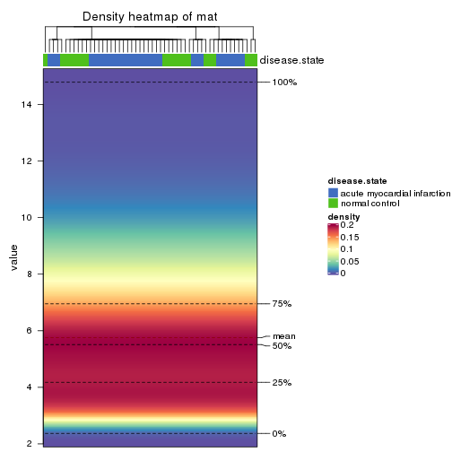
Folowing table shows the best k (number of partitions) for each combination
of top-value methods and partition methods. Clicking on the method name in
the table goes to the section for a single combination of methods.
The cola vignette explains the definition of the metrics used for determining the best number of partitions.
suggest_best_k(res_list)
| The best k | 1-PAC | Mean silhouette | Concordance | Optional k | ||
|---|---|---|---|---|---|---|
| CV:kmeans | 2 | 1.000 | 0.993 | 0.996 | ** | |
| MAD:kmeans | 2 | 1.000 | 0.959 | 0.981 | ** | |
| ATC:kmeans | 3 | 1.000 | 0.994 | 0.996 | ** | 2 |
| SD:mclust | 3 | 0.968 | 0.921 | 0.961 | ** | |
| MAD:skmeans | 3 | 0.949 | 0.933 | 0.968 | * | 2 |
| CV:skmeans | 3 | 0.929 | 0.935 | 0.971 | * | 2 |
| CV:NMF | 3 | 0.926 | 0.915 | 0.964 | * | 2 |
| SD:kmeans | 2 | 0.922 | 0.950 | 0.970 | * | |
| ATC:NMF | 2 | 0.920 | 0.949 | 0.977 | * | |
| MAD:mclust | 5 | 0.918 | 0.882 | 0.937 | * | |
| ATC:pam | 6 | 0.916 | 0.873 | 0.928 | * | 2,4,5 |
| ATC:skmeans | 6 | 0.901 | 0.798 | 0.903 | * | 2,3 |
| CV:mclust | 5 | 0.901 | 0.886 | 0.953 | * | 3 |
| SD:skmeans | 2 | 0.881 | 0.881 | 0.956 | ||
| MAD:pam | 2 | 0.875 | 0.861 | 0.947 | ||
| MAD:NMF | 2 | 0.843 | 0.881 | 0.952 | ||
| ATC:hclust | 4 | 0.815 | 0.854 | 0.921 | ||
| SD:NMF | 2 | 0.805 | 0.871 | 0.949 | ||
| CV:pam | 3 | 0.706 | 0.893 | 0.940 | ||
| SD:pam | 2 | 0.678 | 0.820 | 0.927 | ||
| SD:hclust | 2 | 0.547 | 0.771 | 0.905 | ||
| ATC:mclust | 4 | 0.543 | 0.613 | 0.785 | ||
| MAD:hclust | 2 | 0.506 | 0.798 | 0.906 | ||
| CV:hclust | 2 | 0.481 | 0.716 | 0.862 |
**: 1-PAC > 0.95, *: 1-PAC > 0.9
Cumulative distribution function curves of consensus matrix for all methods.
collect_plots(res_list, fun = plot_ecdf)
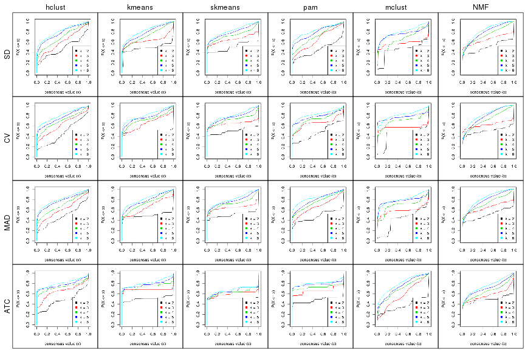
Consensus heatmaps for all methods. (What is a consensus heatmap?)
collect_plots(res_list, k = 2, fun = consensus_heatmap, mc.cores = 4)
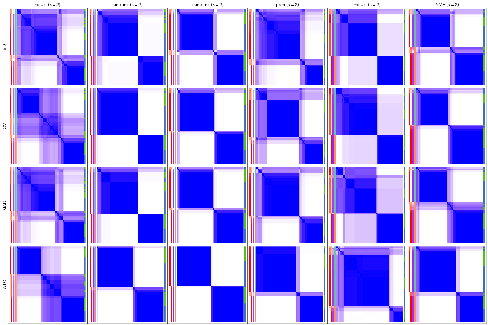
collect_plots(res_list, k = 3, fun = consensus_heatmap, mc.cores = 4)
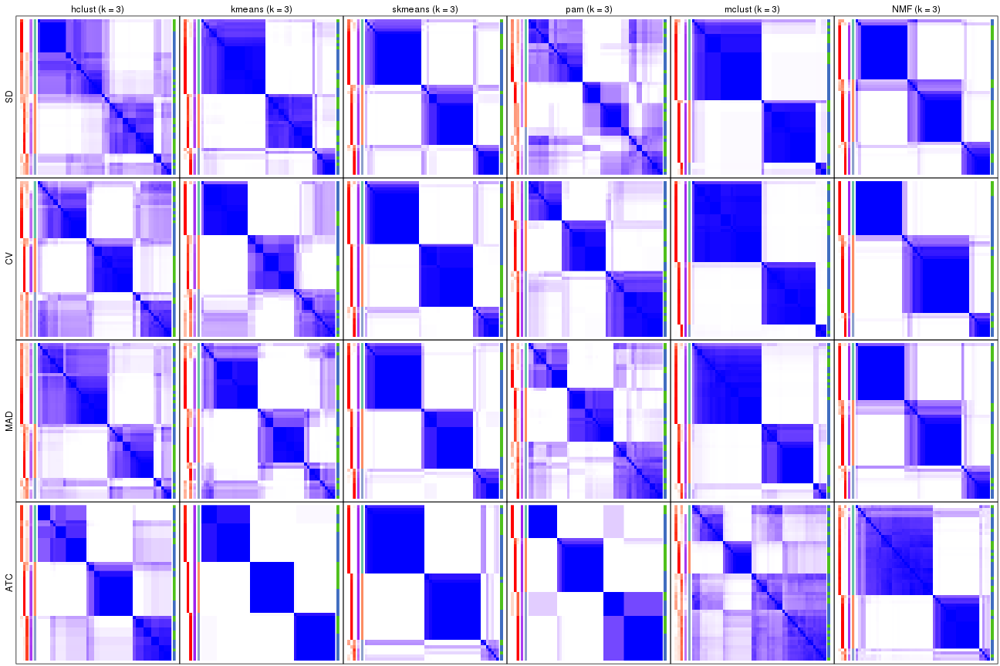
collect_plots(res_list, k = 4, fun = consensus_heatmap, mc.cores = 4)
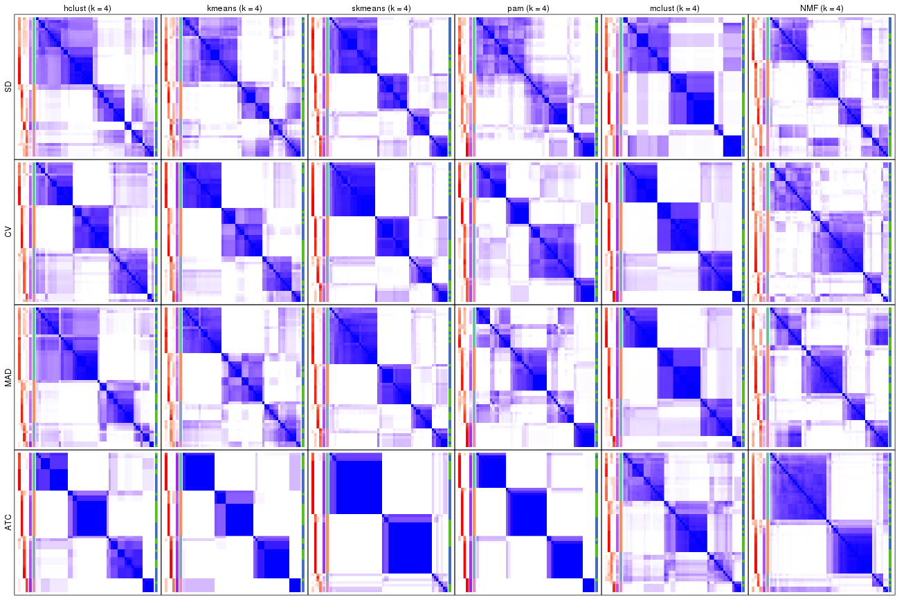
collect_plots(res_list, k = 5, fun = consensus_heatmap, mc.cores = 4)
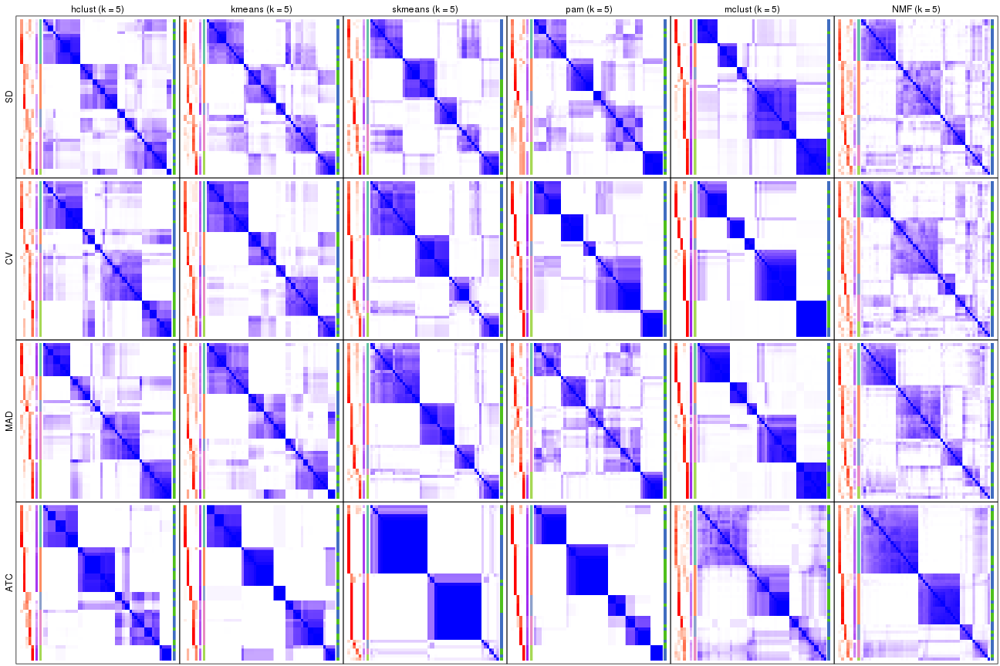
collect_plots(res_list, k = 6, fun = consensus_heatmap, mc.cores = 4)
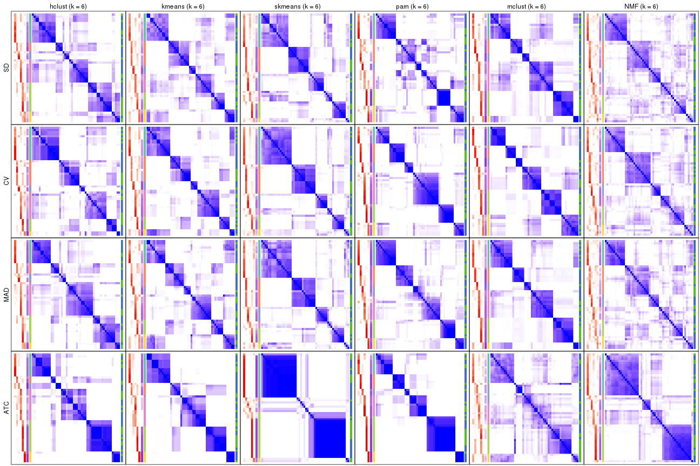
Membership heatmaps for all methods. (What is a membership heatmap?)
collect_plots(res_list, k = 2, fun = membership_heatmap, mc.cores = 4)
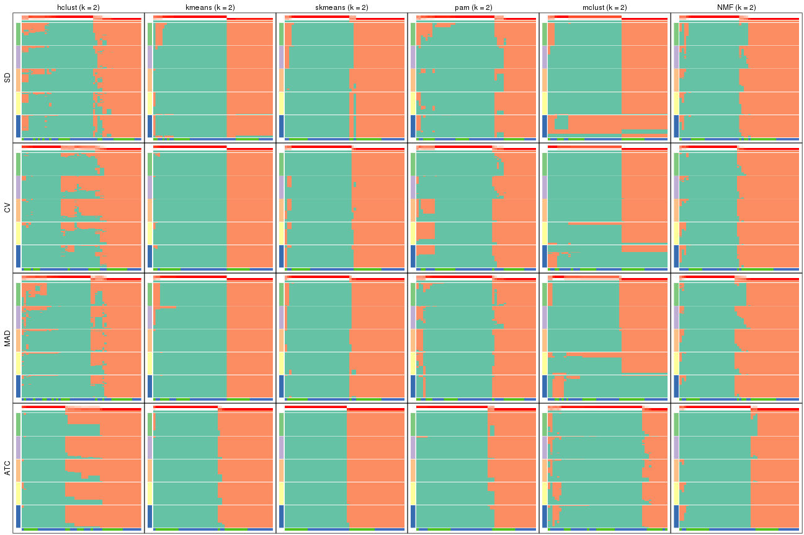
collect_plots(res_list, k = 3, fun = membership_heatmap, mc.cores = 4)
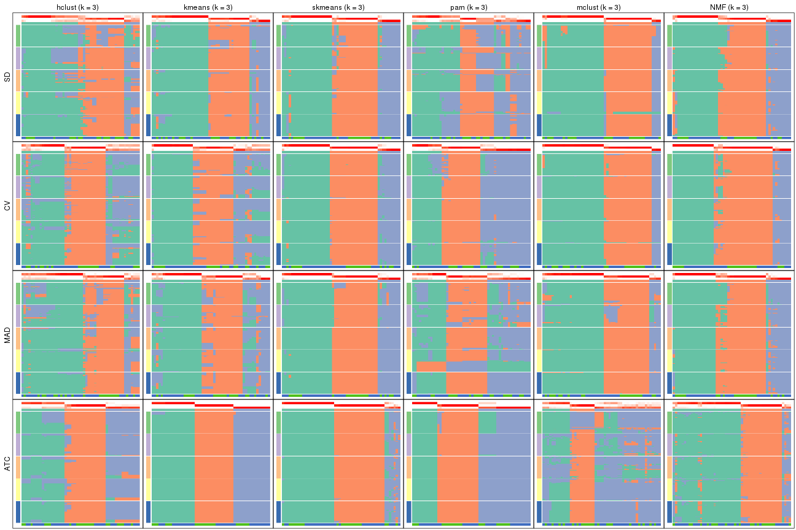
collect_plots(res_list, k = 4, fun = membership_heatmap, mc.cores = 4)
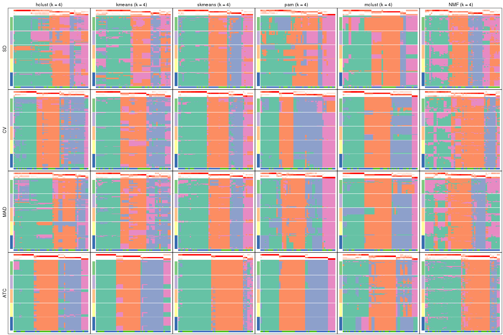
collect_plots(res_list, k = 5, fun = membership_heatmap, mc.cores = 4)
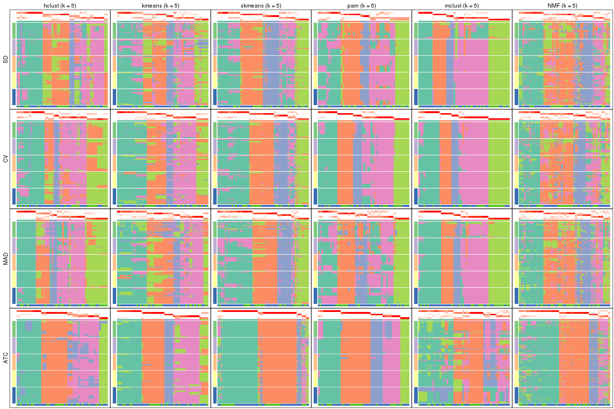
collect_plots(res_list, k = 6, fun = membership_heatmap, mc.cores = 4)
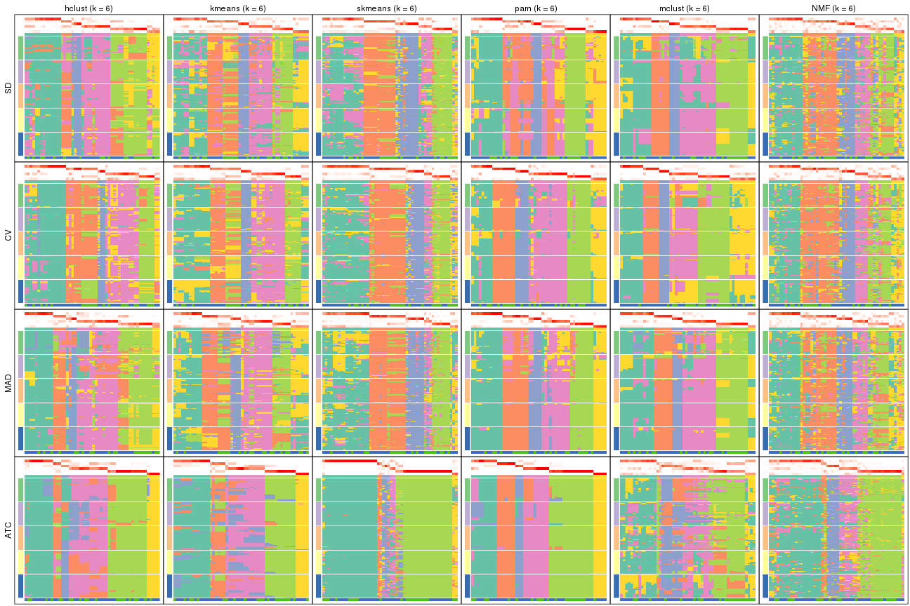
Signature heatmaps for all methods. (What is a signature heatmap?)
Note in following heatmaps, rows are scaled.
collect_plots(res_list, k = 2, fun = get_signatures, mc.cores = 4)
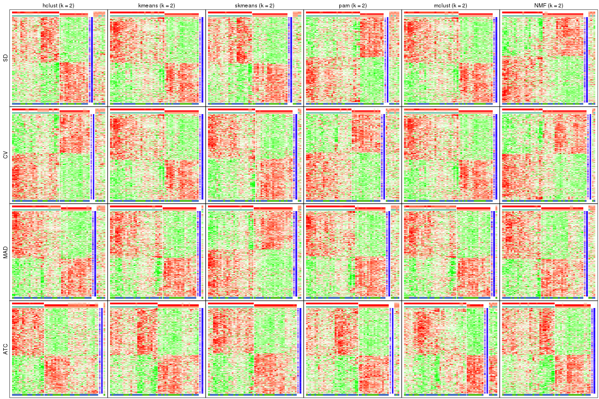
collect_plots(res_list, k = 3, fun = get_signatures, mc.cores = 4)
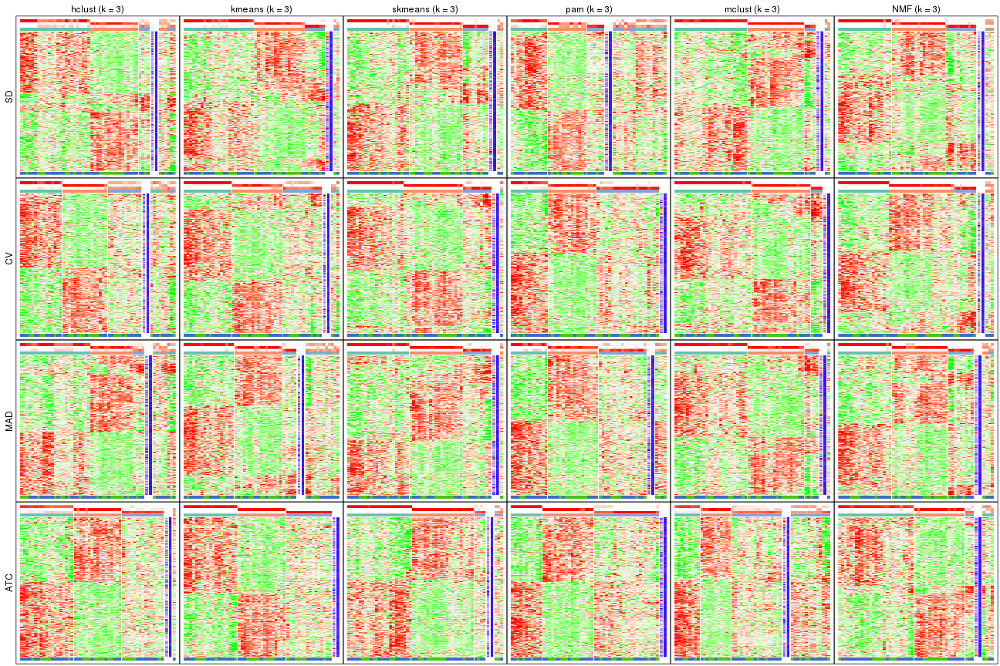
collect_plots(res_list, k = 4, fun = get_signatures, mc.cores = 4)

collect_plots(res_list, k = 5, fun = get_signatures, mc.cores = 4)
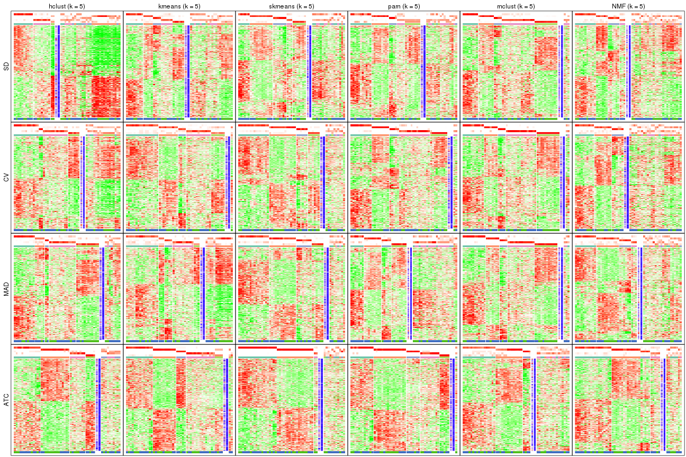
collect_plots(res_list, k = 6, fun = get_signatures, mc.cores = 4)
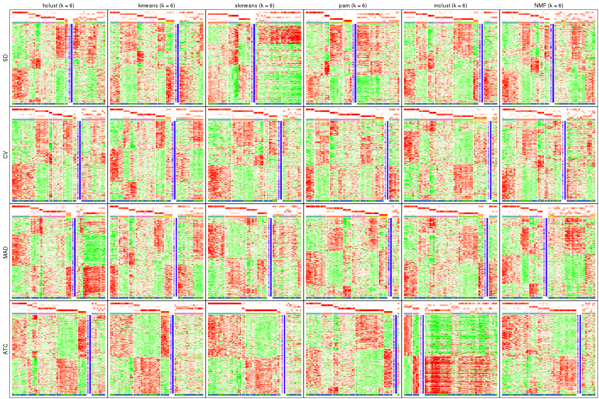
The statistics used for measuring the stability of consensus partitioning. (How are they defined?)
get_stats(res_list, k = 2)
#> k 1-PAC mean_silhouette concordance area_increased Rand Jaccard
#> SD:NMF 2 0.805 0.871 0.949 0.507 0.490 0.490
#> CV:NMF 2 0.957 0.937 0.973 0.507 0.491 0.491
#> MAD:NMF 2 0.843 0.881 0.952 0.505 0.493 0.493
#> ATC:NMF 2 0.920 0.949 0.977 0.489 0.509 0.509
#> SD:skmeans 2 0.881 0.881 0.956 0.506 0.493 0.493
#> CV:skmeans 2 0.959 0.933 0.974 0.505 0.497 0.497
#> MAD:skmeans 2 1.000 0.930 0.974 0.508 0.493 0.493
#> ATC:skmeans 2 1.000 0.998 0.999 0.509 0.491 0.491
#> SD:mclust 2 0.491 0.937 0.880 0.449 0.517 0.517
#> CV:mclust 2 0.500 0.964 0.915 0.430 0.517 0.517
#> MAD:mclust 2 0.485 0.889 0.855 0.418 0.509 0.509
#> ATC:mclust 2 0.769 0.865 0.945 0.366 0.660 0.660
#> SD:kmeans 2 0.922 0.950 0.970 0.487 0.517 0.517
#> CV:kmeans 2 1.000 0.993 0.996 0.485 0.517 0.517
#> MAD:kmeans 2 1.000 0.959 0.981 0.489 0.517 0.517
#> ATC:kmeans 2 1.000 0.973 0.988 0.505 0.493 0.493
#> SD:pam 2 0.678 0.820 0.927 0.452 0.538 0.538
#> CV:pam 2 0.640 0.806 0.922 0.472 0.527 0.527
#> MAD:pam 2 0.875 0.861 0.947 0.481 0.527 0.527
#> ATC:pam 2 1.000 0.941 0.976 0.480 0.509 0.509
#> SD:hclust 2 0.547 0.771 0.905 0.480 0.509 0.509
#> CV:hclust 2 0.481 0.716 0.862 0.463 0.517 0.517
#> MAD:hclust 2 0.506 0.798 0.906 0.477 0.502 0.502
#> ATC:hclust 2 0.573 0.875 0.920 0.474 0.527 0.527
get_stats(res_list, k = 3)
#> k 1-PAC mean_silhouette concordance area_increased Rand Jaccard
#> SD:NMF 3 0.843 0.846 0.940 0.281 0.808 0.625
#> CV:NMF 3 0.926 0.915 0.964 0.233 0.796 0.620
#> MAD:NMF 3 0.826 0.846 0.936 0.275 0.806 0.624
#> ATC:NMF 3 0.746 0.833 0.915 0.175 0.934 0.872
#> SD:skmeans 3 0.861 0.880 0.948 0.291 0.795 0.609
#> CV:skmeans 3 0.929 0.935 0.971 0.280 0.830 0.665
#> MAD:skmeans 3 0.949 0.933 0.968 0.275 0.822 0.652
#> ATC:skmeans 3 0.937 0.927 0.961 0.171 0.872 0.744
#> SD:mclust 3 0.968 0.921 0.961 0.274 0.880 0.775
#> CV:mclust 3 1.000 0.973 0.985 0.334 0.880 0.775
#> MAD:mclust 3 0.864 0.910 0.951 0.409 0.900 0.806
#> ATC:mclust 3 0.283 0.605 0.743 0.568 0.738 0.602
#> SD:kmeans 3 0.760 0.867 0.932 0.297 0.830 0.679
#> CV:kmeans 3 0.673 0.802 0.866 0.344 0.762 0.557
#> MAD:kmeans 3 0.679 0.645 0.859 0.333 0.792 0.609
#> ATC:kmeans 3 1.000 0.994 0.996 0.341 0.734 0.508
#> SD:pam 3 0.467 0.483 0.747 0.436 0.731 0.526
#> CV:pam 3 0.706 0.893 0.940 0.397 0.748 0.548
#> MAD:pam 3 0.564 0.731 0.772 0.387 0.769 0.573
#> ATC:pam 3 0.813 0.933 0.961 0.371 0.748 0.546
#> SD:hclust 3 0.457 0.631 0.785 0.262 0.867 0.742
#> CV:hclust 3 0.528 0.601 0.783 0.348 0.755 0.549
#> MAD:hclust 3 0.491 0.670 0.822 0.275 0.876 0.757
#> ATC:hclust 3 0.636 0.854 0.889 0.374 0.796 0.614
get_stats(res_list, k = 4)
#> k 1-PAC mean_silhouette concordance area_increased Rand Jaccard
#> SD:NMF 4 0.592 0.517 0.732 0.1396 0.784 0.461
#> CV:NMF 4 0.535 0.532 0.737 0.1586 0.948 0.864
#> MAD:NMF 4 0.613 0.448 0.697 0.1370 0.836 0.569
#> ATC:NMF 4 0.673 0.672 0.852 0.1307 0.870 0.727
#> SD:skmeans 4 0.730 0.799 0.881 0.1191 0.910 0.748
#> CV:skmeans 4 0.815 0.831 0.904 0.1104 0.913 0.754
#> MAD:skmeans 4 0.750 0.832 0.892 0.1196 0.899 0.724
#> ATC:skmeans 4 0.835 0.857 0.934 0.0549 0.991 0.976
#> SD:mclust 4 0.562 0.696 0.810 0.1559 0.856 0.674
#> CV:mclust 4 0.739 0.893 0.901 0.2235 0.796 0.552
#> MAD:mclust 4 0.554 0.867 0.879 0.1744 0.828 0.604
#> ATC:mclust 4 0.543 0.613 0.785 0.2115 0.652 0.328
#> SD:kmeans 4 0.585 0.519 0.672 0.1486 0.898 0.739
#> CV:kmeans 4 0.685 0.786 0.846 0.1172 0.956 0.862
#> MAD:kmeans 4 0.591 0.572 0.729 0.1268 0.865 0.650
#> ATC:kmeans 4 0.894 0.930 0.930 0.0795 0.947 0.836
#> SD:pam 4 0.533 0.566 0.749 0.1052 0.802 0.530
#> CV:pam 4 0.621 0.825 0.872 0.1075 0.906 0.730
#> MAD:pam 4 0.635 0.544 0.787 0.1228 0.682 0.284
#> ATC:pam 4 0.952 0.938 0.975 0.1071 0.861 0.634
#> SD:hclust 4 0.545 0.541 0.704 0.1387 0.910 0.776
#> CV:hclust 4 0.563 0.703 0.828 0.1211 0.863 0.632
#> MAD:hclust 4 0.544 0.575 0.754 0.1365 0.961 0.903
#> ATC:hclust 4 0.815 0.854 0.921 0.1234 0.923 0.770
get_stats(res_list, k = 5)
#> k 1-PAC mean_silhouette concordance area_increased Rand Jaccard
#> SD:NMF 5 0.530 0.454 0.693 0.0662 0.832 0.480
#> CV:NMF 5 0.529 0.465 0.686 0.0843 0.824 0.522
#> MAD:NMF 5 0.537 0.496 0.726 0.0730 0.842 0.508
#> ATC:NMF 5 0.637 0.689 0.835 0.0963 0.916 0.784
#> SD:skmeans 5 0.705 0.627 0.811 0.0794 0.909 0.672
#> CV:skmeans 5 0.736 0.710 0.850 0.0738 0.942 0.793
#> MAD:skmeans 5 0.708 0.666 0.813 0.0701 0.962 0.868
#> ATC:skmeans 5 0.869 0.788 0.910 0.0417 0.997 0.992
#> SD:mclust 5 0.817 0.871 0.907 0.1464 0.888 0.664
#> CV:mclust 5 0.901 0.886 0.953 0.1029 0.872 0.592
#> MAD:mclust 5 0.918 0.882 0.937 0.1277 0.867 0.581
#> ATC:mclust 5 0.491 0.518 0.672 0.0679 0.917 0.747
#> SD:kmeans 5 0.619 0.509 0.702 0.0781 0.788 0.423
#> CV:kmeans 5 0.677 0.752 0.810 0.0694 0.942 0.794
#> MAD:kmeans 5 0.628 0.547 0.724 0.0677 0.916 0.734
#> ATC:kmeans 5 0.871 0.855 0.896 0.0651 0.946 0.803
#> SD:pam 5 0.665 0.514 0.752 0.0993 0.769 0.382
#> CV:pam 5 0.790 0.844 0.925 0.0723 0.919 0.713
#> MAD:pam 5 0.635 0.520 0.716 0.0614 0.785 0.348
#> ATC:pam 5 0.933 0.919 0.958 0.0761 0.937 0.774
#> SD:hclust 5 0.623 0.401 0.703 0.1241 0.753 0.395
#> CV:hclust 5 0.622 0.560 0.759 0.0897 0.949 0.822
#> MAD:hclust 5 0.681 0.667 0.809 0.1199 0.796 0.486
#> ATC:hclust 5 0.787 0.720 0.831 0.0627 0.935 0.764
get_stats(res_list, k = 6)
#> k 1-PAC mean_silhouette concordance area_increased Rand Jaccard
#> SD:NMF 6 0.551 0.435 0.684 0.0434 0.883 0.558
#> CV:NMF 6 0.594 0.556 0.730 0.0435 0.902 0.615
#> MAD:NMF 6 0.563 0.418 0.681 0.0461 0.874 0.526
#> ATC:NMF 6 0.597 0.618 0.770 0.0617 0.941 0.816
#> SD:skmeans 6 0.697 0.495 0.721 0.0400 0.913 0.636
#> CV:skmeans 6 0.704 0.652 0.805 0.0410 0.985 0.935
#> MAD:skmeans 6 0.692 0.547 0.751 0.0427 0.958 0.837
#> ATC:skmeans 6 0.901 0.798 0.903 0.0283 0.968 0.914
#> SD:mclust 6 0.662 0.715 0.795 0.0518 0.879 0.560
#> CV:mclust 6 0.766 0.803 0.838 0.0525 0.899 0.589
#> MAD:mclust 6 0.746 0.766 0.832 0.0311 0.925 0.692
#> ATC:mclust 6 0.548 0.222 0.624 0.0714 0.863 0.559
#> SD:kmeans 6 0.649 0.558 0.714 0.0514 0.857 0.459
#> CV:kmeans 6 0.726 0.539 0.710 0.0506 0.956 0.808
#> MAD:kmeans 6 0.707 0.511 0.692 0.0490 0.894 0.595
#> ATC:kmeans 6 0.791 0.576 0.802 0.0455 0.977 0.896
#> SD:pam 6 0.704 0.472 0.747 0.0530 0.821 0.342
#> CV:pam 6 0.817 0.762 0.879 0.0552 0.932 0.705
#> MAD:pam 6 0.769 0.754 0.850 0.0463 0.878 0.498
#> ATC:pam 6 0.916 0.873 0.928 0.0301 0.977 0.897
#> SD:hclust 6 0.646 0.506 0.729 0.0415 0.935 0.740
#> CV:hclust 6 0.684 0.567 0.771 0.0593 0.911 0.672
#> MAD:hclust 6 0.679 0.539 0.734 0.0419 0.943 0.763
#> ATC:hclust 6 0.804 0.736 0.808 0.0403 0.941 0.759
Following heatmap plots the partition for each combination of methods and the lightness correspond to the silhouette scores for samples in each method. On top the consensus subgroup is inferred from all methods by taking the mean silhouette scores as weight.
collect_stats(res_list, k = 2)
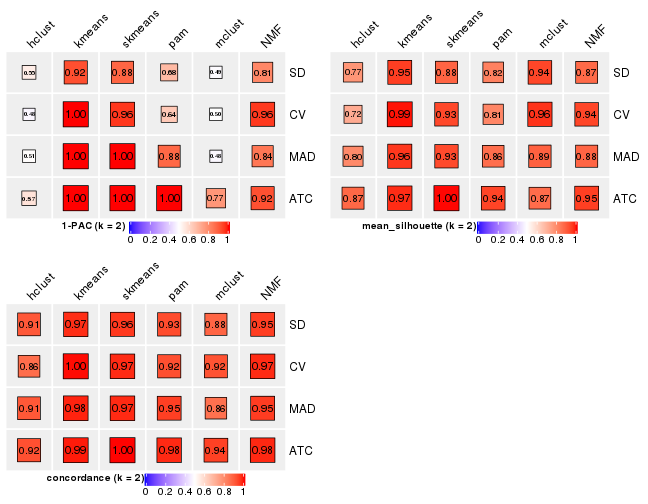
collect_stats(res_list, k = 3)
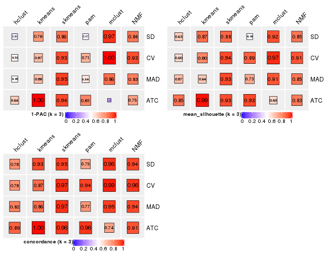
collect_stats(res_list, k = 4)
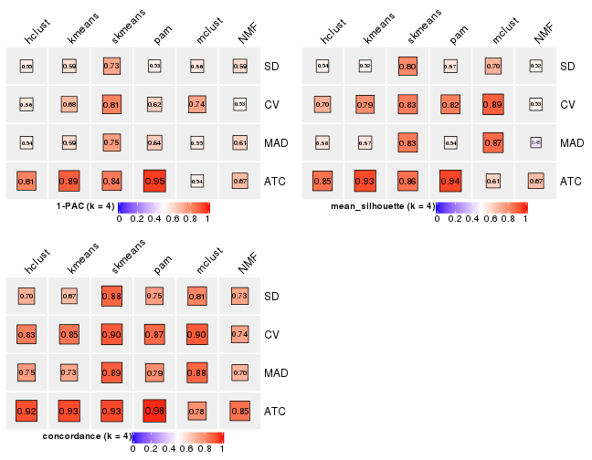
collect_stats(res_list, k = 5)
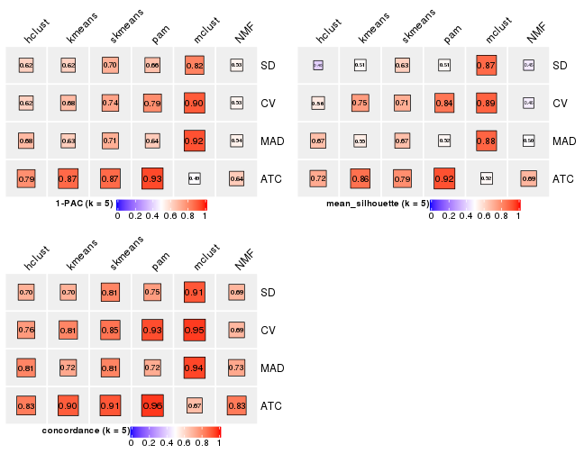
collect_stats(res_list, k = 6)
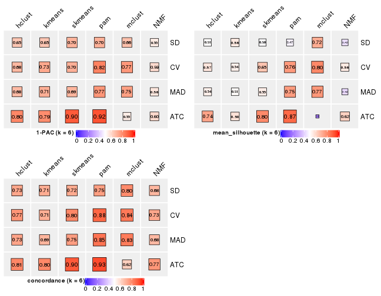
Collect partitions from all methods:
collect_classes(res_list, k = 2)
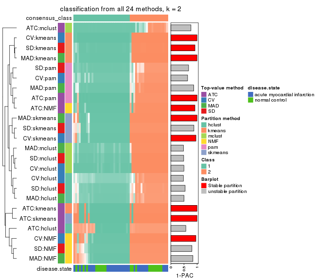
collect_classes(res_list, k = 3)
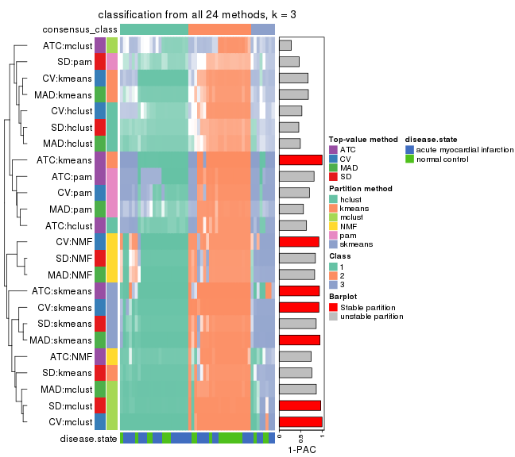
collect_classes(res_list, k = 4)
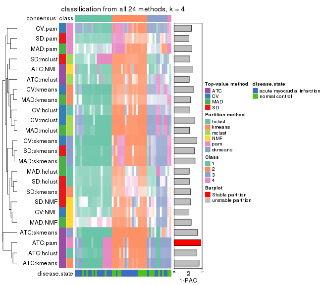
collect_classes(res_list, k = 5)
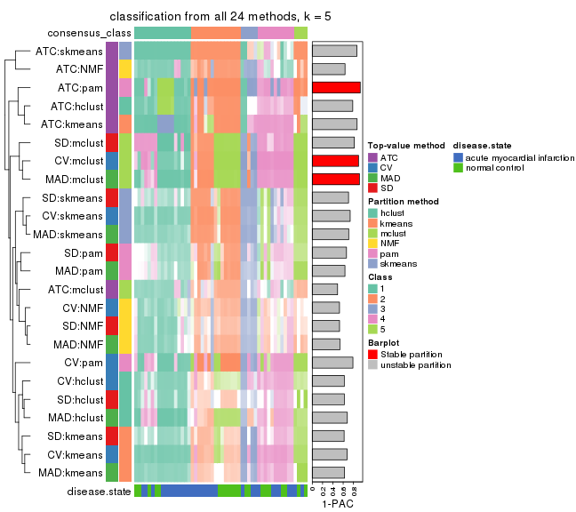
collect_classes(res_list, k = 6)
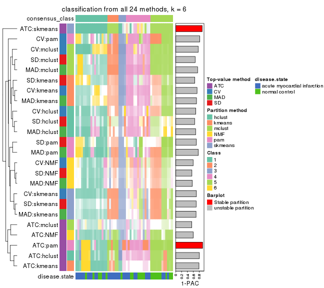
Overlap of top rows from different top-row methods:
top_rows_overlap(res_list, top_n = 1000, method = "euler")
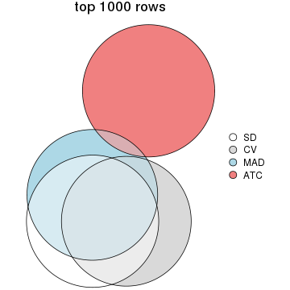
top_rows_overlap(res_list, top_n = 2000, method = "euler")
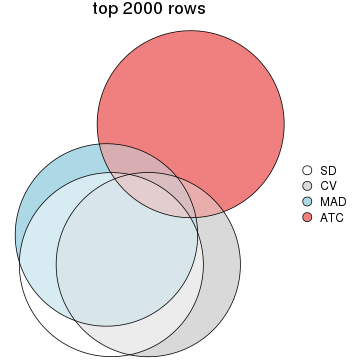
top_rows_overlap(res_list, top_n = 3000, method = "euler")
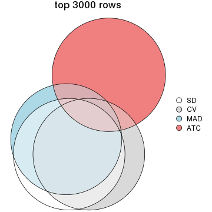
top_rows_overlap(res_list, top_n = 4000, method = "euler")
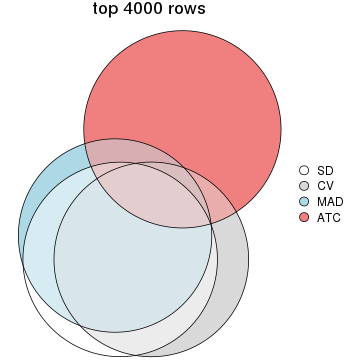
top_rows_overlap(res_list, top_n = 5000, method = "euler")
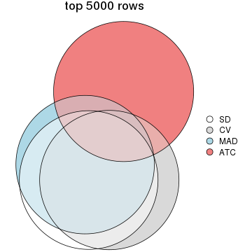
Also visualize the correspondance of rankings between different top-row methods:
top_rows_overlap(res_list, top_n = 1000, method = "correspondance")

top_rows_overlap(res_list, top_n = 2000, method = "correspondance")
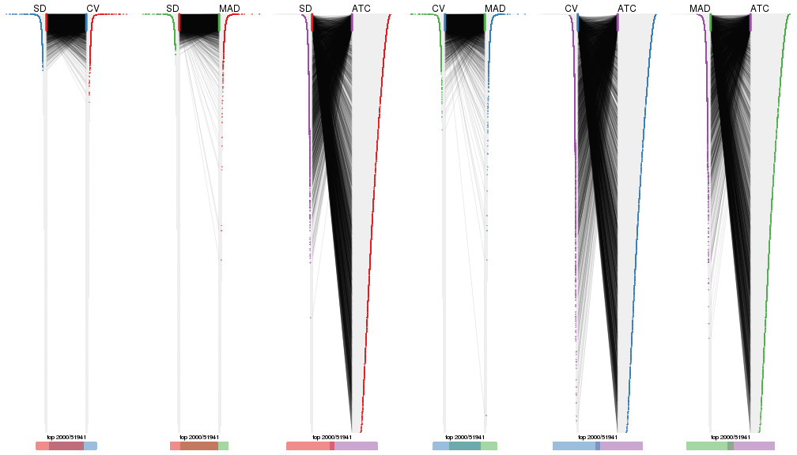
top_rows_overlap(res_list, top_n = 3000, method = "correspondance")
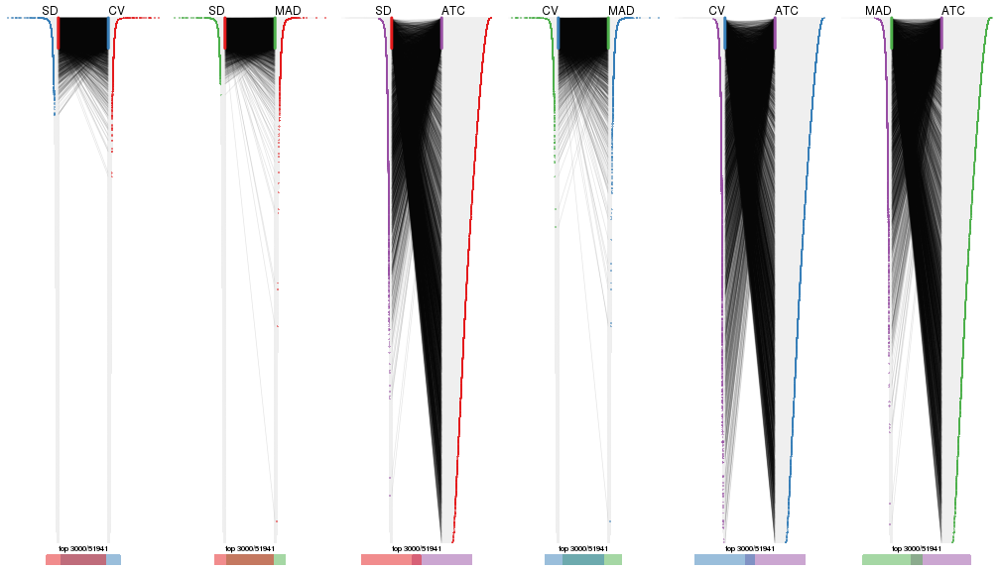
top_rows_overlap(res_list, top_n = 4000, method = "correspondance")
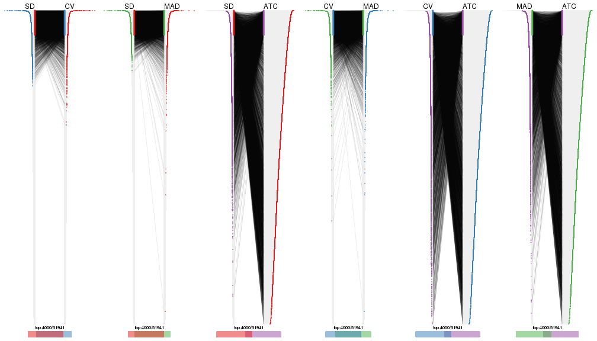
top_rows_overlap(res_list, top_n = 5000, method = "correspondance")
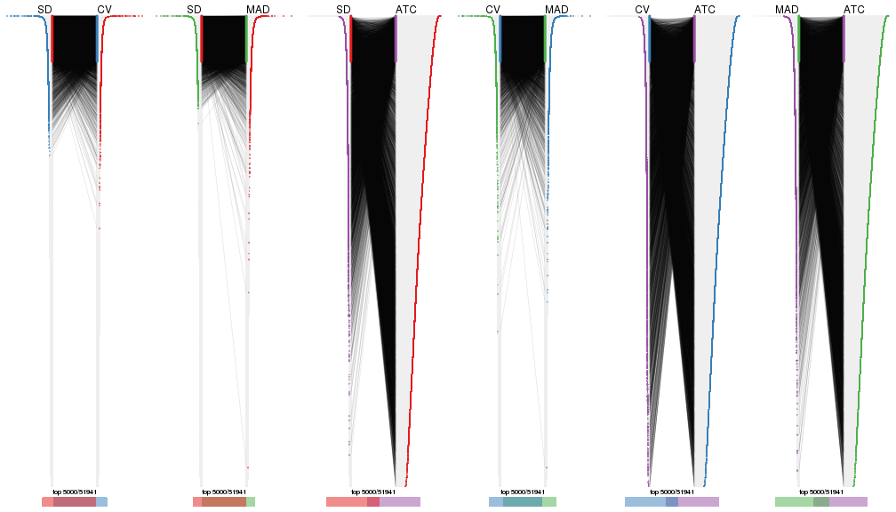
Heatmaps of the top rows:
top_rows_heatmap(res_list, top_n = 1000)
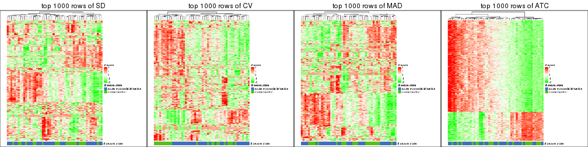
top_rows_heatmap(res_list, top_n = 2000)
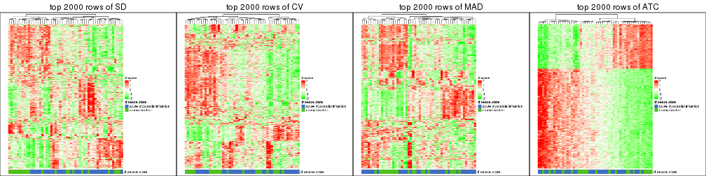
top_rows_heatmap(res_list, top_n = 3000)
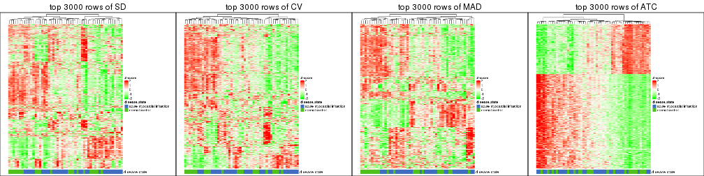
top_rows_heatmap(res_list, top_n = 4000)
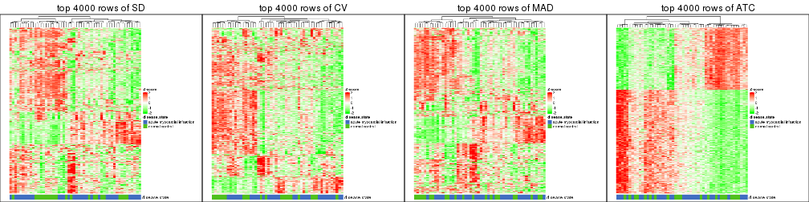
top_rows_heatmap(res_list, top_n = 5000)
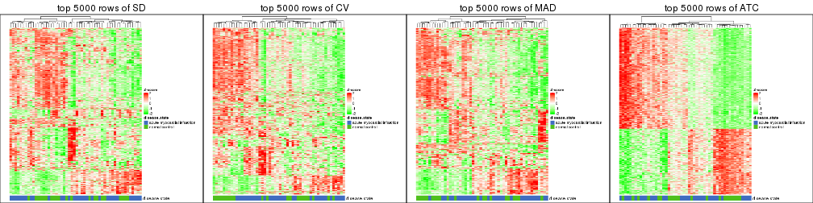
Test correlation between subgroups and known annotations. If the known annotation is numeric, one-way ANOVA test is applied, and if the known annotation is discrete, chi-squared contingency table test is applied.
test_to_known_factors(res_list, k = 2)
#> n disease.state(p) k
#> SD:NMF 48 0.1432 2
#> CV:NMF 50 0.0733 2
#> MAD:NMF 48 0.1239 2
#> ATC:NMF 52 0.5572 2
#> SD:skmeans 47 0.2293 2
#> CV:skmeans 50 0.1164 2
#> MAD:skmeans 50 0.4515 2
#> ATC:skmeans 52 0.8193 2
#> SD:mclust 52 0.4084 2
#> CV:mclust 52 0.4084 2
#> MAD:mclust 51 0.3304 2
#> ATC:mclust 47 0.0193 2
#> SD:kmeans 52 0.4084 2
#> CV:kmeans 52 0.4084 2
#> MAD:kmeans 51 0.3304 2
#> ATC:kmeans 52 0.6470 2
#> SD:pam 46 0.1188 2
#> CV:pam 44 0.4688 2
#> MAD:pam 47 0.3214 2
#> ATC:pam 49 0.4869 2
#> SD:hclust 45 0.2860 2
#> CV:hclust 46 0.3673 2
#> MAD:hclust 47 0.3214 2
#> ATC:hclust 51 0.5727 2
test_to_known_factors(res_list, k = 3)
#> n disease.state(p) k
#> SD:NMF 49 0.0405 3
#> CV:NMF 49 0.1722 3
#> MAD:NMF 48 0.0878 3
#> ATC:NMF 48 0.5203 3
#> SD:skmeans 50 0.1387 3
#> CV:skmeans 51 0.3455 3
#> MAD:skmeans 51 0.2524 3
#> ATC:skmeans 49 0.6416 3
#> SD:mclust 50 0.4671 3
#> CV:mclust 52 0.3319 3
#> MAD:mclust 51 0.5747 3
#> ATC:mclust 38 0.0490 3
#> SD:kmeans 50 0.2390 3
#> CV:kmeans 49 0.4566 3
#> MAD:kmeans 40 0.1770 3
#> ATC:kmeans 52 0.4105 3
#> SD:pam 33 0.0166 3
#> CV:pam 52 0.0943 3
#> MAD:pam 48 0.1346 3
#> ATC:pam 52 0.4743 3
#> SD:hclust 46 0.3279 3
#> CV:hclust 43 0.3383 3
#> MAD:hclust 44 0.2474 3
#> ATC:hclust 51 0.4269 3
test_to_known_factors(res_list, k = 4)
#> n disease.state(p) k
#> SD:NMF 34 0.3677 4
#> CV:NMF 36 0.2837 4
#> MAD:NMF 22 0.4421 4
#> ATC:NMF 45 0.4901 4
#> SD:skmeans 47 0.1285 4
#> CV:skmeans 49 0.2876 4
#> MAD:skmeans 50 0.1540 4
#> ATC:skmeans 45 0.6700 4
#> SD:mclust 45 0.3408 4
#> CV:mclust 50 0.5027 4
#> MAD:mclust 52 0.4774 4
#> ATC:mclust 38 0.4060 4
#> SD:kmeans 32 0.6630 4
#> CV:kmeans 48 0.5708 4
#> MAD:kmeans 34 0.0678 4
#> ATC:kmeans 52 0.5402 4
#> SD:pam 39 0.1509 4
#> CV:pam 52 0.1199 4
#> MAD:pam 24 0.3991 4
#> ATC:pam 52 0.6527 4
#> SD:hclust 36 0.0616 4
#> CV:hclust 44 0.5542 4
#> MAD:hclust 44 0.0917 4
#> ATC:hclust 48 0.5393 4
test_to_known_factors(res_list, k = 5)
#> n disease.state(p) k
#> SD:NMF 26 0.0544 5
#> CV:NMF 26 0.4025 5
#> MAD:NMF 32 0.2072 5
#> ATC:NMF 44 0.2779 5
#> SD:skmeans 35 0.1260 5
#> CV:skmeans 43 0.3964 5
#> MAD:skmeans 44 0.5078 5
#> ATC:skmeans 41 0.1928 5
#> SD:mclust 49 0.0189 5
#> CV:mclust 50 0.0301 5
#> MAD:mclust 49 0.0445 5
#> ATC:mclust 36 0.3115 5
#> SD:kmeans 30 0.3155 5
#> CV:kmeans 51 0.6929 5
#> MAD:kmeans 38 0.4188 5
#> ATC:kmeans 50 0.3176 5
#> SD:pam 36 0.1086 5
#> CV:pam 50 0.1567 5
#> MAD:pam 29 0.0421 5
#> ATC:pam 51 0.3302 5
#> SD:hclust 21 0.1641 5
#> CV:hclust 34 0.9531 5
#> MAD:hclust 44 0.1101 5
#> ATC:hclust 42 0.5325 5
test_to_known_factors(res_list, k = 6)
#> n disease.state(p) k
#> SD:NMF 28 0.1760 6
#> CV:NMF 35 0.4341 6
#> MAD:NMF 24 0.2405 6
#> ATC:NMF 44 0.4544 6
#> SD:skmeans 25 0.3838 6
#> CV:skmeans 41 0.4281 6
#> MAD:skmeans 35 0.6674 6
#> ATC:skmeans 43 0.1838 6
#> SD:mclust 44 0.0616 6
#> CV:mclust 49 0.0144 6
#> MAD:mclust 47 0.0634 6
#> ATC:mclust 9 1.0000 6
#> SD:kmeans 38 0.3863 6
#> CV:kmeans 36 0.2468 6
#> MAD:kmeans 37 0.0783 6
#> ATC:kmeans 35 0.1987 6
#> SD:pam 27 0.1587 6
#> CV:pam 46 0.1770 6
#> MAD:pam 48 0.1607 6
#> ATC:pam 51 0.4659 6
#> SD:hclust 33 0.0566 6
#> CV:hclust 38 0.5188 6
#> MAD:hclust 35 0.6769 6
#> ATC:hclust 44 0.6019 6
The object with results only for a single top-value method and a single partition method can be extracted as:
res = res_list["SD", "hclust"]
# you can also extract it by
# res = res_list["SD:hclust"]
A summary of res and all the functions that can be applied to it:
res
#> A 'ConsensusPartition' object with k = 2, 3, 4, 5, 6.
#> On a matrix with 51941 rows and 52 columns.
#> Top rows (1000, 2000, 3000, 4000, 5000) are extracted by 'SD' method.
#> Subgroups are detected by 'hclust' method.
#> Performed in total 1250 partitions by row resampling.
#> Best k for subgroups seems to be 2.
#>
#> Following methods can be applied to this 'ConsensusPartition' object:
#> [1] "cola_report" "collect_classes" "collect_plots"
#> [4] "collect_stats" "colnames" "compare_signatures"
#> [7] "consensus_heatmap" "dimension_reduction" "functional_enrichment"
#> [10] "get_anno_col" "get_anno" "get_classes"
#> [13] "get_consensus" "get_matrix" "get_membership"
#> [16] "get_param" "get_signatures" "get_stats"
#> [19] "is_best_k" "is_stable_k" "membership_heatmap"
#> [22] "ncol" "nrow" "plot_ecdf"
#> [25] "rownames" "select_partition_number" "show"
#> [28] "suggest_best_k" "test_to_known_factors"
collect_plots() function collects all the plots made from res for all k (number of partitions)
into one single page to provide an easy and fast comparison between different k.
collect_plots(res)
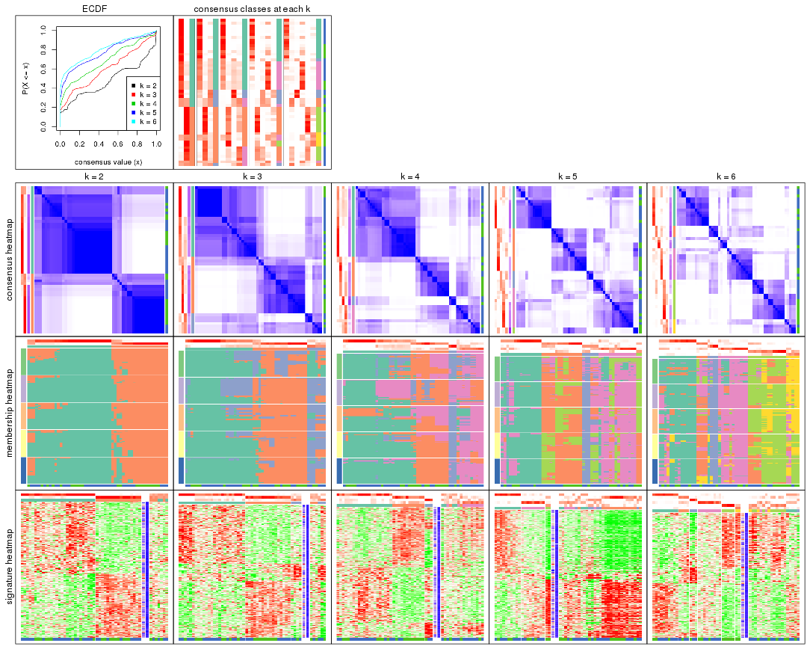
The plots are:
k and the heatmap of
predicted classes for each k.k.k.k.All the plots in panels can be made by individual functions and they are plotted later in this section.
select_partition_number() produces several plots showing different
statistics for choosing “optimized” k. There are following statistics:
k;k, the area increased is defined as \(A_k - A_{k-1}\).The detailed explanations of these statistics can be found in the cola vignette.
Generally speaking, lower PAC score, higher mean silhouette score or higher
concordance corresponds to better partition. Rand index and Jaccard index
measure how similar the current partition is compared to partition with k-1.
If they are too similar, we won't accept k is better than k-1.
select_partition_number(res)
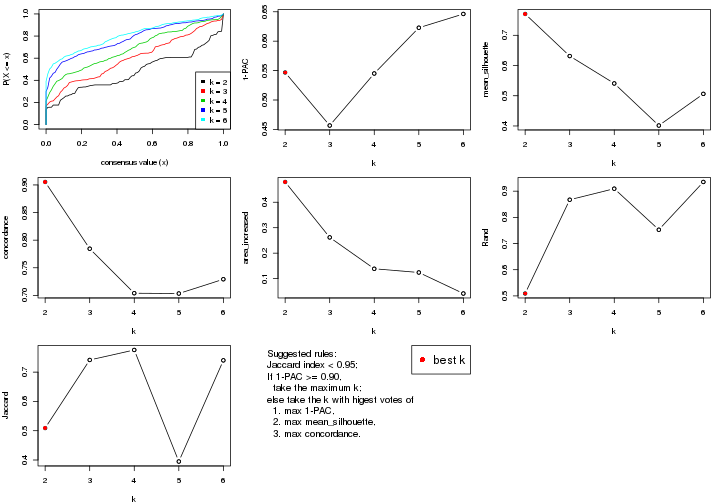
The numeric values for all these statistics can be obtained by get_stats().
get_stats(res)
#> k 1-PAC mean_silhouette concordance area_increased Rand Jaccard
#> 2 2 0.547 0.771 0.905 0.4796 0.509 0.509
#> 3 3 0.457 0.631 0.785 0.2619 0.867 0.742
#> 4 4 0.545 0.541 0.704 0.1387 0.910 0.776
#> 5 5 0.623 0.401 0.703 0.1241 0.753 0.395
#> 6 6 0.646 0.506 0.729 0.0415 0.935 0.740
suggest_best_k() suggests the best \(k\) based on these statistics. The rules are as follows:
NA.suggest_best_k(res)
#> [1] 2
Following shows the table of the partitions (You need to click the show/hide
code output link to see it). The membership matrix (columns with name p*)
is inferred by
clue::cl_consensus()
function with the SE method. Basically the value in the membership matrix
represents the probability to belong to a certain group. The finall class
label for an item is determined with the group with highest probability it
belongs to.
In get_classes() function, the entropy is calculated from the membership
matrix and the silhouette score is calculated from the consensus matrix.
cbind(get_classes(res, k = 2), get_membership(res, k = 2))
#> class entropy silhouette p1 p2
#> GSM1167072 1 0.4939 0.847 0.892 0.108
#> GSM1167073 1 0.6438 0.805 0.836 0.164
#> GSM1167074 2 0.3879 0.836 0.076 0.924
#> GSM1167075 1 0.0000 0.889 1.000 0.000
#> GSM1167076 1 0.0000 0.889 1.000 0.000
#> GSM1167077 2 1.0000 -0.104 0.496 0.504
#> GSM1167078 1 0.5519 0.833 0.872 0.128
#> GSM1167079 2 0.0000 0.880 0.000 1.000
#> GSM1167080 1 0.0000 0.889 1.000 0.000
#> GSM1167081 2 0.0000 0.880 0.000 1.000
#> GSM1167082 1 0.0000 0.889 1.000 0.000
#> GSM1167083 2 0.0000 0.880 0.000 1.000
#> GSM1167084 1 0.0000 0.889 1.000 0.000
#> GSM1167085 2 0.3879 0.836 0.076 0.924
#> GSM1167086 1 0.0000 0.889 1.000 0.000
#> GSM1167087 1 0.0000 0.889 1.000 0.000
#> GSM1167088 1 0.0000 0.889 1.000 0.000
#> GSM1167089 1 0.9983 0.104 0.524 0.476
#> GSM1167090 1 0.6048 0.819 0.852 0.148
#> GSM1167091 1 0.0672 0.887 0.992 0.008
#> GSM1167092 1 0.6623 0.798 0.828 0.172
#> GSM1167093 2 0.9881 0.169 0.436 0.564
#> GSM1167094 1 0.2043 0.882 0.968 0.032
#> GSM1167095 2 0.0672 0.877 0.008 0.992
#> GSM1167096 1 0.2043 0.882 0.968 0.032
#> GSM1167097 1 0.0000 0.889 1.000 0.000
#> GSM1167098 1 0.9970 0.133 0.532 0.468
#> GSM1167099 1 0.0000 0.889 1.000 0.000
#> GSM1167100 2 0.4690 0.818 0.100 0.900
#> GSM1167101 2 0.3879 0.836 0.076 0.924
#> GSM1167122 1 0.4298 0.851 0.912 0.088
#> GSM1167102 2 0.0000 0.880 0.000 1.000
#> GSM1167103 2 0.0000 0.880 0.000 1.000
#> GSM1167104 1 0.0000 0.889 1.000 0.000
#> GSM1167105 2 0.0000 0.880 0.000 1.000
#> GSM1167106 1 0.0000 0.889 1.000 0.000
#> GSM1167107 2 0.0000 0.880 0.000 1.000
#> GSM1167108 1 0.0000 0.889 1.000 0.000
#> GSM1167109 2 0.0000 0.880 0.000 1.000
#> GSM1167110 1 0.6801 0.788 0.820 0.180
#> GSM1167111 2 0.0000 0.880 0.000 1.000
#> GSM1167112 2 0.0000 0.880 0.000 1.000
#> GSM1167113 1 0.6438 0.805 0.836 0.164
#> GSM1167114 2 0.9754 0.275 0.408 0.592
#> GSM1167115 2 0.0000 0.880 0.000 1.000
#> GSM1167116 1 0.6531 0.801 0.832 0.168
#> GSM1167117 2 0.0000 0.880 0.000 1.000
#> GSM1167118 1 0.3733 0.860 0.928 0.072
#> GSM1167119 1 0.0000 0.889 1.000 0.000
#> GSM1167120 2 0.9491 0.387 0.368 0.632
#> GSM1167121 1 0.9970 0.146 0.532 0.468
#> GSM1167123 1 0.0000 0.889 1.000 0.000
cbind(get_classes(res, k = 3), get_membership(res, k = 3))
#> class entropy silhouette p1 p2 p3
#> GSM1167072 1 0.7376 0.650 0.672 0.076 0.252
#> GSM1167073 1 0.7987 0.601 0.616 0.092 0.292
#> GSM1167074 2 0.4504 0.637 0.000 0.804 0.196
#> GSM1167075 1 0.5363 0.612 0.724 0.000 0.276
#> GSM1167076 3 0.5650 0.415 0.312 0.000 0.688
#> GSM1167077 2 0.9914 -0.323 0.328 0.392 0.280
#> GSM1167078 1 0.6936 0.672 0.704 0.064 0.232
#> GSM1167079 2 0.0892 0.765 0.000 0.980 0.020
#> GSM1167080 1 0.0000 0.760 1.000 0.000 0.000
#> GSM1167081 2 0.0892 0.765 0.000 0.980 0.020
#> GSM1167082 1 0.4002 0.738 0.840 0.000 0.160
#> GSM1167083 2 0.3192 0.711 0.000 0.888 0.112
#> GSM1167084 1 0.0000 0.760 1.000 0.000 0.000
#> GSM1167085 2 0.5497 0.653 0.048 0.804 0.148
#> GSM1167086 1 0.0000 0.760 1.000 0.000 0.000
#> GSM1167087 1 0.0000 0.760 1.000 0.000 0.000
#> GSM1167088 1 0.0000 0.760 1.000 0.000 0.000
#> GSM1167089 3 0.8592 0.576 0.116 0.332 0.552
#> GSM1167090 1 0.7807 0.573 0.596 0.068 0.336
#> GSM1167091 1 0.3752 0.734 0.856 0.000 0.144
#> GSM1167092 1 0.8122 0.589 0.608 0.100 0.292
#> GSM1167093 3 0.7627 0.361 0.044 0.428 0.528
#> GSM1167094 1 0.6019 0.658 0.700 0.012 0.288
#> GSM1167095 2 0.4291 0.724 0.008 0.840 0.152
#> GSM1167096 1 0.6019 0.658 0.700 0.012 0.288
#> GSM1167097 1 0.0000 0.760 1.000 0.000 0.000
#> GSM1167098 3 0.8738 0.583 0.128 0.328 0.544
#> GSM1167099 1 0.0000 0.760 1.000 0.000 0.000
#> GSM1167100 2 0.6208 0.630 0.088 0.776 0.136
#> GSM1167101 2 0.4504 0.637 0.000 0.804 0.196
#> GSM1167122 3 0.5986 0.518 0.240 0.024 0.736
#> GSM1167102 2 0.2878 0.751 0.000 0.904 0.096
#> GSM1167103 2 0.0000 0.767 0.000 1.000 0.000
#> GSM1167104 1 0.0000 0.760 1.000 0.000 0.000
#> GSM1167105 2 0.2878 0.751 0.000 0.904 0.096
#> GSM1167106 1 0.0000 0.760 1.000 0.000 0.000
#> GSM1167107 2 0.0592 0.766 0.000 0.988 0.012
#> GSM1167108 1 0.4002 0.738 0.840 0.000 0.160
#> GSM1167109 2 0.0592 0.766 0.000 0.988 0.012
#> GSM1167110 1 0.8173 0.577 0.600 0.100 0.300
#> GSM1167111 2 0.4002 0.724 0.000 0.840 0.160
#> GSM1167112 2 0.0892 0.767 0.000 0.980 0.020
#> GSM1167113 1 0.7987 0.601 0.616 0.092 0.292
#> GSM1167114 2 0.9369 0.022 0.408 0.424 0.168
#> GSM1167115 2 0.0592 0.766 0.000 0.988 0.012
#> GSM1167116 1 0.8055 0.596 0.612 0.096 0.292
#> GSM1167117 2 0.4002 0.724 0.000 0.840 0.160
#> GSM1167118 1 0.2651 0.732 0.928 0.060 0.012
#> GSM1167119 1 0.0000 0.760 1.000 0.000 0.000
#> GSM1167120 2 0.9172 0.079 0.356 0.488 0.156
#> GSM1167121 3 0.8703 0.548 0.124 0.332 0.544
#> GSM1167123 3 0.5650 0.415 0.312 0.000 0.688
cbind(get_classes(res, k = 4), get_membership(res, k = 4))
#> class entropy silhouette p1 p2 p3 p4
#> GSM1167072 1 0.7913 0.6209 0.576 0.052 0.192 0.180
#> GSM1167073 1 0.8698 0.5701 0.512 0.096 0.208 0.184
#> GSM1167074 4 0.3172 0.3507 0.000 0.160 0.000 0.840
#> GSM1167075 1 0.4972 0.3049 0.544 0.000 0.456 0.000
#> GSM1167076 3 0.0469 0.9405 0.012 0.000 0.988 0.000
#> GSM1167077 4 0.9884 0.0715 0.200 0.244 0.232 0.324
#> GSM1167078 1 0.7655 0.5954 0.604 0.080 0.224 0.092
#> GSM1167079 2 0.4053 0.6355 0.000 0.768 0.004 0.228
#> GSM1167080 1 0.0188 0.7199 0.996 0.000 0.004 0.000
#> GSM1167081 2 0.4053 0.6355 0.000 0.768 0.004 0.228
#> GSM1167082 1 0.4713 0.7013 0.776 0.000 0.172 0.052
#> GSM1167083 4 0.4072 0.1939 0.000 0.252 0.000 0.748
#> GSM1167084 1 0.0188 0.7199 0.996 0.000 0.004 0.000
#> GSM1167085 4 0.5753 0.3367 0.000 0.248 0.072 0.680
#> GSM1167086 1 0.0336 0.7204 0.992 0.000 0.008 0.000
#> GSM1167087 1 0.0336 0.7210 0.992 0.000 0.008 0.000
#> GSM1167088 1 0.0188 0.7199 0.996 0.000 0.004 0.000
#> GSM1167089 4 0.5349 0.1625 0.012 0.004 0.368 0.616
#> GSM1167090 1 0.8808 0.4821 0.448 0.072 0.296 0.184
#> GSM1167091 1 0.4405 0.7009 0.800 0.000 0.152 0.048
#> GSM1167092 1 0.9059 0.4984 0.448 0.100 0.264 0.188
#> GSM1167093 4 0.5137 0.2977 0.000 0.024 0.296 0.680
#> GSM1167094 1 0.6623 0.6342 0.620 0.000 0.232 0.148
#> GSM1167095 2 0.2452 0.5968 0.004 0.908 0.004 0.084
#> GSM1167096 1 0.6623 0.6342 0.620 0.000 0.232 0.148
#> GSM1167097 1 0.0336 0.7210 0.992 0.000 0.008 0.000
#> GSM1167098 4 0.5545 0.1590 0.020 0.004 0.364 0.612
#> GSM1167099 1 0.0000 0.7186 1.000 0.000 0.000 0.000
#> GSM1167100 4 0.6625 0.3018 0.036 0.256 0.060 0.648
#> GSM1167101 4 0.3172 0.3507 0.000 0.160 0.000 0.840
#> GSM1167122 3 0.2334 0.8716 0.004 0.000 0.908 0.088
#> GSM1167102 2 0.4283 0.6314 0.000 0.740 0.004 0.256
#> GSM1167103 2 0.5080 0.5862 0.000 0.576 0.004 0.420
#> GSM1167104 1 0.0592 0.7214 0.984 0.000 0.000 0.016
#> GSM1167105 2 0.4283 0.6314 0.000 0.740 0.004 0.256
#> GSM1167106 1 0.0707 0.7216 0.980 0.000 0.000 0.020
#> GSM1167107 2 0.5105 0.5751 0.000 0.564 0.004 0.432
#> GSM1167108 1 0.4713 0.7013 0.776 0.000 0.172 0.052
#> GSM1167109 2 0.5080 0.5841 0.000 0.576 0.004 0.420
#> GSM1167110 1 0.9121 0.4816 0.436 0.100 0.268 0.196
#> GSM1167111 2 0.0188 0.5542 0.000 0.996 0.004 0.000
#> GSM1167112 2 0.5088 0.5785 0.000 0.572 0.004 0.424
#> GSM1167113 1 0.8698 0.5701 0.512 0.096 0.208 0.184
#> GSM1167114 2 0.6407 -0.0948 0.348 0.580 0.004 0.068
#> GSM1167115 2 0.5105 0.5751 0.000 0.564 0.004 0.432
#> GSM1167116 1 0.8886 0.5372 0.484 0.100 0.232 0.184
#> GSM1167117 2 0.0376 0.5572 0.000 0.992 0.004 0.004
#> GSM1167118 1 0.3400 0.7042 0.872 0.064 0.000 0.064
#> GSM1167119 1 0.0336 0.7210 0.992 0.000 0.008 0.000
#> GSM1167120 2 0.7094 0.0427 0.296 0.568 0.008 0.128
#> GSM1167121 4 0.6849 0.1028 0.016 0.068 0.376 0.540
#> GSM1167123 3 0.0469 0.9405 0.012 0.000 0.988 0.000
cbind(get_classes(res, k = 5), get_membership(res, k = 5))
#> class entropy silhouette p1 p2 p3 p4 p5
#> GSM1167072 4 0.3516 0.6174 0.152 0.008 0.020 0.820 0.000
#> GSM1167073 4 0.1956 0.6553 0.076 0.008 0.000 0.916 0.000
#> GSM1167074 2 0.4849 0.3349 0.000 0.548 0.432 0.016 0.004
#> GSM1167075 1 0.6917 0.2107 0.516 0.000 0.296 0.040 0.148
#> GSM1167076 3 0.4942 0.4400 0.000 0.000 0.540 0.028 0.432
#> GSM1167077 4 0.5662 0.2209 0.000 0.184 0.164 0.648 0.004
#> GSM1167078 4 0.5007 0.0452 0.440 0.004 0.016 0.536 0.004
#> GSM1167079 2 0.4483 -0.3071 0.000 0.672 0.008 0.012 0.308
#> GSM1167080 1 0.0613 0.7622 0.984 0.000 0.004 0.004 0.008
#> GSM1167081 2 0.4483 -0.3071 0.000 0.672 0.008 0.012 0.308
#> GSM1167082 1 0.5479 0.2138 0.508 0.000 0.052 0.436 0.004
#> GSM1167083 2 0.4523 0.4469 0.000 0.640 0.344 0.012 0.004
#> GSM1167084 1 0.0613 0.7622 0.984 0.000 0.004 0.004 0.008
#> GSM1167085 2 0.5844 0.3530 0.000 0.544 0.360 0.092 0.004
#> GSM1167086 1 0.0854 0.7589 0.976 0.000 0.004 0.012 0.008
#> GSM1167087 1 0.1106 0.7686 0.964 0.000 0.012 0.024 0.000
#> GSM1167088 1 0.0613 0.7622 0.984 0.000 0.004 0.004 0.008
#> GSM1167089 3 0.5666 0.3058 0.000 0.064 0.548 0.380 0.008
#> GSM1167090 4 0.2086 0.6150 0.020 0.000 0.048 0.924 0.008
#> GSM1167091 1 0.5862 0.2533 0.516 0.000 0.068 0.404 0.012
#> GSM1167092 4 0.1306 0.6376 0.016 0.008 0.016 0.960 0.000
#> GSM1167093 3 0.6050 0.3069 0.000 0.144 0.544 0.312 0.000
#> GSM1167094 4 0.5007 0.5317 0.188 0.000 0.080 0.720 0.012
#> GSM1167095 2 0.5599 -0.8065 0.000 0.484 0.000 0.072 0.444
#> GSM1167096 4 0.4973 0.5364 0.184 0.000 0.080 0.724 0.012
#> GSM1167097 1 0.1106 0.7686 0.964 0.000 0.012 0.024 0.000
#> GSM1167098 3 0.5691 0.2904 0.000 0.064 0.536 0.392 0.008
#> GSM1167099 1 0.0703 0.7679 0.976 0.000 0.000 0.024 0.000
#> GSM1167100 2 0.6143 0.3575 0.000 0.544 0.316 0.136 0.004
#> GSM1167101 2 0.4849 0.3349 0.000 0.548 0.432 0.016 0.004
#> GSM1167122 3 0.5783 0.4712 0.000 0.000 0.540 0.100 0.360
#> GSM1167102 2 0.4674 -0.0828 0.000 0.708 0.000 0.060 0.232
#> GSM1167103 2 0.0740 0.4578 0.000 0.980 0.008 0.004 0.008
#> GSM1167104 1 0.1732 0.7473 0.920 0.000 0.000 0.080 0.000
#> GSM1167105 2 0.4617 -0.0556 0.000 0.716 0.000 0.060 0.224
#> GSM1167106 1 0.2929 0.6716 0.820 0.000 0.000 0.180 0.000
#> GSM1167107 2 0.0290 0.4699 0.000 0.992 0.000 0.008 0.000
#> GSM1167108 1 0.5479 0.2138 0.508 0.000 0.052 0.436 0.004
#> GSM1167109 2 0.1168 0.4444 0.000 0.960 0.000 0.008 0.032
#> GSM1167110 4 0.0981 0.6278 0.008 0.008 0.012 0.972 0.000
#> GSM1167111 5 0.5440 0.9911 0.000 0.396 0.000 0.064 0.540
#> GSM1167112 2 0.0566 0.4674 0.000 0.984 0.000 0.012 0.004
#> GSM1167113 4 0.1956 0.6553 0.076 0.008 0.000 0.916 0.000
#> GSM1167114 4 0.5721 0.0131 0.000 0.084 0.000 0.492 0.424
#> GSM1167115 2 0.0290 0.4699 0.000 0.992 0.000 0.008 0.000
#> GSM1167116 4 0.1484 0.6508 0.048 0.008 0.000 0.944 0.000
#> GSM1167117 5 0.5447 0.9910 0.000 0.400 0.000 0.064 0.536
#> GSM1167118 1 0.5315 0.1604 0.500 0.000 0.004 0.456 0.040
#> GSM1167119 1 0.1106 0.7686 0.964 0.000 0.012 0.024 0.000
#> GSM1167120 4 0.6652 -0.0183 0.012 0.176 0.000 0.496 0.316
#> GSM1167121 4 0.5549 -0.3196 0.000 0.048 0.468 0.476 0.008
#> GSM1167123 3 0.4942 0.4400 0.000 0.000 0.540 0.028 0.432
cbind(get_classes(res, k = 6), get_membership(res, k = 6))
#> class entropy silhouette p1 p2 p3 p4 p5 p6
#> GSM1167072 4 0.2791 0.6850 0.124 0.008 0.016 0.852 0.000 0.000
#> GSM1167073 4 0.1471 0.7251 0.064 0.004 0.000 0.932 0.000 0.000
#> GSM1167074 5 0.4591 0.2880 0.000 0.408 0.000 0.000 0.552 0.040
#> GSM1167075 3 0.7248 0.2139 0.328 0.068 0.424 0.028 0.000 0.152
#> GSM1167076 3 0.0405 0.7242 0.000 0.008 0.988 0.004 0.000 0.000
#> GSM1167077 4 0.5901 0.0845 0.000 0.164 0.004 0.616 0.172 0.044
#> GSM1167078 4 0.6596 0.2071 0.296 0.044 0.020 0.512 0.000 0.128
#> GSM1167079 5 0.4902 -0.0709 0.000 0.088 0.000 0.000 0.608 0.304
#> GSM1167080 1 0.1672 0.6984 0.932 0.048 0.000 0.004 0.000 0.016
#> GSM1167081 5 0.4986 -0.0877 0.000 0.096 0.000 0.000 0.600 0.304
#> GSM1167082 1 0.6064 0.2216 0.480 0.096 0.036 0.384 0.000 0.004
#> GSM1167083 5 0.4332 0.4305 0.000 0.316 0.000 0.000 0.644 0.040
#> GSM1167084 1 0.1536 0.7012 0.940 0.040 0.000 0.004 0.000 0.016
#> GSM1167085 5 0.5643 0.2934 0.000 0.356 0.004 0.056 0.544 0.040
#> GSM1167086 1 0.3603 0.6247 0.808 0.056 0.000 0.012 0.000 0.124
#> GSM1167087 1 0.1857 0.7238 0.928 0.028 0.012 0.032 0.000 0.000
#> GSM1167088 1 0.3511 0.6264 0.808 0.064 0.000 0.004 0.000 0.124
#> GSM1167089 2 0.4745 0.8926 0.000 0.676 0.024 0.264 0.020 0.016
#> GSM1167090 4 0.3039 0.6633 0.028 0.068 0.008 0.868 0.000 0.028
#> GSM1167091 1 0.6496 0.2476 0.480 0.088 0.032 0.364 0.000 0.036
#> GSM1167092 4 0.1269 0.7036 0.012 0.012 0.020 0.956 0.000 0.000
#> GSM1167093 2 0.4569 0.8093 0.000 0.700 0.004 0.200 0.096 0.000
#> GSM1167094 4 0.5864 0.5409 0.156 0.120 0.036 0.656 0.000 0.032
#> GSM1167095 6 0.4756 0.3191 0.000 0.032 0.000 0.008 0.456 0.504
#> GSM1167096 4 0.5869 0.5416 0.152 0.124 0.036 0.656 0.000 0.032
#> GSM1167097 1 0.1857 0.7238 0.928 0.028 0.012 0.032 0.000 0.000
#> GSM1167098 2 0.4806 0.8920 0.000 0.664 0.024 0.276 0.020 0.016
#> GSM1167099 1 0.0725 0.7206 0.976 0.012 0.000 0.012 0.000 0.000
#> GSM1167100 5 0.6035 0.3064 0.000 0.304 0.004 0.100 0.548 0.044
#> GSM1167101 5 0.4591 0.2880 0.000 0.408 0.000 0.000 0.552 0.040
#> GSM1167122 3 0.3635 0.5978 0.000 0.120 0.804 0.068 0.000 0.008
#> GSM1167102 5 0.3575 0.1989 0.000 0.000 0.000 0.008 0.708 0.284
#> GSM1167103 5 0.1141 0.5301 0.000 0.052 0.000 0.000 0.948 0.000
#> GSM1167104 1 0.1643 0.7221 0.924 0.008 0.000 0.068 0.000 0.000
#> GSM1167105 5 0.3534 0.2161 0.000 0.000 0.000 0.008 0.716 0.276
#> GSM1167106 1 0.2778 0.6737 0.824 0.008 0.000 0.168 0.000 0.000
#> GSM1167107 5 0.0000 0.5564 0.000 0.000 0.000 0.000 1.000 0.000
#> GSM1167108 1 0.6064 0.2216 0.480 0.096 0.036 0.384 0.000 0.004
#> GSM1167109 5 0.0937 0.5369 0.000 0.000 0.000 0.000 0.960 0.040
#> GSM1167110 4 0.1307 0.6913 0.008 0.032 0.008 0.952 0.000 0.000
#> GSM1167111 6 0.3578 0.5120 0.000 0.000 0.000 0.000 0.340 0.660
#> GSM1167112 5 0.0291 0.5546 0.000 0.000 0.000 0.004 0.992 0.004
#> GSM1167113 4 0.1471 0.7251 0.064 0.004 0.000 0.932 0.000 0.000
#> GSM1167114 6 0.5113 0.2791 0.000 0.036 0.000 0.336 0.036 0.592
#> GSM1167115 5 0.0000 0.5564 0.000 0.000 0.000 0.000 1.000 0.000
#> GSM1167116 4 0.1364 0.7181 0.048 0.004 0.004 0.944 0.000 0.000
#> GSM1167117 6 0.3607 0.5079 0.000 0.000 0.000 0.000 0.348 0.652
#> GSM1167118 1 0.6197 0.2096 0.492 0.052 0.000 0.348 0.000 0.108
#> GSM1167119 1 0.1857 0.7238 0.928 0.028 0.012 0.032 0.000 0.000
#> GSM1167120 6 0.6645 0.3280 0.012 0.036 0.000 0.352 0.156 0.444
#> GSM1167121 2 0.4303 0.7978 0.000 0.616 0.008 0.360 0.000 0.016
#> GSM1167123 3 0.0405 0.7242 0.000 0.008 0.988 0.004 0.000 0.000
Heatmaps for the consensus matrix. It visualizes the probability of two samples to be in a same group.
consensus_heatmap(res, k = 2)
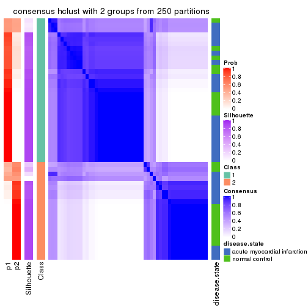
consensus_heatmap(res, k = 3)
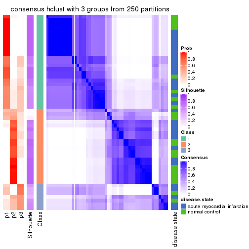
consensus_heatmap(res, k = 4)
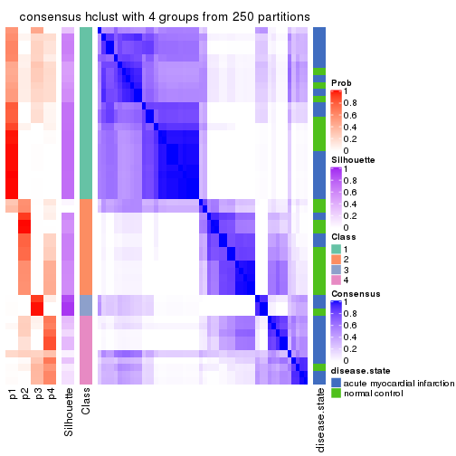
consensus_heatmap(res, k = 5)
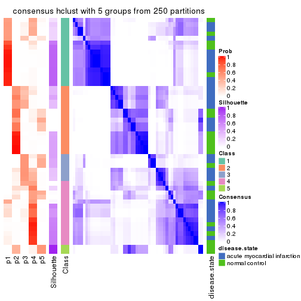
consensus_heatmap(res, k = 6)
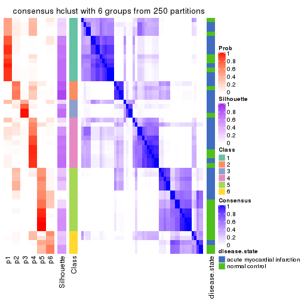
Heatmaps for the membership of samples in all partitions to see how consistent they are:
membership_heatmap(res, k = 2)
membership_heatmap(res, k = 3)
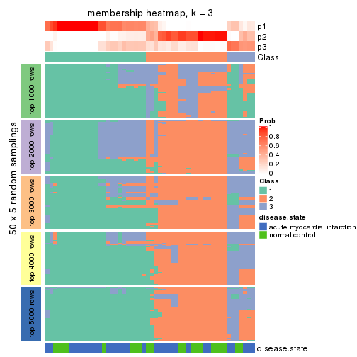
membership_heatmap(res, k = 4)
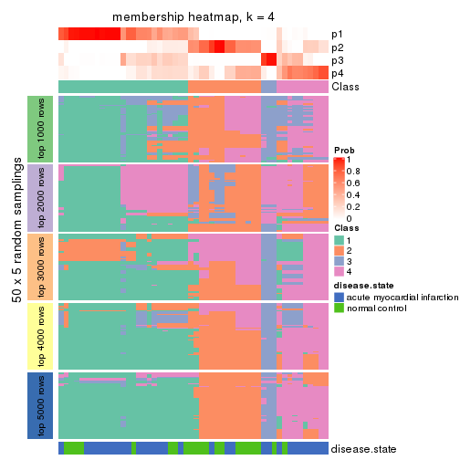
membership_heatmap(res, k = 5)
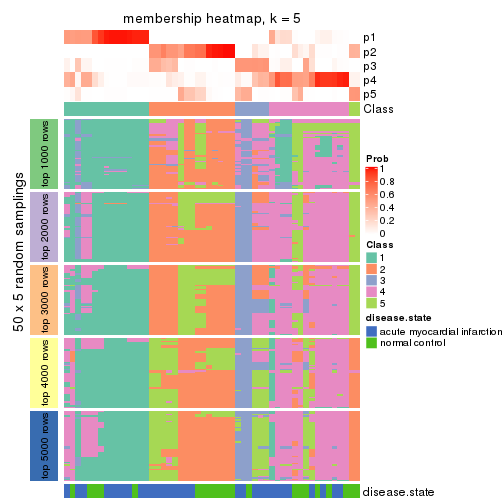
membership_heatmap(res, k = 6)
As soon as we have had the classes for columns, we can look for signatures which are significantly different between classes which can be candidate marks for certain classes. Following are the heatmaps for signatures.
Signature heatmaps where rows are scaled:
get_signatures(res, k = 2)
get_signatures(res, k = 3)
get_signatures(res, k = 4)
get_signatures(res, k = 5)
get_signatures(res, k = 6)

Signature heatmaps where rows are not scaled:
get_signatures(res, k = 2, scale_rows = FALSE)
get_signatures(res, k = 3, scale_rows = FALSE)
get_signatures(res, k = 4, scale_rows = FALSE)
get_signatures(res, k = 5, scale_rows = FALSE)
get_signatures(res, k = 6, scale_rows = FALSE)
Compare the overlap of signatures from different k:
compare_signatures(res)
get_signature() returns a data frame invisibly. TO get the list of signatures, the function
call should be assigned to a variable explicitly. In following code, if plot argument is set
to FALSE, no heatmap is plotted while only the differential analysis is performed.
# code only for demonstration
tb = get_signature(res, k = ..., plot = FALSE)
An example of the output of tb is:
#> which_row fdr mean_1 mean_2 scaled_mean_1 scaled_mean_2 km
#> 1 38 0.042760348 8.373488 9.131774 -0.5533452 0.5164555 1
#> 2 40 0.018707592 7.106213 8.469186 -0.6173731 0.5762149 1
#> 3 55 0.019134737 10.221463 11.207825 -0.6159697 0.5749050 1
#> 4 59 0.006059896 5.921854 7.869574 -0.6899429 0.6439467 1
#> 5 60 0.018055526 8.928898 10.211722 -0.6204761 0.5791110 1
#> 6 98 0.009384629 15.714769 14.887706 0.6635654 -0.6193277 2
...
The columns in tb are:
which_row: row indices corresponding to the input matrix.fdr: FDR for the differential test. mean_x: The mean value in group x.scaled_mean_x: The mean value in group x after rows are scaled.km: Row groups if k-means clustering is applied to rows.UMAP plot which shows how samples are separated.
dimension_reduction(res, k = 2, method = "UMAP")
dimension_reduction(res, k = 3, method = "UMAP")
dimension_reduction(res, k = 4, method = "UMAP")
dimension_reduction(res, k = 5, method = "UMAP")
dimension_reduction(res, k = 6, method = "UMAP")
Following heatmap shows how subgroups are split when increasing k:
collect_classes(res)
Test correlation between subgroups and known annotations. If the known annotation is numeric, one-way ANOVA test is applied, and if the known annotation is discrete, chi-squared contingency table test is applied.
test_to_known_factors(res)
#> n disease.state(p) k
#> SD:hclust 45 0.2860 2
#> SD:hclust 46 0.3279 3
#> SD:hclust 36 0.0616 4
#> SD:hclust 21 0.1641 5
#> SD:hclust 33 0.0566 6
If matrix rows can be associated to genes, consider to use GO_Enrichment(res,
...) to perform function enrichment for the signature genes.
The object with results only for a single top-value method and a single partition method can be extracted as:
res = res_list["SD", "kmeans"]
# you can also extract it by
# res = res_list["SD:kmeans"]
A summary of res and all the functions that can be applied to it:
res
#> A 'ConsensusPartition' object with k = 2, 3, 4, 5, 6.
#> On a matrix with 51941 rows and 52 columns.
#> Top rows (1000, 2000, 3000, 4000, 5000) are extracted by 'SD' method.
#> Subgroups are detected by 'kmeans' method.
#> Performed in total 1250 partitions by row resampling.
#> Best k for subgroups seems to be 2.
#>
#> Following methods can be applied to this 'ConsensusPartition' object:
#> [1] "cola_report" "collect_classes" "collect_plots"
#> [4] "collect_stats" "colnames" "compare_signatures"
#> [7] "consensus_heatmap" "dimension_reduction" "functional_enrichment"
#> [10] "get_anno_col" "get_anno" "get_classes"
#> [13] "get_consensus" "get_matrix" "get_membership"
#> [16] "get_param" "get_signatures" "get_stats"
#> [19] "is_best_k" "is_stable_k" "membership_heatmap"
#> [22] "ncol" "nrow" "plot_ecdf"
#> [25] "rownames" "select_partition_number" "show"
#> [28] "suggest_best_k" "test_to_known_factors"
collect_plots() function collects all the plots made from res for all k (number of partitions)
into one single page to provide an easy and fast comparison between different k.
collect_plots(res)
The plots are:
k and the heatmap of
predicted classes for each k.k.k.k.All the plots in panels can be made by individual functions and they are plotted later in this section.
select_partition_number() produces several plots showing different
statistics for choosing “optimized” k. There are following statistics:
k;k, the area increased is defined as \(A_k - A_{k-1}\).The detailed explanations of these statistics can be found in the cola vignette.
Generally speaking, lower PAC score, higher mean silhouette score or higher
concordance corresponds to better partition. Rand index and Jaccard index
measure how similar the current partition is compared to partition with k-1.
If they are too similar, we won't accept k is better than k-1.
select_partition_number(res)
The numeric values for all these statistics can be obtained by get_stats().
get_stats(res)
#> k 1-PAC mean_silhouette concordance area_increased Rand Jaccard
#> 2 2 0.922 0.950 0.970 0.4871 0.517 0.517
#> 3 3 0.760 0.867 0.932 0.2973 0.830 0.679
#> 4 4 0.585 0.519 0.672 0.1486 0.898 0.739
#> 5 5 0.619 0.509 0.702 0.0781 0.788 0.423
#> 6 6 0.649 0.558 0.714 0.0514 0.857 0.459
suggest_best_k() suggests the best \(k\) based on these statistics. The rules are as follows:
NA.suggest_best_k(res)
#> [1] 2
Following shows the table of the partitions (You need to click the show/hide
code output link to see it). The membership matrix (columns with name p*)
is inferred by
clue::cl_consensus()
function with the SE method. Basically the value in the membership matrix
represents the probability to belong to a certain group. The finall class
label for an item is determined with the group with highest probability it
belongs to.
In get_classes() function, the entropy is calculated from the membership
matrix and the silhouette score is calculated from the consensus matrix.
cbind(get_classes(res, k = 2), get_membership(res, k = 2))
#> class entropy silhouette p1 p2
#> GSM1167072 1 0.000 0.962 1.000 0.000
#> GSM1167073 1 0.000 0.962 1.000 0.000
#> GSM1167074 2 0.000 0.978 0.000 1.000
#> GSM1167075 1 0.163 0.947 0.976 0.024
#> GSM1167076 1 0.163 0.947 0.976 0.024
#> GSM1167077 2 0.163 0.994 0.024 0.976
#> GSM1167078 1 0.000 0.962 1.000 0.000
#> GSM1167079 2 0.163 0.994 0.024 0.976
#> GSM1167080 1 0.000 0.962 1.000 0.000
#> GSM1167081 2 0.163 0.994 0.024 0.976
#> GSM1167082 1 0.000 0.962 1.000 0.000
#> GSM1167083 2 0.163 0.994 0.024 0.976
#> GSM1167084 1 0.000 0.962 1.000 0.000
#> GSM1167085 2 0.000 0.978 0.000 1.000
#> GSM1167086 1 0.000 0.962 1.000 0.000
#> GSM1167087 1 0.000 0.962 1.000 0.000
#> GSM1167088 1 0.000 0.962 1.000 0.000
#> GSM1167089 1 0.767 0.753 0.776 0.224
#> GSM1167090 1 0.000 0.962 1.000 0.000
#> GSM1167091 1 0.000 0.962 1.000 0.000
#> GSM1167092 1 0.000 0.962 1.000 0.000
#> GSM1167093 2 0.000 0.978 0.000 1.000
#> GSM1167094 1 0.000 0.962 1.000 0.000
#> GSM1167095 2 0.163 0.994 0.024 0.976
#> GSM1167096 1 0.000 0.962 1.000 0.000
#> GSM1167097 1 0.000 0.962 1.000 0.000
#> GSM1167098 1 0.767 0.753 0.776 0.224
#> GSM1167099 1 0.000 0.962 1.000 0.000
#> GSM1167100 2 0.163 0.994 0.024 0.976
#> GSM1167101 2 0.000 0.978 0.000 1.000
#> GSM1167122 1 0.242 0.941 0.960 0.040
#> GSM1167102 2 0.163 0.994 0.024 0.976
#> GSM1167103 2 0.163 0.994 0.024 0.976
#> GSM1167104 1 0.000 0.962 1.000 0.000
#> GSM1167105 2 0.163 0.994 0.024 0.976
#> GSM1167106 1 0.000 0.962 1.000 0.000
#> GSM1167107 2 0.163 0.994 0.024 0.976
#> GSM1167108 1 0.000 0.962 1.000 0.000
#> GSM1167109 2 0.163 0.994 0.024 0.976
#> GSM1167110 1 0.278 0.926 0.952 0.048
#> GSM1167111 2 0.163 0.994 0.024 0.976
#> GSM1167112 2 0.163 0.994 0.024 0.976
#> GSM1167113 1 0.000 0.962 1.000 0.000
#> GSM1167114 1 0.909 0.512 0.676 0.324
#> GSM1167115 2 0.163 0.994 0.024 0.976
#> GSM1167116 1 0.000 0.962 1.000 0.000
#> GSM1167117 2 0.163 0.994 0.024 0.976
#> GSM1167118 1 0.000 0.962 1.000 0.000
#> GSM1167119 1 0.000 0.962 1.000 0.000
#> GSM1167120 2 0.163 0.994 0.024 0.976
#> GSM1167121 1 0.821 0.705 0.744 0.256
#> GSM1167123 1 0.163 0.947 0.976 0.024
cbind(get_classes(res, k = 3), get_membership(res, k = 3))
#> class entropy silhouette p1 p2 p3
#> GSM1167072 1 0.0237 0.9471 0.996 0.000 0.004
#> GSM1167073 1 0.0000 0.9474 1.000 0.000 0.000
#> GSM1167074 2 0.5529 0.6700 0.000 0.704 0.296
#> GSM1167075 1 0.3816 0.8154 0.852 0.000 0.148
#> GSM1167076 3 0.3551 0.7737 0.132 0.000 0.868
#> GSM1167077 2 0.3619 0.9027 0.000 0.864 0.136
#> GSM1167078 1 0.1989 0.9235 0.948 0.004 0.048
#> GSM1167079 2 0.0237 0.9286 0.000 0.996 0.004
#> GSM1167080 1 0.0237 0.9471 0.996 0.000 0.004
#> GSM1167081 2 0.0237 0.9286 0.000 0.996 0.004
#> GSM1167082 1 0.0000 0.9474 1.000 0.000 0.000
#> GSM1167083 2 0.3038 0.9184 0.000 0.896 0.104
#> GSM1167084 1 0.0237 0.9471 0.996 0.000 0.004
#> GSM1167085 3 0.6126 0.1155 0.000 0.400 0.600
#> GSM1167086 1 0.0237 0.9471 0.996 0.000 0.004
#> GSM1167087 1 0.0237 0.9471 0.996 0.000 0.004
#> GSM1167088 1 0.0237 0.9471 0.996 0.000 0.004
#> GSM1167089 3 0.0237 0.8283 0.004 0.000 0.996
#> GSM1167090 1 0.4293 0.8193 0.832 0.004 0.164
#> GSM1167091 1 0.0237 0.9471 0.996 0.000 0.004
#> GSM1167092 1 0.4110 0.8357 0.844 0.004 0.152
#> GSM1167093 3 0.0592 0.8206 0.000 0.012 0.988
#> GSM1167094 1 0.1031 0.9380 0.976 0.000 0.024
#> GSM1167095 2 0.0424 0.9286 0.000 0.992 0.008
#> GSM1167096 1 0.3340 0.8670 0.880 0.000 0.120
#> GSM1167097 1 0.0237 0.9471 0.996 0.000 0.004
#> GSM1167098 3 0.0237 0.8283 0.004 0.000 0.996
#> GSM1167099 1 0.0237 0.9471 0.996 0.000 0.004
#> GSM1167100 2 0.3551 0.9038 0.000 0.868 0.132
#> GSM1167101 2 0.3116 0.9163 0.000 0.892 0.108
#> GSM1167122 3 0.0237 0.8283 0.004 0.000 0.996
#> GSM1167102 2 0.0424 0.9286 0.000 0.992 0.008
#> GSM1167103 2 0.1411 0.9329 0.000 0.964 0.036
#> GSM1167104 1 0.0237 0.9471 0.996 0.000 0.004
#> GSM1167105 2 0.2537 0.9303 0.000 0.920 0.080
#> GSM1167106 1 0.0000 0.9474 1.000 0.000 0.000
#> GSM1167107 2 0.2625 0.9272 0.000 0.916 0.084
#> GSM1167108 1 0.0237 0.9471 0.996 0.000 0.004
#> GSM1167109 2 0.0237 0.9286 0.000 0.996 0.004
#> GSM1167110 3 0.6468 0.0927 0.444 0.004 0.552
#> GSM1167111 2 0.0424 0.9286 0.000 0.992 0.008
#> GSM1167112 2 0.2537 0.9303 0.000 0.920 0.080
#> GSM1167113 1 0.4047 0.8406 0.848 0.004 0.148
#> GSM1167114 1 0.6079 0.6741 0.748 0.216 0.036
#> GSM1167115 2 0.2625 0.9272 0.000 0.916 0.084
#> GSM1167116 1 0.1647 0.9293 0.960 0.004 0.036
#> GSM1167117 2 0.0424 0.9286 0.000 0.992 0.008
#> GSM1167118 1 0.0237 0.9471 0.996 0.000 0.004
#> GSM1167119 1 0.0237 0.9471 0.996 0.000 0.004
#> GSM1167120 2 0.1647 0.9148 0.004 0.960 0.036
#> GSM1167121 3 0.0237 0.8283 0.004 0.000 0.996
#> GSM1167123 3 0.3267 0.7831 0.116 0.000 0.884
cbind(get_classes(res, k = 4), get_membership(res, k = 4))
#> class entropy silhouette p1 p2 p3 p4
#> GSM1167072 1 0.3505 0.7610 0.864 0.000 0.048 0.088
#> GSM1167073 1 0.1975 0.7627 0.936 0.000 0.016 0.048
#> GSM1167074 4 0.6160 0.3884 0.000 0.316 0.072 0.612
#> GSM1167075 1 0.6326 0.3433 0.556 0.000 0.376 0.068
#> GSM1167076 3 0.0817 0.7498 0.024 0.000 0.976 0.000
#> GSM1167077 4 0.3636 0.3917 0.000 0.172 0.008 0.820
#> GSM1167078 1 0.6894 0.5487 0.556 0.028 0.056 0.360
#> GSM1167079 2 0.2921 0.5274 0.000 0.860 0.000 0.140
#> GSM1167080 1 0.3239 0.7310 0.880 0.000 0.052 0.068
#> GSM1167081 2 0.1557 0.5502 0.000 0.944 0.000 0.056
#> GSM1167082 1 0.3229 0.7587 0.880 0.000 0.072 0.048
#> GSM1167083 4 0.5453 0.2699 0.000 0.388 0.020 0.592
#> GSM1167084 1 0.3239 0.7310 0.880 0.000 0.052 0.068
#> GSM1167085 4 0.6330 0.4773 0.000 0.200 0.144 0.656
#> GSM1167086 1 0.3239 0.7310 0.880 0.000 0.052 0.068
#> GSM1167087 1 0.3453 0.7569 0.868 0.000 0.052 0.080
#> GSM1167088 1 0.3239 0.7310 0.880 0.000 0.052 0.068
#> GSM1167089 3 0.3172 0.7674 0.000 0.000 0.840 0.160
#> GSM1167090 1 0.7961 0.3817 0.420 0.008 0.220 0.352
#> GSM1167091 1 0.3818 0.7384 0.844 0.000 0.108 0.048
#> GSM1167092 1 0.8349 0.3298 0.412 0.028 0.204 0.356
#> GSM1167093 4 0.5716 -0.0807 0.000 0.028 0.420 0.552
#> GSM1167094 1 0.6221 0.6341 0.644 0.000 0.100 0.256
#> GSM1167095 2 0.0188 0.5626 0.000 0.996 0.000 0.004
#> GSM1167096 1 0.7310 0.5093 0.532 0.000 0.212 0.256
#> GSM1167097 1 0.3611 0.7332 0.860 0.000 0.080 0.060
#> GSM1167098 3 0.5147 0.5205 0.000 0.004 0.536 0.460
#> GSM1167099 1 0.1716 0.7482 0.936 0.000 0.000 0.064
#> GSM1167100 4 0.4737 0.4464 0.000 0.252 0.020 0.728
#> GSM1167101 4 0.5453 0.2699 0.000 0.388 0.020 0.592
#> GSM1167122 3 0.2704 0.7765 0.000 0.000 0.876 0.124
#> GSM1167102 2 0.0188 0.5626 0.000 0.996 0.000 0.004
#> GSM1167103 2 0.4907 0.2824 0.000 0.580 0.000 0.420
#> GSM1167104 1 0.1557 0.7486 0.944 0.000 0.000 0.056
#> GSM1167105 2 0.4776 0.3125 0.000 0.624 0.000 0.376
#> GSM1167106 1 0.0469 0.7615 0.988 0.000 0.000 0.012
#> GSM1167107 2 0.4925 0.2670 0.000 0.572 0.000 0.428
#> GSM1167108 1 0.3959 0.7493 0.840 0.000 0.068 0.092
#> GSM1167109 2 0.4746 0.3582 0.000 0.632 0.000 0.368
#> GSM1167110 4 0.7891 -0.3292 0.232 0.004 0.352 0.412
#> GSM1167111 2 0.0188 0.5626 0.000 0.996 0.000 0.004
#> GSM1167112 2 0.4790 0.3065 0.000 0.620 0.000 0.380
#> GSM1167113 1 0.8518 0.3071 0.396 0.036 0.208 0.360
#> GSM1167114 2 0.7813 0.0618 0.176 0.496 0.016 0.312
#> GSM1167115 2 0.4933 0.2672 0.000 0.568 0.000 0.432
#> GSM1167116 1 0.7010 0.5392 0.552 0.028 0.064 0.356
#> GSM1167117 2 0.0188 0.5626 0.000 0.996 0.000 0.004
#> GSM1167118 1 0.2737 0.7567 0.888 0.000 0.008 0.104
#> GSM1167119 1 0.3453 0.7569 0.868 0.000 0.052 0.080
#> GSM1167120 2 0.5948 0.1888 0.048 0.628 0.004 0.320
#> GSM1167121 3 0.4632 0.6760 0.000 0.004 0.688 0.308
#> GSM1167123 3 0.0817 0.7498 0.024 0.000 0.976 0.000
cbind(get_classes(res, k = 5), get_membership(res, k = 5))
#> class entropy silhouette p1 p2 p3 p4 p5
#> GSM1167072 4 0.5417 -0.2952 0.472 0.016 0.028 0.484 0.000
#> GSM1167073 1 0.5012 0.4787 0.600 0.016 0.016 0.368 0.000
#> GSM1167074 2 0.1830 0.6073 0.000 0.924 0.008 0.000 0.068
#> GSM1167075 1 0.4792 0.2945 0.656 0.012 0.312 0.020 0.000
#> GSM1167076 3 0.0992 0.9280 0.008 0.000 0.968 0.024 0.000
#> GSM1167077 2 0.5149 0.1681 0.000 0.540 0.004 0.424 0.032
#> GSM1167078 4 0.5804 0.5598 0.240 0.076 0.016 0.656 0.012
#> GSM1167079 5 0.4089 0.6415 0.000 0.124 0.024 0.044 0.808
#> GSM1167080 1 0.1153 0.6725 0.964 0.004 0.024 0.008 0.000
#> GSM1167081 5 0.2199 0.7334 0.000 0.060 0.016 0.008 0.916
#> GSM1167082 1 0.5943 0.4074 0.508 0.044 0.032 0.416 0.000
#> GSM1167083 2 0.2911 0.5937 0.000 0.852 0.008 0.004 0.136
#> GSM1167084 1 0.0771 0.6747 0.976 0.000 0.020 0.004 0.000
#> GSM1167085 2 0.3518 0.5943 0.000 0.856 0.036 0.064 0.044
#> GSM1167086 1 0.1059 0.6741 0.968 0.004 0.020 0.008 0.000
#> GSM1167087 1 0.5485 0.3616 0.488 0.032 0.016 0.464 0.000
#> GSM1167088 1 0.1153 0.6725 0.964 0.004 0.024 0.008 0.000
#> GSM1167089 3 0.3134 0.8726 0.000 0.120 0.848 0.032 0.000
#> GSM1167090 4 0.3248 0.6425 0.048 0.064 0.020 0.868 0.000
#> GSM1167091 1 0.4977 0.5974 0.688 0.016 0.040 0.256 0.000
#> GSM1167092 4 0.4426 0.6426 0.116 0.072 0.016 0.792 0.004
#> GSM1167093 2 0.4080 0.4969 0.000 0.800 0.136 0.052 0.012
#> GSM1167094 4 0.4143 0.4891 0.160 0.016 0.036 0.788 0.000
#> GSM1167095 5 0.0000 0.7621 0.000 0.000 0.000 0.000 1.000
#> GSM1167096 4 0.4138 0.4979 0.152 0.016 0.040 0.792 0.000
#> GSM1167097 1 0.2606 0.6654 0.900 0.012 0.032 0.056 0.000
#> GSM1167098 4 0.6728 0.1814 0.000 0.308 0.192 0.488 0.012
#> GSM1167099 1 0.2569 0.6831 0.896 0.032 0.004 0.068 0.000
#> GSM1167100 2 0.2954 0.5998 0.000 0.876 0.004 0.064 0.056
#> GSM1167101 2 0.2583 0.5969 0.000 0.864 0.004 0.000 0.132
#> GSM1167122 3 0.2139 0.9220 0.000 0.052 0.916 0.032 0.000
#> GSM1167102 5 0.1725 0.7328 0.000 0.044 0.000 0.020 0.936
#> GSM1167103 2 0.5750 0.3526 0.000 0.544 0.024 0.044 0.388
#> GSM1167104 1 0.2388 0.6834 0.900 0.028 0.000 0.072 0.000
#> GSM1167105 2 0.5775 0.3818 0.000 0.512 0.008 0.068 0.412
#> GSM1167106 1 0.4420 0.5843 0.692 0.028 0.000 0.280 0.000
#> GSM1167107 2 0.5717 0.3969 0.000 0.560 0.016 0.056 0.368
#> GSM1167108 4 0.5969 -0.3835 0.448 0.044 0.032 0.476 0.000
#> GSM1167109 5 0.5492 0.2348 0.000 0.308 0.024 0.044 0.624
#> GSM1167110 4 0.4941 0.6105 0.028 0.144 0.060 0.760 0.008
#> GSM1167111 5 0.0162 0.7619 0.000 0.004 0.000 0.000 0.996
#> GSM1167112 2 0.6155 0.3802 0.000 0.488 0.008 0.104 0.400
#> GSM1167113 4 0.4275 0.6486 0.068 0.084 0.012 0.816 0.020
#> GSM1167114 4 0.4841 0.2673 0.008 0.016 0.000 0.600 0.376
#> GSM1167115 2 0.5847 0.4052 0.000 0.544 0.016 0.064 0.376
#> GSM1167116 4 0.4044 0.6419 0.120 0.076 0.000 0.800 0.004
#> GSM1167117 5 0.0000 0.7621 0.000 0.000 0.000 0.000 1.000
#> GSM1167118 1 0.5122 0.4246 0.556 0.032 0.004 0.408 0.000
#> GSM1167119 1 0.5483 0.3703 0.492 0.032 0.016 0.460 0.000
#> GSM1167120 5 0.5605 -0.0056 0.000 0.076 0.000 0.404 0.520
#> GSM1167121 2 0.7006 -0.1161 0.000 0.392 0.288 0.312 0.008
#> GSM1167123 3 0.0992 0.9280 0.008 0.000 0.968 0.024 0.000
cbind(get_classes(res, k = 6), get_membership(res, k = 6))
#> class entropy silhouette p1 p2 p3 p4 p5 p6
#> GSM1167072 1 0.515 0.531 0.676 0.000 0.004 0.192 0.020 0.108
#> GSM1167073 1 0.590 0.430 0.548 0.000 0.004 0.212 0.008 0.228
#> GSM1167074 2 0.406 0.635 0.000 0.784 0.028 0.120 0.000 0.068
#> GSM1167075 6 0.562 0.480 0.096 0.000 0.232 0.028 0.012 0.632
#> GSM1167076 3 0.170 0.885 0.024 0.000 0.928 0.000 0.000 0.048
#> GSM1167077 4 0.285 0.581 0.000 0.176 0.000 0.816 0.000 0.008
#> GSM1167078 4 0.434 0.667 0.096 0.000 0.000 0.716 0.000 0.188
#> GSM1167079 5 0.558 0.306 0.000 0.328 0.008 0.020 0.568 0.076
#> GSM1167080 6 0.330 0.811 0.236 0.000 0.000 0.008 0.000 0.756
#> GSM1167081 5 0.428 0.614 0.000 0.132 0.004 0.020 0.768 0.076
#> GSM1167082 1 0.215 0.572 0.912 0.000 0.000 0.040 0.012 0.036
#> GSM1167083 2 0.399 0.647 0.000 0.792 0.016 0.108 0.004 0.080
#> GSM1167084 6 0.329 0.800 0.252 0.000 0.000 0.004 0.000 0.744
#> GSM1167085 2 0.517 0.556 0.000 0.648 0.040 0.252 0.000 0.060
#> GSM1167086 6 0.343 0.810 0.228 0.000 0.000 0.016 0.000 0.756
#> GSM1167087 1 0.316 0.566 0.848 0.000 0.000 0.040 0.020 0.092
#> GSM1167088 6 0.334 0.812 0.228 0.000 0.000 0.012 0.000 0.760
#> GSM1167089 3 0.377 0.757 0.000 0.088 0.800 0.100 0.000 0.012
#> GSM1167090 4 0.421 0.722 0.176 0.004 0.020 0.764 0.012 0.024
#> GSM1167091 1 0.461 0.349 0.700 0.000 0.004 0.044 0.020 0.232
#> GSM1167092 4 0.420 0.721 0.152 0.000 0.008 0.752 0.000 0.088
#> GSM1167093 2 0.629 0.439 0.000 0.556 0.144 0.232 0.000 0.068
#> GSM1167094 1 0.471 0.250 0.616 0.000 0.004 0.340 0.020 0.020
#> GSM1167095 5 0.101 0.724 0.000 0.044 0.000 0.000 0.956 0.000
#> GSM1167096 1 0.502 0.235 0.608 0.000 0.012 0.332 0.020 0.028
#> GSM1167097 6 0.436 0.595 0.376 0.000 0.000 0.012 0.012 0.600
#> GSM1167098 4 0.503 0.524 0.012 0.100 0.152 0.712 0.000 0.024
#> GSM1167099 1 0.421 -0.252 0.528 0.000 0.000 0.008 0.004 0.460
#> GSM1167100 2 0.510 0.518 0.000 0.616 0.020 0.300 0.000 0.064
#> GSM1167101 2 0.369 0.651 0.000 0.816 0.016 0.096 0.004 0.068
#> GSM1167122 3 0.105 0.876 0.000 0.008 0.960 0.032 0.000 0.000
#> GSM1167102 5 0.231 0.689 0.000 0.108 0.000 0.008 0.880 0.004
#> GSM1167103 2 0.439 0.545 0.000 0.748 0.008 0.016 0.172 0.056
#> GSM1167104 1 0.410 -0.224 0.544 0.000 0.000 0.004 0.004 0.448
#> GSM1167105 2 0.424 0.562 0.000 0.704 0.000 0.048 0.244 0.004
#> GSM1167106 1 0.313 0.463 0.784 0.000 0.000 0.004 0.004 0.208
#> GSM1167107 2 0.365 0.589 0.000 0.788 0.000 0.016 0.168 0.028
#> GSM1167108 1 0.169 0.586 0.932 0.000 0.000 0.048 0.012 0.008
#> GSM1167109 2 0.526 0.222 0.000 0.576 0.004 0.016 0.344 0.060
#> GSM1167110 4 0.452 0.741 0.160 0.016 0.056 0.752 0.004 0.012
#> GSM1167111 5 0.115 0.724 0.000 0.044 0.000 0.000 0.952 0.004
#> GSM1167112 2 0.447 0.563 0.000 0.696 0.000 0.060 0.236 0.008
#> GSM1167113 4 0.414 0.731 0.168 0.000 0.012 0.768 0.016 0.036
#> GSM1167114 5 0.524 0.248 0.068 0.000 0.000 0.352 0.564 0.016
#> GSM1167115 2 0.415 0.597 0.000 0.760 0.000 0.048 0.168 0.024
#> GSM1167116 4 0.410 0.695 0.216 0.000 0.000 0.732 0.008 0.044
#> GSM1167117 5 0.101 0.724 0.000 0.044 0.000 0.000 0.956 0.000
#> GSM1167118 1 0.410 0.527 0.760 0.000 0.000 0.064 0.012 0.164
#> GSM1167119 1 0.316 0.566 0.848 0.000 0.000 0.040 0.020 0.092
#> GSM1167120 5 0.471 0.306 0.020 0.000 0.000 0.360 0.596 0.024
#> GSM1167121 4 0.522 0.452 0.000 0.136 0.184 0.660 0.000 0.020
#> GSM1167123 3 0.170 0.885 0.024 0.000 0.928 0.000 0.000 0.048
Heatmaps for the consensus matrix. It visualizes the probability of two samples to be in a same group.
consensus_heatmap(res, k = 2)
consensus_heatmap(res, k = 3)
consensus_heatmap(res, k = 4)
consensus_heatmap(res, k = 5)
consensus_heatmap(res, k = 6)
Heatmaps for the membership of samples in all partitions to see how consistent they are:
membership_heatmap(res, k = 2)
membership_heatmap(res, k = 3)
membership_heatmap(res, k = 4)
membership_heatmap(res, k = 5)
membership_heatmap(res, k = 6)
As soon as we have had the classes for columns, we can look for signatures which are significantly different between classes which can be candidate marks for certain classes. Following are the heatmaps for signatures.
Signature heatmaps where rows are scaled:
get_signatures(res, k = 2)
get_signatures(res, k = 3)
get_signatures(res, k = 4)
get_signatures(res, k = 5)
get_signatures(res, k = 6)
Signature heatmaps where rows are not scaled:
get_signatures(res, k = 2, scale_rows = FALSE)
get_signatures(res, k = 3, scale_rows = FALSE)
get_signatures(res, k = 4, scale_rows = FALSE)
get_signatures(res, k = 5, scale_rows = FALSE)
get_signatures(res, k = 6, scale_rows = FALSE)
Compare the overlap of signatures from different k:
compare_signatures(res)
get_signature() returns a data frame invisibly. TO get the list of signatures, the function
call should be assigned to a variable explicitly. In following code, if plot argument is set
to FALSE, no heatmap is plotted while only the differential analysis is performed.
# code only for demonstration
tb = get_signature(res, k = ..., plot = FALSE)
An example of the output of tb is:
#> which_row fdr mean_1 mean_2 scaled_mean_1 scaled_mean_2 km
#> 1 38 0.042760348 8.373488 9.131774 -0.5533452 0.5164555 1
#> 2 40 0.018707592 7.106213 8.469186 -0.6173731 0.5762149 1
#> 3 55 0.019134737 10.221463 11.207825 -0.6159697 0.5749050 1
#> 4 59 0.006059896 5.921854 7.869574 -0.6899429 0.6439467 1
#> 5 60 0.018055526 8.928898 10.211722 -0.6204761 0.5791110 1
#> 6 98 0.009384629 15.714769 14.887706 0.6635654 -0.6193277 2
...
The columns in tb are:
which_row: row indices corresponding to the input matrix.fdr: FDR for the differential test. mean_x: The mean value in group x.scaled_mean_x: The mean value in group x after rows are scaled.km: Row groups if k-means clustering is applied to rows.UMAP plot which shows how samples are separated.
dimension_reduction(res, k = 2, method = "UMAP")
dimension_reduction(res, k = 3, method = "UMAP")
dimension_reduction(res, k = 4, method = "UMAP")
dimension_reduction(res, k = 5, method = "UMAP")
dimension_reduction(res, k = 6, method = "UMAP")
Following heatmap shows how subgroups are split when increasing k:
collect_classes(res)
Test correlation between subgroups and known annotations. If the known annotation is numeric, one-way ANOVA test is applied, and if the known annotation is discrete, chi-squared contingency table test is applied.
test_to_known_factors(res)
#> n disease.state(p) k
#> SD:kmeans 52 0.408 2
#> SD:kmeans 50 0.239 3
#> SD:kmeans 32 0.663 4
#> SD:kmeans 30 0.316 5
#> SD:kmeans 38 0.386 6
If matrix rows can be associated to genes, consider to use GO_Enrichment(res,
...) to perform function enrichment for the signature genes.
The object with results only for a single top-value method and a single partition method can be extracted as:
res = res_list["SD", "skmeans"]
# you can also extract it by
# res = res_list["SD:skmeans"]
A summary of res and all the functions that can be applied to it:
res
#> A 'ConsensusPartition' object with k = 2, 3, 4, 5, 6.
#> On a matrix with 51941 rows and 52 columns.
#> Top rows (1000, 2000, 3000, 4000, 5000) are extracted by 'SD' method.
#> Subgroups are detected by 'skmeans' method.
#> Performed in total 1250 partitions by row resampling.
#> Best k for subgroups seems to be 2.
#>
#> Following methods can be applied to this 'ConsensusPartition' object:
#> [1] "cola_report" "collect_classes" "collect_plots"
#> [4] "collect_stats" "colnames" "compare_signatures"
#> [7] "consensus_heatmap" "dimension_reduction" "functional_enrichment"
#> [10] "get_anno_col" "get_anno" "get_classes"
#> [13] "get_consensus" "get_matrix" "get_membership"
#> [16] "get_param" "get_signatures" "get_stats"
#> [19] "is_best_k" "is_stable_k" "membership_heatmap"
#> [22] "ncol" "nrow" "plot_ecdf"
#> [25] "rownames" "select_partition_number" "show"
#> [28] "suggest_best_k" "test_to_known_factors"
collect_plots() function collects all the plots made from res for all k (number of partitions)
into one single page to provide an easy and fast comparison between different k.
collect_plots(res)
The plots are:
k and the heatmap of
predicted classes for each k.k.k.k.All the plots in panels can be made by individual functions and they are plotted later in this section.
select_partition_number() produces several plots showing different
statistics for choosing “optimized” k. There are following statistics:
k;k, the area increased is defined as \(A_k - A_{k-1}\).The detailed explanations of these statistics can be found in the cola vignette.
Generally speaking, lower PAC score, higher mean silhouette score or higher
concordance corresponds to better partition. Rand index and Jaccard index
measure how similar the current partition is compared to partition with k-1.
If they are too similar, we won't accept k is better than k-1.
select_partition_number(res)
The numeric values for all these statistics can be obtained by get_stats().
get_stats(res)
#> k 1-PAC mean_silhouette concordance area_increased Rand Jaccard
#> 2 2 0.881 0.881 0.956 0.5061 0.493 0.493
#> 3 3 0.861 0.880 0.948 0.2910 0.795 0.609
#> 4 4 0.730 0.799 0.881 0.1191 0.910 0.748
#> 5 5 0.705 0.627 0.811 0.0794 0.909 0.672
#> 6 6 0.697 0.495 0.721 0.0400 0.913 0.636
suggest_best_k() suggests the best \(k\) based on these statistics. The rules are as follows:
NA.suggest_best_k(res)
#> [1] 2
Following shows the table of the partitions (You need to click the show/hide
code output link to see it). The membership matrix (columns with name p*)
is inferred by
clue::cl_consensus()
function with the SE method. Basically the value in the membership matrix
represents the probability to belong to a certain group. The finall class
label for an item is determined with the group with highest probability it
belongs to.
In get_classes() function, the entropy is calculated from the membership
matrix and the silhouette score is calculated from the consensus matrix.
cbind(get_classes(res, k = 2), get_membership(res, k = 2))
#> class entropy silhouette p1 p2
#> GSM1167072 1 0.000 0.958 1.000 0.000
#> GSM1167073 1 0.000 0.958 1.000 0.000
#> GSM1167074 2 0.000 0.941 0.000 1.000
#> GSM1167075 1 0.000 0.958 1.000 0.000
#> GSM1167076 1 0.000 0.958 1.000 0.000
#> GSM1167077 2 0.000 0.941 0.000 1.000
#> GSM1167078 1 0.000 0.958 1.000 0.000
#> GSM1167079 2 0.000 0.941 0.000 1.000
#> GSM1167080 1 0.000 0.958 1.000 0.000
#> GSM1167081 2 0.000 0.941 0.000 1.000
#> GSM1167082 1 0.000 0.958 1.000 0.000
#> GSM1167083 2 0.000 0.941 0.000 1.000
#> GSM1167084 1 0.000 0.958 1.000 0.000
#> GSM1167085 2 0.000 0.941 0.000 1.000
#> GSM1167086 1 0.000 0.958 1.000 0.000
#> GSM1167087 1 0.000 0.958 1.000 0.000
#> GSM1167088 1 0.000 0.958 1.000 0.000
#> GSM1167089 1 0.980 0.284 0.584 0.416
#> GSM1167090 1 0.000 0.958 1.000 0.000
#> GSM1167091 1 0.000 0.958 1.000 0.000
#> GSM1167092 1 0.000 0.958 1.000 0.000
#> GSM1167093 2 0.000 0.941 0.000 1.000
#> GSM1167094 1 0.000 0.958 1.000 0.000
#> GSM1167095 2 0.000 0.941 0.000 1.000
#> GSM1167096 1 0.000 0.958 1.000 0.000
#> GSM1167097 1 0.000 0.958 1.000 0.000
#> GSM1167098 2 0.981 0.219 0.420 0.580
#> GSM1167099 1 0.000 0.958 1.000 0.000
#> GSM1167100 2 0.000 0.941 0.000 1.000
#> GSM1167101 2 0.000 0.941 0.000 1.000
#> GSM1167122 1 0.971 0.328 0.600 0.400
#> GSM1167102 2 0.000 0.941 0.000 1.000
#> GSM1167103 2 0.000 0.941 0.000 1.000
#> GSM1167104 1 0.000 0.958 1.000 0.000
#> GSM1167105 2 0.000 0.941 0.000 1.000
#> GSM1167106 1 0.000 0.958 1.000 0.000
#> GSM1167107 2 0.000 0.941 0.000 1.000
#> GSM1167108 1 0.000 0.958 1.000 0.000
#> GSM1167109 2 0.000 0.941 0.000 1.000
#> GSM1167110 1 0.730 0.719 0.796 0.204
#> GSM1167111 2 0.000 0.941 0.000 1.000
#> GSM1167112 2 0.000 0.941 0.000 1.000
#> GSM1167113 1 0.141 0.940 0.980 0.020
#> GSM1167114 2 0.971 0.344 0.400 0.600
#> GSM1167115 2 0.000 0.941 0.000 1.000
#> GSM1167116 2 0.987 0.262 0.432 0.568
#> GSM1167117 2 0.000 0.941 0.000 1.000
#> GSM1167118 1 0.000 0.958 1.000 0.000
#> GSM1167119 1 0.000 0.958 1.000 0.000
#> GSM1167120 2 0.000 0.941 0.000 1.000
#> GSM1167121 2 0.000 0.941 0.000 1.000
#> GSM1167123 1 0.000 0.958 1.000 0.000
cbind(get_classes(res, k = 3), get_membership(res, k = 3))
#> class entropy silhouette p1 p2 p3
#> GSM1167072 1 0.0000 0.954 1.000 0.000 0.000
#> GSM1167073 1 0.0000 0.954 1.000 0.000 0.000
#> GSM1167074 2 0.5650 0.594 0.000 0.688 0.312
#> GSM1167075 1 0.2878 0.863 0.904 0.000 0.096
#> GSM1167076 3 0.0592 0.917 0.012 0.000 0.988
#> GSM1167077 2 0.0424 0.928 0.000 0.992 0.008
#> GSM1167078 1 0.0475 0.949 0.992 0.004 0.004
#> GSM1167079 2 0.0000 0.932 0.000 1.000 0.000
#> GSM1167080 1 0.0000 0.954 1.000 0.000 0.000
#> GSM1167081 2 0.0000 0.932 0.000 1.000 0.000
#> GSM1167082 1 0.0000 0.954 1.000 0.000 0.000
#> GSM1167083 2 0.2537 0.885 0.000 0.920 0.080
#> GSM1167084 1 0.0000 0.954 1.000 0.000 0.000
#> GSM1167085 2 0.6252 0.318 0.000 0.556 0.444
#> GSM1167086 1 0.0000 0.954 1.000 0.000 0.000
#> GSM1167087 1 0.0000 0.954 1.000 0.000 0.000
#> GSM1167088 1 0.0000 0.954 1.000 0.000 0.000
#> GSM1167089 3 0.0000 0.921 0.000 0.000 1.000
#> GSM1167090 1 0.5058 0.656 0.756 0.000 0.244
#> GSM1167091 1 0.0000 0.954 1.000 0.000 0.000
#> GSM1167092 3 0.6111 0.350 0.396 0.000 0.604
#> GSM1167093 3 0.0000 0.921 0.000 0.000 1.000
#> GSM1167094 1 0.0000 0.954 1.000 0.000 0.000
#> GSM1167095 2 0.0000 0.932 0.000 1.000 0.000
#> GSM1167096 1 0.4504 0.728 0.804 0.000 0.196
#> GSM1167097 1 0.0000 0.954 1.000 0.000 0.000
#> GSM1167098 3 0.0000 0.921 0.000 0.000 1.000
#> GSM1167099 1 0.0000 0.954 1.000 0.000 0.000
#> GSM1167100 2 0.2537 0.885 0.000 0.920 0.080
#> GSM1167101 2 0.2537 0.885 0.000 0.920 0.080
#> GSM1167122 3 0.0000 0.921 0.000 0.000 1.000
#> GSM1167102 2 0.0000 0.932 0.000 1.000 0.000
#> GSM1167103 2 0.0000 0.932 0.000 1.000 0.000
#> GSM1167104 1 0.0000 0.954 1.000 0.000 0.000
#> GSM1167105 2 0.0000 0.932 0.000 1.000 0.000
#> GSM1167106 1 0.0000 0.954 1.000 0.000 0.000
#> GSM1167107 2 0.0000 0.932 0.000 1.000 0.000
#> GSM1167108 1 0.0000 0.954 1.000 0.000 0.000
#> GSM1167109 2 0.0000 0.932 0.000 1.000 0.000
#> GSM1167110 3 0.0000 0.921 0.000 0.000 1.000
#> GSM1167111 2 0.0000 0.932 0.000 1.000 0.000
#> GSM1167112 2 0.0000 0.932 0.000 1.000 0.000
#> GSM1167113 3 0.6529 0.741 0.152 0.092 0.756
#> GSM1167114 2 0.4796 0.674 0.220 0.780 0.000
#> GSM1167115 2 0.0000 0.932 0.000 1.000 0.000
#> GSM1167116 1 0.5363 0.595 0.724 0.276 0.000
#> GSM1167117 2 0.0000 0.932 0.000 1.000 0.000
#> GSM1167118 1 0.0000 0.954 1.000 0.000 0.000
#> GSM1167119 1 0.0000 0.954 1.000 0.000 0.000
#> GSM1167120 2 0.0000 0.932 0.000 1.000 0.000
#> GSM1167121 3 0.0000 0.921 0.000 0.000 1.000
#> GSM1167123 3 0.0592 0.917 0.012 0.000 0.988
cbind(get_classes(res, k = 4), get_membership(res, k = 4))
#> class entropy silhouette p1 p2 p3 p4
#> GSM1167072 1 0.0188 0.905 0.996 0.000 0.004 0.000
#> GSM1167073 1 0.0469 0.906 0.988 0.000 0.000 0.012
#> GSM1167074 2 0.1211 0.840 0.000 0.960 0.040 0.000
#> GSM1167075 1 0.4420 0.676 0.748 0.000 0.240 0.012
#> GSM1167076 3 0.0188 0.816 0.004 0.000 0.996 0.000
#> GSM1167077 2 0.1209 0.871 0.000 0.964 0.004 0.032
#> GSM1167078 1 0.6125 0.687 0.732 0.076 0.048 0.144
#> GSM1167079 2 0.4843 0.324 0.000 0.604 0.000 0.396
#> GSM1167080 1 0.0937 0.901 0.976 0.000 0.012 0.012
#> GSM1167081 4 0.3400 0.819 0.000 0.180 0.000 0.820
#> GSM1167082 1 0.2742 0.890 0.900 0.000 0.024 0.076
#> GSM1167083 2 0.0336 0.864 0.000 0.992 0.008 0.000
#> GSM1167084 1 0.0937 0.901 0.976 0.000 0.012 0.012
#> GSM1167085 2 0.1792 0.815 0.000 0.932 0.068 0.000
#> GSM1167086 1 0.0937 0.901 0.976 0.000 0.012 0.012
#> GSM1167087 1 0.1792 0.901 0.932 0.000 0.000 0.068
#> GSM1167088 1 0.0937 0.901 0.976 0.000 0.012 0.012
#> GSM1167089 3 0.1211 0.825 0.000 0.040 0.960 0.000
#> GSM1167090 1 0.6751 0.543 0.616 0.024 0.288 0.072
#> GSM1167091 1 0.2131 0.894 0.932 0.000 0.032 0.036
#> GSM1167092 3 0.5344 0.496 0.300 0.000 0.668 0.032
#> GSM1167093 3 0.4992 0.214 0.000 0.476 0.524 0.000
#> GSM1167094 1 0.3080 0.881 0.880 0.000 0.024 0.096
#> GSM1167095 4 0.2760 0.857 0.000 0.128 0.000 0.872
#> GSM1167096 1 0.5470 0.729 0.732 0.000 0.168 0.100
#> GSM1167097 1 0.0188 0.905 0.996 0.000 0.004 0.000
#> GSM1167098 3 0.2635 0.810 0.000 0.076 0.904 0.020
#> GSM1167099 1 0.1211 0.905 0.960 0.000 0.000 0.040
#> GSM1167100 2 0.0336 0.864 0.000 0.992 0.008 0.000
#> GSM1167101 2 0.0336 0.864 0.000 0.992 0.008 0.000
#> GSM1167122 3 0.1118 0.824 0.000 0.036 0.964 0.000
#> GSM1167102 4 0.4164 0.688 0.000 0.264 0.000 0.736
#> GSM1167103 2 0.2281 0.870 0.000 0.904 0.000 0.096
#> GSM1167104 1 0.1211 0.905 0.960 0.000 0.000 0.040
#> GSM1167105 2 0.3219 0.829 0.000 0.836 0.000 0.164
#> GSM1167106 1 0.1211 0.905 0.960 0.000 0.000 0.040
#> GSM1167107 2 0.2281 0.870 0.000 0.904 0.000 0.096
#> GSM1167108 1 0.3080 0.884 0.880 0.000 0.024 0.096
#> GSM1167109 2 0.2921 0.843 0.000 0.860 0.000 0.140
#> GSM1167110 3 0.1902 0.822 0.004 0.064 0.932 0.000
#> GSM1167111 4 0.2760 0.857 0.000 0.128 0.000 0.872
#> GSM1167112 2 0.3311 0.820 0.000 0.828 0.000 0.172
#> GSM1167113 3 0.7305 0.469 0.180 0.008 0.568 0.244
#> GSM1167114 4 0.1174 0.774 0.020 0.012 0.000 0.968
#> GSM1167115 2 0.2281 0.870 0.000 0.904 0.000 0.096
#> GSM1167116 4 0.4304 0.485 0.284 0.000 0.000 0.716
#> GSM1167117 4 0.2760 0.857 0.000 0.128 0.000 0.872
#> GSM1167118 1 0.1940 0.899 0.924 0.000 0.000 0.076
#> GSM1167119 1 0.1940 0.899 0.924 0.000 0.000 0.076
#> GSM1167120 4 0.2530 0.852 0.000 0.112 0.000 0.888
#> GSM1167121 3 0.1867 0.820 0.000 0.072 0.928 0.000
#> GSM1167123 3 0.0188 0.816 0.004 0.000 0.996 0.000
cbind(get_classes(res, k = 5), get_membership(res, k = 5))
#> class entropy silhouette p1 p2 p3 p4 p5
#> GSM1167072 1 0.4074 0.438 0.636 0.000 0.000 0.364 0.000
#> GSM1167073 1 0.3521 0.569 0.764 0.000 0.000 0.232 0.004
#> GSM1167074 2 0.1168 0.869 0.000 0.960 0.008 0.032 0.000
#> GSM1167075 1 0.2771 0.468 0.860 0.000 0.128 0.012 0.000
#> GSM1167076 3 0.0290 0.866 0.000 0.000 0.992 0.008 0.000
#> GSM1167077 2 0.1907 0.870 0.000 0.928 0.000 0.044 0.028
#> GSM1167078 1 0.3671 0.438 0.844 0.024 0.000 0.072 0.060
#> GSM1167079 2 0.4210 0.368 0.000 0.588 0.000 0.000 0.412
#> GSM1167080 1 0.0510 0.597 0.984 0.000 0.000 0.016 0.000
#> GSM1167081 5 0.1608 0.838 0.000 0.072 0.000 0.000 0.928
#> GSM1167082 4 0.3966 0.397 0.336 0.000 0.000 0.664 0.000
#> GSM1167083 2 0.1329 0.872 0.000 0.956 0.008 0.032 0.004
#> GSM1167084 1 0.1965 0.601 0.904 0.000 0.000 0.096 0.000
#> GSM1167085 2 0.1668 0.857 0.000 0.940 0.028 0.032 0.000
#> GSM1167086 1 0.0510 0.590 0.984 0.000 0.000 0.016 0.000
#> GSM1167087 4 0.4562 -0.140 0.492 0.000 0.000 0.500 0.008
#> GSM1167088 1 0.0290 0.585 0.992 0.000 0.000 0.008 0.000
#> GSM1167089 3 0.0404 0.870 0.000 0.012 0.988 0.000 0.000
#> GSM1167090 4 0.6175 0.268 0.324 0.008 0.124 0.544 0.000
#> GSM1167091 4 0.4561 0.233 0.488 0.000 0.008 0.504 0.000
#> GSM1167092 3 0.6199 0.494 0.204 0.000 0.624 0.144 0.028
#> GSM1167093 3 0.4768 0.417 0.000 0.384 0.592 0.024 0.000
#> GSM1167094 4 0.3246 0.533 0.184 0.000 0.008 0.808 0.000
#> GSM1167095 5 0.0794 0.862 0.000 0.028 0.000 0.000 0.972
#> GSM1167096 4 0.3622 0.524 0.124 0.000 0.056 0.820 0.000
#> GSM1167097 1 0.3966 0.443 0.664 0.000 0.000 0.336 0.000
#> GSM1167098 3 0.2022 0.855 0.004 0.048 0.928 0.016 0.004
#> GSM1167099 1 0.3969 0.515 0.692 0.000 0.000 0.304 0.004
#> GSM1167100 2 0.1168 0.869 0.000 0.960 0.008 0.032 0.000
#> GSM1167101 2 0.1168 0.869 0.000 0.960 0.008 0.032 0.000
#> GSM1167122 3 0.0290 0.869 0.000 0.008 0.992 0.000 0.000
#> GSM1167102 5 0.3508 0.590 0.000 0.252 0.000 0.000 0.748
#> GSM1167103 2 0.1851 0.878 0.000 0.912 0.000 0.000 0.088
#> GSM1167104 1 0.4135 0.476 0.656 0.000 0.000 0.340 0.004
#> GSM1167105 2 0.2605 0.850 0.000 0.852 0.000 0.000 0.148
#> GSM1167106 1 0.4251 0.412 0.624 0.000 0.000 0.372 0.004
#> GSM1167107 2 0.1908 0.877 0.000 0.908 0.000 0.000 0.092
#> GSM1167108 4 0.3662 0.505 0.252 0.000 0.004 0.744 0.000
#> GSM1167109 2 0.2561 0.851 0.000 0.856 0.000 0.000 0.144
#> GSM1167110 3 0.3008 0.831 0.000 0.036 0.868 0.092 0.004
#> GSM1167111 5 0.0963 0.860 0.000 0.036 0.000 0.000 0.964
#> GSM1167112 2 0.2690 0.843 0.000 0.844 0.000 0.000 0.156
#> GSM1167113 4 0.6112 0.344 0.056 0.008 0.208 0.660 0.068
#> GSM1167114 5 0.1043 0.832 0.000 0.000 0.000 0.040 0.960
#> GSM1167115 2 0.1908 0.877 0.000 0.908 0.000 0.000 0.092
#> GSM1167116 5 0.6331 0.197 0.152 0.004 0.000 0.336 0.508
#> GSM1167117 5 0.0794 0.862 0.000 0.028 0.000 0.000 0.972
#> GSM1167118 1 0.4446 0.338 0.592 0.000 0.000 0.400 0.008
#> GSM1167119 4 0.4560 -0.114 0.484 0.000 0.000 0.508 0.008
#> GSM1167120 5 0.0771 0.850 0.000 0.004 0.000 0.020 0.976
#> GSM1167121 3 0.1568 0.862 0.000 0.036 0.944 0.020 0.000
#> GSM1167123 3 0.0290 0.866 0.000 0.000 0.992 0.008 0.000
cbind(get_classes(res, k = 6), get_membership(res, k = 6))
#> class entropy silhouette p1 p2 p3 p4 p5 p6
#> GSM1167072 1 0.3377 0.4151 0.808 0.000 0.000 0.136 0.000 0.056
#> GSM1167073 1 0.4605 0.4048 0.692 0.000 0.000 0.184 0.000 0.124
#> GSM1167074 2 0.2398 0.7930 0.000 0.876 0.020 0.000 0.000 0.104
#> GSM1167075 1 0.7248 0.1129 0.360 0.000 0.164 0.344 0.000 0.132
#> GSM1167076 3 0.0520 0.7311 0.000 0.000 0.984 0.008 0.000 0.008
#> GSM1167077 2 0.4171 0.7626 0.000 0.784 0.000 0.040 0.088 0.088
#> GSM1167078 4 0.6287 -0.2808 0.340 0.004 0.000 0.424 0.008 0.224
#> GSM1167079 5 0.3975 0.0654 0.000 0.452 0.000 0.000 0.544 0.004
#> GSM1167080 1 0.5367 0.3114 0.532 0.000 0.000 0.344 0.000 0.124
#> GSM1167081 5 0.1075 0.8050 0.000 0.048 0.000 0.000 0.952 0.000
#> GSM1167082 1 0.4092 0.0104 0.636 0.000 0.000 0.344 0.000 0.020
#> GSM1167083 2 0.2325 0.8063 0.000 0.884 0.008 0.000 0.008 0.100
#> GSM1167084 1 0.4892 0.3651 0.628 0.000 0.000 0.272 0.000 0.100
#> GSM1167085 2 0.2912 0.7713 0.000 0.844 0.040 0.000 0.000 0.116
#> GSM1167086 1 0.5379 0.2907 0.516 0.000 0.000 0.364 0.000 0.120
#> GSM1167087 1 0.4024 0.2969 0.744 0.000 0.000 0.184 0.000 0.072
#> GSM1167088 1 0.5498 0.2713 0.488 0.000 0.000 0.380 0.000 0.132
#> GSM1167089 3 0.0405 0.7323 0.000 0.004 0.988 0.000 0.000 0.008
#> GSM1167090 4 0.4402 0.0744 0.028 0.004 0.080 0.764 0.000 0.124
#> GSM1167091 4 0.3804 0.0556 0.424 0.000 0.000 0.576 0.000 0.000
#> GSM1167092 3 0.7286 0.0156 0.220 0.000 0.448 0.112 0.008 0.212
#> GSM1167093 3 0.5282 0.1646 0.000 0.416 0.484 0.000 0.000 0.100
#> GSM1167094 4 0.4788 0.3145 0.372 0.000 0.000 0.568 0.000 0.060
#> GSM1167095 5 0.0520 0.8103 0.000 0.008 0.000 0.000 0.984 0.008
#> GSM1167096 4 0.5420 0.2867 0.336 0.000 0.016 0.560 0.000 0.088
#> GSM1167097 1 0.3671 0.4170 0.756 0.000 0.000 0.208 0.000 0.036
#> GSM1167098 3 0.2697 0.6868 0.000 0.048 0.876 0.008 0.000 0.068
#> GSM1167099 1 0.2328 0.4745 0.892 0.000 0.000 0.052 0.000 0.056
#> GSM1167100 2 0.2455 0.7956 0.000 0.872 0.012 0.004 0.000 0.112
#> GSM1167101 2 0.2070 0.8014 0.000 0.892 0.008 0.000 0.000 0.100
#> GSM1167122 3 0.0146 0.7330 0.000 0.000 0.996 0.000 0.000 0.004
#> GSM1167102 5 0.2558 0.7171 0.000 0.156 0.000 0.000 0.840 0.004
#> GSM1167103 2 0.2219 0.8142 0.000 0.864 0.000 0.000 0.136 0.000
#> GSM1167104 1 0.0508 0.4751 0.984 0.000 0.000 0.004 0.000 0.012
#> GSM1167105 2 0.2994 0.7652 0.000 0.788 0.000 0.000 0.208 0.004
#> GSM1167106 1 0.1341 0.4645 0.948 0.000 0.000 0.024 0.000 0.028
#> GSM1167107 2 0.2219 0.8142 0.000 0.864 0.000 0.000 0.136 0.000
#> GSM1167108 1 0.4410 -0.1740 0.560 0.000 0.000 0.412 0.000 0.028
#> GSM1167109 2 0.2941 0.7464 0.000 0.780 0.000 0.000 0.220 0.000
#> GSM1167110 3 0.5591 0.2210 0.032 0.036 0.524 0.016 0.000 0.392
#> GSM1167111 5 0.0547 0.8139 0.000 0.020 0.000 0.000 0.980 0.000
#> GSM1167112 2 0.2902 0.7765 0.000 0.800 0.000 0.000 0.196 0.004
#> GSM1167113 6 0.7442 0.4168 0.184 0.020 0.076 0.188 0.024 0.508
#> GSM1167114 5 0.2655 0.7008 0.012 0.000 0.000 0.020 0.872 0.096
#> GSM1167115 2 0.2320 0.8153 0.000 0.864 0.000 0.000 0.132 0.004
#> GSM1167116 6 0.6392 0.4575 0.296 0.008 0.000 0.028 0.168 0.500
#> GSM1167117 5 0.0363 0.8139 0.000 0.012 0.000 0.000 0.988 0.000
#> GSM1167118 1 0.3845 0.3970 0.772 0.000 0.000 0.088 0.000 0.140
#> GSM1167119 1 0.4222 0.2874 0.728 0.000 0.000 0.184 0.000 0.088
#> GSM1167120 5 0.2135 0.7191 0.000 0.000 0.000 0.000 0.872 0.128
#> GSM1167121 3 0.2653 0.6889 0.000 0.028 0.868 0.004 0.000 0.100
#> GSM1167123 3 0.0405 0.7314 0.000 0.000 0.988 0.008 0.000 0.004
Heatmaps for the consensus matrix. It visualizes the probability of two samples to be in a same group.
consensus_heatmap(res, k = 2)

consensus_heatmap(res, k = 3)
consensus_heatmap(res, k = 4)
consensus_heatmap(res, k = 5)
consensus_heatmap(res, k = 6)
Heatmaps for the membership of samples in all partitions to see how consistent they are:
membership_heatmap(res, k = 2)
membership_heatmap(res, k = 3)
membership_heatmap(res, k = 4)
membership_heatmap(res, k = 5)
membership_heatmap(res, k = 6)
As soon as we have had the classes for columns, we can look for signatures which are significantly different between classes which can be candidate marks for certain classes. Following are the heatmaps for signatures.
Signature heatmaps where rows are scaled:
get_signatures(res, k = 2)
get_signatures(res, k = 3)
get_signatures(res, k = 4)
get_signatures(res, k = 5)
get_signatures(res, k = 6)

Signature heatmaps where rows are not scaled:
get_signatures(res, k = 2, scale_rows = FALSE)
get_signatures(res, k = 3, scale_rows = FALSE)
get_signatures(res, k = 4, scale_rows = FALSE)
get_signatures(res, k = 5, scale_rows = FALSE)
get_signatures(res, k = 6, scale_rows = FALSE)
Compare the overlap of signatures from different k:
compare_signatures(res)
get_signature() returns a data frame invisibly. TO get the list of signatures, the function
call should be assigned to a variable explicitly. In following code, if plot argument is set
to FALSE, no heatmap is plotted while only the differential analysis is performed.
# code only for demonstration
tb = get_signature(res, k = ..., plot = FALSE)
An example of the output of tb is:
#> which_row fdr mean_1 mean_2 scaled_mean_1 scaled_mean_2 km
#> 1 38 0.042760348 8.373488 9.131774 -0.5533452 0.5164555 1
#> 2 40 0.018707592 7.106213 8.469186 -0.6173731 0.5762149 1
#> 3 55 0.019134737 10.221463 11.207825 -0.6159697 0.5749050 1
#> 4 59 0.006059896 5.921854 7.869574 -0.6899429 0.6439467 1
#> 5 60 0.018055526 8.928898 10.211722 -0.6204761 0.5791110 1
#> 6 98 0.009384629 15.714769 14.887706 0.6635654 -0.6193277 2
...
The columns in tb are:
which_row: row indices corresponding to the input matrix.fdr: FDR for the differential test. mean_x: The mean value in group x.scaled_mean_x: The mean value in group x after rows are scaled.km: Row groups if k-means clustering is applied to rows.UMAP plot which shows how samples are separated.
dimension_reduction(res, k = 2, method = "UMAP")
dimension_reduction(res, k = 3, method = "UMAP")
dimension_reduction(res, k = 4, method = "UMAP")
dimension_reduction(res, k = 5, method = "UMAP")
dimension_reduction(res, k = 6, method = "UMAP")
Following heatmap shows how subgroups are split when increasing k:
collect_classes(res)
Test correlation between subgroups and known annotations. If the known annotation is numeric, one-way ANOVA test is applied, and if the known annotation is discrete, chi-squared contingency table test is applied.
test_to_known_factors(res)
#> n disease.state(p) k
#> SD:skmeans 47 0.229 2
#> SD:skmeans 50 0.139 3
#> SD:skmeans 47 0.129 4
#> SD:skmeans 35 0.126 5
#> SD:skmeans 25 0.384 6
If matrix rows can be associated to genes, consider to use GO_Enrichment(res,
...) to perform function enrichment for the signature genes.
The object with results only for a single top-value method and a single partition method can be extracted as:
res = res_list["SD", "pam"]
# you can also extract it by
# res = res_list["SD:pam"]
A summary of res and all the functions that can be applied to it:
res
#> A 'ConsensusPartition' object with k = 2, 3, 4, 5, 6.
#> On a matrix with 51941 rows and 52 columns.
#> Top rows (1000, 2000, 3000, 4000, 5000) are extracted by 'SD' method.
#> Subgroups are detected by 'pam' method.
#> Performed in total 1250 partitions by row resampling.
#> Best k for subgroups seems to be 2.
#>
#> Following methods can be applied to this 'ConsensusPartition' object:
#> [1] "cola_report" "collect_classes" "collect_plots"
#> [4] "collect_stats" "colnames" "compare_signatures"
#> [7] "consensus_heatmap" "dimension_reduction" "functional_enrichment"
#> [10] "get_anno_col" "get_anno" "get_classes"
#> [13] "get_consensus" "get_matrix" "get_membership"
#> [16] "get_param" "get_signatures" "get_stats"
#> [19] "is_best_k" "is_stable_k" "membership_heatmap"
#> [22] "ncol" "nrow" "plot_ecdf"
#> [25] "rownames" "select_partition_number" "show"
#> [28] "suggest_best_k" "test_to_known_factors"
collect_plots() function collects all the plots made from res for all k (number of partitions)
into one single page to provide an easy and fast comparison between different k.
collect_plots(res)
The plots are:
k and the heatmap of
predicted classes for each k.k.k.k.All the plots in panels can be made by individual functions and they are plotted later in this section.
select_partition_number() produces several plots showing different
statistics for choosing “optimized” k. There are following statistics:
k;k, the area increased is defined as \(A_k - A_{k-1}\).The detailed explanations of these statistics can be found in the cola vignette.
Generally speaking, lower PAC score, higher mean silhouette score or higher
concordance corresponds to better partition. Rand index and Jaccard index
measure how similar the current partition is compared to partition with k-1.
If they are too similar, we won't accept k is better than k-1.
select_partition_number(res)
The numeric values for all these statistics can be obtained by get_stats().
get_stats(res)
#> k 1-PAC mean_silhouette concordance area_increased Rand Jaccard
#> 2 2 0.678 0.820 0.927 0.4517 0.538 0.538
#> 3 3 0.467 0.483 0.747 0.4358 0.731 0.526
#> 4 4 0.533 0.566 0.749 0.1052 0.802 0.530
#> 5 5 0.665 0.514 0.752 0.0993 0.769 0.382
#> 6 6 0.704 0.472 0.747 0.0530 0.821 0.342
suggest_best_k() suggests the best \(k\) based on these statistics. The rules are as follows:
NA.suggest_best_k(res)
#> [1] 2
Following shows the table of the partitions (You need to click the show/hide
code output link to see it). The membership matrix (columns with name p*)
is inferred by
clue::cl_consensus()
function with the SE method. Basically the value in the membership matrix
represents the probability to belong to a certain group. The finall class
label for an item is determined with the group with highest probability it
belongs to.
In get_classes() function, the entropy is calculated from the membership
matrix and the silhouette score is calculated from the consensus matrix.
cbind(get_classes(res, k = 2), get_membership(res, k = 2))
#> class entropy silhouette p1 p2
#> GSM1167072 1 0.000 0.9280 1.000 0.000
#> GSM1167073 1 0.118 0.9252 0.984 0.016
#> GSM1167074 2 0.000 0.8825 0.000 1.000
#> GSM1167075 1 0.224 0.9186 0.964 0.036
#> GSM1167076 1 0.141 0.9240 0.980 0.020
#> GSM1167077 1 0.998 0.0288 0.524 0.476
#> GSM1167078 1 0.224 0.9186 0.964 0.036
#> GSM1167079 2 0.000 0.8825 0.000 1.000
#> GSM1167080 1 0.000 0.9280 1.000 0.000
#> GSM1167081 2 0.000 0.8825 0.000 1.000
#> GSM1167082 1 0.000 0.9280 1.000 0.000
#> GSM1167083 2 0.000 0.8825 0.000 1.000
#> GSM1167084 1 0.000 0.9280 1.000 0.000
#> GSM1167085 2 0.985 0.2496 0.428 0.572
#> GSM1167086 1 0.000 0.9280 1.000 0.000
#> GSM1167087 1 0.000 0.9280 1.000 0.000
#> GSM1167088 1 0.118 0.9252 0.984 0.016
#> GSM1167089 1 0.730 0.7511 0.796 0.204
#> GSM1167090 1 0.242 0.9170 0.960 0.040
#> GSM1167091 1 0.000 0.9280 1.000 0.000
#> GSM1167092 1 0.242 0.9170 0.960 0.040
#> GSM1167093 2 0.985 0.2496 0.428 0.572
#> GSM1167094 1 0.000 0.9280 1.000 0.000
#> GSM1167095 2 0.952 0.4032 0.372 0.628
#> GSM1167096 1 0.000 0.9280 1.000 0.000
#> GSM1167097 1 0.000 0.9280 1.000 0.000
#> GSM1167098 1 0.242 0.9170 0.960 0.040
#> GSM1167099 1 0.000 0.9280 1.000 0.000
#> GSM1167100 2 0.991 0.1977 0.444 0.556
#> GSM1167101 2 0.000 0.8825 0.000 1.000
#> GSM1167122 1 0.242 0.9170 0.960 0.040
#> GSM1167102 2 0.000 0.8825 0.000 1.000
#> GSM1167103 2 0.000 0.8825 0.000 1.000
#> GSM1167104 1 0.000 0.9280 1.000 0.000
#> GSM1167105 2 0.000 0.8825 0.000 1.000
#> GSM1167106 1 0.000 0.9280 1.000 0.000
#> GSM1167107 2 0.000 0.8825 0.000 1.000
#> GSM1167108 1 0.000 0.9280 1.000 0.000
#> GSM1167109 2 0.000 0.8825 0.000 1.000
#> GSM1167110 1 0.634 0.8071 0.840 0.160
#> GSM1167111 2 0.000 0.8825 0.000 1.000
#> GSM1167112 2 0.000 0.8825 0.000 1.000
#> GSM1167113 1 0.482 0.8650 0.896 0.104
#> GSM1167114 1 0.456 0.8540 0.904 0.096
#> GSM1167115 2 0.000 0.8825 0.000 1.000
#> GSM1167116 1 0.563 0.8370 0.868 0.132
#> GSM1167117 2 0.311 0.8388 0.056 0.944
#> GSM1167118 1 0.000 0.9280 1.000 0.000
#> GSM1167119 1 0.000 0.9280 1.000 0.000
#> GSM1167120 1 0.775 0.7141 0.772 0.228
#> GSM1167121 1 0.973 0.2949 0.596 0.404
#> GSM1167123 1 0.000 0.9280 1.000 0.000
cbind(get_classes(res, k = 3), get_membership(res, k = 3))
#> class entropy silhouette p1 p2 p3
#> GSM1167072 1 0.6140 0.48202 0.596 0.000 0.404
#> GSM1167073 1 0.6302 0.39155 0.520 0.000 0.480
#> GSM1167074 2 0.6302 0.58433 0.000 0.520 0.480
#> GSM1167075 1 0.3816 0.66075 0.852 0.000 0.148
#> GSM1167076 1 0.4931 0.57126 0.768 0.000 0.232
#> GSM1167077 3 0.2280 0.54582 0.008 0.052 0.940
#> GSM1167078 1 0.5178 0.55733 0.744 0.000 0.256
#> GSM1167079 2 0.0000 0.62257 0.000 1.000 0.000
#> GSM1167080 1 0.0000 0.69717 1.000 0.000 0.000
#> GSM1167081 2 0.0000 0.62257 0.000 1.000 0.000
#> GSM1167082 1 0.6008 0.48999 0.628 0.000 0.372
#> GSM1167083 2 0.6299 0.58986 0.000 0.524 0.476
#> GSM1167084 1 0.0237 0.69760 0.996 0.000 0.004
#> GSM1167085 3 0.6057 -0.16779 0.004 0.340 0.656
#> GSM1167086 1 0.3038 0.69018 0.896 0.000 0.104
#> GSM1167087 1 0.3116 0.69002 0.892 0.000 0.108
#> GSM1167088 1 0.2537 0.69307 0.920 0.000 0.080
#> GSM1167089 3 0.0000 0.57741 0.000 0.000 1.000
#> GSM1167090 3 0.2625 0.57177 0.084 0.000 0.916
#> GSM1167091 1 0.0000 0.69717 1.000 0.000 0.000
#> GSM1167092 3 0.6359 -0.20152 0.404 0.004 0.592
#> GSM1167093 3 0.5810 -0.16587 0.000 0.336 0.664
#> GSM1167094 1 0.6252 0.41548 0.556 0.000 0.444
#> GSM1167095 2 0.3715 0.48594 0.004 0.868 0.128
#> GSM1167096 1 0.6252 0.41548 0.556 0.000 0.444
#> GSM1167097 1 0.0000 0.69717 1.000 0.000 0.000
#> GSM1167098 3 0.2682 0.56773 0.004 0.076 0.920
#> GSM1167099 1 0.1529 0.70133 0.960 0.000 0.040
#> GSM1167100 3 0.5929 -0.10605 0.004 0.320 0.676
#> GSM1167101 2 0.6299 0.58986 0.000 0.524 0.476
#> GSM1167122 3 0.0000 0.57741 0.000 0.000 1.000
#> GSM1167102 2 0.0000 0.62257 0.000 1.000 0.000
#> GSM1167103 2 0.6286 0.59366 0.000 0.536 0.464
#> GSM1167104 1 0.0000 0.69717 1.000 0.000 0.000
#> GSM1167105 2 0.6299 0.58986 0.000 0.524 0.476
#> GSM1167106 1 0.6140 0.45555 0.596 0.000 0.404
#> GSM1167107 2 0.6299 0.58986 0.000 0.524 0.476
#> GSM1167108 1 0.6140 0.45555 0.596 0.000 0.404
#> GSM1167109 2 0.0000 0.62257 0.000 1.000 0.000
#> GSM1167110 3 0.5223 0.47704 0.176 0.024 0.800
#> GSM1167111 2 0.0000 0.62257 0.000 1.000 0.000
#> GSM1167112 2 0.6192 0.59712 0.000 0.580 0.420
#> GSM1167113 3 0.7036 -0.32234 0.444 0.020 0.536
#> GSM1167114 3 0.6819 0.28381 0.012 0.476 0.512
#> GSM1167115 2 0.6299 0.58986 0.000 0.524 0.476
#> GSM1167116 3 0.4121 0.47039 0.168 0.000 0.832
#> GSM1167117 2 0.1163 0.59914 0.000 0.972 0.028
#> GSM1167118 1 0.4654 0.65663 0.792 0.000 0.208
#> GSM1167119 1 0.6215 0.44047 0.572 0.000 0.428
#> GSM1167120 3 0.6676 0.28360 0.008 0.476 0.516
#> GSM1167121 3 0.1529 0.55092 0.000 0.040 0.960
#> GSM1167123 3 0.6095 0.00693 0.392 0.000 0.608
cbind(get_classes(res, k = 4), get_membership(res, k = 4))
#> class entropy silhouette p1 p2 p3 p4
#> GSM1167072 1 0.5705 0.7356 0.704 0.092 0.204 0.000
#> GSM1167073 1 0.7761 0.6123 0.436 0.280 0.284 0.000
#> GSM1167074 2 0.4844 0.5408 0.000 0.688 0.012 0.300
#> GSM1167075 1 0.6181 0.6852 0.668 0.128 0.204 0.000
#> GSM1167076 3 0.4257 0.7023 0.048 0.140 0.812 0.000
#> GSM1167077 2 0.0817 0.4697 0.000 0.976 0.024 0.000
#> GSM1167078 1 0.6386 0.6154 0.640 0.236 0.124 0.000
#> GSM1167079 4 0.0188 0.8299 0.000 0.004 0.000 0.996
#> GSM1167080 1 0.4040 0.7129 0.752 0.000 0.248 0.000
#> GSM1167081 4 0.0000 0.8319 0.000 0.000 0.000 1.000
#> GSM1167082 1 0.1940 0.7107 0.924 0.076 0.000 0.000
#> GSM1167083 2 0.4888 0.4899 0.000 0.588 0.000 0.412
#> GSM1167084 1 0.2530 0.7207 0.888 0.000 0.112 0.000
#> GSM1167085 2 0.2593 0.4607 0.000 0.892 0.104 0.004
#> GSM1167086 1 0.5799 0.7025 0.668 0.068 0.264 0.000
#> GSM1167087 1 0.4282 0.7342 0.816 0.060 0.124 0.000
#> GSM1167088 1 0.5365 0.7050 0.692 0.044 0.264 0.000
#> GSM1167089 2 0.4898 0.0945 0.000 0.584 0.416 0.000
#> GSM1167090 2 0.3674 0.3828 0.104 0.852 0.044 0.000
#> GSM1167091 1 0.0000 0.7025 1.000 0.000 0.000 0.000
#> GSM1167092 2 0.6792 0.0392 0.140 0.588 0.272 0.000
#> GSM1167093 2 0.4898 0.0945 0.000 0.584 0.416 0.000
#> GSM1167094 1 0.5157 0.6231 0.688 0.284 0.028 0.000
#> GSM1167095 4 0.2868 0.7435 0.000 0.136 0.000 0.864
#> GSM1167096 1 0.5157 0.6231 0.688 0.284 0.028 0.000
#> GSM1167097 1 0.0000 0.7025 1.000 0.000 0.000 0.000
#> GSM1167098 2 0.6084 0.2570 0.000 0.656 0.252 0.092
#> GSM1167099 1 0.5025 0.7207 0.716 0.032 0.252 0.000
#> GSM1167100 2 0.0188 0.4838 0.000 0.996 0.000 0.004
#> GSM1167101 2 0.4477 0.5442 0.000 0.688 0.000 0.312
#> GSM1167122 3 0.4331 0.5640 0.000 0.288 0.712 0.000
#> GSM1167102 4 0.0000 0.8319 0.000 0.000 0.000 1.000
#> GSM1167103 2 0.4543 0.5384 0.000 0.676 0.000 0.324
#> GSM1167104 1 0.0000 0.7025 1.000 0.000 0.000 0.000
#> GSM1167105 2 0.4477 0.5442 0.000 0.688 0.000 0.312
#> GSM1167106 1 0.3659 0.6940 0.840 0.136 0.024 0.000
#> GSM1167107 2 0.4477 0.5442 0.000 0.688 0.000 0.312
#> GSM1167108 1 0.4776 0.6306 0.732 0.244 0.024 0.000
#> GSM1167109 4 0.2408 0.7402 0.000 0.104 0.000 0.896
#> GSM1167110 2 0.7179 -0.4461 0.380 0.480 0.140 0.000
#> GSM1167111 4 0.0000 0.8319 0.000 0.000 0.000 1.000
#> GSM1167112 2 0.4790 0.4931 0.000 0.620 0.000 0.380
#> GSM1167113 1 0.7864 0.5797 0.392 0.320 0.288 0.000
#> GSM1167114 4 0.4477 0.5416 0.000 0.312 0.000 0.688
#> GSM1167115 2 0.4477 0.5442 0.000 0.688 0.000 0.312
#> GSM1167116 2 0.6686 0.0541 0.200 0.620 0.180 0.000
#> GSM1167117 4 0.0000 0.8319 0.000 0.000 0.000 1.000
#> GSM1167118 1 0.7318 0.6680 0.524 0.196 0.280 0.000
#> GSM1167119 1 0.4057 0.6980 0.812 0.160 0.028 0.000
#> GSM1167120 4 0.4477 0.5416 0.000 0.312 0.000 0.688
#> GSM1167121 2 0.3266 0.3843 0.000 0.832 0.168 0.000
#> GSM1167123 3 0.3610 0.6312 0.200 0.000 0.800 0.000
cbind(get_classes(res, k = 5), get_membership(res, k = 5))
#> class entropy silhouette p1 p2 p3 p4 p5
#> GSM1167072 1 0.5827 0.0982 0.576 0.000 0.000 0.300 0.124
#> GSM1167073 4 0.4300 0.3964 0.476 0.000 0.000 0.524 0.000
#> GSM1167074 2 0.0000 0.8215 0.000 1.000 0.000 0.000 0.000
#> GSM1167075 1 0.2657 0.6283 0.900 0.024 0.052 0.024 0.000
#> GSM1167076 3 0.0000 0.7667 0.000 0.000 1.000 0.000 0.000
#> GSM1167077 4 0.4971 0.3422 0.028 0.460 0.000 0.512 0.000
#> GSM1167078 1 0.3182 0.5587 0.844 0.124 0.000 0.032 0.000
#> GSM1167079 5 0.5652 0.5807 0.000 0.080 0.000 0.404 0.516
#> GSM1167080 1 0.1043 0.6477 0.960 0.000 0.000 0.000 0.040
#> GSM1167081 5 0.4434 0.6426 0.000 0.004 0.000 0.460 0.536
#> GSM1167082 5 0.6362 -0.4058 0.168 0.000 0.000 0.368 0.464
#> GSM1167083 2 0.4430 0.2772 0.000 0.540 0.000 0.004 0.456
#> GSM1167084 1 0.3966 0.5949 0.664 0.000 0.000 0.000 0.336
#> GSM1167085 2 0.0798 0.8125 0.000 0.976 0.008 0.016 0.000
#> GSM1167086 1 0.0703 0.6316 0.976 0.000 0.000 0.024 0.000
#> GSM1167087 1 0.4655 0.5958 0.644 0.000 0.000 0.028 0.328
#> GSM1167088 1 0.0404 0.6356 0.988 0.000 0.000 0.012 0.000
#> GSM1167089 3 0.3949 0.5260 0.000 0.332 0.668 0.000 0.000
#> GSM1167090 4 0.6087 0.5259 0.124 0.332 0.004 0.540 0.000
#> GSM1167091 1 0.4549 0.5251 0.528 0.000 0.000 0.008 0.464
#> GSM1167092 4 0.5855 0.5256 0.356 0.108 0.000 0.536 0.000
#> GSM1167093 3 0.4201 0.4101 0.000 0.408 0.592 0.000 0.000
#> GSM1167094 4 0.4291 0.3952 0.000 0.000 0.000 0.536 0.464
#> GSM1167095 5 0.4291 0.6421 0.000 0.000 0.000 0.464 0.536
#> GSM1167096 4 0.4291 0.3952 0.000 0.000 0.000 0.536 0.464
#> GSM1167097 1 0.4437 0.5255 0.532 0.000 0.000 0.004 0.464
#> GSM1167098 4 0.6795 0.3319 0.012 0.276 0.224 0.488 0.000
#> GSM1167099 1 0.1043 0.6190 0.960 0.000 0.000 0.040 0.000
#> GSM1167100 2 0.2605 0.6818 0.000 0.852 0.000 0.148 0.000
#> GSM1167101 2 0.0000 0.8215 0.000 1.000 0.000 0.000 0.000
#> GSM1167122 3 0.0000 0.7667 0.000 0.000 1.000 0.000 0.000
#> GSM1167102 5 0.4434 0.6426 0.000 0.004 0.000 0.460 0.536
#> GSM1167103 2 0.0404 0.8203 0.000 0.988 0.000 0.012 0.000
#> GSM1167104 1 0.4291 0.5273 0.536 0.000 0.000 0.000 0.464
#> GSM1167105 2 0.1399 0.8090 0.000 0.952 0.000 0.028 0.020
#> GSM1167106 5 0.5929 -0.4588 0.104 0.000 0.000 0.432 0.464
#> GSM1167107 2 0.0000 0.8215 0.000 1.000 0.000 0.000 0.000
#> GSM1167108 4 0.5044 0.3677 0.032 0.000 0.000 0.504 0.464
#> GSM1167109 2 0.4969 0.3235 0.000 0.588 0.000 0.376 0.036
#> GSM1167110 4 0.6394 0.5488 0.308 0.144 0.012 0.536 0.000
#> GSM1167111 5 0.4434 0.6426 0.000 0.004 0.000 0.460 0.536
#> GSM1167112 2 0.2388 0.7854 0.028 0.900 0.000 0.072 0.000
#> GSM1167113 4 0.4572 0.4132 0.452 0.004 0.004 0.540 0.000
#> GSM1167114 5 0.4291 0.6421 0.000 0.000 0.000 0.464 0.536
#> GSM1167115 2 0.1082 0.8091 0.028 0.964 0.000 0.008 0.000
#> GSM1167116 4 0.6367 0.5775 0.272 0.188 0.004 0.536 0.000
#> GSM1167117 5 0.4434 0.6426 0.000 0.004 0.000 0.460 0.536
#> GSM1167118 1 0.3612 0.2305 0.732 0.000 0.000 0.268 0.000
#> GSM1167119 5 0.5929 -0.4514 0.104 0.000 0.000 0.432 0.464
#> GSM1167120 5 0.4291 0.6421 0.000 0.000 0.000 0.464 0.536
#> GSM1167121 4 0.7049 0.3255 0.028 0.376 0.172 0.424 0.000
#> GSM1167123 3 0.0000 0.7667 0.000 0.000 1.000 0.000 0.000
cbind(get_classes(res, k = 6), get_membership(res, k = 6))
#> class entropy silhouette p1 p2 p3 p4 p5 p6
#> GSM1167072 1 0.4892 0.02307 0.500 0.000 0.000 0.060 0.000 0.440
#> GSM1167073 6 0.4534 0.08300 0.032 0.000 0.000 0.476 0.000 0.492
#> GSM1167074 2 0.0000 0.49951 0.000 1.000 0.000 0.000 0.000 0.000
#> GSM1167075 6 0.0692 0.69151 0.000 0.004 0.020 0.000 0.000 0.976
#> GSM1167076 3 0.0000 0.78515 0.000 0.000 1.000 0.000 0.000 0.000
#> GSM1167077 4 0.4124 0.09414 0.024 0.332 0.000 0.644 0.000 0.000
#> GSM1167078 6 0.2768 0.53474 0.000 0.156 0.000 0.012 0.000 0.832
#> GSM1167079 5 0.2740 0.83475 0.000 0.028 0.000 0.120 0.852 0.000
#> GSM1167080 6 0.0692 0.69176 0.020 0.000 0.000 0.004 0.000 0.976
#> GSM1167081 5 0.0000 0.97804 0.000 0.000 0.000 0.000 1.000 0.000
#> GSM1167082 1 0.0000 0.81672 1.000 0.000 0.000 0.000 0.000 0.000
#> GSM1167083 2 0.3547 0.27118 0.000 0.668 0.000 0.000 0.332 0.000
#> GSM1167084 1 0.3684 0.52236 0.628 0.000 0.000 0.000 0.000 0.372
#> GSM1167085 2 0.1075 0.49580 0.000 0.952 0.000 0.048 0.000 0.000
#> GSM1167086 6 0.0000 0.69548 0.000 0.000 0.000 0.000 0.000 1.000
#> GSM1167087 1 0.3288 0.66831 0.724 0.000 0.000 0.000 0.000 0.276
#> GSM1167088 6 0.0146 0.69592 0.004 0.000 0.000 0.000 0.000 0.996
#> GSM1167089 3 0.4532 -0.00848 0.000 0.468 0.500 0.032 0.000 0.000
#> GSM1167090 4 0.5380 0.06424 0.028 0.416 0.000 0.504 0.000 0.052
#> GSM1167091 1 0.1957 0.79578 0.888 0.000 0.000 0.000 0.000 0.112
#> GSM1167092 4 0.6054 -0.04066 0.028 0.124 0.000 0.452 0.000 0.396
#> GSM1167093 2 0.4419 -0.05778 0.000 0.584 0.384 0.032 0.000 0.000
#> GSM1167094 1 0.3729 0.53686 0.692 0.000 0.000 0.296 0.000 0.012
#> GSM1167095 5 0.0000 0.97804 0.000 0.000 0.000 0.000 1.000 0.000
#> GSM1167096 1 0.2019 0.77898 0.900 0.000 0.000 0.088 0.000 0.012
#> GSM1167097 1 0.1957 0.79578 0.888 0.000 0.000 0.000 0.000 0.112
#> GSM1167098 2 0.7020 -0.00357 0.008 0.424 0.168 0.348 0.032 0.020
#> GSM1167099 6 0.5047 0.37530 0.348 0.000 0.000 0.088 0.000 0.564
#> GSM1167100 2 0.1814 0.47378 0.000 0.900 0.000 0.100 0.000 0.000
#> GSM1167101 2 0.1556 0.48087 0.000 0.920 0.000 0.080 0.000 0.000
#> GSM1167122 3 0.0000 0.78515 0.000 0.000 1.000 0.000 0.000 0.000
#> GSM1167102 5 0.0000 0.97804 0.000 0.000 0.000 0.000 1.000 0.000
#> GSM1167103 2 0.3862 0.18322 0.000 0.524 0.000 0.476 0.000 0.000
#> GSM1167104 1 0.0713 0.81205 0.972 0.000 0.000 0.000 0.000 0.028
#> GSM1167105 2 0.5121 0.28138 0.000 0.568 0.000 0.332 0.100 0.000
#> GSM1167106 1 0.0146 0.81674 0.996 0.000 0.000 0.000 0.000 0.004
#> GSM1167107 2 0.3868 0.17617 0.000 0.508 0.000 0.492 0.000 0.000
#> GSM1167108 1 0.0000 0.81672 1.000 0.000 0.000 0.000 0.000 0.000
#> GSM1167109 4 0.5605 -0.23158 0.000 0.360 0.000 0.488 0.152 0.000
#> GSM1167110 4 0.6099 0.05021 0.024 0.108 0.012 0.512 0.000 0.344
#> GSM1167111 5 0.0000 0.97804 0.000 0.000 0.000 0.000 1.000 0.000
#> GSM1167112 4 0.3979 -0.18151 0.000 0.360 0.000 0.628 0.012 0.000
#> GSM1167113 4 0.4654 -0.20545 0.032 0.004 0.000 0.512 0.000 0.452
#> GSM1167114 5 0.0000 0.97804 0.000 0.000 0.000 0.000 1.000 0.000
#> GSM1167115 4 0.3727 -0.21242 0.000 0.388 0.000 0.612 0.000 0.000
#> GSM1167116 4 0.6120 0.16175 0.024 0.176 0.000 0.512 0.000 0.288
#> GSM1167117 5 0.0000 0.97804 0.000 0.000 0.000 0.000 1.000 0.000
#> GSM1167118 6 0.5146 0.22884 0.088 0.000 0.000 0.396 0.000 0.516
#> GSM1167119 1 0.0458 0.81674 0.984 0.000 0.000 0.000 0.000 0.016
#> GSM1167120 5 0.0000 0.97804 0.000 0.000 0.000 0.000 1.000 0.000
#> GSM1167121 2 0.5347 0.01804 0.000 0.480 0.108 0.412 0.000 0.000
#> GSM1167123 3 0.0000 0.78515 0.000 0.000 1.000 0.000 0.000 0.000
Heatmaps for the consensus matrix. It visualizes the probability of two samples to be in a same group.
consensus_heatmap(res, k = 2)
consensus_heatmap(res, k = 3)
consensus_heatmap(res, k = 4)
consensus_heatmap(res, k = 5)
consensus_heatmap(res, k = 6)
Heatmaps for the membership of samples in all partitions to see how consistent they are:
membership_heatmap(res, k = 2)
membership_heatmap(res, k = 3)
membership_heatmap(res, k = 4)
membership_heatmap(res, k = 5)
membership_heatmap(res, k = 6)

As soon as we have had the classes for columns, we can look for signatures which are significantly different between classes which can be candidate marks for certain classes. Following are the heatmaps for signatures.
Signature heatmaps where rows are scaled:
get_signatures(res, k = 2)
get_signatures(res, k = 3)
get_signatures(res, k = 4)
get_signatures(res, k = 5)
get_signatures(res, k = 6)
Signature heatmaps where rows are not scaled:
get_signatures(res, k = 2, scale_rows = FALSE)
get_signatures(res, k = 3, scale_rows = FALSE)
get_signatures(res, k = 4, scale_rows = FALSE)
get_signatures(res, k = 5, scale_rows = FALSE)
get_signatures(res, k = 6, scale_rows = FALSE)
Compare the overlap of signatures from different k:
compare_signatures(res)
get_signature() returns a data frame invisibly. TO get the list of signatures, the function
call should be assigned to a variable explicitly. In following code, if plot argument is set
to FALSE, no heatmap is plotted while only the differential analysis is performed.
# code only for demonstration
tb = get_signature(res, k = ..., plot = FALSE)
An example of the output of tb is:
#> which_row fdr mean_1 mean_2 scaled_mean_1 scaled_mean_2 km
#> 1 38 0.042760348 8.373488 9.131774 -0.5533452 0.5164555 1
#> 2 40 0.018707592 7.106213 8.469186 -0.6173731 0.5762149 1
#> 3 55 0.019134737 10.221463 11.207825 -0.6159697 0.5749050 1
#> 4 59 0.006059896 5.921854 7.869574 -0.6899429 0.6439467 1
#> 5 60 0.018055526 8.928898 10.211722 -0.6204761 0.5791110 1
#> 6 98 0.009384629 15.714769 14.887706 0.6635654 -0.6193277 2
...
The columns in tb are:
which_row: row indices corresponding to the input matrix.fdr: FDR for the differential test. mean_x: The mean value in group x.scaled_mean_x: The mean value in group x after rows are scaled.km: Row groups if k-means clustering is applied to rows.UMAP plot which shows how samples are separated.
dimension_reduction(res, k = 2, method = "UMAP")
dimension_reduction(res, k = 3, method = "UMAP")
dimension_reduction(res, k = 4, method = "UMAP")
dimension_reduction(res, k = 5, method = "UMAP")
dimension_reduction(res, k = 6, method = "UMAP")
Following heatmap shows how subgroups are split when increasing k:
collect_classes(res)
Test correlation between subgroups and known annotations. If the known annotation is numeric, one-way ANOVA test is applied, and if the known annotation is discrete, chi-squared contingency table test is applied.
test_to_known_factors(res)
#> n disease.state(p) k
#> SD:pam 46 0.1188 2
#> SD:pam 33 0.0166 3
#> SD:pam 39 0.1509 4
#> SD:pam 36 0.1086 5
#> SD:pam 27 0.1587 6
If matrix rows can be associated to genes, consider to use GO_Enrichment(res,
...) to perform function enrichment for the signature genes.
The object with results only for a single top-value method and a single partition method can be extracted as:
res = res_list["SD", "mclust"]
# you can also extract it by
# res = res_list["SD:mclust"]
A summary of res and all the functions that can be applied to it:
res
#> A 'ConsensusPartition' object with k = 2, 3, 4, 5, 6.
#> On a matrix with 51941 rows and 52 columns.
#> Top rows (1000, 2000, 3000, 4000, 5000) are extracted by 'SD' method.
#> Subgroups are detected by 'mclust' method.
#> Performed in total 1250 partitions by row resampling.
#> Best k for subgroups seems to be 3.
#>
#> Following methods can be applied to this 'ConsensusPartition' object:
#> [1] "cola_report" "collect_classes" "collect_plots"
#> [4] "collect_stats" "colnames" "compare_signatures"
#> [7] "consensus_heatmap" "dimension_reduction" "functional_enrichment"
#> [10] "get_anno_col" "get_anno" "get_classes"
#> [13] "get_consensus" "get_matrix" "get_membership"
#> [16] "get_param" "get_signatures" "get_stats"
#> [19] "is_best_k" "is_stable_k" "membership_heatmap"
#> [22] "ncol" "nrow" "plot_ecdf"
#> [25] "rownames" "select_partition_number" "show"
#> [28] "suggest_best_k" "test_to_known_factors"
collect_plots() function collects all the plots made from res for all k (number of partitions)
into one single page to provide an easy and fast comparison between different k.
collect_plots(res)

The plots are:
k and the heatmap of
predicted classes for each k.k.k.k.All the plots in panels can be made by individual functions and they are plotted later in this section.
select_partition_number() produces several plots showing different
statistics for choosing “optimized” k. There are following statistics:
k;k, the area increased is defined as \(A_k - A_{k-1}\).The detailed explanations of these statistics can be found in the cola vignette.
Generally speaking, lower PAC score, higher mean silhouette score or higher
concordance corresponds to better partition. Rand index and Jaccard index
measure how similar the current partition is compared to partition with k-1.
If they are too similar, we won't accept k is better than k-1.
select_partition_number(res)
The numeric values for all these statistics can be obtained by get_stats().
get_stats(res)
#> k 1-PAC mean_silhouette concordance area_increased Rand Jaccard
#> 2 2 0.491 0.937 0.880 0.4486 0.517 0.517
#> 3 3 0.968 0.921 0.961 0.2743 0.880 0.775
#> 4 4 0.562 0.696 0.810 0.1559 0.856 0.674
#> 5 5 0.817 0.871 0.907 0.1464 0.888 0.664
#> 6 6 0.662 0.715 0.795 0.0518 0.879 0.560
suggest_best_k() suggests the best \(k\) based on these statistics. The rules are as follows:
NA.suggest_best_k(res)
#> [1] 3
Following shows the table of the partitions (You need to click the show/hide
code output link to see it). The membership matrix (columns with name p*)
is inferred by
clue::cl_consensus()
function with the SE method. Basically the value in the membership matrix
represents the probability to belong to a certain group. The finall class
label for an item is determined with the group with highest probability it
belongs to.
In get_classes() function, the entropy is calculated from the membership
matrix and the silhouette score is calculated from the consensus matrix.
cbind(get_classes(res, k = 2), get_membership(res, k = 2))
#> class entropy silhouette p1 p2
#> GSM1167072 1 0.5842 0.943 0.860 0.140
#> GSM1167073 1 0.5842 0.943 0.860 0.140
#> GSM1167074 2 0.0000 1.000 0.000 1.000
#> GSM1167075 1 0.5842 0.943 0.860 0.140
#> GSM1167076 1 0.5842 0.943 0.860 0.140
#> GSM1167077 2 0.0000 1.000 0.000 1.000
#> GSM1167078 1 0.5842 0.943 0.860 0.140
#> GSM1167079 2 0.0000 1.000 0.000 1.000
#> GSM1167080 1 0.5842 0.943 0.860 0.140
#> GSM1167081 2 0.0000 1.000 0.000 1.000
#> GSM1167082 1 0.0000 0.847 1.000 0.000
#> GSM1167083 2 0.0000 1.000 0.000 1.000
#> GSM1167084 1 0.5842 0.943 0.860 0.140
#> GSM1167085 2 0.0000 1.000 0.000 1.000
#> GSM1167086 1 0.5842 0.943 0.860 0.140
#> GSM1167087 1 0.0000 0.847 1.000 0.000
#> GSM1167088 1 0.5842 0.943 0.860 0.140
#> GSM1167089 1 0.9248 0.697 0.660 0.340
#> GSM1167090 1 0.5842 0.943 0.860 0.140
#> GSM1167091 1 0.5842 0.943 0.860 0.140
#> GSM1167092 1 0.5842 0.943 0.860 0.140
#> GSM1167093 2 0.0000 1.000 0.000 1.000
#> GSM1167094 1 0.2043 0.870 0.968 0.032
#> GSM1167095 2 0.0000 1.000 0.000 1.000
#> GSM1167096 1 0.5842 0.943 0.860 0.140
#> GSM1167097 1 0.5842 0.943 0.860 0.140
#> GSM1167098 1 0.9248 0.697 0.660 0.340
#> GSM1167099 1 0.5842 0.943 0.860 0.140
#> GSM1167100 2 0.0000 1.000 0.000 1.000
#> GSM1167101 2 0.0000 1.000 0.000 1.000
#> GSM1167122 1 0.5842 0.943 0.860 0.140
#> GSM1167102 2 0.0000 1.000 0.000 1.000
#> GSM1167103 2 0.0000 1.000 0.000 1.000
#> GSM1167104 1 0.5842 0.943 0.860 0.140
#> GSM1167105 2 0.0000 1.000 0.000 1.000
#> GSM1167106 1 0.0376 0.850 0.996 0.004
#> GSM1167107 2 0.0000 1.000 0.000 1.000
#> GSM1167108 1 0.0000 0.847 1.000 0.000
#> GSM1167109 2 0.0000 1.000 0.000 1.000
#> GSM1167110 1 0.6048 0.937 0.852 0.148
#> GSM1167111 2 0.0000 1.000 0.000 1.000
#> GSM1167112 2 0.0000 1.000 0.000 1.000
#> GSM1167113 1 0.5842 0.943 0.860 0.140
#> GSM1167114 1 0.5842 0.943 0.860 0.140
#> GSM1167115 2 0.0000 1.000 0.000 1.000
#> GSM1167116 1 0.5842 0.943 0.860 0.140
#> GSM1167117 2 0.0000 1.000 0.000 1.000
#> GSM1167118 1 0.5842 0.943 0.860 0.140
#> GSM1167119 1 0.0000 0.847 1.000 0.000
#> GSM1167120 2 0.0000 1.000 0.000 1.000
#> GSM1167121 1 0.9795 0.543 0.584 0.416
#> GSM1167123 1 0.5842 0.943 0.860 0.140
cbind(get_classes(res, k = 3), get_membership(res, k = 3))
#> class entropy silhouette p1 p2 p3
#> GSM1167072 1 0.0747 0.957 0.984 0.016 0.000
#> GSM1167073 1 0.0747 0.957 0.984 0.016 0.000
#> GSM1167074 2 0.0661 0.966 0.004 0.988 0.008
#> GSM1167075 1 0.0747 0.957 0.984 0.016 0.000
#> GSM1167076 3 0.1170 0.925 0.008 0.016 0.976
#> GSM1167077 2 0.0475 0.968 0.004 0.992 0.004
#> GSM1167078 1 0.2796 0.886 0.908 0.092 0.000
#> GSM1167079 2 0.0237 0.969 0.004 0.996 0.000
#> GSM1167080 1 0.0747 0.957 0.984 0.016 0.000
#> GSM1167081 2 0.0237 0.969 0.004 0.996 0.000
#> GSM1167082 1 0.0237 0.944 0.996 0.000 0.004
#> GSM1167083 2 0.0475 0.968 0.004 0.992 0.004
#> GSM1167084 1 0.0747 0.957 0.984 0.016 0.000
#> GSM1167085 2 0.0661 0.966 0.004 0.988 0.008
#> GSM1167086 1 0.0747 0.957 0.984 0.016 0.000
#> GSM1167087 1 0.0237 0.944 0.996 0.000 0.004
#> GSM1167088 1 0.0747 0.957 0.984 0.016 0.000
#> GSM1167089 3 0.3425 0.917 0.004 0.112 0.884
#> GSM1167090 1 0.2711 0.891 0.912 0.088 0.000
#> GSM1167091 1 0.0747 0.957 0.984 0.016 0.000
#> GSM1167092 1 0.0747 0.957 0.984 0.016 0.000
#> GSM1167093 2 0.0661 0.966 0.004 0.988 0.008
#> GSM1167094 1 0.0237 0.944 0.996 0.000 0.004
#> GSM1167095 2 0.0237 0.969 0.004 0.996 0.000
#> GSM1167096 1 0.0747 0.957 0.984 0.016 0.000
#> GSM1167097 1 0.0747 0.957 0.984 0.016 0.000
#> GSM1167098 1 0.6527 0.345 0.588 0.404 0.008
#> GSM1167099 1 0.0747 0.957 0.984 0.016 0.000
#> GSM1167100 2 0.0661 0.966 0.004 0.988 0.008
#> GSM1167101 2 0.0661 0.966 0.004 0.988 0.008
#> GSM1167122 3 0.3425 0.917 0.004 0.112 0.884
#> GSM1167102 2 0.0237 0.969 0.004 0.996 0.000
#> GSM1167103 2 0.0237 0.969 0.004 0.996 0.000
#> GSM1167104 1 0.0747 0.957 0.984 0.016 0.000
#> GSM1167105 2 0.0747 0.949 0.000 0.984 0.016
#> GSM1167106 1 0.0000 0.947 1.000 0.000 0.000
#> GSM1167107 2 0.0747 0.949 0.000 0.984 0.016
#> GSM1167108 1 0.0237 0.944 0.996 0.000 0.004
#> GSM1167109 2 0.0237 0.969 0.004 0.996 0.000
#> GSM1167110 1 0.4353 0.794 0.836 0.156 0.008
#> GSM1167111 2 0.0237 0.969 0.004 0.996 0.000
#> GSM1167112 2 0.0237 0.969 0.004 0.996 0.000
#> GSM1167113 1 0.2625 0.895 0.916 0.084 0.000
#> GSM1167114 1 0.0747 0.957 0.984 0.016 0.000
#> GSM1167115 2 0.0747 0.949 0.000 0.984 0.016
#> GSM1167116 1 0.0747 0.957 0.984 0.016 0.000
#> GSM1167117 2 0.0237 0.969 0.004 0.996 0.000
#> GSM1167118 1 0.0747 0.957 0.984 0.016 0.000
#> GSM1167119 1 0.0237 0.944 0.996 0.000 0.004
#> GSM1167120 2 0.0237 0.969 0.004 0.996 0.000
#> GSM1167121 2 0.6468 0.103 0.004 0.552 0.444
#> GSM1167123 3 0.1170 0.925 0.008 0.016 0.976
cbind(get_classes(res, k = 4), get_membership(res, k = 4))
#> class entropy silhouette p1 p2 p3 p4
#> GSM1167072 1 0.0707 0.5921 0.980 0.020 0.000 0.000
#> GSM1167073 1 0.1411 0.5713 0.960 0.020 0.000 0.020
#> GSM1167074 2 0.4008 0.7596 0.000 0.756 0.244 0.000
#> GSM1167075 4 0.5602 0.9941 0.472 0.020 0.000 0.508
#> GSM1167076 3 0.4250 0.7815 0.000 0.000 0.724 0.276
#> GSM1167077 2 0.3569 0.7876 0.000 0.804 0.196 0.000
#> GSM1167078 1 0.3764 0.6245 0.784 0.216 0.000 0.000
#> GSM1167079 2 0.0000 0.8589 0.000 1.000 0.000 0.000
#> GSM1167080 4 0.5602 0.9941 0.472 0.020 0.000 0.508
#> GSM1167081 2 0.0000 0.8589 0.000 1.000 0.000 0.000
#> GSM1167082 1 0.2589 0.6134 0.884 0.000 0.000 0.116
#> GSM1167083 2 0.3873 0.7714 0.000 0.772 0.228 0.000
#> GSM1167084 4 0.5604 0.9959 0.476 0.020 0.000 0.504
#> GSM1167085 2 0.4008 0.7596 0.000 0.756 0.244 0.000
#> GSM1167086 4 0.5606 0.9900 0.480 0.020 0.000 0.500
#> GSM1167087 1 0.4250 0.3668 0.724 0.000 0.000 0.276
#> GSM1167088 4 0.5602 0.9941 0.472 0.020 0.000 0.508
#> GSM1167089 3 0.6883 0.7119 0.000 0.212 0.596 0.192
#> GSM1167090 1 0.3945 0.6243 0.780 0.216 0.000 0.004
#> GSM1167091 1 0.5339 -0.4710 0.624 0.020 0.000 0.356
#> GSM1167092 1 0.0895 0.5944 0.976 0.020 0.000 0.004
#> GSM1167093 2 0.4250 0.7272 0.000 0.724 0.276 0.000
#> GSM1167094 1 0.3528 0.6107 0.808 0.000 0.000 0.192
#> GSM1167095 2 0.0000 0.8589 0.000 1.000 0.000 0.000
#> GSM1167096 1 0.4204 0.6242 0.788 0.020 0.000 0.192
#> GSM1167097 4 0.5604 0.9959 0.476 0.020 0.000 0.504
#> GSM1167098 1 0.7579 0.3203 0.512 0.228 0.256 0.004
#> GSM1167099 4 0.5604 0.9959 0.476 0.020 0.000 0.504
#> GSM1167100 2 0.3907 0.7690 0.000 0.768 0.232 0.000
#> GSM1167101 2 0.3907 0.7690 0.000 0.768 0.232 0.000
#> GSM1167122 3 0.6944 0.7460 0.000 0.196 0.588 0.216
#> GSM1167102 2 0.0000 0.8589 0.000 1.000 0.000 0.000
#> GSM1167103 2 0.0000 0.8589 0.000 1.000 0.000 0.000
#> GSM1167104 4 0.5604 0.9959 0.476 0.020 0.000 0.504
#> GSM1167105 2 0.0707 0.8449 0.000 0.980 0.000 0.020
#> GSM1167106 1 0.2973 0.2915 0.856 0.000 0.000 0.144
#> GSM1167107 2 0.0707 0.8449 0.000 0.980 0.000 0.020
#> GSM1167108 1 0.3528 0.6107 0.808 0.000 0.000 0.192
#> GSM1167109 2 0.0000 0.8589 0.000 1.000 0.000 0.000
#> GSM1167110 1 0.4126 0.6220 0.776 0.216 0.004 0.004
#> GSM1167111 2 0.0000 0.8589 0.000 1.000 0.000 0.000
#> GSM1167112 2 0.0000 0.8589 0.000 1.000 0.000 0.000
#> GSM1167113 1 0.3945 0.6243 0.780 0.216 0.000 0.004
#> GSM1167114 1 0.3908 0.6263 0.784 0.212 0.000 0.004
#> GSM1167115 2 0.0707 0.8449 0.000 0.980 0.000 0.020
#> GSM1167116 1 0.0895 0.5944 0.976 0.020 0.000 0.004
#> GSM1167117 2 0.0000 0.8589 0.000 1.000 0.000 0.000
#> GSM1167118 1 0.1520 0.5660 0.956 0.020 0.000 0.024
#> GSM1167119 1 0.4356 0.2871 0.708 0.000 0.000 0.292
#> GSM1167120 2 0.5080 0.0617 0.420 0.576 0.000 0.004
#> GSM1167121 1 0.7718 0.2653 0.480 0.228 0.288 0.004
#> GSM1167123 3 0.4250 0.7815 0.000 0.000 0.724 0.276
cbind(get_classes(res, k = 5), get_membership(res, k = 5))
#> class entropy silhouette p1 p2 p3 p4 p5
#> GSM1167072 4 0.2929 0.842 0.180 0.000 0.000 0.820 0.000
#> GSM1167073 4 0.2966 0.842 0.184 0.000 0.000 0.816 0.000
#> GSM1167074 2 0.0162 0.896 0.000 0.996 0.004 0.000 0.000
#> GSM1167075 1 0.0290 0.983 0.992 0.000 0.000 0.008 0.000
#> GSM1167076 3 0.0000 0.874 0.000 0.000 1.000 0.000 0.000
#> GSM1167077 2 0.4729 0.550 0.004 0.708 0.000 0.236 0.052
#> GSM1167078 4 0.3691 0.850 0.164 0.004 0.000 0.804 0.028
#> GSM1167079 5 0.0404 0.981 0.000 0.012 0.000 0.000 0.988
#> GSM1167080 1 0.0162 0.978 0.996 0.000 0.000 0.004 0.000
#> GSM1167081 5 0.0404 0.981 0.000 0.012 0.000 0.000 0.988
#> GSM1167082 4 0.1608 0.857 0.072 0.000 0.000 0.928 0.000
#> GSM1167083 2 0.0000 0.898 0.000 1.000 0.000 0.000 0.000
#> GSM1167084 1 0.0290 0.983 0.992 0.000 0.000 0.008 0.000
#> GSM1167085 2 0.1251 0.907 0.000 0.956 0.008 0.000 0.036
#> GSM1167086 1 0.0794 0.978 0.972 0.000 0.000 0.028 0.000
#> GSM1167087 4 0.1608 0.857 0.072 0.000 0.000 0.928 0.000
#> GSM1167088 1 0.0162 0.978 0.996 0.000 0.000 0.004 0.000
#> GSM1167089 3 0.3452 0.822 0.000 0.148 0.820 0.000 0.032
#> GSM1167090 4 0.3881 0.830 0.040 0.072 0.012 0.844 0.032
#> GSM1167091 4 0.4182 0.432 0.400 0.000 0.000 0.600 0.000
#> GSM1167092 4 0.2886 0.856 0.148 0.000 0.000 0.844 0.008
#> GSM1167093 2 0.1386 0.907 0.000 0.952 0.016 0.000 0.032
#> GSM1167094 4 0.0000 0.827 0.000 0.000 0.000 1.000 0.000
#> GSM1167095 5 0.0324 0.981 0.004 0.004 0.000 0.000 0.992
#> GSM1167096 4 0.0324 0.827 0.000 0.004 0.000 0.992 0.004
#> GSM1167097 1 0.0703 0.982 0.976 0.000 0.000 0.024 0.000
#> GSM1167098 4 0.5221 0.383 0.000 0.372 0.008 0.584 0.036
#> GSM1167099 1 0.0609 0.982 0.980 0.000 0.000 0.020 0.000
#> GSM1167100 2 0.1205 0.904 0.004 0.956 0.000 0.000 0.040
#> GSM1167101 2 0.0000 0.898 0.000 1.000 0.000 0.000 0.000
#> GSM1167122 3 0.3035 0.856 0.000 0.112 0.856 0.000 0.032
#> GSM1167102 5 0.0404 0.981 0.000 0.012 0.000 0.000 0.988
#> GSM1167103 5 0.0510 0.982 0.000 0.016 0.000 0.000 0.984
#> GSM1167104 1 0.0794 0.977 0.972 0.000 0.000 0.028 0.000
#> GSM1167105 5 0.0880 0.970 0.000 0.032 0.000 0.000 0.968
#> GSM1167106 4 0.2773 0.848 0.164 0.000 0.000 0.836 0.000
#> GSM1167107 5 0.0771 0.979 0.000 0.020 0.004 0.000 0.976
#> GSM1167108 4 0.0000 0.827 0.000 0.000 0.000 1.000 0.000
#> GSM1167109 5 0.0404 0.983 0.000 0.012 0.000 0.000 0.988
#> GSM1167110 4 0.3924 0.758 0.000 0.156 0.012 0.800 0.032
#> GSM1167111 5 0.0162 0.982 0.000 0.004 0.000 0.000 0.996
#> GSM1167112 5 0.0963 0.967 0.000 0.036 0.000 0.000 0.964
#> GSM1167113 4 0.3608 0.857 0.096 0.012 0.004 0.844 0.044
#> GSM1167114 4 0.3242 0.826 0.040 0.000 0.000 0.844 0.116
#> GSM1167115 5 0.1205 0.964 0.000 0.040 0.004 0.000 0.956
#> GSM1167116 4 0.3151 0.857 0.144 0.000 0.000 0.836 0.020
#> GSM1167117 5 0.0324 0.982 0.000 0.004 0.004 0.000 0.992
#> GSM1167118 4 0.2690 0.853 0.156 0.000 0.000 0.844 0.000
#> GSM1167119 4 0.1792 0.859 0.084 0.000 0.000 0.916 0.000
#> GSM1167120 4 0.4545 0.348 0.004 0.004 0.000 0.560 0.432
#> GSM1167121 2 0.1281 0.907 0.000 0.956 0.012 0.000 0.032
#> GSM1167123 3 0.0000 0.874 0.000 0.000 1.000 0.000 0.000
cbind(get_classes(res, k = 6), get_membership(res, k = 6))
#> class entropy silhouette p1 p2 p3 p4 p5 p6
#> GSM1167072 4 0.4378 0.450 0.368 0.000 0.000 0.600 0.000 0.032
#> GSM1167073 4 0.3925 0.639 0.236 0.000 0.000 0.724 0.000 0.040
#> GSM1167074 2 0.0000 0.847 0.000 1.000 0.000 0.000 0.000 0.000
#> GSM1167075 6 0.3954 0.989 0.352 0.000 0.000 0.012 0.000 0.636
#> GSM1167076 3 0.0000 0.929 0.000 0.000 1.000 0.000 0.000 0.000
#> GSM1167077 4 0.4604 0.556 0.000 0.152 0.000 0.696 0.152 0.000
#> GSM1167078 4 0.3507 0.723 0.124 0.000 0.000 0.816 0.016 0.044
#> GSM1167079 5 0.3704 0.844 0.000 0.016 0.000 0.008 0.744 0.232
#> GSM1167080 6 0.3927 0.995 0.344 0.000 0.000 0.012 0.000 0.644
#> GSM1167081 5 0.3704 0.844 0.000 0.016 0.000 0.008 0.744 0.232
#> GSM1167082 1 0.3534 0.621 0.716 0.000 0.000 0.276 0.000 0.008
#> GSM1167083 2 0.0000 0.847 0.000 1.000 0.000 0.000 0.000 0.000
#> GSM1167084 1 0.3748 -0.152 0.688 0.000 0.000 0.012 0.000 0.300
#> GSM1167085 2 0.3632 0.833 0.000 0.828 0.004 0.072 0.028 0.068
#> GSM1167086 1 0.3088 0.310 0.808 0.000 0.000 0.020 0.000 0.172
#> GSM1167087 1 0.3555 0.621 0.712 0.000 0.000 0.280 0.000 0.008
#> GSM1167088 6 0.3927 0.995 0.344 0.000 0.000 0.012 0.000 0.644
#> GSM1167089 3 0.2709 0.905 0.000 0.024 0.892 0.044 0.020 0.020
#> GSM1167090 4 0.3156 0.745 0.084 0.012 0.004 0.852 0.048 0.000
#> GSM1167091 1 0.1863 0.638 0.896 0.000 0.000 0.104 0.000 0.000
#> GSM1167092 4 0.3166 0.715 0.156 0.000 0.000 0.816 0.004 0.024
#> GSM1167093 2 0.3462 0.828 0.000 0.836 0.008 0.040 0.096 0.020
#> GSM1167094 4 0.4348 0.352 0.320 0.000 0.000 0.640 0.000 0.040
#> GSM1167095 5 0.2902 0.862 0.000 0.004 0.000 0.000 0.800 0.196
#> GSM1167096 4 0.4247 0.407 0.296 0.000 0.000 0.664 0.000 0.040
#> GSM1167097 1 0.2668 0.318 0.828 0.000 0.000 0.004 0.000 0.168
#> GSM1167098 4 0.3584 0.687 0.000 0.068 0.008 0.832 0.020 0.072
#> GSM1167099 1 0.2263 0.452 0.884 0.000 0.000 0.016 0.000 0.100
#> GSM1167100 2 0.3493 0.790 0.000 0.800 0.000 0.064 0.136 0.000
#> GSM1167101 2 0.0000 0.847 0.000 1.000 0.000 0.000 0.000 0.000
#> GSM1167122 3 0.2156 0.927 0.000 0.012 0.920 0.028 0.020 0.020
#> GSM1167102 5 0.0520 0.891 0.000 0.000 0.000 0.008 0.984 0.008
#> GSM1167103 5 0.1173 0.893 0.000 0.016 0.000 0.008 0.960 0.016
#> GSM1167104 1 0.1367 0.522 0.944 0.000 0.000 0.012 0.000 0.044
#> GSM1167105 5 0.1036 0.885 0.000 0.004 0.000 0.024 0.964 0.008
#> GSM1167106 1 0.3161 0.639 0.776 0.000 0.000 0.216 0.000 0.008
#> GSM1167107 5 0.0692 0.894 0.000 0.020 0.004 0.000 0.976 0.000
#> GSM1167108 1 0.4624 0.294 0.528 0.000 0.000 0.432 0.000 0.040
#> GSM1167109 5 0.0717 0.895 0.000 0.016 0.000 0.000 0.976 0.008
#> GSM1167110 4 0.3018 0.722 0.000 0.028 0.008 0.872 0.052 0.040
#> GSM1167111 5 0.2902 0.862 0.000 0.004 0.000 0.000 0.800 0.196
#> GSM1167112 5 0.1194 0.882 0.000 0.004 0.000 0.032 0.956 0.008
#> GSM1167113 4 0.3049 0.737 0.048 0.004 0.000 0.844 0.104 0.000
#> GSM1167114 4 0.5029 0.656 0.200 0.004 0.000 0.664 0.128 0.004
#> GSM1167115 5 0.0951 0.892 0.000 0.020 0.004 0.008 0.968 0.000
#> GSM1167116 4 0.3316 0.718 0.152 0.000 0.000 0.812 0.008 0.028
#> GSM1167117 5 0.2902 0.862 0.000 0.004 0.000 0.000 0.800 0.196
#> GSM1167118 1 0.3133 0.639 0.780 0.000 0.000 0.212 0.000 0.008
#> GSM1167119 1 0.3288 0.627 0.724 0.000 0.000 0.276 0.000 0.000
#> GSM1167120 4 0.3104 0.691 0.000 0.004 0.004 0.788 0.204 0.000
#> GSM1167121 2 0.5082 0.709 0.000 0.676 0.008 0.220 0.020 0.076
#> GSM1167123 3 0.0000 0.929 0.000 0.000 1.000 0.000 0.000 0.000
Heatmaps for the consensus matrix. It visualizes the probability of two samples to be in a same group.
consensus_heatmap(res, k = 2)
consensus_heatmap(res, k = 3)
consensus_heatmap(res, k = 4)

consensus_heatmap(res, k = 5)
consensus_heatmap(res, k = 6)
Heatmaps for the membership of samples in all partitions to see how consistent they are:
membership_heatmap(res, k = 2)
membership_heatmap(res, k = 3)
membership_heatmap(res, k = 4)
membership_heatmap(res, k = 5)
membership_heatmap(res, k = 6)
As soon as we have had the classes for columns, we can look for signatures which are significantly different between classes which can be candidate marks for certain classes. Following are the heatmaps for signatures.
Signature heatmaps where rows are scaled:
get_signatures(res, k = 2)
get_signatures(res, k = 3)
get_signatures(res, k = 4)
get_signatures(res, k = 5)
get_signatures(res, k = 6)
Signature heatmaps where rows are not scaled:
get_signatures(res, k = 2, scale_rows = FALSE)
get_signatures(res, k = 3, scale_rows = FALSE)
get_signatures(res, k = 4, scale_rows = FALSE)
get_signatures(res, k = 5, scale_rows = FALSE)

get_signatures(res, k = 6, scale_rows = FALSE)
Compare the overlap of signatures from different k:
compare_signatures(res)
get_signature() returns a data frame invisibly. TO get the list of signatures, the function
call should be assigned to a variable explicitly. In following code, if plot argument is set
to FALSE, no heatmap is plotted while only the differential analysis is performed.
# code only for demonstration
tb = get_signature(res, k = ..., plot = FALSE)
An example of the output of tb is:
#> which_row fdr mean_1 mean_2 scaled_mean_1 scaled_mean_2 km
#> 1 38 0.042760348 8.373488 9.131774 -0.5533452 0.5164555 1
#> 2 40 0.018707592 7.106213 8.469186 -0.6173731 0.5762149 1
#> 3 55 0.019134737 10.221463 11.207825 -0.6159697 0.5749050 1
#> 4 59 0.006059896 5.921854 7.869574 -0.6899429 0.6439467 1
#> 5 60 0.018055526 8.928898 10.211722 -0.6204761 0.5791110 1
#> 6 98 0.009384629 15.714769 14.887706 0.6635654 -0.6193277 2
...
The columns in tb are:
which_row: row indices corresponding to the input matrix.fdr: FDR for the differential test. mean_x: The mean value in group x.scaled_mean_x: The mean value in group x after rows are scaled.km: Row groups if k-means clustering is applied to rows.UMAP plot which shows how samples are separated.
dimension_reduction(res, k = 2, method = "UMAP")
dimension_reduction(res, k = 3, method = "UMAP")
dimension_reduction(res, k = 4, method = "UMAP")
dimension_reduction(res, k = 5, method = "UMAP")
dimension_reduction(res, k = 6, method = "UMAP")
Following heatmap shows how subgroups are split when increasing k:
collect_classes(res)
Test correlation between subgroups and known annotations. If the known annotation is numeric, one-way ANOVA test is applied, and if the known annotation is discrete, chi-squared contingency table test is applied.
test_to_known_factors(res)
#> n disease.state(p) k
#> SD:mclust 52 0.4084 2
#> SD:mclust 50 0.4671 3
#> SD:mclust 45 0.3408 4
#> SD:mclust 49 0.0189 5
#> SD:mclust 44 0.0616 6
If matrix rows can be associated to genes, consider to use GO_Enrichment(res,
...) to perform function enrichment for the signature genes.
The object with results only for a single top-value method and a single partition method can be extracted as:
res = res_list["SD", "NMF"]
# you can also extract it by
# res = res_list["SD:NMF"]
A summary of res and all the functions that can be applied to it:
res
#> A 'ConsensusPartition' object with k = 2, 3, 4, 5, 6.
#> On a matrix with 51941 rows and 52 columns.
#> Top rows (1000, 2000, 3000, 4000, 5000) are extracted by 'SD' method.
#> Subgroups are detected by 'NMF' method.
#> Performed in total 1250 partitions by row resampling.
#> Best k for subgroups seems to be 2.
#>
#> Following methods can be applied to this 'ConsensusPartition' object:
#> [1] "cola_report" "collect_classes" "collect_plots"
#> [4] "collect_stats" "colnames" "compare_signatures"
#> [7] "consensus_heatmap" "dimension_reduction" "functional_enrichment"
#> [10] "get_anno_col" "get_anno" "get_classes"
#> [13] "get_consensus" "get_matrix" "get_membership"
#> [16] "get_param" "get_signatures" "get_stats"
#> [19] "is_best_k" "is_stable_k" "membership_heatmap"
#> [22] "ncol" "nrow" "plot_ecdf"
#> [25] "rownames" "select_partition_number" "show"
#> [28] "suggest_best_k" "test_to_known_factors"
collect_plots() function collects all the plots made from res for all k (number of partitions)
into one single page to provide an easy and fast comparison between different k.
collect_plots(res)
The plots are:
k and the heatmap of
predicted classes for each k.k.k.k.All the plots in panels can be made by individual functions and they are plotted later in this section.
select_partition_number() produces several plots showing different
statistics for choosing “optimized” k. There are following statistics:
k;k, the area increased is defined as \(A_k - A_{k-1}\).The detailed explanations of these statistics can be found in the cola vignette.
Generally speaking, lower PAC score, higher mean silhouette score or higher
concordance corresponds to better partition. Rand index and Jaccard index
measure how similar the current partition is compared to partition with k-1.
If they are too similar, we won't accept k is better than k-1.
select_partition_number(res)
The numeric values for all these statistics can be obtained by get_stats().
get_stats(res)
#> k 1-PAC mean_silhouette concordance area_increased Rand Jaccard
#> 2 2 0.805 0.871 0.949 0.5071 0.490 0.490
#> 3 3 0.843 0.846 0.940 0.2808 0.808 0.625
#> 4 4 0.592 0.517 0.732 0.1396 0.784 0.461
#> 5 5 0.530 0.454 0.693 0.0662 0.832 0.480
#> 6 6 0.551 0.435 0.684 0.0434 0.883 0.558
suggest_best_k() suggests the best \(k\) based on these statistics. The rules are as follows:
NA.suggest_best_k(res)
#> [1] 2
Following shows the table of the partitions (You need to click the show/hide
code output link to see it). The membership matrix (columns with name p*)
is inferred by
clue::cl_consensus()
function with the SE method. Basically the value in the membership matrix
represents the probability to belong to a certain group. The finall class
label for an item is determined with the group with highest probability it
belongs to.
In get_classes() function, the entropy is calculated from the membership
matrix and the silhouette score is calculated from the consensus matrix.
cbind(get_classes(res, k = 2), get_membership(res, k = 2))
#> class entropy silhouette p1 p2
#> GSM1167072 1 0.000 0.9504 1.000 0.000
#> GSM1167073 1 0.000 0.9504 1.000 0.000
#> GSM1167074 2 0.000 0.9350 0.000 1.000
#> GSM1167075 1 0.000 0.9504 1.000 0.000
#> GSM1167076 1 0.000 0.9504 1.000 0.000
#> GSM1167077 2 0.000 0.9350 0.000 1.000
#> GSM1167078 2 0.990 0.2441 0.440 0.560
#> GSM1167079 2 0.000 0.9350 0.000 1.000
#> GSM1167080 1 0.000 0.9504 1.000 0.000
#> GSM1167081 2 0.000 0.9350 0.000 1.000
#> GSM1167082 1 0.000 0.9504 1.000 0.000
#> GSM1167083 2 0.000 0.9350 0.000 1.000
#> GSM1167084 1 0.000 0.9504 1.000 0.000
#> GSM1167085 2 0.000 0.9350 0.000 1.000
#> GSM1167086 1 0.000 0.9504 1.000 0.000
#> GSM1167087 1 0.000 0.9504 1.000 0.000
#> GSM1167088 1 0.000 0.9504 1.000 0.000
#> GSM1167089 1 0.932 0.4721 0.652 0.348
#> GSM1167090 1 0.913 0.4807 0.672 0.328
#> GSM1167091 1 0.000 0.9504 1.000 0.000
#> GSM1167092 1 0.163 0.9308 0.976 0.024
#> GSM1167093 2 0.000 0.9350 0.000 1.000
#> GSM1167094 1 0.000 0.9504 1.000 0.000
#> GSM1167095 2 0.000 0.9350 0.000 1.000
#> GSM1167096 1 0.000 0.9504 1.000 0.000
#> GSM1167097 1 0.000 0.9504 1.000 0.000
#> GSM1167098 2 0.184 0.9121 0.028 0.972
#> GSM1167099 1 0.000 0.9504 1.000 0.000
#> GSM1167100 2 0.000 0.9350 0.000 1.000
#> GSM1167101 2 0.000 0.9350 0.000 1.000
#> GSM1167122 1 0.518 0.8379 0.884 0.116
#> GSM1167102 2 0.000 0.9350 0.000 1.000
#> GSM1167103 2 0.000 0.9350 0.000 1.000
#> GSM1167104 1 0.000 0.9504 1.000 0.000
#> GSM1167105 2 0.000 0.9350 0.000 1.000
#> GSM1167106 1 0.000 0.9504 1.000 0.000
#> GSM1167107 2 0.000 0.9350 0.000 1.000
#> GSM1167108 1 0.000 0.9504 1.000 0.000
#> GSM1167109 2 0.000 0.9350 0.000 1.000
#> GSM1167110 1 0.909 0.5187 0.676 0.324
#> GSM1167111 2 0.000 0.9350 0.000 1.000
#> GSM1167112 2 0.000 0.9350 0.000 1.000
#> GSM1167113 2 0.999 0.0743 0.484 0.516
#> GSM1167114 2 0.808 0.6603 0.248 0.752
#> GSM1167115 2 0.000 0.9350 0.000 1.000
#> GSM1167116 2 0.900 0.5444 0.316 0.684
#> GSM1167117 2 0.000 0.9350 0.000 1.000
#> GSM1167118 1 0.000 0.9504 1.000 0.000
#> GSM1167119 1 0.000 0.9504 1.000 0.000
#> GSM1167120 2 0.000 0.9350 0.000 1.000
#> GSM1167121 2 0.000 0.9350 0.000 1.000
#> GSM1167123 1 0.000 0.9504 1.000 0.000
cbind(get_classes(res, k = 3), get_membership(res, k = 3))
#> class entropy silhouette p1 p2 p3
#> GSM1167072 1 0.0000 0.952 1.000 0.000 0.000
#> GSM1167073 1 0.0000 0.952 1.000 0.000 0.000
#> GSM1167074 3 0.1860 0.904 0.000 0.052 0.948
#> GSM1167075 3 0.4796 0.685 0.220 0.000 0.780
#> GSM1167076 3 0.0000 0.931 0.000 0.000 1.000
#> GSM1167077 2 0.0000 0.898 0.000 1.000 0.000
#> GSM1167078 2 0.6286 0.202 0.464 0.536 0.000
#> GSM1167079 2 0.0000 0.898 0.000 1.000 0.000
#> GSM1167080 1 0.0000 0.952 1.000 0.000 0.000
#> GSM1167081 2 0.0000 0.898 0.000 1.000 0.000
#> GSM1167082 1 0.0000 0.952 1.000 0.000 0.000
#> GSM1167083 2 0.0747 0.889 0.000 0.984 0.016
#> GSM1167084 1 0.0000 0.952 1.000 0.000 0.000
#> GSM1167085 3 0.5363 0.594 0.000 0.276 0.724
#> GSM1167086 1 0.0000 0.952 1.000 0.000 0.000
#> GSM1167087 1 0.0000 0.952 1.000 0.000 0.000
#> GSM1167088 1 0.0000 0.952 1.000 0.000 0.000
#> GSM1167089 3 0.0000 0.931 0.000 0.000 1.000
#> GSM1167090 1 0.6309 -0.145 0.504 0.496 0.000
#> GSM1167091 1 0.0000 0.952 1.000 0.000 0.000
#> GSM1167092 1 0.7444 0.566 0.684 0.096 0.220
#> GSM1167093 3 0.0000 0.931 0.000 0.000 1.000
#> GSM1167094 1 0.0000 0.952 1.000 0.000 0.000
#> GSM1167095 2 0.0000 0.898 0.000 1.000 0.000
#> GSM1167096 1 0.0000 0.952 1.000 0.000 0.000
#> GSM1167097 1 0.0000 0.952 1.000 0.000 0.000
#> GSM1167098 3 0.1964 0.905 0.000 0.056 0.944
#> GSM1167099 1 0.0000 0.952 1.000 0.000 0.000
#> GSM1167100 2 0.3941 0.762 0.000 0.844 0.156
#> GSM1167101 2 0.1411 0.875 0.000 0.964 0.036
#> GSM1167122 3 0.0000 0.931 0.000 0.000 1.000
#> GSM1167102 2 0.0000 0.898 0.000 1.000 0.000
#> GSM1167103 2 0.0000 0.898 0.000 1.000 0.000
#> GSM1167104 1 0.0000 0.952 1.000 0.000 0.000
#> GSM1167105 2 0.0000 0.898 0.000 1.000 0.000
#> GSM1167106 1 0.0000 0.952 1.000 0.000 0.000
#> GSM1167107 2 0.0000 0.898 0.000 1.000 0.000
#> GSM1167108 1 0.0000 0.952 1.000 0.000 0.000
#> GSM1167109 2 0.0000 0.898 0.000 1.000 0.000
#> GSM1167110 3 0.0983 0.925 0.016 0.004 0.980
#> GSM1167111 2 0.0000 0.898 0.000 1.000 0.000
#> GSM1167112 2 0.0000 0.898 0.000 1.000 0.000
#> GSM1167113 2 0.6154 0.364 0.408 0.592 0.000
#> GSM1167114 2 0.5178 0.655 0.256 0.744 0.000
#> GSM1167115 2 0.0000 0.898 0.000 1.000 0.000
#> GSM1167116 2 0.5859 0.507 0.344 0.656 0.000
#> GSM1167117 2 0.0000 0.898 0.000 1.000 0.000
#> GSM1167118 1 0.0000 0.952 1.000 0.000 0.000
#> GSM1167119 1 0.0000 0.952 1.000 0.000 0.000
#> GSM1167120 2 0.0000 0.898 0.000 1.000 0.000
#> GSM1167121 3 0.0000 0.931 0.000 0.000 1.000
#> GSM1167123 3 0.0237 0.930 0.004 0.000 0.996
cbind(get_classes(res, k = 4), get_membership(res, k = 4))
#> class entropy silhouette p1 p2 p3 p4
#> GSM1167072 1 0.2542 0.76053 0.904 0.000 0.012 0.084
#> GSM1167073 1 0.0992 0.76518 0.976 0.008 0.004 0.012
#> GSM1167074 3 0.5334 0.68748 0.000 0.284 0.680 0.036
#> GSM1167075 1 0.6048 0.31242 0.576 0.012 0.384 0.028
#> GSM1167076 3 0.0592 0.85599 0.000 0.000 0.984 0.016
#> GSM1167077 2 0.4937 0.74301 0.004 0.660 0.004 0.332
#> GSM1167078 1 0.6188 0.40467 0.548 0.396 0.000 0.056
#> GSM1167079 2 0.4331 0.76954 0.000 0.712 0.000 0.288
#> GSM1167080 1 0.2125 0.73449 0.920 0.076 0.000 0.004
#> GSM1167081 2 0.4356 0.76984 0.000 0.708 0.000 0.292
#> GSM1167082 1 0.4011 0.68191 0.784 0.000 0.008 0.208
#> GSM1167083 2 0.0524 0.50333 0.000 0.988 0.008 0.004
#> GSM1167084 1 0.0469 0.76523 0.988 0.000 0.000 0.012
#> GSM1167085 3 0.6640 0.49454 0.000 0.208 0.624 0.168
#> GSM1167086 1 0.4228 0.62725 0.760 0.232 0.000 0.008
#> GSM1167087 4 0.4888 0.01702 0.412 0.000 0.000 0.588
#> GSM1167088 1 0.4594 0.58703 0.712 0.280 0.000 0.008
#> GSM1167089 3 0.0524 0.85574 0.000 0.008 0.988 0.004
#> GSM1167090 2 0.8807 -0.27182 0.316 0.376 0.044 0.264
#> GSM1167091 1 0.0712 0.76312 0.984 0.004 0.004 0.008
#> GSM1167092 4 0.7755 -0.00106 0.300 0.012 0.188 0.500
#> GSM1167093 3 0.1305 0.85670 0.000 0.004 0.960 0.036
#> GSM1167094 1 0.5070 0.31550 0.580 0.000 0.004 0.416
#> GSM1167095 2 0.4454 0.76549 0.000 0.692 0.000 0.308
#> GSM1167096 4 0.5747 0.07516 0.384 0.008 0.020 0.588
#> GSM1167097 1 0.2868 0.74618 0.864 0.000 0.000 0.136
#> GSM1167098 3 0.5062 0.75609 0.024 0.212 0.748 0.016
#> GSM1167099 1 0.1557 0.76598 0.944 0.000 0.000 0.056
#> GSM1167100 2 0.2695 0.46687 0.008 0.912 0.024 0.056
#> GSM1167101 2 0.4955 0.75013 0.000 0.708 0.024 0.268
#> GSM1167122 3 0.0376 0.85505 0.004 0.000 0.992 0.004
#> GSM1167102 4 0.4941 -0.48665 0.000 0.436 0.000 0.564
#> GSM1167103 2 0.4431 0.77081 0.000 0.696 0.000 0.304
#> GSM1167104 1 0.2868 0.74627 0.864 0.000 0.000 0.136
#> GSM1167105 4 0.4999 -0.59404 0.000 0.492 0.000 0.508
#> GSM1167106 1 0.3610 0.70233 0.800 0.000 0.000 0.200
#> GSM1167107 2 0.4776 0.74055 0.000 0.624 0.000 0.376
#> GSM1167108 4 0.5099 0.08305 0.380 0.000 0.008 0.612
#> GSM1167109 2 0.4522 0.76591 0.000 0.680 0.000 0.320
#> GSM1167110 3 0.4018 0.74336 0.000 0.004 0.772 0.224
#> GSM1167111 4 0.4941 -0.42405 0.000 0.436 0.000 0.564
#> GSM1167112 2 0.4955 0.63408 0.000 0.556 0.000 0.444
#> GSM1167113 4 0.2956 0.37755 0.036 0.048 0.012 0.904
#> GSM1167114 4 0.4149 0.26615 0.036 0.152 0.000 0.812
#> GSM1167115 2 0.4804 0.73455 0.000 0.616 0.000 0.384
#> GSM1167116 4 0.3833 0.34019 0.072 0.080 0.000 0.848
#> GSM1167117 2 0.4605 0.75338 0.000 0.664 0.000 0.336
#> GSM1167118 1 0.3400 0.70916 0.820 0.000 0.000 0.180
#> GSM1167119 4 0.4967 -0.08137 0.452 0.000 0.000 0.548
#> GSM1167120 4 0.3157 0.21270 0.004 0.144 0.000 0.852
#> GSM1167121 3 0.1978 0.84958 0.000 0.004 0.928 0.068
#> GSM1167123 3 0.1256 0.84941 0.028 0.000 0.964 0.008
cbind(get_classes(res, k = 5), get_membership(res, k = 5))
#> class entropy silhouette p1 p2 p3 p4 p5
#> GSM1167072 1 0.3723 0.7309 0.840 0.000 0.040 0.088 0.032
#> GSM1167073 1 0.1757 0.7767 0.936 0.012 0.000 0.004 0.048
#> GSM1167074 3 0.6072 0.3278 0.000 0.316 0.552 0.004 0.128
#> GSM1167075 3 0.7539 0.1888 0.248 0.000 0.484 0.080 0.188
#> GSM1167076 3 0.1399 0.6525 0.000 0.000 0.952 0.028 0.020
#> GSM1167077 2 0.3124 0.4885 0.000 0.844 0.016 0.004 0.136
#> GSM1167078 5 0.5684 0.2553 0.288 0.064 0.004 0.016 0.628
#> GSM1167079 2 0.4920 0.4442 0.000 0.644 0.000 0.048 0.308
#> GSM1167080 1 0.2233 0.7491 0.892 0.000 0.000 0.004 0.104
#> GSM1167081 2 0.5813 0.3953 0.000 0.560 0.000 0.112 0.328
#> GSM1167082 1 0.3170 0.7011 0.828 0.000 0.004 0.160 0.008
#> GSM1167083 5 0.3728 0.1109 0.000 0.244 0.000 0.008 0.748
#> GSM1167084 1 0.1357 0.7750 0.948 0.000 0.000 0.004 0.048
#> GSM1167085 2 0.5681 0.0314 0.000 0.540 0.392 0.012 0.056
#> GSM1167086 1 0.4114 0.3876 0.624 0.000 0.000 0.000 0.376
#> GSM1167087 4 0.4946 0.5208 0.232 0.004 0.000 0.696 0.068
#> GSM1167088 1 0.4440 0.1165 0.528 0.000 0.000 0.004 0.468
#> GSM1167089 3 0.1205 0.6455 0.000 0.000 0.956 0.004 0.040
#> GSM1167090 5 0.8093 0.2576 0.076 0.292 0.032 0.144 0.456
#> GSM1167091 1 0.3307 0.7559 0.844 0.000 0.000 0.052 0.104
#> GSM1167092 4 0.9081 0.1334 0.132 0.084 0.264 0.388 0.132
#> GSM1167093 3 0.2677 0.6323 0.000 0.112 0.872 0.000 0.016
#> GSM1167094 4 0.5142 0.5272 0.232 0.012 0.020 0.704 0.032
#> GSM1167095 2 0.6790 0.2639 0.000 0.384 0.000 0.300 0.316
#> GSM1167096 4 0.3805 0.5336 0.108 0.000 0.044 0.828 0.020
#> GSM1167097 1 0.4572 0.6785 0.756 0.000 0.004 0.148 0.092
#> GSM1167098 3 0.7273 -0.0497 0.012 0.004 0.348 0.332 0.304
#> GSM1167099 1 0.0912 0.7807 0.972 0.000 0.000 0.016 0.012
#> GSM1167100 2 0.5908 0.2146 0.020 0.564 0.040 0.012 0.364
#> GSM1167101 2 0.4505 0.5159 0.000 0.752 0.068 0.004 0.176
#> GSM1167122 3 0.1442 0.6511 0.004 0.000 0.952 0.012 0.032
#> GSM1167102 2 0.6368 0.3222 0.000 0.488 0.000 0.332 0.180
#> GSM1167103 2 0.2824 0.5526 0.000 0.864 0.000 0.020 0.116
#> GSM1167104 1 0.1830 0.7736 0.932 0.000 0.000 0.040 0.028
#> GSM1167105 2 0.4226 0.4869 0.000 0.764 0.000 0.176 0.060
#> GSM1167106 1 0.2283 0.7728 0.916 0.008 0.000 0.040 0.036
#> GSM1167107 2 0.1399 0.5413 0.000 0.952 0.000 0.028 0.020
#> GSM1167108 1 0.6019 0.3134 0.596 0.024 0.008 0.312 0.060
#> GSM1167109 2 0.3681 0.5511 0.000 0.808 0.000 0.044 0.148
#> GSM1167110 3 0.7028 0.2254 0.036 0.412 0.444 0.016 0.092
#> GSM1167111 4 0.6243 -0.0256 0.000 0.216 0.000 0.544 0.240
#> GSM1167112 2 0.4953 0.5356 0.000 0.712 0.000 0.164 0.124
#> GSM1167113 2 0.7845 0.2100 0.132 0.576 0.112 0.100 0.080
#> GSM1167114 4 0.3423 0.4253 0.008 0.108 0.000 0.844 0.040
#> GSM1167115 2 0.0000 0.5507 0.000 1.000 0.000 0.000 0.000
#> GSM1167116 2 0.5789 0.3886 0.104 0.712 0.004 0.100 0.080
#> GSM1167117 2 0.6820 0.2276 0.000 0.352 0.000 0.332 0.316
#> GSM1167118 1 0.3222 0.7428 0.852 0.004 0.000 0.108 0.036
#> GSM1167119 4 0.5523 0.2688 0.368 0.004 0.000 0.564 0.064
#> GSM1167120 2 0.5926 0.3910 0.008 0.600 0.000 0.272 0.120
#> GSM1167121 3 0.4522 0.5402 0.000 0.240 0.720 0.008 0.032
#> GSM1167123 3 0.2444 0.6418 0.024 0.000 0.912 0.028 0.036
cbind(get_classes(res, k = 6), get_membership(res, k = 6))
#> class entropy silhouette p1 p2 p3 p4 p5 p6
#> GSM1167072 1 0.6625 0.4408 0.612 0.012 0.164 0.052 0.120 0.040
#> GSM1167073 1 0.2451 0.7130 0.900 0.008 0.028 0.004 0.004 0.056
#> GSM1167074 3 0.6792 0.1080 0.000 0.312 0.372 0.008 0.024 0.284
#> GSM1167075 6 0.7560 0.0445 0.064 0.000 0.224 0.132 0.096 0.484
#> GSM1167076 3 0.3185 0.5952 0.000 0.000 0.848 0.016 0.060 0.076
#> GSM1167077 2 0.3155 0.6124 0.004 0.828 0.000 0.000 0.036 0.132
#> GSM1167078 6 0.4050 0.3931 0.132 0.012 0.000 0.004 0.072 0.780
#> GSM1167079 5 0.3672 0.3345 0.000 0.368 0.000 0.000 0.632 0.000
#> GSM1167080 1 0.3003 0.6420 0.812 0.000 0.000 0.016 0.000 0.172
#> GSM1167081 5 0.3192 0.5159 0.000 0.216 0.000 0.004 0.776 0.004
#> GSM1167082 1 0.4085 0.6640 0.804 0.000 0.072 0.068 0.008 0.048
#> GSM1167083 5 0.6345 0.1422 0.000 0.132 0.032 0.008 0.476 0.352
#> GSM1167084 1 0.1908 0.6943 0.900 0.000 0.000 0.004 0.000 0.096
#> GSM1167085 2 0.6467 0.4047 0.000 0.552 0.152 0.044 0.016 0.236
#> GSM1167086 1 0.4410 0.0460 0.508 0.000 0.000 0.008 0.012 0.472
#> GSM1167087 4 0.6226 0.4412 0.176 0.008 0.008 0.624 0.084 0.100
#> GSM1167088 6 0.4505 -0.0938 0.448 0.004 0.000 0.004 0.016 0.528
#> GSM1167089 3 0.3859 0.5484 0.000 0.004 0.724 0.004 0.016 0.252
#> GSM1167090 6 0.7317 0.0758 0.032 0.304 0.012 0.200 0.028 0.424
#> GSM1167091 1 0.4527 0.6460 0.756 0.000 0.052 0.032 0.012 0.148
#> GSM1167092 5 0.8955 -0.1026 0.072 0.032 0.164 0.168 0.320 0.244
#> GSM1167093 3 0.3358 0.6259 0.000 0.116 0.824 0.008 0.000 0.052
#> GSM1167094 4 0.6029 0.5185 0.192 0.040 0.072 0.652 0.016 0.028
#> GSM1167095 5 0.3144 0.5391 0.000 0.172 0.000 0.016 0.808 0.004
#> GSM1167096 4 0.6315 0.5189 0.060 0.004 0.176 0.624 0.108 0.028
#> GSM1167097 1 0.6742 0.2853 0.524 0.000 0.008 0.200 0.072 0.196
#> GSM1167098 5 0.6332 0.1013 0.000 0.012 0.360 0.060 0.492 0.076
#> GSM1167099 1 0.1251 0.7213 0.956 0.000 0.000 0.008 0.012 0.024
#> GSM1167100 2 0.6450 0.1134 0.000 0.440 0.012 0.012 0.200 0.336
#> GSM1167101 2 0.5589 0.4984 0.000 0.652 0.180 0.004 0.120 0.044
#> GSM1167122 3 0.0547 0.6439 0.000 0.000 0.980 0.000 0.020 0.000
#> GSM1167102 5 0.6620 0.3047 0.000 0.248 0.000 0.316 0.404 0.032
#> GSM1167103 2 0.2408 0.6174 0.000 0.892 0.004 0.004 0.076 0.024
#> GSM1167104 1 0.1767 0.7221 0.932 0.000 0.000 0.020 0.012 0.036
#> GSM1167105 2 0.4722 0.5493 0.000 0.700 0.000 0.216 0.036 0.048
#> GSM1167106 1 0.1629 0.7202 0.944 0.012 0.000 0.020 0.012 0.012
#> GSM1167107 2 0.0862 0.6345 0.000 0.972 0.000 0.004 0.016 0.008
#> GSM1167108 1 0.5833 0.5171 0.672 0.032 0.056 0.184 0.016 0.040
#> GSM1167109 2 0.3835 0.4049 0.000 0.684 0.000 0.016 0.300 0.000
#> GSM1167110 2 0.6791 0.3487 0.084 0.580 0.228 0.044 0.024 0.040
#> GSM1167111 4 0.5362 0.1287 0.000 0.108 0.000 0.544 0.344 0.004
#> GSM1167112 2 0.4440 0.5561 0.000 0.756 0.020 0.096 0.124 0.004
#> GSM1167113 2 0.7562 0.3053 0.204 0.508 0.160 0.056 0.020 0.052
#> GSM1167114 4 0.3527 0.5051 0.008 0.052 0.000 0.808 0.132 0.000
#> GSM1167115 2 0.2237 0.6149 0.000 0.896 0.000 0.004 0.080 0.020
#> GSM1167116 2 0.5310 0.5514 0.100 0.728 0.000 0.068 0.056 0.048
#> GSM1167117 5 0.3732 0.5298 0.000 0.144 0.000 0.076 0.780 0.000
#> GSM1167118 1 0.3561 0.6818 0.828 0.032 0.000 0.108 0.012 0.020
#> GSM1167119 4 0.5856 0.4129 0.256 0.008 0.004 0.604 0.032 0.096
#> GSM1167120 5 0.7121 0.2841 0.024 0.324 0.000 0.136 0.444 0.072
#> GSM1167121 3 0.5607 0.1401 0.000 0.412 0.500 0.012 0.020 0.056
#> GSM1167123 3 0.1387 0.6356 0.008 0.004 0.956 0.008 0.012 0.012
Heatmaps for the consensus matrix. It visualizes the probability of two samples to be in a same group.
consensus_heatmap(res, k = 2)
consensus_heatmap(res, k = 3)
consensus_heatmap(res, k = 4)
consensus_heatmap(res, k = 5)
consensus_heatmap(res, k = 6)
Heatmaps for the membership of samples in all partitions to see how consistent they are:
membership_heatmap(res, k = 2)
membership_heatmap(res, k = 3)
membership_heatmap(res, k = 4)
membership_heatmap(res, k = 5)
membership_heatmap(res, k = 6)
As soon as we have had the classes for columns, we can look for signatures which are significantly different between classes which can be candidate marks for certain classes. Following are the heatmaps for signatures.
Signature heatmaps where rows are scaled:
get_signatures(res, k = 2)
get_signatures(res, k = 3)
get_signatures(res, k = 4)
get_signatures(res, k = 5)
get_signatures(res, k = 6)
Signature heatmaps where rows are not scaled:
get_signatures(res, k = 2, scale_rows = FALSE)
get_signatures(res, k = 3, scale_rows = FALSE)
get_signatures(res, k = 4, scale_rows = FALSE)
get_signatures(res, k = 5, scale_rows = FALSE)
get_signatures(res, k = 6, scale_rows = FALSE)
Compare the overlap of signatures from different k:
compare_signatures(res)
get_signature() returns a data frame invisibly. TO get the list of signatures, the function
call should be assigned to a variable explicitly. In following code, if plot argument is set
to FALSE, no heatmap is plotted while only the differential analysis is performed.
# code only for demonstration
tb = get_signature(res, k = ..., plot = FALSE)
An example of the output of tb is:
#> which_row fdr mean_1 mean_2 scaled_mean_1 scaled_mean_2 km
#> 1 38 0.042760348 8.373488 9.131774 -0.5533452 0.5164555 1
#> 2 40 0.018707592 7.106213 8.469186 -0.6173731 0.5762149 1
#> 3 55 0.019134737 10.221463 11.207825 -0.6159697 0.5749050 1
#> 4 59 0.006059896 5.921854 7.869574 -0.6899429 0.6439467 1
#> 5 60 0.018055526 8.928898 10.211722 -0.6204761 0.5791110 1
#> 6 98 0.009384629 15.714769 14.887706 0.6635654 -0.6193277 2
...
The columns in tb are:
which_row: row indices corresponding to the input matrix.fdr: FDR for the differential test. mean_x: The mean value in group x.scaled_mean_x: The mean value in group x after rows are scaled.km: Row groups if k-means clustering is applied to rows.UMAP plot which shows how samples are separated.
dimension_reduction(res, k = 2, method = "UMAP")
dimension_reduction(res, k = 3, method = "UMAP")
dimension_reduction(res, k = 4, method = "UMAP")
dimension_reduction(res, k = 5, method = "UMAP")
dimension_reduction(res, k = 6, method = "UMAP")
Following heatmap shows how subgroups are split when increasing k:
collect_classes(res)
Test correlation between subgroups and known annotations. If the known annotation is numeric, one-way ANOVA test is applied, and if the known annotation is discrete, chi-squared contingency table test is applied.
test_to_known_factors(res)
#> n disease.state(p) k
#> SD:NMF 48 0.1432 2
#> SD:NMF 49 0.0405 3
#> SD:NMF 34 0.3677 4
#> SD:NMF 26 0.0544 5
#> SD:NMF 28 0.1760 6
If matrix rows can be associated to genes, consider to use GO_Enrichment(res,
...) to perform function enrichment for the signature genes.
The object with results only for a single top-value method and a single partition method can be extracted as:
res = res_list["CV", "hclust"]
# you can also extract it by
# res = res_list["CV:hclust"]
A summary of res and all the functions that can be applied to it:
res
#> A 'ConsensusPartition' object with k = 2, 3, 4, 5, 6.
#> On a matrix with 51941 rows and 52 columns.
#> Top rows (1000, 2000, 3000, 4000, 5000) are extracted by 'CV' method.
#> Subgroups are detected by 'hclust' method.
#> Performed in total 1250 partitions by row resampling.
#> Best k for subgroups seems to be 2.
#>
#> Following methods can be applied to this 'ConsensusPartition' object:
#> [1] "cola_report" "collect_classes" "collect_plots"
#> [4] "collect_stats" "colnames" "compare_signatures"
#> [7] "consensus_heatmap" "dimension_reduction" "functional_enrichment"
#> [10] "get_anno_col" "get_anno" "get_classes"
#> [13] "get_consensus" "get_matrix" "get_membership"
#> [16] "get_param" "get_signatures" "get_stats"
#> [19] "is_best_k" "is_stable_k" "membership_heatmap"
#> [22] "ncol" "nrow" "plot_ecdf"
#> [25] "rownames" "select_partition_number" "show"
#> [28] "suggest_best_k" "test_to_known_factors"
collect_plots() function collects all the plots made from res for all k (number of partitions)
into one single page to provide an easy and fast comparison between different k.
collect_plots(res)
The plots are:
k and the heatmap of
predicted classes for each k.k.k.k.All the plots in panels can be made by individual functions and they are plotted later in this section.
select_partition_number() produces several plots showing different
statistics for choosing “optimized” k. There are following statistics:
k;k, the area increased is defined as \(A_k - A_{k-1}\).The detailed explanations of these statistics can be found in the cola vignette.
Generally speaking, lower PAC score, higher mean silhouette score or higher
concordance corresponds to better partition. Rand index and Jaccard index
measure how similar the current partition is compared to partition with k-1.
If they are too similar, we won't accept k is better than k-1.
select_partition_number(res)
The numeric values for all these statistics can be obtained by get_stats().
get_stats(res)
#> k 1-PAC mean_silhouette concordance area_increased Rand Jaccard
#> 2 2 0.481 0.716 0.862 0.4626 0.517 0.517
#> 3 3 0.528 0.601 0.783 0.3478 0.755 0.549
#> 4 4 0.563 0.703 0.828 0.1211 0.863 0.632
#> 5 5 0.622 0.560 0.759 0.0897 0.949 0.822
#> 6 6 0.684 0.567 0.771 0.0593 0.911 0.672
suggest_best_k() suggests the best \(k\) based on these statistics. The rules are as follows:
NA.suggest_best_k(res)
#> [1] 2
Following shows the table of the partitions (You need to click the show/hide
code output link to see it). The membership matrix (columns with name p*)
is inferred by
clue::cl_consensus()
function with the SE method. Basically the value in the membership matrix
represents the probability to belong to a certain group. The finall class
label for an item is determined with the group with highest probability it
belongs to.
In get_classes() function, the entropy is calculated from the membership
matrix and the silhouette score is calculated from the consensus matrix.
cbind(get_classes(res, k = 2), get_membership(res, k = 2))
#> class entropy silhouette p1 p2
#> GSM1167072 1 0.861 0.6763 0.716 0.284
#> GSM1167073 1 0.738 0.7197 0.792 0.208
#> GSM1167074 2 0.000 0.9086 0.000 1.000
#> GSM1167075 1 0.000 0.7692 1.000 0.000
#> GSM1167076 1 0.000 0.7692 1.000 0.000
#> GSM1167077 1 0.994 0.4483 0.544 0.456
#> GSM1167078 1 0.981 0.5253 0.580 0.420
#> GSM1167079 2 0.000 0.9086 0.000 1.000
#> GSM1167080 1 0.000 0.7692 1.000 0.000
#> GSM1167081 2 0.000 0.9086 0.000 1.000
#> GSM1167082 1 0.430 0.7621 0.912 0.088
#> GSM1167083 2 0.000 0.9086 0.000 1.000
#> GSM1167084 1 0.000 0.7692 1.000 0.000
#> GSM1167085 2 0.615 0.7329 0.152 0.848
#> GSM1167086 1 0.000 0.7692 1.000 0.000
#> GSM1167087 1 0.000 0.7692 1.000 0.000
#> GSM1167088 1 0.000 0.7692 1.000 0.000
#> GSM1167089 1 0.997 0.4246 0.532 0.468
#> GSM1167090 1 0.955 0.5940 0.624 0.376
#> GSM1167091 1 0.163 0.7702 0.976 0.024
#> GSM1167092 1 0.983 0.5210 0.576 0.424
#> GSM1167093 2 0.358 0.8443 0.068 0.932
#> GSM1167094 1 0.936 0.6210 0.648 0.352
#> GSM1167095 2 0.000 0.9086 0.000 1.000
#> GSM1167096 1 0.932 0.6247 0.652 0.348
#> GSM1167097 1 0.000 0.7692 1.000 0.000
#> GSM1167098 1 0.997 0.4246 0.532 0.468
#> GSM1167099 1 0.000 0.7692 1.000 0.000
#> GSM1167100 2 0.706 0.6703 0.192 0.808
#> GSM1167101 2 0.000 0.9086 0.000 1.000
#> GSM1167122 1 0.821 0.6905 0.744 0.256
#> GSM1167102 2 0.000 0.9086 0.000 1.000
#> GSM1167103 2 0.000 0.9086 0.000 1.000
#> GSM1167104 1 0.000 0.7692 1.000 0.000
#> GSM1167105 2 0.000 0.9086 0.000 1.000
#> GSM1167106 1 0.163 0.7699 0.976 0.024
#> GSM1167107 2 0.000 0.9086 0.000 1.000
#> GSM1167108 1 0.443 0.7612 0.908 0.092
#> GSM1167109 2 0.000 0.9086 0.000 1.000
#> GSM1167110 1 0.949 0.6041 0.632 0.368
#> GSM1167111 2 0.000 0.9086 0.000 1.000
#> GSM1167112 2 0.000 0.9086 0.000 1.000
#> GSM1167113 1 0.949 0.6041 0.632 0.368
#> GSM1167114 2 0.963 0.0896 0.388 0.612
#> GSM1167115 2 0.000 0.9086 0.000 1.000
#> GSM1167116 1 0.955 0.5941 0.624 0.376
#> GSM1167117 2 0.000 0.9086 0.000 1.000
#> GSM1167118 1 0.311 0.7668 0.944 0.056
#> GSM1167119 1 0.000 0.7692 1.000 0.000
#> GSM1167120 2 0.998 -0.2689 0.472 0.528
#> GSM1167121 1 0.998 0.4177 0.528 0.472
#> GSM1167123 1 0.000 0.7692 1.000 0.000
cbind(get_classes(res, k = 3), get_membership(res, k = 3))
#> class entropy silhouette p1 p2 p3
#> GSM1167072 1 0.6314 -0.1451 0.604 0.004 0.392
#> GSM1167073 1 0.5465 0.2678 0.712 0.000 0.288
#> GSM1167074 2 0.1031 0.9070 0.000 0.976 0.024
#> GSM1167075 1 0.3941 0.5637 0.844 0.000 0.156
#> GSM1167076 3 0.6295 -0.1126 0.472 0.000 0.528
#> GSM1167077 3 0.8618 0.5468 0.388 0.104 0.508
#> GSM1167078 3 0.7777 0.5715 0.416 0.052 0.532
#> GSM1167079 2 0.0000 0.9150 0.000 1.000 0.000
#> GSM1167080 1 0.0000 0.7432 1.000 0.000 0.000
#> GSM1167081 2 0.0000 0.9150 0.000 1.000 0.000
#> GSM1167082 1 0.4452 0.5558 0.808 0.000 0.192
#> GSM1167083 2 0.1031 0.9070 0.000 0.976 0.024
#> GSM1167084 1 0.0000 0.7432 1.000 0.000 0.000
#> GSM1167085 2 0.6919 0.2782 0.016 0.536 0.448
#> GSM1167086 1 0.0000 0.7432 1.000 0.000 0.000
#> GSM1167087 1 0.0592 0.7424 0.988 0.000 0.012
#> GSM1167088 1 0.0000 0.7432 1.000 0.000 0.000
#> GSM1167089 3 0.7703 0.5513 0.232 0.104 0.664
#> GSM1167090 3 0.6859 0.5754 0.420 0.016 0.564
#> GSM1167091 1 0.3192 0.6792 0.888 0.000 0.112
#> GSM1167092 3 0.7890 0.5902 0.372 0.064 0.564
#> GSM1167093 2 0.5431 0.6365 0.000 0.716 0.284
#> GSM1167094 3 0.6617 0.5464 0.436 0.008 0.556
#> GSM1167095 2 0.0000 0.9150 0.000 1.000 0.000
#> GSM1167096 3 0.6587 0.5549 0.424 0.008 0.568
#> GSM1167097 1 0.0237 0.7430 0.996 0.000 0.004
#> GSM1167098 3 0.7741 0.5535 0.236 0.104 0.660
#> GSM1167099 1 0.0000 0.7432 1.000 0.000 0.000
#> GSM1167100 2 0.8878 0.0672 0.124 0.492 0.384
#> GSM1167101 2 0.1031 0.9070 0.000 0.976 0.024
#> GSM1167122 3 0.5687 0.2712 0.224 0.020 0.756
#> GSM1167102 2 0.0592 0.9125 0.000 0.988 0.012
#> GSM1167103 2 0.0237 0.9145 0.000 0.996 0.004
#> GSM1167104 1 0.0000 0.7432 1.000 0.000 0.000
#> GSM1167105 2 0.0424 0.9130 0.000 0.992 0.008
#> GSM1167106 1 0.1289 0.7298 0.968 0.000 0.032
#> GSM1167107 2 0.0237 0.9145 0.000 0.996 0.004
#> GSM1167108 1 0.4399 0.5659 0.812 0.000 0.188
#> GSM1167109 2 0.0000 0.9150 0.000 1.000 0.000
#> GSM1167110 3 0.6786 0.5546 0.448 0.012 0.540
#> GSM1167111 2 0.0592 0.9125 0.000 0.988 0.012
#> GSM1167112 2 0.0000 0.9150 0.000 1.000 0.000
#> GSM1167113 3 0.6793 0.5494 0.452 0.012 0.536
#> GSM1167114 1 0.9984 -0.3164 0.360 0.312 0.328
#> GSM1167115 2 0.0000 0.9150 0.000 1.000 0.000
#> GSM1167116 3 0.7043 0.5574 0.448 0.020 0.532
#> GSM1167117 2 0.0747 0.9113 0.000 0.984 0.016
#> GSM1167118 1 0.3116 0.6639 0.892 0.000 0.108
#> GSM1167119 1 0.0592 0.7424 0.988 0.000 0.012
#> GSM1167120 1 0.9522 -0.4455 0.408 0.188 0.404
#> GSM1167121 3 0.8014 0.5642 0.268 0.104 0.628
#> GSM1167123 3 0.6295 -0.1126 0.472 0.000 0.528
cbind(get_classes(res, k = 4), get_membership(res, k = 4))
#> class entropy silhouette p1 p2 p3 p4
#> GSM1167072 3 0.5337 0.2504 0.424 0.000 0.564 0.012
#> GSM1167073 1 0.4877 0.2552 0.592 0.000 0.408 0.000
#> GSM1167074 2 0.3099 0.8581 0.000 0.876 0.104 0.020
#> GSM1167075 1 0.5310 0.1169 0.576 0.000 0.012 0.412
#> GSM1167076 4 0.3013 0.7695 0.080 0.000 0.032 0.888
#> GSM1167077 3 0.4888 0.7292 0.140 0.072 0.784 0.004
#> GSM1167078 3 0.3841 0.7440 0.144 0.020 0.832 0.004
#> GSM1167079 2 0.0188 0.9131 0.000 0.996 0.000 0.004
#> GSM1167080 1 0.0188 0.8027 0.996 0.000 0.004 0.000
#> GSM1167081 2 0.0336 0.9130 0.000 0.992 0.000 0.008
#> GSM1167082 1 0.4857 0.5296 0.668 0.000 0.324 0.008
#> GSM1167083 2 0.3278 0.8495 0.000 0.864 0.116 0.020
#> GSM1167084 1 0.0336 0.8046 0.992 0.000 0.008 0.000
#> GSM1167085 3 0.6521 0.0684 0.000 0.412 0.512 0.076
#> GSM1167086 1 0.0336 0.8046 0.992 0.000 0.008 0.000
#> GSM1167087 1 0.2469 0.7921 0.892 0.000 0.108 0.000
#> GSM1167088 1 0.0188 0.8027 0.996 0.000 0.004 0.000
#> GSM1167089 3 0.3958 0.6102 0.052 0.000 0.836 0.112
#> GSM1167090 3 0.3806 0.7412 0.156 0.000 0.824 0.020
#> GSM1167091 1 0.3166 0.7681 0.868 0.000 0.116 0.016
#> GSM1167092 3 0.3787 0.7273 0.124 0.000 0.840 0.036
#> GSM1167093 2 0.6338 0.4490 0.000 0.600 0.316 0.084
#> GSM1167094 3 0.4139 0.7272 0.176 0.000 0.800 0.024
#> GSM1167095 2 0.0336 0.9130 0.000 0.992 0.000 0.008
#> GSM1167096 3 0.4467 0.7239 0.172 0.000 0.788 0.040
#> GSM1167097 1 0.0469 0.8050 0.988 0.000 0.012 0.000
#> GSM1167098 3 0.4037 0.6146 0.056 0.000 0.832 0.112
#> GSM1167099 1 0.0000 0.8014 1.000 0.000 0.000 0.000
#> GSM1167100 3 0.6824 0.1981 0.060 0.428 0.496 0.016
#> GSM1167101 2 0.3099 0.8581 0.000 0.876 0.104 0.020
#> GSM1167122 4 0.6386 0.2960 0.072 0.000 0.376 0.552
#> GSM1167102 2 0.2892 0.8697 0.000 0.896 0.036 0.068
#> GSM1167103 2 0.0937 0.9097 0.000 0.976 0.012 0.012
#> GSM1167104 1 0.0188 0.8037 0.996 0.000 0.004 0.000
#> GSM1167105 2 0.1733 0.8968 0.000 0.948 0.028 0.024
#> GSM1167106 1 0.2921 0.7695 0.860 0.000 0.140 0.000
#> GSM1167107 2 0.0937 0.9097 0.000 0.976 0.012 0.012
#> GSM1167108 1 0.4836 0.5406 0.672 0.000 0.320 0.008
#> GSM1167109 2 0.0000 0.9133 0.000 1.000 0.000 0.000
#> GSM1167110 3 0.3356 0.7407 0.176 0.000 0.824 0.000
#> GSM1167111 2 0.3243 0.8578 0.000 0.876 0.036 0.088
#> GSM1167112 2 0.0188 0.9133 0.000 0.996 0.004 0.000
#> GSM1167113 3 0.3400 0.7393 0.180 0.000 0.820 0.000
#> GSM1167114 3 0.7730 0.4954 0.108 0.192 0.612 0.088
#> GSM1167115 2 0.0188 0.9133 0.000 0.996 0.004 0.000
#> GSM1167116 3 0.3636 0.7420 0.172 0.000 0.820 0.008
#> GSM1167117 2 0.3333 0.8560 0.000 0.872 0.040 0.088
#> GSM1167118 1 0.4193 0.6161 0.732 0.000 0.268 0.000
#> GSM1167119 1 0.2469 0.7921 0.892 0.000 0.108 0.000
#> GSM1167120 3 0.6745 0.6407 0.148 0.160 0.668 0.024
#> GSM1167121 3 0.3617 0.6469 0.064 0.000 0.860 0.076
#> GSM1167123 4 0.3013 0.7695 0.080 0.000 0.032 0.888
cbind(get_classes(res, k = 5), get_membership(res, k = 5))
#> class entropy silhouette p1 p2 p3 p4 p5
#> GSM1167072 4 0.5639 0.3147 0.292 0.032 0.048 0.628 0.000
#> GSM1167073 1 0.4913 0.1602 0.492 0.012 0.008 0.488 0.000
#> GSM1167074 2 0.4448 0.3938 0.000 0.516 0.000 0.004 0.480
#> GSM1167075 1 0.4425 0.1378 0.544 0.000 0.452 0.004 0.000
#> GSM1167076 3 0.0290 0.7429 0.008 0.000 0.992 0.000 0.000
#> GSM1167077 4 0.3195 0.7225 0.004 0.100 0.000 0.856 0.040
#> GSM1167078 4 0.2644 0.7348 0.016 0.068 0.000 0.896 0.020
#> GSM1167079 5 0.0000 0.5907 0.000 0.000 0.000 0.000 1.000
#> GSM1167080 1 0.0451 0.7788 0.988 0.000 0.008 0.004 0.000
#> GSM1167081 5 0.0162 0.5908 0.000 0.004 0.000 0.000 0.996
#> GSM1167082 1 0.5755 0.4811 0.580 0.024 0.052 0.344 0.000
#> GSM1167083 2 0.4443 0.4049 0.000 0.524 0.000 0.004 0.472
#> GSM1167084 1 0.0451 0.7808 0.988 0.000 0.004 0.008 0.000
#> GSM1167085 2 0.6545 0.1879 0.000 0.460 0.000 0.324 0.216
#> GSM1167086 1 0.0451 0.7808 0.988 0.000 0.004 0.008 0.000
#> GSM1167087 1 0.3016 0.7561 0.848 0.020 0.000 0.132 0.000
#> GSM1167088 1 0.0451 0.7788 0.988 0.000 0.008 0.004 0.000
#> GSM1167089 4 0.4703 0.5400 0.000 0.340 0.028 0.632 0.000
#> GSM1167090 4 0.2251 0.7358 0.008 0.052 0.024 0.916 0.000
#> GSM1167091 1 0.3584 0.7184 0.832 0.004 0.056 0.108 0.000
#> GSM1167092 4 0.3320 0.7001 0.012 0.164 0.000 0.820 0.004
#> GSM1167093 2 0.6223 0.4334 0.000 0.512 0.000 0.160 0.328
#> GSM1167094 4 0.3157 0.7186 0.016 0.052 0.060 0.872 0.000
#> GSM1167095 5 0.0162 0.5908 0.000 0.004 0.000 0.000 0.996
#> GSM1167096 4 0.3780 0.6923 0.012 0.100 0.060 0.828 0.000
#> GSM1167097 1 0.0162 0.7803 0.996 0.000 0.000 0.004 0.000
#> GSM1167098 4 0.4687 0.5435 0.000 0.336 0.028 0.636 0.000
#> GSM1167099 1 0.0290 0.7782 0.992 0.000 0.008 0.000 0.000
#> GSM1167100 4 0.6486 -0.0699 0.000 0.272 0.000 0.492 0.236
#> GSM1167101 2 0.4448 0.3938 0.000 0.516 0.000 0.004 0.480
#> GSM1167122 3 0.5474 0.2272 0.000 0.076 0.576 0.348 0.000
#> GSM1167102 5 0.2732 0.5311 0.000 0.160 0.000 0.000 0.840
#> GSM1167103 5 0.3949 0.3436 0.000 0.332 0.000 0.000 0.668
#> GSM1167104 1 0.0162 0.7791 0.996 0.000 0.004 0.000 0.000
#> GSM1167105 5 0.3966 0.4689 0.000 0.336 0.000 0.000 0.664
#> GSM1167106 1 0.3516 0.7367 0.812 0.020 0.004 0.164 0.000
#> GSM1167107 5 0.3949 0.3436 0.000 0.332 0.000 0.000 0.668
#> GSM1167108 1 0.5537 0.5104 0.600 0.024 0.040 0.336 0.000
#> GSM1167109 5 0.3752 0.4278 0.000 0.292 0.000 0.000 0.708
#> GSM1167110 4 0.0798 0.7369 0.016 0.008 0.000 0.976 0.000
#> GSM1167111 5 0.2891 0.5156 0.000 0.176 0.000 0.000 0.824
#> GSM1167112 5 0.3816 0.4119 0.000 0.304 0.000 0.000 0.696
#> GSM1167113 4 0.1329 0.7326 0.032 0.008 0.004 0.956 0.000
#> GSM1167114 4 0.5757 0.4546 0.004 0.228 0.000 0.628 0.140
#> GSM1167115 5 0.3816 0.4119 0.000 0.304 0.000 0.000 0.696
#> GSM1167116 4 0.0833 0.7368 0.016 0.004 0.000 0.976 0.004
#> GSM1167117 5 0.3048 0.5139 0.000 0.176 0.000 0.004 0.820
#> GSM1167118 1 0.4556 0.6053 0.680 0.024 0.004 0.292 0.000
#> GSM1167119 1 0.3016 0.7561 0.848 0.020 0.000 0.132 0.000
#> GSM1167120 4 0.4652 0.6118 0.008 0.092 0.000 0.756 0.144
#> GSM1167121 4 0.3861 0.6025 0.004 0.284 0.000 0.712 0.000
#> GSM1167123 3 0.0740 0.7463 0.008 0.004 0.980 0.008 0.000
cbind(get_classes(res, k = 6), get_membership(res, k = 6))
#> class entropy silhouette p1 p2 p3 p4 p5 p6
#> GSM1167072 4 0.5715 0.238 0.284 0.000 0.004 0.532 0.000 0.180
#> GSM1167073 1 0.4944 0.162 0.488 0.000 0.000 0.448 0.000 0.064
#> GSM1167074 2 0.0000 0.625 0.000 1.000 0.000 0.000 0.000 0.000
#> GSM1167075 1 0.4739 0.075 0.516 0.000 0.436 0.000 0.000 0.048
#> GSM1167076 3 0.0000 0.749 0.000 0.000 1.000 0.000 0.000 0.000
#> GSM1167077 4 0.3561 0.526 0.000 0.056 0.000 0.812 0.012 0.120
#> GSM1167078 4 0.2841 0.556 0.008 0.004 0.000 0.852 0.012 0.124
#> GSM1167079 5 0.2778 0.834 0.000 0.168 0.000 0.000 0.824 0.008
#> GSM1167080 1 0.0260 0.787 0.992 0.000 0.000 0.000 0.000 0.008
#> GSM1167081 5 0.2841 0.839 0.000 0.164 0.000 0.000 0.824 0.012
#> GSM1167082 1 0.5461 0.505 0.568 0.000 0.000 0.248 0.000 0.184
#> GSM1167083 2 0.0603 0.620 0.000 0.980 0.000 0.000 0.004 0.016
#> GSM1167084 1 0.0291 0.789 0.992 0.000 0.000 0.004 0.000 0.004
#> GSM1167085 2 0.5341 -0.149 0.000 0.508 0.000 0.112 0.000 0.380
#> GSM1167086 1 0.0291 0.789 0.992 0.000 0.000 0.004 0.000 0.004
#> GSM1167087 1 0.2956 0.764 0.840 0.000 0.000 0.120 0.000 0.040
#> GSM1167088 1 0.0260 0.787 0.992 0.000 0.000 0.000 0.000 0.008
#> GSM1167089 6 0.4382 0.992 0.000 0.060 0.000 0.264 0.000 0.676
#> GSM1167090 4 0.3468 0.454 0.000 0.004 0.000 0.712 0.000 0.284
#> GSM1167091 1 0.2982 0.726 0.820 0.000 0.004 0.012 0.000 0.164
#> GSM1167092 4 0.3530 0.422 0.008 0.028 0.000 0.800 0.004 0.160
#> GSM1167093 2 0.3508 0.347 0.000 0.704 0.000 0.004 0.000 0.292
#> GSM1167094 4 0.3965 0.408 0.004 0.000 0.004 0.616 0.000 0.376
#> GSM1167095 5 0.2841 0.839 0.000 0.164 0.000 0.000 0.824 0.012
#> GSM1167096 4 0.4076 0.353 0.004 0.000 0.004 0.564 0.000 0.428
#> GSM1167097 1 0.0458 0.787 0.984 0.000 0.000 0.000 0.000 0.016
#> GSM1167098 6 0.4402 0.992 0.000 0.060 0.000 0.268 0.000 0.672
#> GSM1167099 1 0.0260 0.788 0.992 0.000 0.000 0.000 0.000 0.008
#> GSM1167100 2 0.5344 -0.165 0.000 0.468 0.000 0.448 0.012 0.072
#> GSM1167101 2 0.0000 0.625 0.000 1.000 0.000 0.000 0.000 0.000
#> GSM1167122 3 0.5381 0.218 0.000 0.012 0.548 0.088 0.000 0.352
#> GSM1167102 5 0.0713 0.853 0.000 0.028 0.000 0.000 0.972 0.000
#> GSM1167103 2 0.3126 0.599 0.000 0.752 0.000 0.000 0.248 0.000
#> GSM1167104 1 0.0146 0.788 0.996 0.000 0.000 0.000 0.000 0.004
#> GSM1167105 2 0.3765 0.420 0.000 0.596 0.000 0.000 0.404 0.000
#> GSM1167106 1 0.3139 0.739 0.812 0.000 0.000 0.160 0.000 0.028
#> GSM1167107 2 0.3126 0.599 0.000 0.752 0.000 0.000 0.248 0.000
#> GSM1167108 1 0.5288 0.531 0.592 0.000 0.000 0.252 0.000 0.156
#> GSM1167109 2 0.3371 0.563 0.000 0.708 0.000 0.000 0.292 0.000
#> GSM1167110 4 0.0725 0.602 0.012 0.000 0.000 0.976 0.000 0.012
#> GSM1167111 5 0.0000 0.846 0.000 0.000 0.000 0.000 1.000 0.000
#> GSM1167112 2 0.3309 0.577 0.000 0.720 0.000 0.000 0.280 0.000
#> GSM1167113 4 0.1845 0.601 0.028 0.000 0.000 0.920 0.000 0.052
#> GSM1167114 4 0.5344 0.434 0.000 0.000 0.000 0.588 0.240 0.172
#> GSM1167115 2 0.3309 0.577 0.000 0.720 0.000 0.000 0.280 0.000
#> GSM1167116 4 0.0508 0.604 0.012 0.000 0.000 0.984 0.004 0.000
#> GSM1167117 5 0.0146 0.844 0.000 0.000 0.000 0.004 0.996 0.000
#> GSM1167118 1 0.4570 0.581 0.668 0.000 0.000 0.252 0.000 0.080
#> GSM1167119 1 0.2956 0.764 0.840 0.000 0.000 0.120 0.000 0.040
#> GSM1167120 4 0.4403 0.520 0.000 0.004 0.000 0.724 0.100 0.172
#> GSM1167121 4 0.4850 -0.567 0.000 0.056 0.000 0.496 0.000 0.448
#> GSM1167123 3 0.0547 0.754 0.000 0.000 0.980 0.000 0.000 0.020
Heatmaps for the consensus matrix. It visualizes the probability of two samples to be in a same group.
consensus_heatmap(res, k = 2)
consensus_heatmap(res, k = 3)
consensus_heatmap(res, k = 4)
consensus_heatmap(res, k = 5)
consensus_heatmap(res, k = 6)
Heatmaps for the membership of samples in all partitions to see how consistent they are:
membership_heatmap(res, k = 2)
membership_heatmap(res, k = 3)
membership_heatmap(res, k = 4)
membership_heatmap(res, k = 5)
membership_heatmap(res, k = 6)
As soon as we have had the classes for columns, we can look for signatures which are significantly different between classes which can be candidate marks for certain classes. Following are the heatmaps for signatures.
Signature heatmaps where rows are scaled:
get_signatures(res, k = 2)
get_signatures(res, k = 3)

get_signatures(res, k = 4)
get_signatures(res, k = 5)
get_signatures(res, k = 6)
Signature heatmaps where rows are not scaled:
get_signatures(res, k = 2, scale_rows = FALSE)
get_signatures(res, k = 3, scale_rows = FALSE)
get_signatures(res, k = 4, scale_rows = FALSE)
get_signatures(res, k = 5, scale_rows = FALSE)
get_signatures(res, k = 6, scale_rows = FALSE)
Compare the overlap of signatures from different k:
compare_signatures(res)
get_signature() returns a data frame invisibly. TO get the list of signatures, the function
call should be assigned to a variable explicitly. In following code, if plot argument is set
to FALSE, no heatmap is plotted while only the differential analysis is performed.
# code only for demonstration
tb = get_signature(res, k = ..., plot = FALSE)
An example of the output of tb is:
#> which_row fdr mean_1 mean_2 scaled_mean_1 scaled_mean_2 km
#> 1 38 0.042760348 8.373488 9.131774 -0.5533452 0.5164555 1
#> 2 40 0.018707592 7.106213 8.469186 -0.6173731 0.5762149 1
#> 3 55 0.019134737 10.221463 11.207825 -0.6159697 0.5749050 1
#> 4 59 0.006059896 5.921854 7.869574 -0.6899429 0.6439467 1
#> 5 60 0.018055526 8.928898 10.211722 -0.6204761 0.5791110 1
#> 6 98 0.009384629 15.714769 14.887706 0.6635654 -0.6193277 2
...
The columns in tb are:
which_row: row indices corresponding to the input matrix.fdr: FDR for the differential test. mean_x: The mean value in group x.scaled_mean_x: The mean value in group x after rows are scaled.km: Row groups if k-means clustering is applied to rows.UMAP plot which shows how samples are separated.
dimension_reduction(res, k = 2, method = "UMAP")
dimension_reduction(res, k = 3, method = "UMAP")
dimension_reduction(res, k = 4, method = "UMAP")
dimension_reduction(res, k = 5, method = "UMAP")
dimension_reduction(res, k = 6, method = "UMAP")

Following heatmap shows how subgroups are split when increasing k:
collect_classes(res)
Test correlation between subgroups and known annotations. If the known annotation is numeric, one-way ANOVA test is applied, and if the known annotation is discrete, chi-squared contingency table test is applied.
test_to_known_factors(res)
#> n disease.state(p) k
#> CV:hclust 46 0.367 2
#> CV:hclust 43 0.338 3
#> CV:hclust 44 0.554 4
#> CV:hclust 34 0.953 5
#> CV:hclust 38 0.519 6
If matrix rows can be associated to genes, consider to use GO_Enrichment(res,
...) to perform function enrichment for the signature genes.
The object with results only for a single top-value method and a single partition method can be extracted as:
res = res_list["CV", "kmeans"]
# you can also extract it by
# res = res_list["CV:kmeans"]
A summary of res and all the functions that can be applied to it:
res
#> A 'ConsensusPartition' object with k = 2, 3, 4, 5, 6.
#> On a matrix with 51941 rows and 52 columns.
#> Top rows (1000, 2000, 3000, 4000, 5000) are extracted by 'CV' method.
#> Subgroups are detected by 'kmeans' method.
#> Performed in total 1250 partitions by row resampling.
#> Best k for subgroups seems to be 2.
#>
#> Following methods can be applied to this 'ConsensusPartition' object:
#> [1] "cola_report" "collect_classes" "collect_plots"
#> [4] "collect_stats" "colnames" "compare_signatures"
#> [7] "consensus_heatmap" "dimension_reduction" "functional_enrichment"
#> [10] "get_anno_col" "get_anno" "get_classes"
#> [13] "get_consensus" "get_matrix" "get_membership"
#> [16] "get_param" "get_signatures" "get_stats"
#> [19] "is_best_k" "is_stable_k" "membership_heatmap"
#> [22] "ncol" "nrow" "plot_ecdf"
#> [25] "rownames" "select_partition_number" "show"
#> [28] "suggest_best_k" "test_to_known_factors"
collect_plots() function collects all the plots made from res for all k (number of partitions)
into one single page to provide an easy and fast comparison between different k.
collect_plots(res)
The plots are:
k and the heatmap of
predicted classes for each k.k.k.k.All the plots in panels can be made by individual functions and they are plotted later in this section.
select_partition_number() produces several plots showing different
statistics for choosing “optimized” k. There are following statistics:
k;k, the area increased is defined as \(A_k - A_{k-1}\).The detailed explanations of these statistics can be found in the cola vignette.
Generally speaking, lower PAC score, higher mean silhouette score or higher
concordance corresponds to better partition. Rand index and Jaccard index
measure how similar the current partition is compared to partition with k-1.
If they are too similar, we won't accept k is better than k-1.
select_partition_number(res)
The numeric values for all these statistics can be obtained by get_stats().
get_stats(res)
#> k 1-PAC mean_silhouette concordance area_increased Rand Jaccard
#> 2 2 1.000 0.993 0.996 0.4847 0.517 0.517
#> 3 3 0.673 0.802 0.866 0.3441 0.762 0.557
#> 4 4 0.685 0.786 0.846 0.1172 0.956 0.862
#> 5 5 0.677 0.752 0.810 0.0694 0.942 0.794
#> 6 6 0.726 0.539 0.710 0.0506 0.956 0.808
suggest_best_k() suggests the best \(k\) based on these statistics. The rules are as follows:
NA.suggest_best_k(res)
#> [1] 2
Following shows the table of the partitions (You need to click the show/hide
code output link to see it). The membership matrix (columns with name p*)
is inferred by
clue::cl_consensus()
function with the SE method. Basically the value in the membership matrix
represents the probability to belong to a certain group. The finall class
label for an item is determined with the group with highest probability it
belongs to.
In get_classes() function, the entropy is calculated from the membership
matrix and the silhouette score is calculated from the consensus matrix.
cbind(get_classes(res, k = 2), get_membership(res, k = 2))
#> class entropy silhouette p1 p2
#> GSM1167072 1 0.000 0.994 1.000 0.000
#> GSM1167073 1 0.000 0.994 1.000 0.000
#> GSM1167074 2 0.000 1.000 0.000 1.000
#> GSM1167075 1 0.000 0.994 1.000 0.000
#> GSM1167076 1 0.000 0.994 1.000 0.000
#> GSM1167077 2 0.000 1.000 0.000 1.000
#> GSM1167078 1 0.000 0.994 1.000 0.000
#> GSM1167079 2 0.000 1.000 0.000 1.000
#> GSM1167080 1 0.000 0.994 1.000 0.000
#> GSM1167081 2 0.000 1.000 0.000 1.000
#> GSM1167082 1 0.000 0.994 1.000 0.000
#> GSM1167083 2 0.000 1.000 0.000 1.000
#> GSM1167084 1 0.000 0.994 1.000 0.000
#> GSM1167085 2 0.000 1.000 0.000 1.000
#> GSM1167086 1 0.000 0.994 1.000 0.000
#> GSM1167087 1 0.000 0.994 1.000 0.000
#> GSM1167088 1 0.000 0.994 1.000 0.000
#> GSM1167089 1 0.000 0.994 1.000 0.000
#> GSM1167090 1 0.000 0.994 1.000 0.000
#> GSM1167091 1 0.000 0.994 1.000 0.000
#> GSM1167092 1 0.000 0.994 1.000 0.000
#> GSM1167093 2 0.000 1.000 0.000 1.000
#> GSM1167094 1 0.000 0.994 1.000 0.000
#> GSM1167095 2 0.000 1.000 0.000 1.000
#> GSM1167096 1 0.000 0.994 1.000 0.000
#> GSM1167097 1 0.000 0.994 1.000 0.000
#> GSM1167098 1 0.184 0.970 0.972 0.028
#> GSM1167099 1 0.000 0.994 1.000 0.000
#> GSM1167100 2 0.000 1.000 0.000 1.000
#> GSM1167101 2 0.000 1.000 0.000 1.000
#> GSM1167122 1 0.000 0.994 1.000 0.000
#> GSM1167102 2 0.000 1.000 0.000 1.000
#> GSM1167103 2 0.000 1.000 0.000 1.000
#> GSM1167104 1 0.000 0.994 1.000 0.000
#> GSM1167105 2 0.000 1.000 0.000 1.000
#> GSM1167106 1 0.000 0.994 1.000 0.000
#> GSM1167107 2 0.000 1.000 0.000 1.000
#> GSM1167108 1 0.000 0.994 1.000 0.000
#> GSM1167109 2 0.000 1.000 0.000 1.000
#> GSM1167110 1 0.000 0.994 1.000 0.000
#> GSM1167111 2 0.000 1.000 0.000 1.000
#> GSM1167112 2 0.000 1.000 0.000 1.000
#> GSM1167113 1 0.000 0.994 1.000 0.000
#> GSM1167114 1 0.343 0.934 0.936 0.064
#> GSM1167115 2 0.000 1.000 0.000 1.000
#> GSM1167116 1 0.000 0.994 1.000 0.000
#> GSM1167117 2 0.000 1.000 0.000 1.000
#> GSM1167118 1 0.000 0.994 1.000 0.000
#> GSM1167119 1 0.000 0.994 1.000 0.000
#> GSM1167120 2 0.000 1.000 0.000 1.000
#> GSM1167121 1 0.469 0.893 0.900 0.100
#> GSM1167123 1 0.000 0.994 1.000 0.000
cbind(get_classes(res, k = 3), get_membership(res, k = 3))
#> class entropy silhouette p1 p2 p3
#> GSM1167072 1 0.0237 0.9713 0.996 0.000 0.004
#> GSM1167073 1 0.0237 0.9713 0.996 0.000 0.004
#> GSM1167074 2 0.3267 0.8504 0.000 0.884 0.116
#> GSM1167075 1 0.0592 0.9672 0.988 0.000 0.012
#> GSM1167076 1 0.5706 0.4637 0.680 0.000 0.320
#> GSM1167077 3 0.5926 0.2516 0.000 0.356 0.644
#> GSM1167078 3 0.6286 0.5573 0.464 0.000 0.536
#> GSM1167079 2 0.2165 0.8852 0.000 0.936 0.064
#> GSM1167080 1 0.0424 0.9709 0.992 0.000 0.008
#> GSM1167081 2 0.2448 0.8822 0.000 0.924 0.076
#> GSM1167082 1 0.0000 0.9715 1.000 0.000 0.000
#> GSM1167083 2 0.3192 0.8529 0.000 0.888 0.112
#> GSM1167084 1 0.0424 0.9709 0.992 0.000 0.008
#> GSM1167085 2 0.5621 0.6505 0.000 0.692 0.308
#> GSM1167086 1 0.0424 0.9709 0.992 0.000 0.008
#> GSM1167087 1 0.0000 0.9715 1.000 0.000 0.000
#> GSM1167088 1 0.0424 0.9709 0.992 0.000 0.008
#> GSM1167089 3 0.2448 0.6981 0.076 0.000 0.924
#> GSM1167090 3 0.5926 0.6957 0.356 0.000 0.644
#> GSM1167091 1 0.0424 0.9709 0.992 0.000 0.008
#> GSM1167092 3 0.5926 0.6984 0.356 0.000 0.644
#> GSM1167093 2 0.5733 0.6349 0.000 0.676 0.324
#> GSM1167094 3 0.6291 0.5404 0.468 0.000 0.532
#> GSM1167095 2 0.2448 0.8822 0.000 0.924 0.076
#> GSM1167096 3 0.6008 0.6697 0.372 0.000 0.628
#> GSM1167097 1 0.0424 0.9709 0.992 0.000 0.008
#> GSM1167098 3 0.2356 0.6970 0.072 0.000 0.928
#> GSM1167099 1 0.0000 0.9715 1.000 0.000 0.000
#> GSM1167100 2 0.5560 0.6626 0.000 0.700 0.300
#> GSM1167101 2 0.3192 0.8529 0.000 0.888 0.112
#> GSM1167122 3 0.2448 0.6981 0.076 0.000 0.924
#> GSM1167102 2 0.2448 0.8822 0.000 0.924 0.076
#> GSM1167103 2 0.0237 0.8965 0.000 0.996 0.004
#> GSM1167104 1 0.0000 0.9715 1.000 0.000 0.000
#> GSM1167105 2 0.0237 0.8965 0.000 0.996 0.004
#> GSM1167106 1 0.0000 0.9715 1.000 0.000 0.000
#> GSM1167107 2 0.0237 0.8965 0.000 0.996 0.004
#> GSM1167108 1 0.0000 0.9715 1.000 0.000 0.000
#> GSM1167109 2 0.0237 0.8958 0.000 0.996 0.004
#> GSM1167110 3 0.5859 0.7029 0.344 0.000 0.656
#> GSM1167111 2 0.2448 0.8822 0.000 0.924 0.076
#> GSM1167112 2 0.0237 0.8965 0.000 0.996 0.004
#> GSM1167113 3 0.5948 0.6956 0.360 0.000 0.640
#> GSM1167114 3 0.8457 0.6197 0.216 0.168 0.616
#> GSM1167115 2 0.0237 0.8965 0.000 0.996 0.004
#> GSM1167116 3 0.6180 0.6382 0.416 0.000 0.584
#> GSM1167117 2 0.2448 0.8822 0.000 0.924 0.076
#> GSM1167118 1 0.0000 0.9715 1.000 0.000 0.000
#> GSM1167119 1 0.0000 0.9715 1.000 0.000 0.000
#> GSM1167120 3 0.6577 0.0996 0.008 0.420 0.572
#> GSM1167121 3 0.2902 0.6337 0.016 0.064 0.920
#> GSM1167123 3 0.5016 0.6831 0.240 0.000 0.760
cbind(get_classes(res, k = 4), get_membership(res, k = 4))
#> class entropy silhouette p1 p2 p3 p4
#> GSM1167072 1 0.2635 0.922 0.904 0.000 0.076 0.020
#> GSM1167073 1 0.0469 0.949 0.988 0.000 0.012 0.000
#> GSM1167074 2 0.3143 0.772 0.000 0.876 0.024 0.100
#> GSM1167075 1 0.1389 0.933 0.952 0.000 0.000 0.048
#> GSM1167076 4 0.3249 0.741 0.140 0.000 0.008 0.852
#> GSM1167077 3 0.6609 0.562 0.000 0.144 0.620 0.236
#> GSM1167078 3 0.6500 0.572 0.260 0.000 0.620 0.120
#> GSM1167079 2 0.4542 0.747 0.000 0.752 0.228 0.020
#> GSM1167080 1 0.0592 0.946 0.984 0.000 0.000 0.016
#> GSM1167081 2 0.5213 0.697 0.000 0.652 0.328 0.020
#> GSM1167082 1 0.2775 0.918 0.896 0.000 0.084 0.020
#> GSM1167083 2 0.1929 0.809 0.000 0.940 0.024 0.036
#> GSM1167084 1 0.0592 0.946 0.984 0.000 0.000 0.016
#> GSM1167085 2 0.4931 0.696 0.000 0.776 0.092 0.132
#> GSM1167086 1 0.0592 0.946 0.984 0.000 0.000 0.016
#> GSM1167087 1 0.2542 0.922 0.904 0.000 0.084 0.012
#> GSM1167088 1 0.0592 0.946 0.984 0.000 0.000 0.016
#> GSM1167089 4 0.1743 0.834 0.004 0.000 0.056 0.940
#> GSM1167090 3 0.6269 0.739 0.096 0.000 0.632 0.272
#> GSM1167091 1 0.1833 0.941 0.944 0.000 0.024 0.032
#> GSM1167092 3 0.6180 0.734 0.080 0.000 0.624 0.296
#> GSM1167093 2 0.4227 0.735 0.000 0.820 0.060 0.120
#> GSM1167094 3 0.7037 0.652 0.168 0.000 0.564 0.268
#> GSM1167095 2 0.5167 0.694 0.000 0.644 0.340 0.016
#> GSM1167096 3 0.6711 0.683 0.116 0.000 0.576 0.308
#> GSM1167097 1 0.0817 0.946 0.976 0.000 0.000 0.024
#> GSM1167098 3 0.5165 0.484 0.004 0.000 0.512 0.484
#> GSM1167099 1 0.0188 0.947 0.996 0.000 0.004 0.000
#> GSM1167100 2 0.4869 0.704 0.000 0.780 0.088 0.132
#> GSM1167101 2 0.1833 0.809 0.000 0.944 0.024 0.032
#> GSM1167122 4 0.1661 0.836 0.004 0.000 0.052 0.944
#> GSM1167102 2 0.5090 0.703 0.000 0.660 0.324 0.016
#> GSM1167103 2 0.0000 0.824 0.000 1.000 0.000 0.000
#> GSM1167104 1 0.0188 0.947 0.996 0.000 0.004 0.000
#> GSM1167105 2 0.0336 0.824 0.000 0.992 0.008 0.000
#> GSM1167106 1 0.0469 0.948 0.988 0.000 0.012 0.000
#> GSM1167107 2 0.0000 0.824 0.000 1.000 0.000 0.000
#> GSM1167108 1 0.2909 0.914 0.888 0.000 0.092 0.020
#> GSM1167109 2 0.0592 0.823 0.000 0.984 0.000 0.016
#> GSM1167110 3 0.6217 0.737 0.084 0.000 0.624 0.292
#> GSM1167111 2 0.5167 0.694 0.000 0.644 0.340 0.016
#> GSM1167112 2 0.0336 0.824 0.000 0.992 0.008 0.000
#> GSM1167113 3 0.6262 0.740 0.092 0.000 0.628 0.280
#> GSM1167114 3 0.1059 0.457 0.016 0.012 0.972 0.000
#> GSM1167115 2 0.0000 0.824 0.000 1.000 0.000 0.000
#> GSM1167116 3 0.6378 0.737 0.108 0.000 0.628 0.264
#> GSM1167117 2 0.5167 0.694 0.000 0.644 0.340 0.016
#> GSM1167118 1 0.2530 0.898 0.888 0.000 0.112 0.000
#> GSM1167119 1 0.2542 0.922 0.904 0.000 0.084 0.012
#> GSM1167120 3 0.1706 0.440 0.000 0.036 0.948 0.016
#> GSM1167121 3 0.5155 0.500 0.000 0.004 0.528 0.468
#> GSM1167123 4 0.2385 0.837 0.052 0.000 0.028 0.920
cbind(get_classes(res, k = 5), get_membership(res, k = 5))
#> class entropy silhouette p1 p2 p3 p4 p5
#> GSM1167072 1 0.5002 0.798 0.752 0.000 0.032 0.112 0.104
#> GSM1167073 1 0.1547 0.852 0.948 0.000 0.004 0.016 0.032
#> GSM1167074 2 0.0992 0.643 0.000 0.968 0.008 0.024 0.000
#> GSM1167075 1 0.3119 0.806 0.860 0.000 0.068 0.000 0.072
#> GSM1167076 3 0.2540 0.909 0.024 0.000 0.888 0.088 0.000
#> GSM1167077 4 0.3362 0.727 0.000 0.156 0.012 0.824 0.008
#> GSM1167078 4 0.2586 0.801 0.084 0.000 0.012 0.892 0.012
#> GSM1167079 5 0.5235 0.749 0.000 0.312 0.068 0.000 0.620
#> GSM1167080 1 0.2036 0.838 0.920 0.000 0.024 0.000 0.056
#> GSM1167081 5 0.4649 0.839 0.000 0.244 0.044 0.004 0.708
#> GSM1167082 1 0.5650 0.763 0.704 0.000 0.048 0.112 0.136
#> GSM1167083 2 0.1869 0.632 0.000 0.936 0.028 0.008 0.028
#> GSM1167084 1 0.1800 0.839 0.932 0.000 0.020 0.000 0.048
#> GSM1167085 2 0.3718 0.548 0.000 0.784 0.016 0.196 0.004
#> GSM1167086 1 0.2124 0.836 0.916 0.000 0.028 0.000 0.056
#> GSM1167087 1 0.4985 0.795 0.744 0.000 0.020 0.112 0.124
#> GSM1167088 1 0.2260 0.835 0.908 0.000 0.028 0.000 0.064
#> GSM1167089 3 0.3863 0.910 0.000 0.052 0.796 0.152 0.000
#> GSM1167090 4 0.2505 0.804 0.020 0.000 0.000 0.888 0.092
#> GSM1167091 1 0.5001 0.808 0.724 0.000 0.064 0.020 0.192
#> GSM1167092 4 0.0865 0.832 0.024 0.000 0.000 0.972 0.004
#> GSM1167093 2 0.3080 0.597 0.000 0.852 0.020 0.124 0.004
#> GSM1167094 4 0.5049 0.693 0.068 0.000 0.044 0.748 0.140
#> GSM1167095 5 0.4074 0.849 0.000 0.224 0.012 0.012 0.752
#> GSM1167096 4 0.5016 0.698 0.048 0.000 0.064 0.752 0.136
#> GSM1167097 1 0.2171 0.836 0.912 0.000 0.024 0.000 0.064
#> GSM1167098 4 0.2795 0.769 0.000 0.064 0.056 0.880 0.000
#> GSM1167099 1 0.0693 0.848 0.980 0.000 0.008 0.000 0.012
#> GSM1167100 2 0.3751 0.535 0.000 0.772 0.012 0.212 0.004
#> GSM1167101 2 0.0404 0.646 0.000 0.988 0.000 0.000 0.012
#> GSM1167122 3 0.3284 0.927 0.000 0.024 0.828 0.148 0.000
#> GSM1167102 5 0.4199 0.799 0.000 0.296 0.004 0.008 0.692
#> GSM1167103 2 0.4788 0.455 0.000 0.696 0.064 0.000 0.240
#> GSM1167104 1 0.0451 0.848 0.988 0.000 0.004 0.000 0.008
#> GSM1167105 2 0.4329 0.509 0.000 0.716 0.032 0.000 0.252
#> GSM1167106 1 0.1757 0.849 0.936 0.000 0.004 0.012 0.048
#> GSM1167107 2 0.4221 0.518 0.000 0.732 0.032 0.000 0.236
#> GSM1167108 1 0.5695 0.760 0.700 0.000 0.048 0.116 0.136
#> GSM1167109 5 0.5488 0.516 0.000 0.428 0.064 0.000 0.508
#> GSM1167110 4 0.0898 0.830 0.020 0.000 0.008 0.972 0.000
#> GSM1167111 5 0.3582 0.852 0.000 0.224 0.000 0.008 0.768
#> GSM1167112 2 0.4329 0.509 0.000 0.716 0.032 0.000 0.252
#> GSM1167113 4 0.0609 0.831 0.020 0.000 0.000 0.980 0.000
#> GSM1167114 4 0.4161 0.685 0.000 0.000 0.016 0.704 0.280
#> GSM1167115 2 0.4221 0.518 0.000 0.732 0.032 0.000 0.236
#> GSM1167116 4 0.1300 0.833 0.028 0.000 0.016 0.956 0.000
#> GSM1167117 5 0.4074 0.849 0.000 0.224 0.012 0.012 0.752
#> GSM1167118 1 0.4795 0.799 0.752 0.000 0.012 0.116 0.120
#> GSM1167119 1 0.4985 0.795 0.744 0.000 0.020 0.112 0.124
#> GSM1167120 4 0.3381 0.733 0.000 0.000 0.016 0.808 0.176
#> GSM1167121 4 0.3182 0.722 0.000 0.124 0.032 0.844 0.000
#> GSM1167123 3 0.2462 0.928 0.008 0.000 0.880 0.112 0.000
cbind(get_classes(res, k = 6), get_membership(res, k = 6))
#> class entropy silhouette p1 p2 p3 p4 p5 p6
#> GSM1167072 6 0.5964 0.7957 0.412 0.016 0.008 0.108 0.000 0.456
#> GSM1167073 1 0.4228 0.2772 0.704 0.012 0.000 0.032 0.000 0.252
#> GSM1167074 2 0.4475 0.5646 0.000 0.700 0.004 0.016 0.036 0.244
#> GSM1167075 1 0.3023 0.5220 0.864 0.028 0.052 0.000 0.000 0.056
#> GSM1167076 3 0.1121 0.9175 0.008 0.004 0.964 0.016 0.000 0.008
#> GSM1167077 4 0.2985 0.7448 0.000 0.036 0.004 0.844 0.000 0.116
#> GSM1167078 4 0.2094 0.7904 0.016 0.008 0.000 0.908 0.000 0.068
#> GSM1167079 5 0.4073 0.7000 0.000 0.160 0.008 0.000 0.760 0.072
#> GSM1167080 1 0.0291 0.5746 0.992 0.004 0.000 0.000 0.000 0.004
#> GSM1167081 5 0.1923 0.8600 0.000 0.004 0.016 0.000 0.916 0.064
#> GSM1167082 6 0.5657 0.9024 0.356 0.004 0.008 0.112 0.000 0.520
#> GSM1167083 2 0.4515 0.5533 0.000 0.640 0.000 0.000 0.056 0.304
#> GSM1167084 1 0.0632 0.5750 0.976 0.000 0.000 0.000 0.000 0.024
#> GSM1167085 2 0.5223 0.4924 0.000 0.616 0.012 0.100 0.000 0.272
#> GSM1167086 1 0.1074 0.5705 0.960 0.012 0.000 0.000 0.000 0.028
#> GSM1167087 1 0.5857 -0.5832 0.456 0.012 0.008 0.104 0.000 0.420
#> GSM1167088 1 0.0993 0.5693 0.964 0.012 0.000 0.000 0.000 0.024
#> GSM1167089 3 0.3520 0.8679 0.000 0.016 0.820 0.056 0.000 0.108
#> GSM1167090 4 0.3122 0.7400 0.000 0.020 0.000 0.804 0.000 0.176
#> GSM1167091 1 0.5335 -0.4878 0.532 0.012 0.008 0.056 0.000 0.392
#> GSM1167092 4 0.0405 0.7985 0.004 0.008 0.000 0.988 0.000 0.000
#> GSM1167093 2 0.4926 0.5302 0.000 0.656 0.012 0.056 0.008 0.268
#> GSM1167094 4 0.5011 0.3574 0.032 0.020 0.004 0.572 0.000 0.372
#> GSM1167095 5 0.1088 0.8712 0.000 0.000 0.016 0.000 0.960 0.024
#> GSM1167096 4 0.4925 0.4131 0.004 0.020 0.028 0.584 0.000 0.364
#> GSM1167097 1 0.1738 0.5602 0.928 0.016 0.004 0.000 0.000 0.052
#> GSM1167098 4 0.3880 0.7207 0.000 0.024 0.052 0.792 0.000 0.132
#> GSM1167099 1 0.2482 0.5142 0.848 0.004 0.000 0.000 0.000 0.148
#> GSM1167100 2 0.5907 0.4007 0.000 0.520 0.012 0.176 0.000 0.292
#> GSM1167101 2 0.3865 0.5662 0.000 0.752 0.000 0.000 0.056 0.192
#> GSM1167122 3 0.2138 0.9169 0.000 0.004 0.908 0.036 0.000 0.052
#> GSM1167102 5 0.2668 0.7401 0.000 0.168 0.004 0.000 0.828 0.000
#> GSM1167103 2 0.4316 0.4145 0.000 0.648 0.000 0.000 0.312 0.040
#> GSM1167104 1 0.2595 0.5098 0.836 0.004 0.000 0.000 0.000 0.160
#> GSM1167105 2 0.3636 0.4379 0.000 0.676 0.004 0.000 0.320 0.000
#> GSM1167106 1 0.4338 0.1367 0.660 0.004 0.000 0.036 0.000 0.300
#> GSM1167107 2 0.3464 0.4451 0.000 0.688 0.000 0.000 0.312 0.000
#> GSM1167108 6 0.5551 0.9007 0.352 0.000 0.008 0.116 0.000 0.524
#> GSM1167109 2 0.4534 -0.0388 0.000 0.496 0.000 0.000 0.472 0.032
#> GSM1167110 4 0.0405 0.7987 0.000 0.000 0.004 0.988 0.000 0.008
#> GSM1167111 5 0.0692 0.8719 0.000 0.020 0.004 0.000 0.976 0.000
#> GSM1167112 2 0.3482 0.4428 0.000 0.684 0.000 0.000 0.316 0.000
#> GSM1167113 4 0.0405 0.7987 0.000 0.000 0.004 0.988 0.000 0.008
#> GSM1167114 4 0.5300 0.6233 0.000 0.020 0.004 0.640 0.244 0.092
#> GSM1167115 2 0.3464 0.4451 0.000 0.688 0.000 0.000 0.312 0.000
#> GSM1167116 4 0.1147 0.7969 0.004 0.000 0.004 0.960 0.004 0.028
#> GSM1167117 5 0.0291 0.8682 0.000 0.000 0.004 0.000 0.992 0.004
#> GSM1167118 1 0.5351 -0.4863 0.524 0.004 0.000 0.100 0.000 0.372
#> GSM1167119 1 0.5857 -0.5832 0.456 0.012 0.008 0.104 0.000 0.420
#> GSM1167120 4 0.3861 0.6682 0.000 0.000 0.008 0.744 0.220 0.028
#> GSM1167121 4 0.3354 0.7199 0.000 0.028 0.020 0.824 0.000 0.128
#> GSM1167123 3 0.0951 0.9206 0.004 0.000 0.968 0.020 0.000 0.008
Heatmaps for the consensus matrix. It visualizes the probability of two samples to be in a same group.
consensus_heatmap(res, k = 2)
consensus_heatmap(res, k = 3)
consensus_heatmap(res, k = 4)
consensus_heatmap(res, k = 5)
consensus_heatmap(res, k = 6)
Heatmaps for the membership of samples in all partitions to see how consistent they are:
membership_heatmap(res, k = 2)
membership_heatmap(res, k = 3)
membership_heatmap(res, k = 4)
membership_heatmap(res, k = 5)
membership_heatmap(res, k = 6)
As soon as we have had the classes for columns, we can look for signatures which are significantly different between classes which can be candidate marks for certain classes. Following are the heatmaps for signatures.
Signature heatmaps where rows are scaled:
get_signatures(res, k = 2)
get_signatures(res, k = 3)
get_signatures(res, k = 4)
get_signatures(res, k = 5)
get_signatures(res, k = 6)
Signature heatmaps where rows are not scaled:
get_signatures(res, k = 2, scale_rows = FALSE)
get_signatures(res, k = 3, scale_rows = FALSE)

get_signatures(res, k = 4, scale_rows = FALSE)
get_signatures(res, k = 5, scale_rows = FALSE)
get_signatures(res, k = 6, scale_rows = FALSE)
Compare the overlap of signatures from different k:
compare_signatures(res)
get_signature() returns a data frame invisibly. TO get the list of signatures, the function
call should be assigned to a variable explicitly. In following code, if plot argument is set
to FALSE, no heatmap is plotted while only the differential analysis is performed.
# code only for demonstration
tb = get_signature(res, k = ..., plot = FALSE)
An example of the output of tb is:
#> which_row fdr mean_1 mean_2 scaled_mean_1 scaled_mean_2 km
#> 1 38 0.042760348 8.373488 9.131774 -0.5533452 0.5164555 1
#> 2 40 0.018707592 7.106213 8.469186 -0.6173731 0.5762149 1
#> 3 55 0.019134737 10.221463 11.207825 -0.6159697 0.5749050 1
#> 4 59 0.006059896 5.921854 7.869574 -0.6899429 0.6439467 1
#> 5 60 0.018055526 8.928898 10.211722 -0.6204761 0.5791110 1
#> 6 98 0.009384629 15.714769 14.887706 0.6635654 -0.6193277 2
...
The columns in tb are:
which_row: row indices corresponding to the input matrix.fdr: FDR for the differential test. mean_x: The mean value in group x.scaled_mean_x: The mean value in group x after rows are scaled.km: Row groups if k-means clustering is applied to rows.UMAP plot which shows how samples are separated.
dimension_reduction(res, k = 2, method = "UMAP")
dimension_reduction(res, k = 3, method = "UMAP")
dimension_reduction(res, k = 4, method = "UMAP")
dimension_reduction(res, k = 5, method = "UMAP")
dimension_reduction(res, k = 6, method = "UMAP")
Following heatmap shows how subgroups are split when increasing k:
collect_classes(res)
Test correlation between subgroups and known annotations. If the known annotation is numeric, one-way ANOVA test is applied, and if the known annotation is discrete, chi-squared contingency table test is applied.
test_to_known_factors(res)
#> n disease.state(p) k
#> CV:kmeans 52 0.408 2
#> CV:kmeans 49 0.457 3
#> CV:kmeans 48 0.571 4
#> CV:kmeans 51 0.693 5
#> CV:kmeans 36 0.247 6
If matrix rows can be associated to genes, consider to use GO_Enrichment(res,
...) to perform function enrichment for the signature genes.
The object with results only for a single top-value method and a single partition method can be extracted as:
res = res_list["CV", "skmeans"]
# you can also extract it by
# res = res_list["CV:skmeans"]
A summary of res and all the functions that can be applied to it:
res
#> A 'ConsensusPartition' object with k = 2, 3, 4, 5, 6.
#> On a matrix with 51941 rows and 52 columns.
#> Top rows (1000, 2000, 3000, 4000, 5000) are extracted by 'CV' method.
#> Subgroups are detected by 'skmeans' method.
#> Performed in total 1250 partitions by row resampling.
#> Best k for subgroups seems to be 3.
#>
#> Following methods can be applied to this 'ConsensusPartition' object:
#> [1] "cola_report" "collect_classes" "collect_plots"
#> [4] "collect_stats" "colnames" "compare_signatures"
#> [7] "consensus_heatmap" "dimension_reduction" "functional_enrichment"
#> [10] "get_anno_col" "get_anno" "get_classes"
#> [13] "get_consensus" "get_matrix" "get_membership"
#> [16] "get_param" "get_signatures" "get_stats"
#> [19] "is_best_k" "is_stable_k" "membership_heatmap"
#> [22] "ncol" "nrow" "plot_ecdf"
#> [25] "rownames" "select_partition_number" "show"
#> [28] "suggest_best_k" "test_to_known_factors"
collect_plots() function collects all the plots made from res for all k (number of partitions)
into one single page to provide an easy and fast comparison between different k.
collect_plots(res)
The plots are:
k and the heatmap of
predicted classes for each k.k.k.k.All the plots in panels can be made by individual functions and they are plotted later in this section.
select_partition_number() produces several plots showing different
statistics for choosing “optimized” k. There are following statistics:
k;k, the area increased is defined as \(A_k - A_{k-1}\).The detailed explanations of these statistics can be found in the cola vignette.
Generally speaking, lower PAC score, higher mean silhouette score or higher
concordance corresponds to better partition. Rand index and Jaccard index
measure how similar the current partition is compared to partition with k-1.
If they are too similar, we won't accept k is better than k-1.
select_partition_number(res)
The numeric values for all these statistics can be obtained by get_stats().
get_stats(res)
#> k 1-PAC mean_silhouette concordance area_increased Rand Jaccard
#> 2 2 0.959 0.933 0.974 0.5052 0.497 0.497
#> 3 3 0.929 0.935 0.971 0.2802 0.830 0.665
#> 4 4 0.815 0.831 0.904 0.1104 0.913 0.754
#> 5 5 0.736 0.710 0.850 0.0738 0.942 0.793
#> 6 6 0.704 0.652 0.805 0.0410 0.985 0.935
suggest_best_k() suggests the best \(k\) based on these statistics. The rules are as follows:
NA.suggest_best_k(res)
#> [1] 3
#> attr(,"optional")
#> [1] 2
There is also optional best \(k\) = 2 that is worth to check.
Following shows the table of the partitions (You need to click the show/hide
code output link to see it). The membership matrix (columns with name p*)
is inferred by
clue::cl_consensus()
function with the SE method. Basically the value in the membership matrix
represents the probability to belong to a certain group. The finall class
label for an item is determined with the group with highest probability it
belongs to.
In get_classes() function, the entropy is calculated from the membership
matrix and the silhouette score is calculated from the consensus matrix.
cbind(get_classes(res, k = 2), get_membership(res, k = 2))
#> class entropy silhouette p1 p2
#> GSM1167072 1 0.000 0.964 1.000 0.000
#> GSM1167073 1 0.000 0.964 1.000 0.000
#> GSM1167074 2 0.000 0.980 0.000 1.000
#> GSM1167075 1 0.000 0.964 1.000 0.000
#> GSM1167076 1 0.000 0.964 1.000 0.000
#> GSM1167077 2 0.000 0.980 0.000 1.000
#> GSM1167078 1 0.000 0.964 1.000 0.000
#> GSM1167079 2 0.000 0.980 0.000 1.000
#> GSM1167080 1 0.000 0.964 1.000 0.000
#> GSM1167081 2 0.000 0.980 0.000 1.000
#> GSM1167082 1 0.000 0.964 1.000 0.000
#> GSM1167083 2 0.000 0.980 0.000 1.000
#> GSM1167084 1 0.000 0.964 1.000 0.000
#> GSM1167085 2 0.000 0.980 0.000 1.000
#> GSM1167086 1 0.000 0.964 1.000 0.000
#> GSM1167087 1 0.000 0.964 1.000 0.000
#> GSM1167088 1 0.000 0.964 1.000 0.000
#> GSM1167089 1 0.861 0.607 0.716 0.284
#> GSM1167090 1 0.000 0.964 1.000 0.000
#> GSM1167091 1 0.000 0.964 1.000 0.000
#> GSM1167092 1 0.000 0.964 1.000 0.000
#> GSM1167093 2 0.000 0.980 0.000 1.000
#> GSM1167094 1 0.000 0.964 1.000 0.000
#> GSM1167095 2 0.000 0.980 0.000 1.000
#> GSM1167096 1 0.000 0.964 1.000 0.000
#> GSM1167097 1 0.000 0.964 1.000 0.000
#> GSM1167098 2 0.936 0.420 0.352 0.648
#> GSM1167099 1 0.000 0.964 1.000 0.000
#> GSM1167100 2 0.000 0.980 0.000 1.000
#> GSM1167101 2 0.000 0.980 0.000 1.000
#> GSM1167122 1 0.855 0.614 0.720 0.280
#> GSM1167102 2 0.000 0.980 0.000 1.000
#> GSM1167103 2 0.000 0.980 0.000 1.000
#> GSM1167104 1 0.000 0.964 1.000 0.000
#> GSM1167105 2 0.000 0.980 0.000 1.000
#> GSM1167106 1 0.000 0.964 1.000 0.000
#> GSM1167107 2 0.000 0.980 0.000 1.000
#> GSM1167108 1 0.000 0.964 1.000 0.000
#> GSM1167109 2 0.000 0.980 0.000 1.000
#> GSM1167110 1 0.000 0.964 1.000 0.000
#> GSM1167111 2 0.000 0.980 0.000 1.000
#> GSM1167112 2 0.000 0.980 0.000 1.000
#> GSM1167113 1 0.000 0.964 1.000 0.000
#> GSM1167114 2 0.358 0.910 0.068 0.932
#> GSM1167115 2 0.000 0.980 0.000 1.000
#> GSM1167116 1 0.966 0.347 0.608 0.392
#> GSM1167117 2 0.000 0.980 0.000 1.000
#> GSM1167118 1 0.000 0.964 1.000 0.000
#> GSM1167119 1 0.000 0.964 1.000 0.000
#> GSM1167120 2 0.000 0.980 0.000 1.000
#> GSM1167121 2 0.000 0.980 0.000 1.000
#> GSM1167123 1 0.000 0.964 1.000 0.000
cbind(get_classes(res, k = 3), get_membership(res, k = 3))
#> class entropy silhouette p1 p2 p3
#> GSM1167072 1 0.0000 0.972 1.000 0.000 0.000
#> GSM1167073 1 0.0000 0.972 1.000 0.000 0.000
#> GSM1167074 2 0.0592 0.985 0.000 0.988 0.012
#> GSM1167075 1 0.0000 0.972 1.000 0.000 0.000
#> GSM1167076 3 0.0592 0.903 0.012 0.000 0.988
#> GSM1167077 2 0.0424 0.987 0.000 0.992 0.008
#> GSM1167078 1 0.0424 0.966 0.992 0.000 0.008
#> GSM1167079 2 0.0000 0.990 0.000 1.000 0.000
#> GSM1167080 1 0.0000 0.972 1.000 0.000 0.000
#> GSM1167081 2 0.0000 0.990 0.000 1.000 0.000
#> GSM1167082 1 0.0000 0.972 1.000 0.000 0.000
#> GSM1167083 2 0.0424 0.987 0.000 0.992 0.008
#> GSM1167084 1 0.0000 0.972 1.000 0.000 0.000
#> GSM1167085 2 0.0592 0.985 0.000 0.988 0.012
#> GSM1167086 1 0.0000 0.972 1.000 0.000 0.000
#> GSM1167087 1 0.0000 0.972 1.000 0.000 0.000
#> GSM1167088 1 0.0000 0.972 1.000 0.000 0.000
#> GSM1167089 3 0.0000 0.903 0.000 0.000 1.000
#> GSM1167090 1 0.5882 0.405 0.652 0.000 0.348
#> GSM1167091 1 0.0000 0.972 1.000 0.000 0.000
#> GSM1167092 3 0.5882 0.522 0.348 0.000 0.652
#> GSM1167093 2 0.3686 0.846 0.000 0.860 0.140
#> GSM1167094 1 0.1031 0.950 0.976 0.000 0.024
#> GSM1167095 2 0.0000 0.990 0.000 1.000 0.000
#> GSM1167096 3 0.3038 0.859 0.104 0.000 0.896
#> GSM1167097 1 0.0000 0.972 1.000 0.000 0.000
#> GSM1167098 3 0.0000 0.903 0.000 0.000 1.000
#> GSM1167099 1 0.0000 0.972 1.000 0.000 0.000
#> GSM1167100 2 0.0424 0.987 0.000 0.992 0.008
#> GSM1167101 2 0.0424 0.987 0.000 0.992 0.008
#> GSM1167122 3 0.0000 0.903 0.000 0.000 1.000
#> GSM1167102 2 0.0000 0.990 0.000 1.000 0.000
#> GSM1167103 2 0.0000 0.990 0.000 1.000 0.000
#> GSM1167104 1 0.0000 0.972 1.000 0.000 0.000
#> GSM1167105 2 0.0000 0.990 0.000 1.000 0.000
#> GSM1167106 1 0.0000 0.972 1.000 0.000 0.000
#> GSM1167107 2 0.0000 0.990 0.000 1.000 0.000
#> GSM1167108 1 0.0000 0.972 1.000 0.000 0.000
#> GSM1167109 2 0.0000 0.990 0.000 1.000 0.000
#> GSM1167110 3 0.2711 0.867 0.088 0.000 0.912
#> GSM1167111 2 0.0000 0.990 0.000 1.000 0.000
#> GSM1167112 2 0.0000 0.990 0.000 1.000 0.000
#> GSM1167113 3 0.5397 0.661 0.280 0.000 0.720
#> GSM1167114 2 0.0424 0.983 0.008 0.992 0.000
#> GSM1167115 2 0.0000 0.990 0.000 1.000 0.000
#> GSM1167116 1 0.2959 0.849 0.900 0.100 0.000
#> GSM1167117 2 0.0000 0.990 0.000 1.000 0.000
#> GSM1167118 1 0.0000 0.972 1.000 0.000 0.000
#> GSM1167119 1 0.0000 0.972 1.000 0.000 0.000
#> GSM1167120 2 0.0000 0.990 0.000 1.000 0.000
#> GSM1167121 3 0.0000 0.903 0.000 0.000 1.000
#> GSM1167123 3 0.0424 0.903 0.008 0.000 0.992
cbind(get_classes(res, k = 4), get_membership(res, k = 4))
#> class entropy silhouette p1 p2 p3 p4
#> GSM1167072 1 0.0000 0.951 1.000 0.000 0.000 0.000
#> GSM1167073 1 0.0188 0.950 0.996 0.000 0.000 0.004
#> GSM1167074 2 0.0188 0.925 0.000 0.996 0.004 0.000
#> GSM1167075 1 0.0000 0.951 1.000 0.000 0.000 0.000
#> GSM1167076 3 0.0336 0.802 0.008 0.000 0.992 0.000
#> GSM1167077 2 0.0592 0.919 0.000 0.984 0.000 0.016
#> GSM1167078 1 0.2060 0.908 0.932 0.016 0.000 0.052
#> GSM1167079 2 0.2281 0.875 0.000 0.904 0.000 0.096
#> GSM1167080 1 0.0000 0.951 1.000 0.000 0.000 0.000
#> GSM1167081 4 0.4454 0.744 0.000 0.308 0.000 0.692
#> GSM1167082 1 0.1890 0.933 0.936 0.000 0.008 0.056
#> GSM1167083 2 0.0188 0.925 0.000 0.996 0.004 0.000
#> GSM1167084 1 0.0000 0.951 1.000 0.000 0.000 0.000
#> GSM1167085 2 0.0188 0.925 0.000 0.996 0.004 0.000
#> GSM1167086 1 0.0000 0.951 1.000 0.000 0.000 0.000
#> GSM1167087 1 0.1489 0.939 0.952 0.000 0.004 0.044
#> GSM1167088 1 0.0000 0.951 1.000 0.000 0.000 0.000
#> GSM1167089 3 0.0336 0.801 0.000 0.008 0.992 0.000
#> GSM1167090 1 0.6111 0.500 0.652 0.000 0.256 0.092
#> GSM1167091 1 0.1488 0.933 0.956 0.000 0.012 0.032
#> GSM1167092 3 0.6508 0.553 0.296 0.000 0.600 0.104
#> GSM1167093 2 0.1211 0.890 0.000 0.960 0.040 0.000
#> GSM1167094 1 0.3978 0.848 0.836 0.000 0.056 0.108
#> GSM1167095 4 0.4382 0.758 0.000 0.296 0.000 0.704
#> GSM1167096 3 0.6170 0.629 0.192 0.000 0.672 0.136
#> GSM1167097 1 0.0188 0.951 0.996 0.000 0.000 0.004
#> GSM1167098 3 0.1510 0.791 0.000 0.028 0.956 0.016
#> GSM1167099 1 0.0657 0.949 0.984 0.000 0.004 0.012
#> GSM1167100 2 0.0188 0.925 0.000 0.996 0.004 0.000
#> GSM1167101 2 0.0188 0.925 0.000 0.996 0.004 0.000
#> GSM1167122 3 0.0336 0.801 0.000 0.008 0.992 0.000
#> GSM1167102 2 0.4790 0.189 0.000 0.620 0.000 0.380
#> GSM1167103 2 0.1022 0.926 0.000 0.968 0.000 0.032
#> GSM1167104 1 0.0524 0.950 0.988 0.000 0.004 0.008
#> GSM1167105 2 0.1474 0.917 0.000 0.948 0.000 0.052
#> GSM1167106 1 0.0779 0.948 0.980 0.000 0.004 0.016
#> GSM1167107 2 0.1022 0.926 0.000 0.968 0.000 0.032
#> GSM1167108 1 0.2198 0.924 0.920 0.000 0.008 0.072
#> GSM1167109 2 0.1557 0.915 0.000 0.944 0.000 0.056
#> GSM1167110 3 0.5612 0.689 0.152 0.008 0.740 0.100
#> GSM1167111 4 0.4406 0.755 0.000 0.300 0.000 0.700
#> GSM1167112 2 0.1557 0.915 0.000 0.944 0.000 0.056
#> GSM1167113 3 0.7707 0.418 0.320 0.000 0.440 0.240
#> GSM1167114 4 0.0592 0.641 0.000 0.016 0.000 0.984
#> GSM1167115 2 0.1118 0.925 0.000 0.964 0.000 0.036
#> GSM1167116 4 0.4089 0.428 0.212 0.004 0.004 0.780
#> GSM1167117 4 0.4382 0.758 0.000 0.296 0.000 0.704
#> GSM1167118 1 0.1398 0.943 0.956 0.000 0.004 0.040
#> GSM1167119 1 0.1489 0.939 0.952 0.000 0.004 0.044
#> GSM1167120 4 0.2530 0.732 0.000 0.112 0.000 0.888
#> GSM1167121 3 0.1733 0.789 0.000 0.028 0.948 0.024
#> GSM1167123 3 0.0336 0.802 0.008 0.000 0.992 0.000
cbind(get_classes(res, k = 5), get_membership(res, k = 5))
#> class entropy silhouette p1 p2 p3 p4 p5
#> GSM1167072 1 0.1341 0.819 0.944 0.000 0.000 0.056 0.000
#> GSM1167073 1 0.1197 0.816 0.952 0.000 0.000 0.048 0.000
#> GSM1167074 2 0.0000 0.917 0.000 1.000 0.000 0.000 0.000
#> GSM1167075 1 0.2886 0.773 0.844 0.000 0.000 0.148 0.008
#> GSM1167076 3 0.0000 0.803 0.000 0.000 1.000 0.000 0.000
#> GSM1167077 2 0.3267 0.804 0.000 0.844 0.000 0.112 0.044
#> GSM1167078 1 0.4784 0.554 0.680 0.008 0.004 0.284 0.024
#> GSM1167079 2 0.3774 0.625 0.000 0.704 0.000 0.000 0.296
#> GSM1167080 1 0.2411 0.794 0.884 0.000 0.000 0.108 0.008
#> GSM1167081 5 0.1965 0.798 0.000 0.096 0.000 0.000 0.904
#> GSM1167082 1 0.3534 0.544 0.744 0.000 0.000 0.256 0.000
#> GSM1167083 2 0.0290 0.917 0.000 0.992 0.000 0.000 0.008
#> GSM1167084 1 0.1830 0.808 0.924 0.000 0.000 0.068 0.008
#> GSM1167085 2 0.0000 0.917 0.000 1.000 0.000 0.000 0.000
#> GSM1167086 1 0.2707 0.780 0.860 0.000 0.000 0.132 0.008
#> GSM1167087 1 0.1908 0.787 0.908 0.000 0.000 0.092 0.000
#> GSM1167088 1 0.2707 0.781 0.860 0.000 0.000 0.132 0.008
#> GSM1167089 3 0.0000 0.803 0.000 0.000 1.000 0.000 0.000
#> GSM1167090 4 0.5183 0.530 0.200 0.004 0.104 0.692 0.000
#> GSM1167091 1 0.4211 0.437 0.636 0.000 0.000 0.360 0.004
#> GSM1167092 3 0.6749 0.148 0.264 0.000 0.544 0.160 0.032
#> GSM1167093 2 0.0404 0.911 0.000 0.988 0.012 0.000 0.000
#> GSM1167094 4 0.5148 0.257 0.432 0.000 0.040 0.528 0.000
#> GSM1167095 5 0.1851 0.798 0.000 0.088 0.000 0.000 0.912
#> GSM1167096 4 0.6170 0.261 0.120 0.000 0.384 0.492 0.004
#> GSM1167097 1 0.1282 0.818 0.952 0.000 0.000 0.044 0.004
#> GSM1167098 3 0.2151 0.764 0.000 0.020 0.924 0.040 0.016
#> GSM1167099 1 0.1043 0.807 0.960 0.000 0.000 0.040 0.000
#> GSM1167100 2 0.0290 0.915 0.000 0.992 0.000 0.008 0.000
#> GSM1167101 2 0.0000 0.917 0.000 1.000 0.000 0.000 0.000
#> GSM1167122 3 0.0000 0.803 0.000 0.000 1.000 0.000 0.000
#> GSM1167102 5 0.4088 0.380 0.000 0.368 0.000 0.000 0.632
#> GSM1167103 2 0.1671 0.916 0.000 0.924 0.000 0.000 0.076
#> GSM1167104 1 0.0880 0.808 0.968 0.000 0.000 0.032 0.000
#> GSM1167105 2 0.1732 0.914 0.000 0.920 0.000 0.000 0.080
#> GSM1167106 1 0.1121 0.804 0.956 0.000 0.000 0.044 0.000
#> GSM1167107 2 0.1608 0.917 0.000 0.928 0.000 0.000 0.072
#> GSM1167108 1 0.3816 0.452 0.696 0.000 0.000 0.304 0.000
#> GSM1167109 2 0.2074 0.899 0.000 0.896 0.000 0.000 0.104
#> GSM1167110 3 0.6704 0.308 0.140 0.000 0.560 0.260 0.040
#> GSM1167111 5 0.1965 0.797 0.000 0.096 0.000 0.000 0.904
#> GSM1167112 2 0.1908 0.907 0.000 0.908 0.000 0.000 0.092
#> GSM1167113 4 0.7401 0.308 0.252 0.000 0.164 0.504 0.080
#> GSM1167114 5 0.1671 0.721 0.000 0.000 0.000 0.076 0.924
#> GSM1167115 2 0.1608 0.917 0.000 0.928 0.000 0.000 0.072
#> GSM1167116 5 0.6718 -0.122 0.260 0.000 0.000 0.328 0.412
#> GSM1167117 5 0.1908 0.798 0.000 0.092 0.000 0.000 0.908
#> GSM1167118 1 0.1671 0.802 0.924 0.000 0.000 0.076 0.000
#> GSM1167119 1 0.2424 0.755 0.868 0.000 0.000 0.132 0.000
#> GSM1167120 5 0.1845 0.734 0.000 0.016 0.000 0.056 0.928
#> GSM1167121 3 0.3265 0.722 0.000 0.020 0.848 0.120 0.012
#> GSM1167123 3 0.0000 0.803 0.000 0.000 1.000 0.000 0.000
cbind(get_classes(res, k = 6), get_membership(res, k = 6))
#> class entropy silhouette p1 p2 p3 p4 p5 p6
#> GSM1167072 1 0.2412 0.7623 0.880 0.000 0.000 0.092 0.000 0.028
#> GSM1167073 1 0.2519 0.7634 0.884 0.000 0.000 0.044 0.004 0.068
#> GSM1167074 2 0.0858 0.8232 0.000 0.968 0.004 0.000 0.000 0.028
#> GSM1167075 1 0.4152 0.7041 0.788 0.000 0.024 0.112 0.008 0.068
#> GSM1167076 3 0.0551 0.7681 0.004 0.000 0.984 0.008 0.000 0.004
#> GSM1167077 2 0.5950 0.5592 0.000 0.628 0.000 0.104 0.132 0.136
#> GSM1167078 1 0.6729 0.1684 0.464 0.012 0.004 0.308 0.028 0.184
#> GSM1167079 2 0.4260 0.2105 0.000 0.512 0.000 0.000 0.472 0.016
#> GSM1167080 1 0.2789 0.7432 0.864 0.000 0.000 0.088 0.004 0.044
#> GSM1167081 5 0.1267 0.8075 0.000 0.060 0.000 0.000 0.940 0.000
#> GSM1167082 1 0.4002 0.4868 0.660 0.000 0.000 0.320 0.000 0.020
#> GSM1167083 2 0.2137 0.8161 0.000 0.912 0.000 0.012 0.048 0.028
#> GSM1167084 1 0.1863 0.7625 0.920 0.000 0.000 0.044 0.000 0.036
#> GSM1167085 2 0.1074 0.8205 0.000 0.960 0.012 0.000 0.000 0.028
#> GSM1167086 1 0.3065 0.7331 0.844 0.000 0.000 0.100 0.004 0.052
#> GSM1167087 1 0.3557 0.6930 0.800 0.000 0.000 0.148 0.008 0.044
#> GSM1167088 1 0.3436 0.7149 0.812 0.000 0.000 0.128 0.004 0.056
#> GSM1167089 3 0.0976 0.7640 0.000 0.008 0.968 0.008 0.000 0.016
#> GSM1167090 4 0.3865 0.5122 0.072 0.000 0.056 0.816 0.004 0.052
#> GSM1167091 1 0.4490 0.4356 0.604 0.000 0.004 0.360 0.000 0.032
#> GSM1167092 3 0.7606 -0.0433 0.180 0.000 0.400 0.132 0.016 0.272
#> GSM1167093 2 0.1924 0.7975 0.000 0.920 0.048 0.000 0.004 0.028
#> GSM1167094 4 0.4222 0.5189 0.248 0.000 0.016 0.708 0.000 0.028
#> GSM1167095 5 0.1141 0.8084 0.000 0.052 0.000 0.000 0.948 0.000
#> GSM1167096 4 0.5052 0.5381 0.080 0.000 0.168 0.700 0.000 0.052
#> GSM1167097 1 0.1972 0.7706 0.916 0.000 0.000 0.056 0.004 0.024
#> GSM1167098 3 0.4488 0.6298 0.000 0.036 0.776 0.080 0.016 0.092
#> GSM1167099 1 0.1700 0.7635 0.928 0.000 0.000 0.024 0.000 0.048
#> GSM1167100 2 0.1718 0.8127 0.000 0.932 0.000 0.016 0.008 0.044
#> GSM1167101 2 0.0458 0.8268 0.000 0.984 0.000 0.000 0.000 0.016
#> GSM1167122 3 0.0000 0.7695 0.000 0.000 1.000 0.000 0.000 0.000
#> GSM1167102 5 0.4052 0.3448 0.000 0.356 0.000 0.000 0.628 0.016
#> GSM1167103 2 0.2536 0.8279 0.000 0.864 0.000 0.000 0.116 0.020
#> GSM1167104 1 0.1649 0.7605 0.932 0.000 0.000 0.032 0.000 0.036
#> GSM1167105 2 0.2790 0.8162 0.000 0.840 0.000 0.000 0.140 0.020
#> GSM1167106 1 0.2066 0.7564 0.908 0.000 0.000 0.052 0.000 0.040
#> GSM1167107 2 0.2398 0.8301 0.000 0.876 0.000 0.000 0.104 0.020
#> GSM1167108 1 0.4357 0.4155 0.624 0.000 0.000 0.340 0.000 0.036
#> GSM1167109 2 0.3088 0.7929 0.000 0.808 0.000 0.000 0.172 0.020
#> GSM1167110 6 0.6401 0.2694 0.132 0.000 0.384 0.040 0.004 0.440
#> GSM1167111 5 0.1895 0.7939 0.000 0.072 0.000 0.000 0.912 0.016
#> GSM1167112 2 0.2830 0.8132 0.000 0.836 0.000 0.000 0.144 0.020
#> GSM1167113 6 0.6677 0.4031 0.136 0.000 0.108 0.180 0.012 0.564
#> GSM1167114 5 0.3196 0.6562 0.000 0.000 0.000 0.064 0.828 0.108
#> GSM1167115 2 0.2536 0.8271 0.000 0.864 0.000 0.000 0.116 0.020
#> GSM1167116 6 0.5528 0.3796 0.128 0.000 0.000 0.048 0.172 0.652
#> GSM1167117 5 0.1141 0.8084 0.000 0.052 0.000 0.000 0.948 0.000
#> GSM1167118 1 0.3413 0.7383 0.812 0.000 0.000 0.108 0.000 0.080
#> GSM1167119 1 0.4308 0.6223 0.728 0.000 0.000 0.196 0.008 0.068
#> GSM1167120 5 0.3528 0.4962 0.000 0.004 0.000 0.000 0.700 0.296
#> GSM1167121 3 0.3621 0.5525 0.000 0.032 0.772 0.004 0.000 0.192
#> GSM1167123 3 0.0405 0.7696 0.000 0.000 0.988 0.008 0.000 0.004
Heatmaps for the consensus matrix. It visualizes the probability of two samples to be in a same group.
consensus_heatmap(res, k = 2)

consensus_heatmap(res, k = 3)
consensus_heatmap(res, k = 4)
consensus_heatmap(res, k = 5)
consensus_heatmap(res, k = 6)
Heatmaps for the membership of samples in all partitions to see how consistent they are:
membership_heatmap(res, k = 2)
membership_heatmap(res, k = 3)
membership_heatmap(res, k = 4)
membership_heatmap(res, k = 5)
membership_heatmap(res, k = 6)
As soon as we have had the classes for columns, we can look for signatures which are significantly different between classes which can be candidate marks for certain classes. Following are the heatmaps for signatures.
Signature heatmaps where rows are scaled:
get_signatures(res, k = 2)
get_signatures(res, k = 3)
get_signatures(res, k = 4)
get_signatures(res, k = 5)
get_signatures(res, k = 6)
Signature heatmaps where rows are not scaled:
get_signatures(res, k = 2, scale_rows = FALSE)
get_signatures(res, k = 3, scale_rows = FALSE)
get_signatures(res, k = 4, scale_rows = FALSE)
get_signatures(res, k = 5, scale_rows = FALSE)
get_signatures(res, k = 6, scale_rows = FALSE)
Compare the overlap of signatures from different k:
compare_signatures(res)
get_signature() returns a data frame invisibly. TO get the list of signatures, the function
call should be assigned to a variable explicitly. In following code, if plot argument is set
to FALSE, no heatmap is plotted while only the differential analysis is performed.
# code only for demonstration
tb = get_signature(res, k = ..., plot = FALSE)
An example of the output of tb is:
#> which_row fdr mean_1 mean_2 scaled_mean_1 scaled_mean_2 km
#> 1 38 0.042760348 8.373488 9.131774 -0.5533452 0.5164555 1
#> 2 40 0.018707592 7.106213 8.469186 -0.6173731 0.5762149 1
#> 3 55 0.019134737 10.221463 11.207825 -0.6159697 0.5749050 1
#> 4 59 0.006059896 5.921854 7.869574 -0.6899429 0.6439467 1
#> 5 60 0.018055526 8.928898 10.211722 -0.6204761 0.5791110 1
#> 6 98 0.009384629 15.714769 14.887706 0.6635654 -0.6193277 2
...
The columns in tb are:
which_row: row indices corresponding to the input matrix.fdr: FDR for the differential test. mean_x: The mean value in group x.scaled_mean_x: The mean value in group x after rows are scaled.km: Row groups if k-means clustering is applied to rows.UMAP plot which shows how samples are separated.
dimension_reduction(res, k = 2, method = "UMAP")
dimension_reduction(res, k = 3, method = "UMAP")

dimension_reduction(res, k = 4, method = "UMAP")
dimension_reduction(res, k = 5, method = "UMAP")
dimension_reduction(res, k = 6, method = "UMAP")
Following heatmap shows how subgroups are split when increasing k:
collect_classes(res)
Test correlation between subgroups and known annotations. If the known annotation is numeric, one-way ANOVA test is applied, and if the known annotation is discrete, chi-squared contingency table test is applied.
test_to_known_factors(res)
#> n disease.state(p) k
#> CV:skmeans 50 0.116 2
#> CV:skmeans 51 0.345 3
#> CV:skmeans 49 0.288 4
#> CV:skmeans 43 0.396 5
#> CV:skmeans 41 0.428 6
If matrix rows can be associated to genes, consider to use GO_Enrichment(res,
...) to perform function enrichment for the signature genes.
The object with results only for a single top-value method and a single partition method can be extracted as:
res = res_list["CV", "pam"]
# you can also extract it by
# res = res_list["CV:pam"]
A summary of res and all the functions that can be applied to it:
res
#> A 'ConsensusPartition' object with k = 2, 3, 4, 5, 6.
#> On a matrix with 51941 rows and 52 columns.
#> Top rows (1000, 2000, 3000, 4000, 5000) are extracted by 'CV' method.
#> Subgroups are detected by 'pam' method.
#> Performed in total 1250 partitions by row resampling.
#> Best k for subgroups seems to be 3.
#>
#> Following methods can be applied to this 'ConsensusPartition' object:
#> [1] "cola_report" "collect_classes" "collect_plots"
#> [4] "collect_stats" "colnames" "compare_signatures"
#> [7] "consensus_heatmap" "dimension_reduction" "functional_enrichment"
#> [10] "get_anno_col" "get_anno" "get_classes"
#> [13] "get_consensus" "get_matrix" "get_membership"
#> [16] "get_param" "get_signatures" "get_stats"
#> [19] "is_best_k" "is_stable_k" "membership_heatmap"
#> [22] "ncol" "nrow" "plot_ecdf"
#> [25] "rownames" "select_partition_number" "show"
#> [28] "suggest_best_k" "test_to_known_factors"
collect_plots() function collects all the plots made from res for all k (number of partitions)
into one single page to provide an easy and fast comparison between different k.
collect_plots(res)
The plots are:
k and the heatmap of
predicted classes for each k.k.k.k.All the plots in panels can be made by individual functions and they are plotted later in this section.
select_partition_number() produces several plots showing different
statistics for choosing “optimized” k. There are following statistics:
k;k, the area increased is defined as \(A_k - A_{k-1}\).The detailed explanations of these statistics can be found in the cola vignette.
Generally speaking, lower PAC score, higher mean silhouette score or higher
concordance corresponds to better partition. Rand index and Jaccard index
measure how similar the current partition is compared to partition with k-1.
If they are too similar, we won't accept k is better than k-1.
select_partition_number(res)
The numeric values for all these statistics can be obtained by get_stats().
get_stats(res)
#> k 1-PAC mean_silhouette concordance area_increased Rand Jaccard
#> 2 2 0.640 0.806 0.922 0.4717 0.527 0.527
#> 3 3 0.706 0.893 0.940 0.3967 0.748 0.548
#> 4 4 0.621 0.825 0.872 0.1075 0.906 0.730
#> 5 5 0.790 0.844 0.925 0.0723 0.919 0.713
#> 6 6 0.817 0.762 0.879 0.0552 0.932 0.705
suggest_best_k() suggests the best \(k\) based on these statistics. The rules are as follows:
NA.suggest_best_k(res)
#> [1] 3
Following shows the table of the partitions (You need to click the show/hide
code output link to see it). The membership matrix (columns with name p*)
is inferred by
clue::cl_consensus()
function with the SE method. Basically the value in the membership matrix
represents the probability to belong to a certain group. The finall class
label for an item is determined with the group with highest probability it
belongs to.
In get_classes() function, the entropy is calculated from the membership
matrix and the silhouette score is calculated from the consensus matrix.
cbind(get_classes(res, k = 2), get_membership(res, k = 2))
#> class entropy silhouette p1 p2
#> GSM1167072 1 0.0000 0.8961 1.000 0.000
#> GSM1167073 1 0.0000 0.8961 1.000 0.000
#> GSM1167074 2 0.0000 0.9196 0.000 1.000
#> GSM1167075 1 0.0000 0.8961 1.000 0.000
#> GSM1167076 1 0.0000 0.8961 1.000 0.000
#> GSM1167077 1 1.0000 0.0593 0.504 0.496
#> GSM1167078 1 0.0000 0.8961 1.000 0.000
#> GSM1167079 2 0.0000 0.9196 0.000 1.000
#> GSM1167080 1 0.0000 0.8961 1.000 0.000
#> GSM1167081 2 0.0000 0.9196 0.000 1.000
#> GSM1167082 1 0.0000 0.8961 1.000 0.000
#> GSM1167083 2 0.0000 0.9196 0.000 1.000
#> GSM1167084 1 0.0000 0.8961 1.000 0.000
#> GSM1167085 2 0.6712 0.7602 0.176 0.824
#> GSM1167086 1 0.0000 0.8961 1.000 0.000
#> GSM1167087 1 0.0000 0.8961 1.000 0.000
#> GSM1167088 1 0.0000 0.8961 1.000 0.000
#> GSM1167089 1 0.9393 0.4869 0.644 0.356
#> GSM1167090 1 0.9393 0.4869 0.644 0.356
#> GSM1167091 1 0.0000 0.8961 1.000 0.000
#> GSM1167092 1 0.7815 0.6747 0.768 0.232
#> GSM1167093 2 0.5842 0.8048 0.140 0.860
#> GSM1167094 1 0.0000 0.8961 1.000 0.000
#> GSM1167095 2 0.5737 0.8099 0.136 0.864
#> GSM1167096 1 0.0000 0.8961 1.000 0.000
#> GSM1167097 1 0.0000 0.8961 1.000 0.000
#> GSM1167098 1 0.9393 0.4869 0.644 0.356
#> GSM1167099 1 0.0000 0.8961 1.000 0.000
#> GSM1167100 2 0.9044 0.4961 0.320 0.680
#> GSM1167101 2 0.0000 0.9196 0.000 1.000
#> GSM1167122 1 0.9393 0.4869 0.644 0.356
#> GSM1167102 2 0.0000 0.9196 0.000 1.000
#> GSM1167103 2 0.0000 0.9196 0.000 1.000
#> GSM1167104 1 0.0000 0.8961 1.000 0.000
#> GSM1167105 2 0.0000 0.9196 0.000 1.000
#> GSM1167106 1 0.0000 0.8961 1.000 0.000
#> GSM1167107 2 0.0000 0.9196 0.000 1.000
#> GSM1167108 1 0.0000 0.8961 1.000 0.000
#> GSM1167109 2 0.0000 0.9196 0.000 1.000
#> GSM1167110 1 0.0000 0.8961 1.000 0.000
#> GSM1167111 2 0.0000 0.9196 0.000 1.000
#> GSM1167112 2 0.0000 0.9196 0.000 1.000
#> GSM1167113 1 0.0000 0.8961 1.000 0.000
#> GSM1167114 1 0.0376 0.8930 0.996 0.004
#> GSM1167115 2 0.0000 0.9196 0.000 1.000
#> GSM1167116 1 0.9044 0.5495 0.680 0.320
#> GSM1167117 2 0.0376 0.9173 0.004 0.996
#> GSM1167118 1 0.0000 0.8961 1.000 0.000
#> GSM1167119 1 0.0000 0.8961 1.000 0.000
#> GSM1167120 1 0.9491 0.4609 0.632 0.368
#> GSM1167121 2 0.9922 0.1022 0.448 0.552
#> GSM1167123 1 0.0000 0.8961 1.000 0.000
cbind(get_classes(res, k = 3), get_membership(res, k = 3))
#> class entropy silhouette p1 p2 p3
#> GSM1167072 3 0.4002 0.811 0.160 0.000 0.840
#> GSM1167073 3 0.4178 0.806 0.172 0.000 0.828
#> GSM1167074 2 0.0592 0.958 0.000 0.988 0.012
#> GSM1167075 1 0.4291 0.839 0.820 0.000 0.180
#> GSM1167076 1 0.4702 0.802 0.788 0.000 0.212
#> GSM1167077 3 0.0000 0.924 0.000 0.000 1.000
#> GSM1167078 3 0.4178 0.797 0.172 0.000 0.828
#> GSM1167079 2 0.0000 0.956 0.000 1.000 0.000
#> GSM1167080 1 0.0000 0.904 1.000 0.000 0.000
#> GSM1167081 2 0.0000 0.956 0.000 1.000 0.000
#> GSM1167082 1 0.1031 0.899 0.976 0.000 0.024
#> GSM1167083 2 0.0592 0.958 0.000 0.988 0.012
#> GSM1167084 1 0.0000 0.904 1.000 0.000 0.000
#> GSM1167085 2 0.4346 0.795 0.000 0.816 0.184
#> GSM1167086 1 0.4291 0.839 0.820 0.000 0.180
#> GSM1167087 1 0.4002 0.856 0.840 0.000 0.160
#> GSM1167088 1 0.2959 0.890 0.900 0.000 0.100
#> GSM1167089 3 0.0000 0.924 0.000 0.000 1.000
#> GSM1167090 3 0.0000 0.924 0.000 0.000 1.000
#> GSM1167091 1 0.2878 0.892 0.904 0.000 0.096
#> GSM1167092 3 0.0237 0.924 0.004 0.000 0.996
#> GSM1167093 2 0.3879 0.834 0.000 0.848 0.152
#> GSM1167094 3 0.0592 0.924 0.012 0.000 0.988
#> GSM1167095 2 0.4235 0.795 0.000 0.824 0.176
#> GSM1167096 3 0.0592 0.924 0.012 0.000 0.988
#> GSM1167097 1 0.0000 0.904 1.000 0.000 0.000
#> GSM1167098 3 0.0000 0.924 0.000 0.000 1.000
#> GSM1167099 1 0.0000 0.904 1.000 0.000 0.000
#> GSM1167100 3 0.4504 0.728 0.000 0.196 0.804
#> GSM1167101 2 0.0592 0.958 0.000 0.988 0.012
#> GSM1167122 3 0.0000 0.924 0.000 0.000 1.000
#> GSM1167102 2 0.0000 0.956 0.000 1.000 0.000
#> GSM1167103 2 0.0592 0.958 0.000 0.988 0.012
#> GSM1167104 1 0.0000 0.904 1.000 0.000 0.000
#> GSM1167105 2 0.0592 0.958 0.000 0.988 0.012
#> GSM1167106 1 0.2165 0.882 0.936 0.000 0.064
#> GSM1167107 2 0.0592 0.958 0.000 0.988 0.012
#> GSM1167108 3 0.4654 0.746 0.208 0.000 0.792
#> GSM1167109 2 0.0000 0.956 0.000 1.000 0.000
#> GSM1167110 3 0.0592 0.924 0.012 0.000 0.988
#> GSM1167111 2 0.0000 0.956 0.000 1.000 0.000
#> GSM1167112 2 0.0592 0.958 0.000 0.988 0.012
#> GSM1167113 3 0.0592 0.924 0.012 0.000 0.988
#> GSM1167114 3 0.0592 0.922 0.000 0.012 0.988
#> GSM1167115 2 0.0592 0.958 0.000 0.988 0.012
#> GSM1167116 3 0.0237 0.924 0.004 0.000 0.996
#> GSM1167117 2 0.1031 0.943 0.000 0.976 0.024
#> GSM1167118 3 0.5810 0.594 0.336 0.000 0.664
#> GSM1167119 3 0.3551 0.850 0.132 0.000 0.868
#> GSM1167120 3 0.0592 0.922 0.000 0.012 0.988
#> GSM1167121 3 0.0000 0.924 0.000 0.000 1.000
#> GSM1167123 3 0.0592 0.924 0.012 0.000 0.988
cbind(get_classes(res, k = 4), get_membership(res, k = 4))
#> class entropy silhouette p1 p2 p3 p4
#> GSM1167072 3 0.3402 0.824 0.164 0.000 0.832 0.004
#> GSM1167073 3 0.3219 0.826 0.164 0.000 0.836 0.000
#> GSM1167074 2 0.0779 0.907 0.000 0.980 0.004 0.016
#> GSM1167075 1 0.3402 0.823 0.832 0.000 0.164 0.004
#> GSM1167076 1 0.6583 0.612 0.632 0.000 0.192 0.176
#> GSM1167077 3 0.3170 0.840 0.044 0.056 0.892 0.008
#> GSM1167078 3 0.3494 0.817 0.172 0.000 0.824 0.004
#> GSM1167079 4 0.3400 0.881 0.000 0.180 0.000 0.820
#> GSM1167080 1 0.0000 0.890 1.000 0.000 0.000 0.000
#> GSM1167081 4 0.3400 0.881 0.000 0.180 0.000 0.820
#> GSM1167082 1 0.0817 0.884 0.976 0.000 0.024 0.000
#> GSM1167083 4 0.3486 0.875 0.000 0.188 0.000 0.812
#> GSM1167084 1 0.0000 0.890 1.000 0.000 0.000 0.000
#> GSM1167085 2 0.4868 0.680 0.000 0.748 0.212 0.040
#> GSM1167086 1 0.3402 0.823 0.832 0.000 0.164 0.004
#> GSM1167087 1 0.3208 0.838 0.848 0.000 0.148 0.004
#> GSM1167088 1 0.2469 0.865 0.892 0.000 0.108 0.000
#> GSM1167089 3 0.3681 0.744 0.000 0.008 0.816 0.176
#> GSM1167090 3 0.2450 0.849 0.072 0.000 0.912 0.016
#> GSM1167091 1 0.2760 0.850 0.872 0.000 0.128 0.000
#> GSM1167092 3 0.0376 0.832 0.004 0.000 0.992 0.004
#> GSM1167093 2 0.6155 0.643 0.000 0.676 0.148 0.176
#> GSM1167094 3 0.3157 0.831 0.144 0.000 0.852 0.004
#> GSM1167095 4 0.4203 0.817 0.000 0.068 0.108 0.824
#> GSM1167096 3 0.2401 0.847 0.092 0.000 0.904 0.004
#> GSM1167097 1 0.0000 0.890 1.000 0.000 0.000 0.000
#> GSM1167098 3 0.2647 0.785 0.000 0.000 0.880 0.120
#> GSM1167099 1 0.0000 0.890 1.000 0.000 0.000 0.000
#> GSM1167100 3 0.4482 0.646 0.000 0.264 0.728 0.008
#> GSM1167101 2 0.0000 0.919 0.000 1.000 0.000 0.000
#> GSM1167122 3 0.3681 0.744 0.000 0.008 0.816 0.176
#> GSM1167102 4 0.3400 0.881 0.000 0.180 0.000 0.820
#> GSM1167103 2 0.0000 0.919 0.000 1.000 0.000 0.000
#> GSM1167104 1 0.0000 0.890 1.000 0.000 0.000 0.000
#> GSM1167105 2 0.0000 0.919 0.000 1.000 0.000 0.000
#> GSM1167106 1 0.1716 0.861 0.936 0.000 0.064 0.000
#> GSM1167107 2 0.0000 0.919 0.000 1.000 0.000 0.000
#> GSM1167108 3 0.4713 0.652 0.360 0.000 0.640 0.000
#> GSM1167109 2 0.0336 0.912 0.000 0.992 0.000 0.008
#> GSM1167110 3 0.2450 0.849 0.072 0.000 0.912 0.016
#> GSM1167111 4 0.3400 0.881 0.000 0.180 0.000 0.820
#> GSM1167112 2 0.0000 0.919 0.000 1.000 0.000 0.000
#> GSM1167113 3 0.3157 0.831 0.144 0.000 0.852 0.004
#> GSM1167114 4 0.3356 0.756 0.000 0.000 0.176 0.824
#> GSM1167115 2 0.0000 0.919 0.000 1.000 0.000 0.000
#> GSM1167116 3 0.1867 0.849 0.072 0.000 0.928 0.000
#> GSM1167117 4 0.3400 0.881 0.000 0.180 0.000 0.820
#> GSM1167118 3 0.4585 0.688 0.332 0.000 0.668 0.000
#> GSM1167119 3 0.3649 0.803 0.204 0.000 0.796 0.000
#> GSM1167120 4 0.4564 0.552 0.000 0.000 0.328 0.672
#> GSM1167121 3 0.1042 0.823 0.000 0.008 0.972 0.020
#> GSM1167123 3 0.3356 0.748 0.000 0.000 0.824 0.176
cbind(get_classes(res, k = 5), get_membership(res, k = 5))
#> class entropy silhouette p1 p2 p3 p4 p5
#> GSM1167072 4 0.3305 0.714 0.224 0.000 0.000 0.776 0.000
#> GSM1167073 4 0.2929 0.753 0.180 0.000 0.000 0.820 0.000
#> GSM1167074 2 0.0000 0.994 0.000 1.000 0.000 0.000 0.000
#> GSM1167075 1 0.2690 0.832 0.844 0.000 0.000 0.156 0.000
#> GSM1167076 3 0.0000 0.907 0.000 0.000 1.000 0.000 0.000
#> GSM1167077 4 0.0510 0.823 0.000 0.016 0.000 0.984 0.000
#> GSM1167078 4 0.3242 0.720 0.216 0.000 0.000 0.784 0.000
#> GSM1167079 5 0.0000 0.945 0.000 0.000 0.000 0.000 1.000
#> GSM1167080 1 0.0000 0.914 1.000 0.000 0.000 0.000 0.000
#> GSM1167081 5 0.0000 0.945 0.000 0.000 0.000 0.000 1.000
#> GSM1167082 1 0.0794 0.904 0.972 0.000 0.000 0.028 0.000
#> GSM1167083 5 0.0000 0.945 0.000 0.000 0.000 0.000 1.000
#> GSM1167084 1 0.0000 0.914 1.000 0.000 0.000 0.000 0.000
#> GSM1167085 2 0.0290 0.985 0.000 0.992 0.000 0.008 0.000
#> GSM1167086 1 0.2690 0.832 0.844 0.000 0.000 0.156 0.000
#> GSM1167087 1 0.2516 0.849 0.860 0.000 0.000 0.140 0.000
#> GSM1167088 1 0.2020 0.878 0.900 0.000 0.000 0.100 0.000
#> GSM1167089 3 0.2561 0.795 0.000 0.000 0.856 0.144 0.000
#> GSM1167090 4 0.0162 0.827 0.000 0.004 0.000 0.996 0.000
#> GSM1167091 4 0.4171 0.485 0.396 0.000 0.000 0.604 0.000
#> GSM1167092 4 0.0000 0.828 0.000 0.000 0.000 1.000 0.000
#> GSM1167093 3 0.2929 0.774 0.000 0.180 0.820 0.000 0.000
#> GSM1167094 4 0.0000 0.828 0.000 0.000 0.000 1.000 0.000
#> GSM1167095 5 0.0000 0.945 0.000 0.000 0.000 0.000 1.000
#> GSM1167096 4 0.0000 0.828 0.000 0.000 0.000 1.000 0.000
#> GSM1167097 1 0.0000 0.914 1.000 0.000 0.000 0.000 0.000
#> GSM1167098 4 0.2561 0.732 0.000 0.000 0.144 0.856 0.000
#> GSM1167099 1 0.0000 0.914 1.000 0.000 0.000 0.000 0.000
#> GSM1167100 4 0.3336 0.649 0.000 0.228 0.000 0.772 0.000
#> GSM1167101 2 0.0162 0.996 0.000 0.996 0.000 0.000 0.004
#> GSM1167122 3 0.0000 0.907 0.000 0.000 1.000 0.000 0.000
#> GSM1167102 5 0.0162 0.942 0.000 0.004 0.000 0.000 0.996
#> GSM1167103 2 0.0162 0.996 0.000 0.996 0.000 0.000 0.004
#> GSM1167104 1 0.0000 0.914 1.000 0.000 0.000 0.000 0.000
#> GSM1167105 2 0.0000 0.994 0.000 1.000 0.000 0.000 0.000
#> GSM1167106 1 0.1341 0.884 0.944 0.000 0.000 0.056 0.000
#> GSM1167107 2 0.0162 0.996 0.000 0.996 0.000 0.000 0.004
#> GSM1167108 4 0.4302 0.153 0.480 0.000 0.000 0.520 0.000
#> GSM1167109 2 0.0290 0.993 0.000 0.992 0.000 0.000 0.008
#> GSM1167110 4 0.0000 0.828 0.000 0.000 0.000 1.000 0.000
#> GSM1167111 5 0.0000 0.945 0.000 0.000 0.000 0.000 1.000
#> GSM1167112 2 0.0162 0.996 0.000 0.996 0.000 0.000 0.004
#> GSM1167113 4 0.0000 0.828 0.000 0.000 0.000 1.000 0.000
#> GSM1167114 5 0.0162 0.942 0.000 0.000 0.000 0.004 0.996
#> GSM1167115 2 0.0162 0.996 0.000 0.996 0.000 0.000 0.004
#> GSM1167116 4 0.0000 0.828 0.000 0.000 0.000 1.000 0.000
#> GSM1167117 5 0.0000 0.945 0.000 0.000 0.000 0.000 1.000
#> GSM1167118 4 0.3999 0.595 0.344 0.000 0.000 0.656 0.000
#> GSM1167119 4 0.3857 0.572 0.312 0.000 0.000 0.688 0.000
#> GSM1167120 5 0.3876 0.513 0.000 0.000 0.000 0.316 0.684
#> GSM1167121 4 0.0566 0.824 0.000 0.004 0.012 0.984 0.000
#> GSM1167123 3 0.0000 0.907 0.000 0.000 1.000 0.000 0.000
cbind(get_classes(res, k = 6), get_membership(res, k = 6))
#> class entropy silhouette p1 p2 p3 p4 p5 p6
#> GSM1167072 4 0.5488 0.00522 0.128 0.000 0.000 0.476 0.000 0.396
#> GSM1167073 4 0.0972 0.83737 0.028 0.000 0.000 0.964 0.000 0.008
#> GSM1167074 2 0.2442 0.87786 0.000 0.852 0.000 0.004 0.000 0.144
#> GSM1167075 6 0.3375 0.80769 0.096 0.000 0.000 0.088 0.000 0.816
#> GSM1167076 3 0.0000 0.89313 0.000 0.000 1.000 0.000 0.000 0.000
#> GSM1167077 4 0.0260 0.84249 0.000 0.000 0.000 0.992 0.000 0.008
#> GSM1167078 6 0.2981 0.74593 0.020 0.000 0.000 0.160 0.000 0.820
#> GSM1167079 5 0.0363 0.92514 0.000 0.000 0.000 0.000 0.988 0.012
#> GSM1167080 1 0.3807 0.29196 0.628 0.000 0.000 0.004 0.000 0.368
#> GSM1167081 5 0.0000 0.92952 0.000 0.000 0.000 0.000 1.000 0.000
#> GSM1167082 1 0.0603 0.72518 0.980 0.000 0.000 0.004 0.000 0.016
#> GSM1167083 5 0.2442 0.82197 0.000 0.000 0.000 0.004 0.852 0.144
#> GSM1167084 6 0.3868 0.09656 0.492 0.000 0.000 0.000 0.000 0.508
#> GSM1167085 2 0.2070 0.88987 0.000 0.892 0.000 0.008 0.000 0.100
#> GSM1167086 6 0.3225 0.80885 0.092 0.000 0.000 0.080 0.000 0.828
#> GSM1167087 1 0.4228 0.46823 0.716 0.000 0.000 0.072 0.000 0.212
#> GSM1167088 6 0.3193 0.79182 0.124 0.000 0.000 0.052 0.000 0.824
#> GSM1167089 3 0.3473 0.79374 0.000 0.000 0.808 0.096 0.000 0.096
#> GSM1167090 4 0.0632 0.84179 0.000 0.000 0.000 0.976 0.000 0.024
#> GSM1167091 6 0.3996 0.73238 0.168 0.000 0.000 0.080 0.000 0.752
#> GSM1167092 4 0.0291 0.84271 0.004 0.000 0.000 0.992 0.000 0.004
#> GSM1167093 3 0.4286 0.77369 0.000 0.092 0.744 0.008 0.000 0.156
#> GSM1167094 4 0.1807 0.82181 0.060 0.000 0.000 0.920 0.000 0.020
#> GSM1167095 5 0.0000 0.92952 0.000 0.000 0.000 0.000 1.000 0.000
#> GSM1167096 4 0.2250 0.80425 0.092 0.000 0.000 0.888 0.000 0.020
#> GSM1167097 1 0.2491 0.63073 0.836 0.000 0.000 0.000 0.000 0.164
#> GSM1167098 4 0.2772 0.73279 0.000 0.000 0.180 0.816 0.000 0.004
#> GSM1167099 1 0.1500 0.70961 0.936 0.000 0.000 0.012 0.000 0.052
#> GSM1167100 4 0.4299 0.61160 0.000 0.188 0.000 0.720 0.000 0.092
#> GSM1167101 2 0.1204 0.93788 0.000 0.944 0.000 0.000 0.000 0.056
#> GSM1167122 3 0.0000 0.89313 0.000 0.000 1.000 0.000 0.000 0.000
#> GSM1167102 5 0.1141 0.89969 0.000 0.052 0.000 0.000 0.948 0.000
#> GSM1167103 2 0.1204 0.93788 0.000 0.944 0.000 0.000 0.000 0.056
#> GSM1167104 1 0.0000 0.72826 1.000 0.000 0.000 0.000 0.000 0.000
#> GSM1167105 2 0.0146 0.95359 0.000 0.996 0.000 0.000 0.000 0.004
#> GSM1167106 1 0.0363 0.72773 0.988 0.000 0.000 0.012 0.000 0.000
#> GSM1167107 2 0.0000 0.95400 0.000 1.000 0.000 0.000 0.000 0.000
#> GSM1167108 1 0.4131 0.12813 0.600 0.000 0.000 0.384 0.000 0.016
#> GSM1167109 2 0.0146 0.95259 0.000 0.996 0.000 0.000 0.004 0.000
#> GSM1167110 4 0.0458 0.84247 0.000 0.000 0.000 0.984 0.000 0.016
#> GSM1167111 5 0.0000 0.92952 0.000 0.000 0.000 0.000 1.000 0.000
#> GSM1167112 2 0.0000 0.95400 0.000 1.000 0.000 0.000 0.000 0.000
#> GSM1167113 4 0.0260 0.84212 0.000 0.000 0.000 0.992 0.000 0.008
#> GSM1167114 5 0.0000 0.92952 0.000 0.000 0.000 0.000 1.000 0.000
#> GSM1167115 2 0.0000 0.95400 0.000 1.000 0.000 0.000 0.000 0.000
#> GSM1167116 4 0.0000 0.84312 0.000 0.000 0.000 1.000 0.000 0.000
#> GSM1167117 5 0.0000 0.92952 0.000 0.000 0.000 0.000 1.000 0.000
#> GSM1167118 4 0.3287 0.68106 0.220 0.000 0.000 0.768 0.000 0.012
#> GSM1167119 4 0.4039 0.32231 0.424 0.000 0.000 0.568 0.000 0.008
#> GSM1167120 5 0.3426 0.60539 0.000 0.000 0.000 0.276 0.720 0.004
#> GSM1167121 4 0.1814 0.79796 0.000 0.000 0.000 0.900 0.000 0.100
#> GSM1167123 3 0.0000 0.89313 0.000 0.000 1.000 0.000 0.000 0.000
Heatmaps for the consensus matrix. It visualizes the probability of two samples to be in a same group.
consensus_heatmap(res, k = 2)
consensus_heatmap(res, k = 3)
consensus_heatmap(res, k = 4)
consensus_heatmap(res, k = 5)
consensus_heatmap(res, k = 6)
Heatmaps for the membership of samples in all partitions to see how consistent they are:
membership_heatmap(res, k = 2)
membership_heatmap(res, k = 3)
membership_heatmap(res, k = 4)
membership_heatmap(res, k = 5)
membership_heatmap(res, k = 6)
As soon as we have had the classes for columns, we can look for signatures which are significantly different between classes which can be candidate marks for certain classes. Following are the heatmaps for signatures.
Signature heatmaps where rows are scaled:
get_signatures(res, k = 2)
get_signatures(res, k = 3)
get_signatures(res, k = 4)
get_signatures(res, k = 5)

get_signatures(res, k = 6)
Signature heatmaps where rows are not scaled:
get_signatures(res, k = 2, scale_rows = FALSE)
get_signatures(res, k = 3, scale_rows = FALSE)
get_signatures(res, k = 4, scale_rows = FALSE)
get_signatures(res, k = 5, scale_rows = FALSE)
get_signatures(res, k = 6, scale_rows = FALSE)
Compare the overlap of signatures from different k:
compare_signatures(res)
get_signature() returns a data frame invisibly. TO get the list of signatures, the function
call should be assigned to a variable explicitly. In following code, if plot argument is set
to FALSE, no heatmap is plotted while only the differential analysis is performed.
# code only for demonstration
tb = get_signature(res, k = ..., plot = FALSE)
An example of the output of tb is:
#> which_row fdr mean_1 mean_2 scaled_mean_1 scaled_mean_2 km
#> 1 38 0.042760348 8.373488 9.131774 -0.5533452 0.5164555 1
#> 2 40 0.018707592 7.106213 8.469186 -0.6173731 0.5762149 1
#> 3 55 0.019134737 10.221463 11.207825 -0.6159697 0.5749050 1
#> 4 59 0.006059896 5.921854 7.869574 -0.6899429 0.6439467 1
#> 5 60 0.018055526 8.928898 10.211722 -0.6204761 0.5791110 1
#> 6 98 0.009384629 15.714769 14.887706 0.6635654 -0.6193277 2
...
The columns in tb are:
which_row: row indices corresponding to the input matrix.fdr: FDR for the differential test. mean_x: The mean value in group x.scaled_mean_x: The mean value in group x after rows are scaled.km: Row groups if k-means clustering is applied to rows.UMAP plot which shows how samples are separated.
dimension_reduction(res, k = 2, method = "UMAP")
dimension_reduction(res, k = 3, method = "UMAP")
dimension_reduction(res, k = 4, method = "UMAP")

dimension_reduction(res, k = 5, method = "UMAP")
dimension_reduction(res, k = 6, method = "UMAP")
Following heatmap shows how subgroups are split when increasing k:
collect_classes(res)
Test correlation between subgroups and known annotations. If the known annotation is numeric, one-way ANOVA test is applied, and if the known annotation is discrete, chi-squared contingency table test is applied.
test_to_known_factors(res)
#> n disease.state(p) k
#> CV:pam 44 0.4688 2
#> CV:pam 52 0.0943 3
#> CV:pam 52 0.1199 4
#> CV:pam 50 0.1567 5
#> CV:pam 46 0.1770 6
If matrix rows can be associated to genes, consider to use GO_Enrichment(res,
...) to perform function enrichment for the signature genes.
The object with results only for a single top-value method and a single partition method can be extracted as:
res = res_list["CV", "mclust"]
# you can also extract it by
# res = res_list["CV:mclust"]
A summary of res and all the functions that can be applied to it:
res
#> A 'ConsensusPartition' object with k = 2, 3, 4, 5, 6.
#> On a matrix with 51941 rows and 52 columns.
#> Top rows (1000, 2000, 3000, 4000, 5000) are extracted by 'CV' method.
#> Subgroups are detected by 'mclust' method.
#> Performed in total 1250 partitions by row resampling.
#> Best k for subgroups seems to be 5.
#>
#> Following methods can be applied to this 'ConsensusPartition' object:
#> [1] "cola_report" "collect_classes" "collect_plots"
#> [4] "collect_stats" "colnames" "compare_signatures"
#> [7] "consensus_heatmap" "dimension_reduction" "functional_enrichment"
#> [10] "get_anno_col" "get_anno" "get_classes"
#> [13] "get_consensus" "get_matrix" "get_membership"
#> [16] "get_param" "get_signatures" "get_stats"
#> [19] "is_best_k" "is_stable_k" "membership_heatmap"
#> [22] "ncol" "nrow" "plot_ecdf"
#> [25] "rownames" "select_partition_number" "show"
#> [28] "suggest_best_k" "test_to_known_factors"
collect_plots() function collects all the plots made from res for all k (number of partitions)
into one single page to provide an easy and fast comparison between different k.
collect_plots(res)
The plots are:
k and the heatmap of
predicted classes for each k.k.k.k.All the plots in panels can be made by individual functions and they are plotted later in this section.
select_partition_number() produces several plots showing different
statistics for choosing “optimized” k. There are following statistics:
k;k, the area increased is defined as \(A_k - A_{k-1}\).The detailed explanations of these statistics can be found in the cola vignette.
Generally speaking, lower PAC score, higher mean silhouette score or higher
concordance corresponds to better partition. Rand index and Jaccard index
measure how similar the current partition is compared to partition with k-1.
If they are too similar, we won't accept k is better than k-1.
select_partition_number(res)
The numeric values for all these statistics can be obtained by get_stats().
get_stats(res)
#> k 1-PAC mean_silhouette concordance area_increased Rand Jaccard
#> 2 2 0.500 0.964 0.915 0.4295 0.517 0.517
#> 3 3 1.000 0.973 0.985 0.3336 0.880 0.775
#> 4 4 0.739 0.893 0.901 0.2235 0.796 0.552
#> 5 5 0.901 0.886 0.953 0.1029 0.872 0.592
#> 6 6 0.766 0.803 0.838 0.0525 0.899 0.589
suggest_best_k() suggests the best \(k\) based on these statistics. The rules are as follows:
NA.suggest_best_k(res)
#> [1] 5
#> attr(,"optional")
#> [1] 3
There is also optional best \(k\) = 3 that is worth to check.
Following shows the table of the partitions (You need to click the show/hide
code output link to see it). The membership matrix (columns with name p*)
is inferred by
clue::cl_consensus()
function with the SE method. Basically the value in the membership matrix
represents the probability to belong to a certain group. The finall class
label for an item is determined with the group with highest probability it
belongs to.
In get_classes() function, the entropy is calculated from the membership
matrix and the silhouette score is calculated from the consensus matrix.
cbind(get_classes(res, k = 2), get_membership(res, k = 2))
#> class entropy silhouette p1 p2
#> GSM1167072 1 0.6712 0.963 0.824 0.176
#> GSM1167073 1 0.6148 0.951 0.848 0.152
#> GSM1167074 2 0.0000 0.999 0.000 1.000
#> GSM1167075 1 0.6801 0.964 0.820 0.180
#> GSM1167076 1 0.6801 0.964 0.820 0.180
#> GSM1167077 2 0.0000 0.999 0.000 1.000
#> GSM1167078 1 0.6801 0.964 0.820 0.180
#> GSM1167079 2 0.0000 0.999 0.000 1.000
#> GSM1167080 1 0.6801 0.964 0.820 0.180
#> GSM1167081 2 0.0000 0.999 0.000 1.000
#> GSM1167082 1 0.0672 0.828 0.992 0.008
#> GSM1167083 2 0.0000 0.999 0.000 1.000
#> GSM1167084 1 0.6801 0.964 0.820 0.180
#> GSM1167085 2 0.0000 0.999 0.000 1.000
#> GSM1167086 1 0.5842 0.944 0.860 0.140
#> GSM1167087 1 0.0000 0.822 1.000 0.000
#> GSM1167088 1 0.5842 0.944 0.860 0.140
#> GSM1167089 1 0.6801 0.964 0.820 0.180
#> GSM1167090 1 0.6801 0.964 0.820 0.180
#> GSM1167091 1 0.5946 0.946 0.856 0.144
#> GSM1167092 1 0.6712 0.963 0.824 0.176
#> GSM1167093 2 0.0000 0.999 0.000 1.000
#> GSM1167094 1 0.5946 0.944 0.856 0.144
#> GSM1167095 2 0.0000 0.999 0.000 1.000
#> GSM1167096 1 0.6712 0.963 0.824 0.176
#> GSM1167097 1 0.6801 0.964 0.820 0.180
#> GSM1167098 1 0.6801 0.964 0.820 0.180
#> GSM1167099 1 0.6801 0.964 0.820 0.180
#> GSM1167100 2 0.0000 0.999 0.000 1.000
#> GSM1167101 2 0.0000 0.999 0.000 1.000
#> GSM1167122 1 0.6801 0.964 0.820 0.180
#> GSM1167102 2 0.0000 0.999 0.000 1.000
#> GSM1167103 2 0.0000 0.999 0.000 1.000
#> GSM1167104 1 0.6712 0.963 0.824 0.176
#> GSM1167105 2 0.0000 0.999 0.000 1.000
#> GSM1167106 1 0.5408 0.932 0.876 0.124
#> GSM1167107 2 0.0000 0.999 0.000 1.000
#> GSM1167108 1 0.0672 0.828 0.992 0.008
#> GSM1167109 2 0.0000 0.999 0.000 1.000
#> GSM1167110 1 0.6801 0.964 0.820 0.180
#> GSM1167111 2 0.0000 0.999 0.000 1.000
#> GSM1167112 2 0.0000 0.999 0.000 1.000
#> GSM1167113 1 0.6801 0.964 0.820 0.180
#> GSM1167114 1 0.6801 0.964 0.820 0.180
#> GSM1167115 2 0.0000 0.999 0.000 1.000
#> GSM1167116 1 0.6801 0.964 0.820 0.180
#> GSM1167117 2 0.0000 0.999 0.000 1.000
#> GSM1167118 1 0.6801 0.964 0.820 0.180
#> GSM1167119 1 0.0000 0.822 1.000 0.000
#> GSM1167120 2 0.0672 0.990 0.008 0.992
#> GSM1167121 1 0.6801 0.964 0.820 0.180
#> GSM1167123 1 0.6801 0.964 0.820 0.180
cbind(get_classes(res, k = 3), get_membership(res, k = 3))
#> class entropy silhouette p1 p2 p3
#> GSM1167072 1 0.0237 0.988 0.996 0.000 0.004
#> GSM1167073 1 0.0000 0.989 1.000 0.000 0.000
#> GSM1167074 2 0.0829 0.974 0.004 0.984 0.012
#> GSM1167075 1 0.0000 0.989 1.000 0.000 0.000
#> GSM1167076 3 0.1031 0.987 0.024 0.000 0.976
#> GSM1167077 2 0.1337 0.967 0.012 0.972 0.016
#> GSM1167078 1 0.0237 0.988 0.996 0.000 0.004
#> GSM1167079 2 0.0237 0.977 0.004 0.996 0.000
#> GSM1167080 1 0.0000 0.989 1.000 0.000 0.000
#> GSM1167081 2 0.0237 0.977 0.004 0.996 0.000
#> GSM1167082 1 0.0424 0.984 0.992 0.000 0.008
#> GSM1167083 2 0.0661 0.975 0.004 0.988 0.008
#> GSM1167084 1 0.0000 0.989 1.000 0.000 0.000
#> GSM1167085 2 0.0983 0.972 0.004 0.980 0.016
#> GSM1167086 1 0.0000 0.989 1.000 0.000 0.000
#> GSM1167087 1 0.0424 0.984 0.992 0.000 0.008
#> GSM1167088 1 0.0000 0.989 1.000 0.000 0.000
#> GSM1167089 3 0.0424 0.989 0.008 0.000 0.992
#> GSM1167090 1 0.0592 0.985 0.988 0.000 0.012
#> GSM1167091 1 0.0000 0.989 1.000 0.000 0.000
#> GSM1167092 1 0.0592 0.985 0.988 0.000 0.012
#> GSM1167093 2 0.0983 0.972 0.004 0.980 0.016
#> GSM1167094 1 0.0424 0.987 0.992 0.000 0.008
#> GSM1167095 2 0.0237 0.977 0.004 0.996 0.000
#> GSM1167096 1 0.0424 0.987 0.992 0.000 0.008
#> GSM1167097 1 0.0000 0.989 1.000 0.000 0.000
#> GSM1167098 1 0.4342 0.814 0.856 0.120 0.024
#> GSM1167099 1 0.0000 0.989 1.000 0.000 0.000
#> GSM1167100 2 0.1015 0.972 0.008 0.980 0.012
#> GSM1167101 2 0.0661 0.975 0.004 0.988 0.008
#> GSM1167122 3 0.0424 0.989 0.008 0.000 0.992
#> GSM1167102 2 0.0000 0.975 0.000 1.000 0.000
#> GSM1167103 2 0.0237 0.977 0.004 0.996 0.000
#> GSM1167104 1 0.0000 0.989 1.000 0.000 0.000
#> GSM1167105 2 0.0000 0.975 0.000 1.000 0.000
#> GSM1167106 1 0.0237 0.987 0.996 0.000 0.004
#> GSM1167107 2 0.0000 0.975 0.000 1.000 0.000
#> GSM1167108 1 0.0424 0.984 0.992 0.000 0.008
#> GSM1167109 2 0.0000 0.975 0.000 1.000 0.000
#> GSM1167110 1 0.0592 0.985 0.988 0.000 0.012
#> GSM1167111 2 0.0237 0.977 0.004 0.996 0.000
#> GSM1167112 2 0.0237 0.977 0.004 0.996 0.000
#> GSM1167113 1 0.0424 0.987 0.992 0.000 0.008
#> GSM1167114 1 0.0661 0.984 0.988 0.004 0.008
#> GSM1167115 2 0.0000 0.975 0.000 1.000 0.000
#> GSM1167116 1 0.0424 0.987 0.992 0.000 0.008
#> GSM1167117 2 0.0475 0.976 0.004 0.992 0.004
#> GSM1167118 1 0.0237 0.987 0.996 0.000 0.004
#> GSM1167119 1 0.0424 0.984 0.992 0.000 0.008
#> GSM1167120 2 0.4128 0.798 0.132 0.856 0.012
#> GSM1167121 2 0.4045 0.841 0.104 0.872 0.024
#> GSM1167123 3 0.0892 0.988 0.020 0.000 0.980
cbind(get_classes(res, k = 4), get_membership(res, k = 4))
#> class entropy silhouette p1 p2 p3 p4
#> GSM1167072 3 0.4454 0.757 0.308 0.000 0.692 0.000
#> GSM1167073 1 0.1302 0.918 0.956 0.000 0.044 0.000
#> GSM1167074 2 0.3484 0.889 0.004 0.844 0.144 0.008
#> GSM1167075 1 0.0376 0.937 0.992 0.004 0.004 0.000
#> GSM1167076 4 0.0336 0.997 0.000 0.000 0.008 0.992
#> GSM1167077 3 0.4456 0.462 0.004 0.280 0.716 0.000
#> GSM1167078 3 0.4361 0.872 0.208 0.020 0.772 0.000
#> GSM1167079 2 0.0657 0.940 0.004 0.984 0.012 0.000
#> GSM1167080 1 0.0000 0.936 1.000 0.000 0.000 0.000
#> GSM1167081 2 0.0657 0.940 0.004 0.984 0.012 0.000
#> GSM1167082 1 0.4776 0.367 0.624 0.000 0.376 0.000
#> GSM1167083 2 0.3484 0.889 0.004 0.844 0.144 0.008
#> GSM1167084 1 0.0376 0.937 0.992 0.004 0.004 0.000
#> GSM1167085 2 0.3484 0.891 0.004 0.844 0.144 0.008
#> GSM1167086 1 0.0000 0.936 1.000 0.000 0.000 0.000
#> GSM1167087 1 0.1867 0.910 0.928 0.000 0.072 0.000
#> GSM1167088 1 0.0000 0.936 1.000 0.000 0.000 0.000
#> GSM1167089 4 0.0592 0.997 0.000 0.000 0.016 0.984
#> GSM1167090 3 0.4731 0.898 0.160 0.060 0.780 0.000
#> GSM1167091 1 0.2466 0.896 0.900 0.004 0.096 0.000
#> GSM1167092 3 0.4175 0.870 0.212 0.012 0.776 0.000
#> GSM1167093 2 0.3612 0.890 0.004 0.840 0.144 0.012
#> GSM1167094 3 0.3219 0.860 0.164 0.000 0.836 0.000
#> GSM1167095 2 0.0657 0.942 0.004 0.984 0.012 0.000
#> GSM1167096 3 0.4746 0.897 0.168 0.056 0.776 0.000
#> GSM1167097 1 0.0376 0.937 0.992 0.004 0.004 0.000
#> GSM1167098 3 0.4428 0.881 0.124 0.068 0.808 0.000
#> GSM1167099 1 0.0376 0.937 0.992 0.004 0.004 0.000
#> GSM1167100 2 0.3484 0.891 0.004 0.844 0.144 0.008
#> GSM1167101 2 0.3432 0.890 0.004 0.848 0.140 0.008
#> GSM1167122 4 0.0592 0.997 0.000 0.000 0.016 0.984
#> GSM1167102 2 0.0524 0.943 0.004 0.988 0.008 0.000
#> GSM1167103 2 0.0188 0.943 0.004 0.996 0.000 0.000
#> GSM1167104 1 0.0376 0.937 0.992 0.004 0.004 0.000
#> GSM1167105 2 0.0188 0.942 0.000 0.996 0.004 0.000
#> GSM1167106 1 0.0000 0.936 1.000 0.000 0.000 0.000
#> GSM1167107 2 0.0336 0.942 0.000 0.992 0.008 0.000
#> GSM1167108 3 0.3528 0.844 0.192 0.000 0.808 0.000
#> GSM1167109 2 0.0524 0.943 0.004 0.988 0.008 0.000
#> GSM1167110 3 0.4731 0.898 0.160 0.060 0.780 0.000
#> GSM1167111 2 0.0657 0.942 0.004 0.984 0.012 0.000
#> GSM1167112 2 0.0376 0.943 0.004 0.992 0.004 0.000
#> GSM1167113 3 0.4731 0.898 0.160 0.060 0.780 0.000
#> GSM1167114 3 0.4735 0.894 0.148 0.068 0.784 0.000
#> GSM1167115 2 0.0524 0.942 0.000 0.988 0.008 0.004
#> GSM1167116 3 0.4633 0.895 0.172 0.048 0.780 0.000
#> GSM1167117 2 0.0657 0.942 0.004 0.984 0.012 0.000
#> GSM1167118 1 0.2401 0.875 0.904 0.004 0.092 0.000
#> GSM1167119 1 0.2345 0.894 0.900 0.000 0.100 0.000
#> GSM1167120 3 0.5000 0.847 0.100 0.128 0.772 0.000
#> GSM1167121 3 0.2125 0.742 0.004 0.076 0.920 0.000
#> GSM1167123 4 0.0336 0.997 0.000 0.000 0.008 0.992
cbind(get_classes(res, k = 5), get_membership(res, k = 5))
#> class entropy silhouette p1 p2 p3 p4 p5
#> GSM1167072 4 0.0404 0.933 0.012 0.000 0.000 0.988 0.000
#> GSM1167073 1 0.3684 0.646 0.720 0.000 0.000 0.280 0.000
#> GSM1167074 2 0.0290 0.929 0.000 0.992 0.000 0.000 0.008
#> GSM1167075 1 0.0162 0.859 0.996 0.004 0.000 0.000 0.000
#> GSM1167076 3 0.0000 0.992 0.000 0.000 1.000 0.000 0.000
#> GSM1167077 4 0.3579 0.650 0.000 0.240 0.000 0.756 0.004
#> GSM1167078 4 0.0162 0.936 0.004 0.000 0.000 0.996 0.000
#> GSM1167079 5 0.0000 1.000 0.000 0.000 0.000 0.000 1.000
#> GSM1167080 1 0.0162 0.859 0.996 0.004 0.000 0.000 0.000
#> GSM1167081 5 0.0000 1.000 0.000 0.000 0.000 0.000 1.000
#> GSM1167082 4 0.1357 0.901 0.048 0.004 0.000 0.948 0.000
#> GSM1167083 2 0.0404 0.925 0.000 0.988 0.000 0.000 0.012
#> GSM1167084 1 0.0000 0.859 1.000 0.000 0.000 0.000 0.000
#> GSM1167085 2 0.0290 0.929 0.000 0.992 0.000 0.000 0.008
#> GSM1167086 1 0.0162 0.858 0.996 0.000 0.000 0.004 0.000
#> GSM1167087 1 0.4440 0.154 0.528 0.004 0.000 0.468 0.000
#> GSM1167088 1 0.0000 0.859 1.000 0.000 0.000 0.000 0.000
#> GSM1167089 3 0.0451 0.992 0.000 0.004 0.988 0.008 0.000
#> GSM1167090 4 0.0000 0.936 0.000 0.000 0.000 1.000 0.000
#> GSM1167091 1 0.3561 0.672 0.740 0.000 0.000 0.260 0.000
#> GSM1167092 4 0.0000 0.936 0.000 0.000 0.000 1.000 0.000
#> GSM1167093 2 0.0290 0.929 0.000 0.992 0.000 0.000 0.008
#> GSM1167094 4 0.0162 0.936 0.004 0.000 0.000 0.996 0.000
#> GSM1167095 5 0.0000 1.000 0.000 0.000 0.000 0.000 1.000
#> GSM1167096 4 0.0162 0.936 0.004 0.000 0.000 0.996 0.000
#> GSM1167097 1 0.0000 0.859 1.000 0.000 0.000 0.000 0.000
#> GSM1167098 4 0.1544 0.880 0.000 0.068 0.000 0.932 0.000
#> GSM1167099 1 0.0162 0.859 0.996 0.004 0.000 0.000 0.000
#> GSM1167100 2 0.0290 0.929 0.000 0.992 0.000 0.000 0.008
#> GSM1167101 2 0.0290 0.929 0.000 0.992 0.000 0.000 0.008
#> GSM1167122 3 0.0451 0.992 0.000 0.004 0.988 0.008 0.000
#> GSM1167102 5 0.0000 1.000 0.000 0.000 0.000 0.000 1.000
#> GSM1167103 5 0.0000 1.000 0.000 0.000 0.000 0.000 1.000
#> GSM1167104 1 0.0162 0.859 0.996 0.004 0.000 0.000 0.000
#> GSM1167105 5 0.0000 1.000 0.000 0.000 0.000 0.000 1.000
#> GSM1167106 1 0.2424 0.775 0.868 0.000 0.000 0.132 0.000
#> GSM1167107 5 0.0000 1.000 0.000 0.000 0.000 0.000 1.000
#> GSM1167108 4 0.0324 0.935 0.004 0.004 0.000 0.992 0.000
#> GSM1167109 5 0.0000 1.000 0.000 0.000 0.000 0.000 1.000
#> GSM1167110 4 0.0000 0.936 0.000 0.000 0.000 1.000 0.000
#> GSM1167111 5 0.0000 1.000 0.000 0.000 0.000 0.000 1.000
#> GSM1167112 5 0.0000 1.000 0.000 0.000 0.000 0.000 1.000
#> GSM1167113 4 0.0000 0.936 0.000 0.000 0.000 1.000 0.000
#> GSM1167114 4 0.0162 0.935 0.000 0.000 0.000 0.996 0.004
#> GSM1167115 5 0.0000 1.000 0.000 0.000 0.000 0.000 1.000
#> GSM1167116 4 0.0000 0.936 0.000 0.000 0.000 1.000 0.000
#> GSM1167117 5 0.0000 1.000 0.000 0.000 0.000 0.000 1.000
#> GSM1167118 4 0.2773 0.768 0.164 0.000 0.000 0.836 0.000
#> GSM1167119 4 0.4101 0.440 0.332 0.004 0.000 0.664 0.000
#> GSM1167120 4 0.0162 0.935 0.000 0.000 0.000 0.996 0.004
#> GSM1167121 2 0.3752 0.556 0.000 0.708 0.000 0.292 0.000
#> GSM1167123 3 0.0000 0.992 0.000 0.000 1.000 0.000 0.000
cbind(get_classes(res, k = 6), get_membership(res, k = 6))
#> class entropy silhouette p1 p2 p3 p4 p5 p6
#> GSM1167072 6 0.5350 0.622 0.140 0.000 0.000 0.296 0.000 0.564
#> GSM1167073 1 0.4062 0.691 0.744 0.000 0.000 0.080 0.000 0.176
#> GSM1167074 2 0.0692 0.918 0.000 0.976 0.004 0.000 0.020 0.000
#> GSM1167075 1 0.0000 0.905 1.000 0.000 0.000 0.000 0.000 0.000
#> GSM1167076 3 0.0260 0.993 0.000 0.000 0.992 0.000 0.000 0.008
#> GSM1167077 4 0.3254 0.668 0.000 0.172 0.000 0.804 0.016 0.008
#> GSM1167078 4 0.2253 0.766 0.084 0.012 0.000 0.896 0.004 0.004
#> GSM1167079 5 0.4079 0.823 0.000 0.000 0.000 0.084 0.744 0.172
#> GSM1167080 1 0.0363 0.909 0.988 0.000 0.000 0.000 0.000 0.012
#> GSM1167081 5 0.4079 0.823 0.000 0.000 0.000 0.084 0.744 0.172
#> GSM1167082 6 0.2948 0.757 0.008 0.000 0.000 0.188 0.000 0.804
#> GSM1167083 2 0.0891 0.918 0.000 0.968 0.000 0.000 0.024 0.008
#> GSM1167084 1 0.1444 0.931 0.928 0.000 0.000 0.000 0.000 0.072
#> GSM1167085 2 0.0806 0.917 0.000 0.972 0.000 0.008 0.020 0.000
#> GSM1167086 1 0.1866 0.923 0.908 0.000 0.000 0.008 0.000 0.084
#> GSM1167087 6 0.3901 0.767 0.096 0.000 0.000 0.136 0.000 0.768
#> GSM1167088 1 0.0363 0.909 0.988 0.000 0.000 0.000 0.000 0.012
#> GSM1167089 3 0.0291 0.991 0.000 0.004 0.992 0.004 0.000 0.000
#> GSM1167090 4 0.2485 0.738 0.000 0.024 0.000 0.884 0.084 0.008
#> GSM1167091 6 0.4818 0.546 0.272 0.008 0.000 0.072 0.000 0.648
#> GSM1167092 4 0.3942 0.764 0.084 0.020 0.000 0.792 0.000 0.104
#> GSM1167093 2 0.0891 0.918 0.000 0.968 0.008 0.000 0.024 0.000
#> GSM1167094 6 0.3371 0.662 0.000 0.000 0.000 0.292 0.000 0.708
#> GSM1167095 5 0.1814 0.895 0.000 0.000 0.000 0.000 0.900 0.100
#> GSM1167096 6 0.5120 0.426 0.000 0.000 0.000 0.380 0.088 0.532
#> GSM1167097 1 0.1444 0.931 0.928 0.000 0.000 0.000 0.000 0.072
#> GSM1167098 4 0.2278 0.726 0.000 0.128 0.000 0.868 0.004 0.000
#> GSM1167099 1 0.1858 0.928 0.912 0.012 0.000 0.000 0.000 0.076
#> GSM1167100 2 0.4159 0.578 0.000 0.672 0.000 0.300 0.020 0.008
#> GSM1167101 2 0.0806 0.916 0.000 0.972 0.008 0.000 0.020 0.000
#> GSM1167122 3 0.0146 0.992 0.000 0.000 0.996 0.004 0.000 0.000
#> GSM1167102 5 0.0260 0.908 0.000 0.008 0.000 0.000 0.992 0.000
#> GSM1167103 5 0.1714 0.876 0.000 0.092 0.000 0.000 0.908 0.000
#> GSM1167104 1 0.1644 0.930 0.920 0.004 0.000 0.000 0.000 0.076
#> GSM1167105 5 0.0260 0.908 0.000 0.008 0.000 0.000 0.992 0.000
#> GSM1167106 6 0.4823 0.393 0.388 0.000 0.000 0.060 0.000 0.552
#> GSM1167107 5 0.1765 0.873 0.000 0.096 0.000 0.000 0.904 0.000
#> GSM1167108 6 0.2762 0.752 0.000 0.000 0.000 0.196 0.000 0.804
#> GSM1167109 5 0.0508 0.906 0.000 0.004 0.000 0.012 0.984 0.000
#> GSM1167110 4 0.4032 0.772 0.084 0.032 0.000 0.792 0.000 0.092
#> GSM1167111 5 0.2121 0.894 0.000 0.000 0.000 0.012 0.892 0.096
#> GSM1167112 5 0.0260 0.908 0.000 0.008 0.000 0.000 0.992 0.000
#> GSM1167113 4 0.3897 0.767 0.084 0.020 0.000 0.796 0.000 0.100
#> GSM1167114 4 0.4932 0.273 0.000 0.000 0.000 0.600 0.088 0.312
#> GSM1167115 5 0.1610 0.881 0.000 0.084 0.000 0.000 0.916 0.000
#> GSM1167116 4 0.3418 0.769 0.084 0.000 0.000 0.820 0.004 0.092
#> GSM1167117 5 0.1814 0.895 0.000 0.000 0.000 0.000 0.900 0.100
#> GSM1167118 6 0.4830 0.735 0.172 0.000 0.000 0.160 0.000 0.668
#> GSM1167119 6 0.3532 0.765 0.064 0.000 0.000 0.140 0.000 0.796
#> GSM1167120 4 0.3523 0.771 0.076 0.000 0.000 0.820 0.012 0.092
#> GSM1167121 4 0.3644 0.529 0.000 0.252 0.008 0.732 0.008 0.000
#> GSM1167123 3 0.0260 0.993 0.000 0.000 0.992 0.000 0.000 0.008
Heatmaps for the consensus matrix. It visualizes the probability of two samples to be in a same group.
consensus_heatmap(res, k = 2)
consensus_heatmap(res, k = 3)
consensus_heatmap(res, k = 4)
consensus_heatmap(res, k = 5)
consensus_heatmap(res, k = 6)
Heatmaps for the membership of samples in all partitions to see how consistent they are:
membership_heatmap(res, k = 2)
membership_heatmap(res, k = 3)
membership_heatmap(res, k = 4)
membership_heatmap(res, k = 5)
membership_heatmap(res, k = 6)

As soon as we have had the classes for columns, we can look for signatures which are significantly different between classes which can be candidate marks for certain classes. Following are the heatmaps for signatures.
Signature heatmaps where rows are scaled:
get_signatures(res, k = 2)
get_signatures(res, k = 3)
get_signatures(res, k = 4)
get_signatures(res, k = 5)
get_signatures(res, k = 6)
Signature heatmaps where rows are not scaled:
get_signatures(res, k = 2, scale_rows = FALSE)
get_signatures(res, k = 3, scale_rows = FALSE)
get_signatures(res, k = 4, scale_rows = FALSE)
get_signatures(res, k = 5, scale_rows = FALSE)
get_signatures(res, k = 6, scale_rows = FALSE)
Compare the overlap of signatures from different k:
compare_signatures(res)
get_signature() returns a data frame invisibly. TO get the list of signatures, the function
call should be assigned to a variable explicitly. In following code, if plot argument is set
to FALSE, no heatmap is plotted while only the differential analysis is performed.
# code only for demonstration
tb = get_signature(res, k = ..., plot = FALSE)
An example of the output of tb is:
#> which_row fdr mean_1 mean_2 scaled_mean_1 scaled_mean_2 km
#> 1 38 0.042760348 8.373488 9.131774 -0.5533452 0.5164555 1
#> 2 40 0.018707592 7.106213 8.469186 -0.6173731 0.5762149 1
#> 3 55 0.019134737 10.221463 11.207825 -0.6159697 0.5749050 1
#> 4 59 0.006059896 5.921854 7.869574 -0.6899429 0.6439467 1
#> 5 60 0.018055526 8.928898 10.211722 -0.6204761 0.5791110 1
#> 6 98 0.009384629 15.714769 14.887706 0.6635654 -0.6193277 2
...
The columns in tb are:
which_row: row indices corresponding to the input matrix.fdr: FDR for the differential test. mean_x: The mean value in group x.scaled_mean_x: The mean value in group x after rows are scaled.km: Row groups if k-means clustering is applied to rows.UMAP plot which shows how samples are separated.
dimension_reduction(res, k = 2, method = "UMAP")
dimension_reduction(res, k = 3, method = "UMAP")
dimension_reduction(res, k = 4, method = "UMAP")
dimension_reduction(res, k = 5, method = "UMAP")
dimension_reduction(res, k = 6, method = "UMAP")
Following heatmap shows how subgroups are split when increasing k:
collect_classes(res)
Test correlation between subgroups and known annotations. If the known annotation is numeric, one-way ANOVA test is applied, and if the known annotation is discrete, chi-squared contingency table test is applied.
test_to_known_factors(res)
#> n disease.state(p) k
#> CV:mclust 52 0.4084 2
#> CV:mclust 52 0.3319 3
#> CV:mclust 50 0.5027 4
#> CV:mclust 50 0.0301 5
#> CV:mclust 49 0.0144 6
If matrix rows can be associated to genes, consider to use GO_Enrichment(res,
...) to perform function enrichment for the signature genes.
The object with results only for a single top-value method and a single partition method can be extracted as:
res = res_list["CV", "NMF"]
# you can also extract it by
# res = res_list["CV:NMF"]
A summary of res and all the functions that can be applied to it:
res
#> A 'ConsensusPartition' object with k = 2, 3, 4, 5, 6.
#> On a matrix with 51941 rows and 52 columns.
#> Top rows (1000, 2000, 3000, 4000, 5000) are extracted by 'CV' method.
#> Subgroups are detected by 'NMF' method.
#> Performed in total 1250 partitions by row resampling.
#> Best k for subgroups seems to be 3.
#>
#> Following methods can be applied to this 'ConsensusPartition' object:
#> [1] "cola_report" "collect_classes" "collect_plots"
#> [4] "collect_stats" "colnames" "compare_signatures"
#> [7] "consensus_heatmap" "dimension_reduction" "functional_enrichment"
#> [10] "get_anno_col" "get_anno" "get_classes"
#> [13] "get_consensus" "get_matrix" "get_membership"
#> [16] "get_param" "get_signatures" "get_stats"
#> [19] "is_best_k" "is_stable_k" "membership_heatmap"
#> [22] "ncol" "nrow" "plot_ecdf"
#> [25] "rownames" "select_partition_number" "show"
#> [28] "suggest_best_k" "test_to_known_factors"
collect_plots() function collects all the plots made from res for all k (number of partitions)
into one single page to provide an easy and fast comparison between different k.
collect_plots(res)
The plots are:
k and the heatmap of
predicted classes for each k.k.k.k.All the plots in panels can be made by individual functions and they are plotted later in this section.
select_partition_number() produces several plots showing different
statistics for choosing “optimized” k. There are following statistics:
k;k, the area increased is defined as \(A_k - A_{k-1}\).The detailed explanations of these statistics can be found in the cola vignette.
Generally speaking, lower PAC score, higher mean silhouette score or higher
concordance corresponds to better partition. Rand index and Jaccard index
measure how similar the current partition is compared to partition with k-1.
If they are too similar, we won't accept k is better than k-1.
select_partition_number(res)
The numeric values for all these statistics can be obtained by get_stats().
get_stats(res)
#> k 1-PAC mean_silhouette concordance area_increased Rand Jaccard
#> 2 2 0.957 0.937 0.973 0.5068 0.491 0.491
#> 3 3 0.926 0.915 0.964 0.2326 0.796 0.620
#> 4 4 0.535 0.532 0.737 0.1586 0.948 0.864
#> 5 5 0.529 0.465 0.686 0.0843 0.824 0.522
#> 6 6 0.594 0.556 0.730 0.0435 0.902 0.615
suggest_best_k() suggests the best \(k\) based on these statistics. The rules are as follows:
NA.suggest_best_k(res)
#> [1] 3
#> attr(,"optional")
#> [1] 2
There is also optional best \(k\) = 2 that is worth to check.
Following shows the table of the partitions (You need to click the show/hide
code output link to see it). The membership matrix (columns with name p*)
is inferred by
clue::cl_consensus()
function with the SE method. Basically the value in the membership matrix
represents the probability to belong to a certain group. The finall class
label for an item is determined with the group with highest probability it
belongs to.
In get_classes() function, the entropy is calculated from the membership
matrix and the silhouette score is calculated from the consensus matrix.
cbind(get_classes(res, k = 2), get_membership(res, k = 2))
#> class entropy silhouette p1 p2
#> GSM1167072 1 0.0000 0.963 1.000 0.000
#> GSM1167073 1 0.0000 0.963 1.000 0.000
#> GSM1167074 2 0.0000 0.979 0.000 1.000
#> GSM1167075 1 0.0000 0.963 1.000 0.000
#> GSM1167076 1 0.0000 0.963 1.000 0.000
#> GSM1167077 2 0.0000 0.979 0.000 1.000
#> GSM1167078 2 0.4298 0.894 0.088 0.912
#> GSM1167079 2 0.0000 0.979 0.000 1.000
#> GSM1167080 1 0.0000 0.963 1.000 0.000
#> GSM1167081 2 0.0000 0.979 0.000 1.000
#> GSM1167082 1 0.0000 0.963 1.000 0.000
#> GSM1167083 2 0.0000 0.979 0.000 1.000
#> GSM1167084 1 0.0000 0.963 1.000 0.000
#> GSM1167085 2 0.0000 0.979 0.000 1.000
#> GSM1167086 1 0.0000 0.963 1.000 0.000
#> GSM1167087 1 0.0000 0.963 1.000 0.000
#> GSM1167088 1 0.0000 0.963 1.000 0.000
#> GSM1167089 1 0.6438 0.803 0.836 0.164
#> GSM1167090 1 0.9661 0.370 0.608 0.392
#> GSM1167091 1 0.0000 0.963 1.000 0.000
#> GSM1167092 1 0.7528 0.729 0.784 0.216
#> GSM1167093 2 0.0000 0.979 0.000 1.000
#> GSM1167094 1 0.0000 0.963 1.000 0.000
#> GSM1167095 2 0.0000 0.979 0.000 1.000
#> GSM1167096 1 0.0000 0.963 1.000 0.000
#> GSM1167097 1 0.0000 0.963 1.000 0.000
#> GSM1167098 2 0.0000 0.979 0.000 1.000
#> GSM1167099 1 0.0000 0.963 1.000 0.000
#> GSM1167100 2 0.0000 0.979 0.000 1.000
#> GSM1167101 2 0.0000 0.979 0.000 1.000
#> GSM1167122 1 0.4022 0.896 0.920 0.080
#> GSM1167102 2 0.0000 0.979 0.000 1.000
#> GSM1167103 2 0.0000 0.979 0.000 1.000
#> GSM1167104 1 0.0000 0.963 1.000 0.000
#> GSM1167105 2 0.0000 0.979 0.000 1.000
#> GSM1167106 1 0.0000 0.963 1.000 0.000
#> GSM1167107 2 0.0000 0.979 0.000 1.000
#> GSM1167108 1 0.0000 0.963 1.000 0.000
#> GSM1167109 2 0.0000 0.979 0.000 1.000
#> GSM1167110 2 0.9323 0.442 0.348 0.652
#> GSM1167111 2 0.0000 0.979 0.000 1.000
#> GSM1167112 2 0.0000 0.979 0.000 1.000
#> GSM1167113 2 0.4022 0.902 0.080 0.920
#> GSM1167114 2 0.0000 0.979 0.000 1.000
#> GSM1167115 2 0.0000 0.979 0.000 1.000
#> GSM1167116 2 0.0938 0.969 0.012 0.988
#> GSM1167117 2 0.0000 0.979 0.000 1.000
#> GSM1167118 1 0.0376 0.960 0.996 0.004
#> GSM1167119 1 0.0000 0.963 1.000 0.000
#> GSM1167120 2 0.0000 0.979 0.000 1.000
#> GSM1167121 2 0.0000 0.979 0.000 1.000
#> GSM1167123 1 0.0000 0.963 1.000 0.000
cbind(get_classes(res, k = 3), get_membership(res, k = 3))
#> class entropy silhouette p1 p2 p3
#> GSM1167072 1 0.0000 1.000 1.000 0.000 0.000
#> GSM1167073 1 0.0000 1.000 1.000 0.000 0.000
#> GSM1167074 2 0.5948 0.428 0.000 0.640 0.360
#> GSM1167075 3 0.1411 0.916 0.036 0.000 0.964
#> GSM1167076 3 0.0000 0.938 0.000 0.000 1.000
#> GSM1167077 2 0.0000 0.932 0.000 1.000 0.000
#> GSM1167078 2 0.1753 0.895 0.048 0.952 0.000
#> GSM1167079 2 0.0000 0.932 0.000 1.000 0.000
#> GSM1167080 1 0.0000 1.000 1.000 0.000 0.000
#> GSM1167081 2 0.0000 0.932 0.000 1.000 0.000
#> GSM1167082 1 0.0000 1.000 1.000 0.000 0.000
#> GSM1167083 2 0.0000 0.932 0.000 1.000 0.000
#> GSM1167084 1 0.0000 1.000 1.000 0.000 0.000
#> GSM1167085 2 0.1643 0.901 0.000 0.956 0.044
#> GSM1167086 1 0.0000 1.000 1.000 0.000 0.000
#> GSM1167087 1 0.0000 1.000 1.000 0.000 0.000
#> GSM1167088 1 0.0000 1.000 1.000 0.000 0.000
#> GSM1167089 3 0.0000 0.938 0.000 0.000 1.000
#> GSM1167090 2 0.5905 0.496 0.352 0.648 0.000
#> GSM1167091 1 0.0000 1.000 1.000 0.000 0.000
#> GSM1167092 2 0.7903 0.399 0.356 0.576 0.068
#> GSM1167093 3 0.4796 0.724 0.000 0.220 0.780
#> GSM1167094 1 0.0000 1.000 1.000 0.000 0.000
#> GSM1167095 2 0.0000 0.932 0.000 1.000 0.000
#> GSM1167096 1 0.0000 1.000 1.000 0.000 0.000
#> GSM1167097 1 0.0000 1.000 1.000 0.000 0.000
#> GSM1167098 2 0.4887 0.678 0.000 0.772 0.228
#> GSM1167099 1 0.0000 1.000 1.000 0.000 0.000
#> GSM1167100 2 0.0000 0.932 0.000 1.000 0.000
#> GSM1167101 2 0.0000 0.932 0.000 1.000 0.000
#> GSM1167122 3 0.0000 0.938 0.000 0.000 1.000
#> GSM1167102 2 0.0000 0.932 0.000 1.000 0.000
#> GSM1167103 2 0.0000 0.932 0.000 1.000 0.000
#> GSM1167104 1 0.0000 1.000 1.000 0.000 0.000
#> GSM1167105 2 0.0000 0.932 0.000 1.000 0.000
#> GSM1167106 1 0.0000 1.000 1.000 0.000 0.000
#> GSM1167107 2 0.0000 0.932 0.000 1.000 0.000
#> GSM1167108 1 0.0000 1.000 1.000 0.000 0.000
#> GSM1167109 2 0.0000 0.932 0.000 1.000 0.000
#> GSM1167110 3 0.3482 0.848 0.000 0.128 0.872
#> GSM1167111 2 0.0000 0.932 0.000 1.000 0.000
#> GSM1167112 2 0.0000 0.932 0.000 1.000 0.000
#> GSM1167113 2 0.0747 0.921 0.016 0.984 0.000
#> GSM1167114 2 0.0000 0.932 0.000 1.000 0.000
#> GSM1167115 2 0.0000 0.932 0.000 1.000 0.000
#> GSM1167116 2 0.1289 0.909 0.032 0.968 0.000
#> GSM1167117 2 0.0000 0.932 0.000 1.000 0.000
#> GSM1167118 1 0.0000 1.000 1.000 0.000 0.000
#> GSM1167119 1 0.0000 1.000 1.000 0.000 0.000
#> GSM1167120 2 0.0000 0.932 0.000 1.000 0.000
#> GSM1167121 3 0.0424 0.937 0.000 0.008 0.992
#> GSM1167123 3 0.0000 0.938 0.000 0.000 1.000
cbind(get_classes(res, k = 4), get_membership(res, k = 4))
#> class entropy silhouette p1 p2 p3 p4
#> GSM1167072 1 0.3521 0.6387 0.864 0.084 0.000 0.052
#> GSM1167073 1 0.4696 0.6072 0.796 0.064 0.004 0.136
#> GSM1167074 2 0.6758 0.3655 0.000 0.604 0.240 0.156
#> GSM1167075 3 0.5845 0.4921 0.252 0.000 0.672 0.076
#> GSM1167076 3 0.0336 0.7722 0.000 0.000 0.992 0.008
#> GSM1167077 2 0.3356 0.6560 0.000 0.824 0.000 0.176
#> GSM1167078 4 0.6795 0.4597 0.172 0.172 0.012 0.644
#> GSM1167079 2 0.1118 0.7003 0.000 0.964 0.000 0.036
#> GSM1167080 1 0.4193 0.5100 0.732 0.000 0.000 0.268
#> GSM1167081 2 0.0592 0.7073 0.000 0.984 0.000 0.016
#> GSM1167082 1 0.3219 0.6787 0.836 0.000 0.000 0.164
#> GSM1167083 2 0.4916 0.0658 0.000 0.576 0.000 0.424
#> GSM1167084 1 0.2408 0.6443 0.896 0.000 0.000 0.104
#> GSM1167085 2 0.5063 0.6171 0.000 0.768 0.108 0.124
#> GSM1167086 1 0.4981 0.1339 0.536 0.000 0.000 0.464
#> GSM1167087 1 0.4643 0.5653 0.656 0.000 0.000 0.344
#> GSM1167088 1 0.5000 0.0491 0.504 0.000 0.000 0.496
#> GSM1167089 3 0.0336 0.7732 0.000 0.000 0.992 0.008
#> GSM1167090 4 0.7185 0.4410 0.216 0.152 0.020 0.612
#> GSM1167091 1 0.4222 0.5189 0.728 0.000 0.000 0.272
#> GSM1167092 4 0.8267 -0.1452 0.136 0.376 0.048 0.440
#> GSM1167093 3 0.5066 0.6036 0.000 0.148 0.764 0.088
#> GSM1167094 1 0.4595 0.6500 0.776 0.040 0.000 0.184
#> GSM1167095 2 0.0657 0.7071 0.004 0.984 0.000 0.012
#> GSM1167096 1 0.6568 0.4630 0.572 0.096 0.000 0.332
#> GSM1167097 1 0.1211 0.6835 0.960 0.000 0.000 0.040
#> GSM1167098 2 0.8584 -0.2133 0.028 0.364 0.328 0.280
#> GSM1167099 1 0.2469 0.6853 0.892 0.000 0.000 0.108
#> GSM1167100 2 0.4933 0.2189 0.000 0.568 0.000 0.432
#> GSM1167101 2 0.1489 0.6981 0.000 0.952 0.004 0.044
#> GSM1167122 3 0.0895 0.7690 0.004 0.000 0.976 0.020
#> GSM1167102 2 0.2868 0.6812 0.000 0.864 0.000 0.136
#> GSM1167103 2 0.0921 0.7095 0.000 0.972 0.000 0.028
#> GSM1167104 1 0.2281 0.6879 0.904 0.000 0.000 0.096
#> GSM1167105 2 0.2704 0.6849 0.000 0.876 0.000 0.124
#> GSM1167106 1 0.3219 0.6804 0.836 0.000 0.000 0.164
#> GSM1167107 2 0.2408 0.6918 0.000 0.896 0.000 0.104
#> GSM1167108 1 0.4543 0.5714 0.676 0.000 0.000 0.324
#> GSM1167109 2 0.0000 0.7086 0.000 1.000 0.000 0.000
#> GSM1167110 3 0.8386 0.1530 0.056 0.136 0.436 0.372
#> GSM1167111 2 0.1661 0.6982 0.004 0.944 0.000 0.052
#> GSM1167112 2 0.1824 0.6966 0.004 0.936 0.000 0.060
#> GSM1167113 2 0.6027 0.2610 0.036 0.552 0.004 0.408
#> GSM1167114 2 0.5517 0.3146 0.036 0.648 0.000 0.316
#> GSM1167115 2 0.2469 0.6882 0.000 0.892 0.000 0.108
#> GSM1167116 2 0.5921 0.1692 0.036 0.516 0.000 0.448
#> GSM1167117 2 0.0657 0.7071 0.004 0.984 0.000 0.012
#> GSM1167118 1 0.3688 0.6643 0.792 0.000 0.000 0.208
#> GSM1167119 1 0.4585 0.5759 0.668 0.000 0.000 0.332
#> GSM1167120 2 0.4888 0.3296 0.000 0.588 0.000 0.412
#> GSM1167121 3 0.3711 0.7110 0.000 0.024 0.836 0.140
#> GSM1167123 3 0.1209 0.7664 0.004 0.000 0.964 0.032
cbind(get_classes(res, k = 5), get_membership(res, k = 5))
#> class entropy silhouette p1 p2 p3 p4 p5
#> GSM1167072 1 0.6759 0.4169 0.592 0.004 0.056 0.224 0.124
#> GSM1167073 1 0.4366 0.6893 0.792 0.016 0.012 0.036 0.144
#> GSM1167074 2 0.5882 0.4421 0.000 0.620 0.252 0.012 0.116
#> GSM1167075 3 0.6780 0.4621 0.100 0.000 0.592 0.092 0.216
#> GSM1167076 3 0.0771 0.7924 0.000 0.000 0.976 0.004 0.020
#> GSM1167077 2 0.3500 0.5654 0.000 0.808 0.004 0.016 0.172
#> GSM1167078 5 0.4023 0.5152 0.076 0.096 0.004 0.008 0.816
#> GSM1167079 2 0.5646 0.4950 0.000 0.632 0.000 0.212 0.156
#> GSM1167080 1 0.3662 0.5931 0.744 0.000 0.000 0.004 0.252
#> GSM1167081 2 0.6140 0.3725 0.000 0.528 0.000 0.320 0.152
#> GSM1167082 1 0.3099 0.6987 0.848 0.000 0.000 0.124 0.028
#> GSM1167083 5 0.5470 0.2167 0.000 0.252 0.000 0.112 0.636
#> GSM1167084 1 0.2230 0.7188 0.884 0.000 0.000 0.000 0.116
#> GSM1167085 2 0.4695 0.5008 0.000 0.700 0.260 0.016 0.024
#> GSM1167086 5 0.4517 0.1739 0.388 0.000 0.000 0.012 0.600
#> GSM1167087 4 0.5125 0.1165 0.416 0.000 0.000 0.544 0.040
#> GSM1167088 5 0.4346 0.3677 0.304 0.004 0.000 0.012 0.680
#> GSM1167089 3 0.1121 0.7852 0.000 0.000 0.956 0.000 0.044
#> GSM1167090 5 0.7427 0.2020 0.040 0.348 0.024 0.120 0.468
#> GSM1167091 1 0.4470 0.4608 0.656 0.000 0.008 0.008 0.328
#> GSM1167092 4 0.8151 0.2641 0.068 0.116 0.144 0.540 0.132
#> GSM1167093 3 0.3888 0.6539 0.000 0.228 0.756 0.008 0.008
#> GSM1167094 4 0.5978 0.2230 0.360 0.040 0.024 0.564 0.012
#> GSM1167095 2 0.6219 0.2044 0.000 0.440 0.000 0.420 0.140
#> GSM1167096 4 0.5433 0.3720 0.252 0.012 0.052 0.672 0.012
#> GSM1167097 1 0.4269 0.6678 0.776 0.000 0.000 0.108 0.116
#> GSM1167098 4 0.7753 0.0501 0.008 0.044 0.240 0.400 0.308
#> GSM1167099 1 0.1408 0.7457 0.948 0.000 0.000 0.008 0.044
#> GSM1167100 2 0.4348 0.4495 0.000 0.668 0.000 0.016 0.316
#> GSM1167101 2 0.3919 0.6228 0.000 0.816 0.008 0.076 0.100
#> GSM1167122 3 0.0771 0.7904 0.000 0.000 0.976 0.004 0.020
#> GSM1167102 2 0.4823 0.4742 0.000 0.644 0.000 0.316 0.040
#> GSM1167103 2 0.1965 0.6447 0.000 0.924 0.000 0.024 0.052
#> GSM1167104 1 0.0798 0.7481 0.976 0.000 0.000 0.016 0.008
#> GSM1167105 2 0.2660 0.6177 0.000 0.864 0.000 0.128 0.008
#> GSM1167106 1 0.1596 0.7467 0.948 0.012 0.000 0.012 0.028
#> GSM1167107 2 0.1582 0.6374 0.000 0.944 0.000 0.028 0.028
#> GSM1167108 1 0.5058 0.5278 0.716 0.020 0.004 0.212 0.048
#> GSM1167109 2 0.3579 0.6146 0.000 0.828 0.000 0.100 0.072
#> GSM1167110 2 0.7376 -0.0623 0.040 0.468 0.372 0.048 0.072
#> GSM1167111 4 0.5569 -0.0589 0.000 0.364 0.000 0.556 0.080
#> GSM1167112 2 0.4125 0.5886 0.000 0.772 0.000 0.172 0.056
#> GSM1167113 2 0.6586 0.4491 0.100 0.668 0.032 0.132 0.068
#> GSM1167114 4 0.5005 0.3954 0.072 0.160 0.000 0.740 0.028
#> GSM1167115 2 0.1106 0.6458 0.000 0.964 0.000 0.024 0.012
#> GSM1167116 2 0.5824 0.4648 0.064 0.684 0.000 0.176 0.076
#> GSM1167117 4 0.6137 -0.2251 0.000 0.392 0.000 0.476 0.132
#> GSM1167118 1 0.4910 0.5631 0.740 0.072 0.000 0.168 0.020
#> GSM1167119 4 0.5347 0.1567 0.396 0.008 0.000 0.556 0.040
#> GSM1167120 2 0.5622 0.2829 0.012 0.512 0.000 0.428 0.048
#> GSM1167121 3 0.4658 0.5348 0.000 0.296 0.672 0.004 0.028
#> GSM1167123 3 0.0932 0.7893 0.004 0.000 0.972 0.004 0.020
cbind(get_classes(res, k = 6), get_membership(res, k = 6))
#> class entropy silhouette p1 p2 p3 p4 p5 p6
#> GSM1167072 1 0.6033 0.301 0.536 0.004 0.052 0.044 0.348 0.016
#> GSM1167073 1 0.2942 0.678 0.856 0.004 0.000 0.036 0.004 0.100
#> GSM1167074 2 0.5598 0.604 0.004 0.632 0.244 0.004 0.040 0.076
#> GSM1167075 3 0.7833 0.119 0.060 0.000 0.360 0.120 0.112 0.348
#> GSM1167076 3 0.0790 0.762 0.000 0.000 0.968 0.000 0.000 0.032
#> GSM1167077 2 0.2822 0.700 0.000 0.856 0.000 0.004 0.032 0.108
#> GSM1167078 6 0.3756 0.482 0.032 0.016 0.000 0.004 0.156 0.792
#> GSM1167079 5 0.4217 0.460 0.000 0.296 0.000 0.008 0.672 0.024
#> GSM1167080 1 0.3652 0.516 0.720 0.000 0.000 0.016 0.000 0.264
#> GSM1167081 5 0.2980 0.617 0.000 0.180 0.000 0.000 0.808 0.012
#> GSM1167082 1 0.2996 0.692 0.832 0.000 0.000 0.144 0.008 0.016
#> GSM1167083 6 0.5790 0.173 0.000 0.128 0.000 0.016 0.340 0.516
#> GSM1167084 1 0.1983 0.699 0.908 0.000 0.000 0.020 0.000 0.072
#> GSM1167085 2 0.5013 0.695 0.004 0.736 0.092 0.004 0.092 0.072
#> GSM1167086 6 0.4234 0.153 0.372 0.000 0.000 0.004 0.016 0.608
#> GSM1167087 4 0.4518 0.754 0.132 0.004 0.004 0.760 0.028 0.072
#> GSM1167088 6 0.4354 0.414 0.272 0.028 0.000 0.000 0.016 0.684
#> GSM1167089 3 0.2213 0.744 0.000 0.004 0.904 0.020 0.004 0.068
#> GSM1167090 6 0.5916 0.248 0.008 0.356 0.000 0.132 0.008 0.496
#> GSM1167091 1 0.5156 0.392 0.612 0.000 0.012 0.052 0.012 0.312
#> GSM1167092 5 0.6931 0.337 0.044 0.028 0.076 0.092 0.608 0.152
#> GSM1167093 3 0.4022 0.388 0.000 0.300 0.680 0.004 0.012 0.004
#> GSM1167094 4 0.4354 0.782 0.084 0.040 0.020 0.804 0.028 0.024
#> GSM1167095 5 0.3181 0.623 0.000 0.112 0.000 0.020 0.840 0.028
#> GSM1167096 4 0.3973 0.786 0.036 0.008 0.044 0.812 0.096 0.004
#> GSM1167097 1 0.6360 0.383 0.540 0.000 0.004 0.248 0.048 0.160
#> GSM1167098 5 0.7046 0.244 0.000 0.012 0.256 0.092 0.484 0.156
#> GSM1167099 1 0.0964 0.711 0.968 0.000 0.000 0.012 0.016 0.004
#> GSM1167100 2 0.6078 0.405 0.012 0.524 0.000 0.004 0.216 0.244
#> GSM1167101 2 0.4692 0.627 0.000 0.704 0.028 0.008 0.224 0.036
#> GSM1167122 3 0.0146 0.763 0.000 0.000 0.996 0.000 0.004 0.000
#> GSM1167102 5 0.5345 0.515 0.004 0.288 0.000 0.092 0.604 0.012
#> GSM1167103 2 0.2535 0.715 0.000 0.888 0.000 0.012 0.064 0.036
#> GSM1167104 1 0.1528 0.713 0.944 0.000 0.000 0.028 0.016 0.012
#> GSM1167105 2 0.2585 0.716 0.000 0.888 0.000 0.048 0.016 0.048
#> GSM1167106 1 0.2100 0.703 0.916 0.036 0.000 0.032 0.016 0.000
#> GSM1167107 2 0.0405 0.721 0.000 0.988 0.000 0.008 0.004 0.000
#> GSM1167108 1 0.4587 0.623 0.740 0.052 0.000 0.172 0.024 0.012
#> GSM1167109 2 0.4029 0.533 0.000 0.688 0.000 0.012 0.288 0.012
#> GSM1167110 2 0.5194 0.632 0.076 0.724 0.144 0.016 0.024 0.016
#> GSM1167111 5 0.5965 0.128 0.000 0.168 0.000 0.404 0.420 0.008
#> GSM1167112 2 0.4512 0.578 0.000 0.708 0.000 0.096 0.192 0.004
#> GSM1167113 2 0.5211 0.628 0.124 0.736 0.032 0.064 0.032 0.012
#> GSM1167114 4 0.3318 0.737 0.008 0.044 0.000 0.824 0.124 0.000
#> GSM1167115 2 0.2431 0.700 0.000 0.860 0.000 0.000 0.132 0.008
#> GSM1167116 2 0.4700 0.664 0.056 0.764 0.000 0.072 0.092 0.016
#> GSM1167117 5 0.3776 0.590 0.000 0.056 0.000 0.132 0.796 0.016
#> GSM1167118 1 0.5642 0.472 0.620 0.092 0.000 0.244 0.004 0.040
#> GSM1167119 4 0.3864 0.767 0.092 0.016 0.000 0.808 0.008 0.076
#> GSM1167120 5 0.6208 0.505 0.036 0.260 0.000 0.056 0.588 0.060
#> GSM1167121 2 0.4681 0.237 0.000 0.548 0.420 0.012 0.008 0.012
#> GSM1167123 3 0.0551 0.761 0.000 0.000 0.984 0.004 0.004 0.008
Heatmaps for the consensus matrix. It visualizes the probability of two samples to be in a same group.
consensus_heatmap(res, k = 2)
consensus_heatmap(res, k = 3)
consensus_heatmap(res, k = 4)
consensus_heatmap(res, k = 5)
consensus_heatmap(res, k = 6)
Heatmaps for the membership of samples in all partitions to see how consistent they are:
membership_heatmap(res, k = 2)
membership_heatmap(res, k = 3)
membership_heatmap(res, k = 4)
membership_heatmap(res, k = 5)
membership_heatmap(res, k = 6)

As soon as we have had the classes for columns, we can look for signatures which are significantly different between classes which can be candidate marks for certain classes. Following are the heatmaps for signatures.
Signature heatmaps where rows are scaled:
get_signatures(res, k = 2)
get_signatures(res, k = 3)
get_signatures(res, k = 4)
get_signatures(res, k = 5)
get_signatures(res, k = 6)
Signature heatmaps where rows are not scaled:
get_signatures(res, k = 2, scale_rows = FALSE)
get_signatures(res, k = 3, scale_rows = FALSE)
get_signatures(res, k = 4, scale_rows = FALSE)
get_signatures(res, k = 5, scale_rows = FALSE)
get_signatures(res, k = 6, scale_rows = FALSE)
Compare the overlap of signatures from different k:
compare_signatures(res)
get_signature() returns a data frame invisibly. TO get the list of signatures, the function
call should be assigned to a variable explicitly. In following code, if plot argument is set
to FALSE, no heatmap is plotted while only the differential analysis is performed.
# code only for demonstration
tb = get_signature(res, k = ..., plot = FALSE)
An example of the output of tb is:
#> which_row fdr mean_1 mean_2 scaled_mean_1 scaled_mean_2 km
#> 1 38 0.042760348 8.373488 9.131774 -0.5533452 0.5164555 1
#> 2 40 0.018707592 7.106213 8.469186 -0.6173731 0.5762149 1
#> 3 55 0.019134737 10.221463 11.207825 -0.6159697 0.5749050 1
#> 4 59 0.006059896 5.921854 7.869574 -0.6899429 0.6439467 1
#> 5 60 0.018055526 8.928898 10.211722 -0.6204761 0.5791110 1
#> 6 98 0.009384629 15.714769 14.887706 0.6635654 -0.6193277 2
...
The columns in tb are:
which_row: row indices corresponding to the input matrix.fdr: FDR for the differential test. mean_x: The mean value in group x.scaled_mean_x: The mean value in group x after rows are scaled.km: Row groups if k-means clustering is applied to rows.UMAP plot which shows how samples are separated.
dimension_reduction(res, k = 2, method = "UMAP")
dimension_reduction(res, k = 3, method = "UMAP")
dimension_reduction(res, k = 4, method = "UMAP")
dimension_reduction(res, k = 5, method = "UMAP")
dimension_reduction(res, k = 6, method = "UMAP")
Following heatmap shows how subgroups are split when increasing k:
collect_classes(res)
Test correlation between subgroups and known annotations. If the known annotation is numeric, one-way ANOVA test is applied, and if the known annotation is discrete, chi-squared contingency table test is applied.
test_to_known_factors(res)
#> n disease.state(p) k
#> CV:NMF 50 0.0733 2
#> CV:NMF 49 0.1722 3
#> CV:NMF 36 0.2837 4
#> CV:NMF 26 0.4025 5
#> CV:NMF 35 0.4341 6
If matrix rows can be associated to genes, consider to use GO_Enrichment(res,
...) to perform function enrichment for the signature genes.
The object with results only for a single top-value method and a single partition method can be extracted as:
res = res_list["MAD", "hclust"]
# you can also extract it by
# res = res_list["MAD:hclust"]
A summary of res and all the functions that can be applied to it:
res
#> A 'ConsensusPartition' object with k = 2, 3, 4, 5, 6.
#> On a matrix with 51941 rows and 52 columns.
#> Top rows (1000, 2000, 3000, 4000, 5000) are extracted by 'MAD' method.
#> Subgroups are detected by 'hclust' method.
#> Performed in total 1250 partitions by row resampling.
#> Best k for subgroups seems to be 2.
#>
#> Following methods can be applied to this 'ConsensusPartition' object:
#> [1] "cola_report" "collect_classes" "collect_plots"
#> [4] "collect_stats" "colnames" "compare_signatures"
#> [7] "consensus_heatmap" "dimension_reduction" "functional_enrichment"
#> [10] "get_anno_col" "get_anno" "get_classes"
#> [13] "get_consensus" "get_matrix" "get_membership"
#> [16] "get_param" "get_signatures" "get_stats"
#> [19] "is_best_k" "is_stable_k" "membership_heatmap"
#> [22] "ncol" "nrow" "plot_ecdf"
#> [25] "rownames" "select_partition_number" "show"
#> [28] "suggest_best_k" "test_to_known_factors"
collect_plots() function collects all the plots made from res for all k (number of partitions)
into one single page to provide an easy and fast comparison between different k.
collect_plots(res)
The plots are:
k and the heatmap of
predicted classes for each k.k.k.k.All the plots in panels can be made by individual functions and they are plotted later in this section.
select_partition_number() produces several plots showing different
statistics for choosing “optimized” k. There are following statistics:
k;k, the area increased is defined as \(A_k - A_{k-1}\).The detailed explanations of these statistics can be found in the cola vignette.
Generally speaking, lower PAC score, higher mean silhouette score or higher
concordance corresponds to better partition. Rand index and Jaccard index
measure how similar the current partition is compared to partition with k-1.
If they are too similar, we won't accept k is better than k-1.
select_partition_number(res)
The numeric values for all these statistics can be obtained by get_stats().
get_stats(res)
#> k 1-PAC mean_silhouette concordance area_increased Rand Jaccard
#> 2 2 0.506 0.798 0.906 0.4769 0.502 0.502
#> 3 3 0.491 0.670 0.822 0.2747 0.876 0.757
#> 4 4 0.544 0.575 0.754 0.1365 0.961 0.903
#> 5 5 0.681 0.667 0.809 0.1199 0.796 0.486
#> 6 6 0.679 0.539 0.734 0.0419 0.943 0.763
suggest_best_k() suggests the best \(k\) based on these statistics. The rules are as follows:
NA.suggest_best_k(res)
#> [1] 2
Following shows the table of the partitions (You need to click the show/hide
code output link to see it). The membership matrix (columns with name p*)
is inferred by
clue::cl_consensus()
function with the SE method. Basically the value in the membership matrix
represents the probability to belong to a certain group. The finall class
label for an item is determined with the group with highest probability it
belongs to.
In get_classes() function, the entropy is calculated from the membership
matrix and the silhouette score is calculated from the consensus matrix.
cbind(get_classes(res, k = 2), get_membership(res, k = 2))
#> class entropy silhouette p1 p2
#> GSM1167072 1 0.5408 0.853 0.876 0.124
#> GSM1167073 1 0.5519 0.851 0.872 0.128
#> GSM1167074 2 0.0376 0.868 0.004 0.996
#> GSM1167075 1 0.0000 0.900 1.000 0.000
#> GSM1167076 1 0.0000 0.900 1.000 0.000
#> GSM1167077 1 0.9393 0.511 0.644 0.356
#> GSM1167078 1 0.7376 0.782 0.792 0.208
#> GSM1167079 2 0.0000 0.870 0.000 1.000
#> GSM1167080 1 0.0000 0.900 1.000 0.000
#> GSM1167081 2 0.0000 0.870 0.000 1.000
#> GSM1167082 1 0.1633 0.898 0.976 0.024
#> GSM1167083 2 0.0000 0.870 0.000 1.000
#> GSM1167084 1 0.0000 0.900 1.000 0.000
#> GSM1167085 2 0.8499 0.604 0.276 0.724
#> GSM1167086 1 0.0000 0.900 1.000 0.000
#> GSM1167087 1 0.0000 0.900 1.000 0.000
#> GSM1167088 1 0.0000 0.900 1.000 0.000
#> GSM1167089 2 0.9963 0.184 0.464 0.536
#> GSM1167090 1 0.6712 0.815 0.824 0.176
#> GSM1167091 1 0.0672 0.900 0.992 0.008
#> GSM1167092 1 0.7139 0.795 0.804 0.196
#> GSM1167093 2 0.7453 0.690 0.212 0.788
#> GSM1167094 1 0.2603 0.893 0.956 0.044
#> GSM1167095 2 0.0000 0.870 0.000 1.000
#> GSM1167096 1 0.2236 0.895 0.964 0.036
#> GSM1167097 1 0.0000 0.900 1.000 0.000
#> GSM1167098 2 0.9963 0.184 0.464 0.536
#> GSM1167099 1 0.0000 0.900 1.000 0.000
#> GSM1167100 2 0.6531 0.741 0.168 0.832
#> GSM1167101 2 0.0376 0.868 0.004 0.996
#> GSM1167122 1 0.7883 0.719 0.764 0.236
#> GSM1167102 2 0.0000 0.870 0.000 1.000
#> GSM1167103 2 0.0000 0.870 0.000 1.000
#> GSM1167104 1 0.0000 0.900 1.000 0.000
#> GSM1167105 2 0.0000 0.870 0.000 1.000
#> GSM1167106 1 0.0000 0.900 1.000 0.000
#> GSM1167107 2 0.0000 0.870 0.000 1.000
#> GSM1167108 1 0.1633 0.898 0.976 0.024
#> GSM1167109 2 0.0000 0.870 0.000 1.000
#> GSM1167110 1 0.6887 0.807 0.816 0.184
#> GSM1167111 2 0.0000 0.870 0.000 1.000
#> GSM1167112 2 0.0000 0.870 0.000 1.000
#> GSM1167113 1 0.6801 0.810 0.820 0.180
#> GSM1167114 1 0.9491 0.476 0.632 0.368
#> GSM1167115 2 0.0000 0.870 0.000 1.000
#> GSM1167116 1 0.7139 0.795 0.804 0.196
#> GSM1167117 2 0.0000 0.870 0.000 1.000
#> GSM1167118 1 0.1843 0.897 0.972 0.028
#> GSM1167119 1 0.0000 0.900 1.000 0.000
#> GSM1167120 2 0.9170 0.490 0.332 0.668
#> GSM1167121 2 0.9866 0.262 0.432 0.568
#> GSM1167123 1 0.0000 0.900 1.000 0.000
cbind(get_classes(res, k = 3), get_membership(res, k = 3))
#> class entropy silhouette p1 p2 p3
#> GSM1167072 1 0.5803 0.7479 0.760 0.028 0.212
#> GSM1167073 1 0.6012 0.7404 0.748 0.032 0.220
#> GSM1167074 2 0.4654 0.6537 0.000 0.792 0.208
#> GSM1167075 1 0.5560 0.4455 0.700 0.000 0.300
#> GSM1167076 3 0.6111 0.2994 0.396 0.000 0.604
#> GSM1167077 1 0.9058 0.4002 0.544 0.180 0.276
#> GSM1167078 1 0.7187 0.6856 0.692 0.076 0.232
#> GSM1167079 2 0.0000 0.8166 0.000 1.000 0.000
#> GSM1167080 1 0.0237 0.8116 0.996 0.000 0.004
#> GSM1167081 2 0.0000 0.8166 0.000 1.000 0.000
#> GSM1167082 1 0.2878 0.8049 0.904 0.000 0.096
#> GSM1167083 2 0.3619 0.7269 0.000 0.864 0.136
#> GSM1167084 1 0.0237 0.8116 0.996 0.000 0.004
#> GSM1167085 3 0.6521 -0.0222 0.004 0.496 0.500
#> GSM1167086 1 0.0424 0.8103 0.992 0.000 0.008
#> GSM1167087 1 0.0000 0.8129 1.000 0.000 0.000
#> GSM1167088 1 0.0424 0.8103 0.992 0.000 0.008
#> GSM1167089 3 0.8397 0.5445 0.116 0.296 0.588
#> GSM1167090 1 0.6887 0.7081 0.704 0.060 0.236
#> GSM1167091 1 0.1031 0.8136 0.976 0.000 0.024
#> GSM1167092 1 0.7112 0.6882 0.680 0.060 0.260
#> GSM1167093 2 0.6235 0.1291 0.000 0.564 0.436
#> GSM1167094 1 0.3715 0.7949 0.868 0.004 0.128
#> GSM1167095 2 0.4121 0.7295 0.000 0.832 0.168
#> GSM1167096 1 0.3192 0.8014 0.888 0.000 0.112
#> GSM1167097 1 0.0237 0.8116 0.996 0.000 0.004
#> GSM1167098 3 0.8397 0.5445 0.116 0.296 0.588
#> GSM1167099 1 0.0237 0.8116 0.996 0.000 0.004
#> GSM1167100 2 0.7710 0.3820 0.100 0.660 0.240
#> GSM1167101 2 0.4654 0.6537 0.000 0.792 0.208
#> GSM1167122 3 0.4999 0.5680 0.152 0.028 0.820
#> GSM1167102 2 0.1163 0.8109 0.000 0.972 0.028
#> GSM1167103 2 0.0000 0.8166 0.000 1.000 0.000
#> GSM1167104 1 0.0237 0.8116 0.996 0.000 0.004
#> GSM1167105 2 0.1163 0.8109 0.000 0.972 0.028
#> GSM1167106 1 0.0000 0.8129 1.000 0.000 0.000
#> GSM1167107 2 0.0000 0.8166 0.000 1.000 0.000
#> GSM1167108 1 0.2878 0.8049 0.904 0.000 0.096
#> GSM1167109 2 0.0000 0.8166 0.000 1.000 0.000
#> GSM1167110 1 0.7076 0.6883 0.684 0.060 0.256
#> GSM1167111 2 0.3879 0.7404 0.000 0.848 0.152
#> GSM1167112 2 0.0592 0.8151 0.000 0.988 0.012
#> GSM1167113 1 0.7040 0.6912 0.688 0.060 0.252
#> GSM1167114 1 0.8427 0.5157 0.620 0.172 0.208
#> GSM1167115 2 0.0237 0.8163 0.000 0.996 0.004
#> GSM1167116 1 0.7146 0.6842 0.676 0.060 0.264
#> GSM1167117 2 0.3879 0.7404 0.000 0.848 0.152
#> GSM1167118 1 0.1529 0.8134 0.960 0.000 0.040
#> GSM1167119 1 0.0000 0.8129 1.000 0.000 0.000
#> GSM1167120 2 0.8995 0.0497 0.320 0.528 0.152
#> GSM1167121 3 0.7924 0.5039 0.084 0.304 0.612
#> GSM1167123 3 0.6111 0.2994 0.396 0.000 0.604
cbind(get_classes(res, k = 4), get_membership(res, k = 4))
#> class entropy silhouette p1 p2 p3 p4
#> GSM1167072 1 0.5972 0.6367 0.696 0.012 0.220 0.072
#> GSM1167073 1 0.6129 0.6255 0.676 0.012 0.240 0.072
#> GSM1167074 2 0.5294 -0.0838 0.000 0.508 0.484 0.008
#> GSM1167075 1 0.7008 -0.1777 0.448 0.000 0.116 0.436
#> GSM1167076 4 0.6351 1.0000 0.104 0.000 0.268 0.628
#> GSM1167077 1 0.8039 0.3858 0.488 0.068 0.356 0.088
#> GSM1167078 1 0.6548 0.5978 0.644 0.020 0.260 0.076
#> GSM1167079 2 0.0707 0.7390 0.000 0.980 0.000 0.020
#> GSM1167080 1 0.2530 0.6845 0.888 0.000 0.000 0.112
#> GSM1167081 2 0.0921 0.7384 0.000 0.972 0.000 0.028
#> GSM1167082 1 0.3570 0.6930 0.860 0.000 0.092 0.048
#> GSM1167083 2 0.5150 0.1602 0.000 0.596 0.396 0.008
#> GSM1167084 1 0.2530 0.6845 0.888 0.000 0.000 0.112
#> GSM1167085 3 0.3668 0.6002 0.000 0.188 0.808 0.004
#> GSM1167086 1 0.2714 0.6843 0.884 0.000 0.004 0.112
#> GSM1167087 1 0.2593 0.6913 0.892 0.000 0.004 0.104
#> GSM1167088 1 0.2714 0.6843 0.884 0.000 0.004 0.112
#> GSM1167089 3 0.1022 0.5892 0.000 0.000 0.968 0.032
#> GSM1167090 1 0.6735 0.5787 0.608 0.012 0.288 0.092
#> GSM1167091 1 0.3266 0.6943 0.868 0.000 0.024 0.108
#> GSM1167092 1 0.6879 0.5824 0.608 0.012 0.268 0.112
#> GSM1167093 3 0.4313 0.5459 0.000 0.260 0.736 0.004
#> GSM1167094 1 0.4318 0.6844 0.816 0.000 0.116 0.068
#> GSM1167095 2 0.4617 0.6554 0.000 0.764 0.032 0.204
#> GSM1167096 1 0.4010 0.6892 0.836 0.000 0.100 0.064
#> GSM1167097 1 0.2408 0.6894 0.896 0.000 0.000 0.104
#> GSM1167098 3 0.1022 0.5892 0.000 0.000 0.968 0.032
#> GSM1167099 1 0.2408 0.6894 0.896 0.000 0.000 0.104
#> GSM1167100 3 0.7642 0.2710 0.108 0.380 0.484 0.028
#> GSM1167101 2 0.5294 -0.0838 0.000 0.508 0.484 0.008
#> GSM1167122 3 0.4955 -0.3618 0.000 0.000 0.556 0.444
#> GSM1167102 2 0.3105 0.7140 0.000 0.856 0.004 0.140
#> GSM1167103 2 0.0779 0.7362 0.000 0.980 0.016 0.004
#> GSM1167104 1 0.2408 0.6894 0.896 0.000 0.000 0.104
#> GSM1167105 2 0.3495 0.7164 0.000 0.844 0.016 0.140
#> GSM1167106 1 0.2197 0.6970 0.916 0.000 0.004 0.080
#> GSM1167107 2 0.0707 0.7357 0.000 0.980 0.020 0.000
#> GSM1167108 1 0.3570 0.6930 0.860 0.000 0.092 0.048
#> GSM1167109 2 0.0592 0.7370 0.000 0.984 0.016 0.000
#> GSM1167110 1 0.6781 0.5607 0.592 0.012 0.308 0.088
#> GSM1167111 2 0.4838 0.6381 0.000 0.724 0.024 0.252
#> GSM1167112 2 0.1520 0.7380 0.000 0.956 0.020 0.024
#> GSM1167113 1 0.6725 0.5645 0.596 0.012 0.308 0.084
#> GSM1167114 1 0.7034 0.5078 0.608 0.052 0.056 0.284
#> GSM1167115 2 0.0895 0.7372 0.000 0.976 0.020 0.004
#> GSM1167116 1 0.6903 0.5774 0.604 0.012 0.272 0.112
#> GSM1167117 2 0.4838 0.6381 0.000 0.724 0.024 0.252
#> GSM1167118 1 0.1733 0.7053 0.948 0.000 0.024 0.028
#> GSM1167119 1 0.2593 0.6913 0.892 0.000 0.004 0.104
#> GSM1167120 2 0.9373 0.0868 0.296 0.380 0.108 0.216
#> GSM1167121 3 0.0817 0.5825 0.000 0.000 0.976 0.024
#> GSM1167123 4 0.6351 1.0000 0.104 0.000 0.268 0.628
cbind(get_classes(res, k = 5), get_membership(res, k = 5))
#> class entropy silhouette p1 p2 p3 p4 p5
#> GSM1167072 4 0.2900 0.7340 0.092 0.012 0.020 0.876 0.000
#> GSM1167073 4 0.2526 0.7360 0.080 0.012 0.012 0.896 0.000
#> GSM1167074 2 0.4658 0.3478 0.000 0.504 0.000 0.012 0.484
#> GSM1167075 3 0.4645 0.1433 0.424 0.004 0.564 0.008 0.000
#> GSM1167076 3 0.0727 0.6569 0.012 0.004 0.980 0.004 0.000
#> GSM1167077 4 0.3578 0.5842 0.000 0.132 0.000 0.820 0.048
#> GSM1167078 4 0.4713 0.5943 0.204 0.036 0.012 0.740 0.008
#> GSM1167079 5 0.0671 0.8189 0.000 0.016 0.004 0.000 0.980
#> GSM1167080 1 0.0880 0.9324 0.968 0.000 0.032 0.000 0.000
#> GSM1167081 5 0.1106 0.8179 0.000 0.024 0.012 0.000 0.964
#> GSM1167082 4 0.5524 0.5675 0.320 0.012 0.060 0.608 0.000
#> GSM1167083 5 0.4730 -0.2224 0.000 0.416 0.004 0.012 0.568
#> GSM1167084 1 0.0703 0.9349 0.976 0.000 0.024 0.000 0.000
#> GSM1167085 2 0.5331 0.6338 0.000 0.692 0.008 0.124 0.176
#> GSM1167086 1 0.0865 0.9343 0.972 0.004 0.024 0.000 0.000
#> GSM1167087 1 0.1732 0.8861 0.920 0.000 0.000 0.080 0.000
#> GSM1167088 1 0.1041 0.9304 0.964 0.004 0.032 0.000 0.000
#> GSM1167089 2 0.5010 0.5296 0.000 0.688 0.088 0.224 0.000
#> GSM1167090 4 0.1405 0.7257 0.008 0.016 0.020 0.956 0.000
#> GSM1167091 1 0.2927 0.8306 0.872 0.000 0.060 0.068 0.000
#> GSM1167092 4 0.1179 0.7287 0.016 0.016 0.004 0.964 0.000
#> GSM1167093 2 0.4973 0.6262 0.000 0.692 0.004 0.068 0.236
#> GSM1167094 4 0.4426 0.6759 0.196 0.004 0.052 0.748 0.000
#> GSM1167095 5 0.4484 0.7114 0.000 0.192 0.012 0.044 0.752
#> GSM1167096 4 0.5028 0.6518 0.220 0.012 0.064 0.704 0.000
#> GSM1167097 1 0.0000 0.9371 1.000 0.000 0.000 0.000 0.000
#> GSM1167098 2 0.5010 0.5296 0.000 0.688 0.088 0.224 0.000
#> GSM1167099 1 0.0162 0.9372 0.996 0.000 0.004 0.000 0.000
#> GSM1167100 2 0.6726 0.4619 0.000 0.388 0.000 0.252 0.360
#> GSM1167101 2 0.4658 0.3478 0.000 0.504 0.000 0.012 0.484
#> GSM1167122 3 0.6035 0.2062 0.000 0.204 0.580 0.216 0.000
#> GSM1167102 5 0.2881 0.7903 0.000 0.124 0.004 0.012 0.860
#> GSM1167103 5 0.1041 0.8122 0.000 0.032 0.004 0.000 0.964
#> GSM1167104 1 0.0000 0.9371 1.000 0.000 0.000 0.000 0.000
#> GSM1167105 5 0.2929 0.7944 0.000 0.128 0.004 0.012 0.856
#> GSM1167106 1 0.1197 0.9129 0.952 0.000 0.000 0.048 0.000
#> GSM1167107 5 0.0880 0.8133 0.000 0.032 0.000 0.000 0.968
#> GSM1167108 4 0.5564 0.5705 0.316 0.012 0.064 0.608 0.000
#> GSM1167109 5 0.0794 0.8153 0.000 0.028 0.000 0.000 0.972
#> GSM1167110 4 0.1310 0.7180 0.000 0.024 0.020 0.956 0.000
#> GSM1167111 5 0.4296 0.6973 0.000 0.256 0.012 0.012 0.720
#> GSM1167112 5 0.1605 0.8163 0.000 0.040 0.004 0.012 0.944
#> GSM1167113 4 0.1471 0.7202 0.004 0.024 0.020 0.952 0.000
#> GSM1167114 4 0.4879 0.5689 0.004 0.256 0.004 0.692 0.044
#> GSM1167115 5 0.1041 0.8145 0.000 0.032 0.000 0.004 0.964
#> GSM1167116 4 0.0807 0.7281 0.012 0.012 0.000 0.976 0.000
#> GSM1167117 5 0.4296 0.6973 0.000 0.256 0.012 0.012 0.720
#> GSM1167118 4 0.4822 0.4107 0.416 0.016 0.004 0.564 0.000
#> GSM1167119 1 0.1732 0.8861 0.920 0.000 0.000 0.080 0.000
#> GSM1167120 4 0.6140 0.0628 0.000 0.136 0.000 0.492 0.372
#> GSM1167121 2 0.4817 0.5259 0.000 0.680 0.056 0.264 0.000
#> GSM1167123 3 0.0727 0.6569 0.012 0.004 0.980 0.004 0.000
cbind(get_classes(res, k = 6), get_membership(res, k = 6))
#> class entropy silhouette p1 p2 p3 p4 p5 p6
#> GSM1167072 4 0.2518 0.7332 0.068 0.020 0.016 0.892 0.000 0.004
#> GSM1167073 4 0.2086 0.7334 0.064 0.012 0.008 0.912 0.000 0.004
#> GSM1167074 5 0.5095 0.0244 0.000 0.420 0.000 0.000 0.500 0.080
#> GSM1167075 3 0.6731 0.3374 0.228 0.052 0.480 0.004 0.000 0.236
#> GSM1167076 3 0.0291 0.6641 0.004 0.004 0.992 0.000 0.000 0.000
#> GSM1167077 4 0.3630 0.5853 0.000 0.120 0.000 0.812 0.044 0.024
#> GSM1167078 4 0.5035 0.5892 0.104 0.044 0.012 0.728 0.000 0.112
#> GSM1167079 5 0.4000 -0.1379 0.000 0.048 0.000 0.000 0.724 0.228
#> GSM1167080 1 0.2484 0.8467 0.896 0.044 0.024 0.000 0.000 0.036
#> GSM1167081 5 0.4332 -0.4000 0.000 0.052 0.000 0.000 0.672 0.276
#> GSM1167082 4 0.6521 0.5698 0.216 0.116 0.032 0.580 0.000 0.056
#> GSM1167083 5 0.5208 0.2038 0.000 0.336 0.000 0.000 0.556 0.108
#> GSM1167084 1 0.2174 0.8548 0.912 0.036 0.016 0.000 0.000 0.036
#> GSM1167085 2 0.4974 0.6919 0.000 0.688 0.000 0.116 0.176 0.020
#> GSM1167086 1 0.3355 0.8115 0.828 0.040 0.016 0.000 0.000 0.116
#> GSM1167087 1 0.2454 0.8243 0.884 0.000 0.008 0.088 0.000 0.020
#> GSM1167088 1 0.3651 0.7982 0.812 0.048 0.024 0.000 0.000 0.116
#> GSM1167089 2 0.4410 0.7622 0.000 0.716 0.052 0.216 0.000 0.016
#> GSM1167090 4 0.2018 0.7230 0.004 0.028 0.016 0.924 0.000 0.028
#> GSM1167091 1 0.4796 0.6740 0.756 0.112 0.036 0.068 0.000 0.028
#> GSM1167092 4 0.1294 0.7254 0.008 0.024 0.004 0.956 0.000 0.008
#> GSM1167093 2 0.4436 0.5702 0.000 0.704 0.000 0.040 0.236 0.020
#> GSM1167094 4 0.5095 0.6780 0.092 0.112 0.028 0.732 0.000 0.036
#> GSM1167095 6 0.5097 0.8563 0.000 0.044 0.000 0.016 0.468 0.472
#> GSM1167096 4 0.5862 0.6419 0.116 0.120 0.032 0.672 0.000 0.060
#> GSM1167097 1 0.1065 0.8657 0.964 0.000 0.008 0.008 0.000 0.020
#> GSM1167098 2 0.4410 0.7622 0.000 0.716 0.052 0.216 0.000 0.016
#> GSM1167099 1 0.0520 0.8711 0.984 0.008 0.008 0.000 0.000 0.000
#> GSM1167100 5 0.7016 -0.2974 0.000 0.320 0.000 0.256 0.360 0.064
#> GSM1167101 5 0.5095 0.0244 0.000 0.420 0.000 0.000 0.500 0.080
#> GSM1167122 3 0.5850 0.1469 0.000 0.220 0.560 0.204 0.000 0.016
#> GSM1167102 5 0.3738 -0.3970 0.000 0.004 0.000 0.004 0.680 0.312
#> GSM1167103 5 0.1049 0.4293 0.000 0.008 0.000 0.000 0.960 0.032
#> GSM1167104 1 0.0260 0.8704 0.992 0.008 0.000 0.000 0.000 0.000
#> GSM1167105 5 0.2624 0.1595 0.000 0.004 0.000 0.004 0.844 0.148
#> GSM1167106 1 0.1333 0.8593 0.944 0.008 0.000 0.048 0.000 0.000
#> GSM1167107 5 0.0146 0.4352 0.000 0.004 0.000 0.000 0.996 0.000
#> GSM1167108 4 0.6534 0.5707 0.212 0.120 0.032 0.580 0.000 0.056
#> GSM1167109 5 0.0363 0.4319 0.000 0.000 0.000 0.000 0.988 0.012
#> GSM1167110 4 0.1088 0.7150 0.000 0.024 0.016 0.960 0.000 0.000
#> GSM1167111 6 0.3851 0.9305 0.000 0.000 0.000 0.000 0.460 0.540
#> GSM1167112 5 0.0862 0.4200 0.000 0.008 0.000 0.004 0.972 0.016
#> GSM1167113 4 0.1003 0.7158 0.000 0.020 0.016 0.964 0.000 0.000
#> GSM1167114 4 0.4231 0.5568 0.000 0.012 0.000 0.616 0.008 0.364
#> GSM1167115 5 0.0260 0.4336 0.000 0.008 0.000 0.000 0.992 0.000
#> GSM1167116 4 0.1065 0.7268 0.008 0.020 0.000 0.964 0.000 0.008
#> GSM1167117 6 0.3851 0.9305 0.000 0.000 0.000 0.000 0.460 0.540
#> GSM1167118 4 0.5256 0.3765 0.400 0.004 0.008 0.524 0.000 0.064
#> GSM1167119 1 0.2454 0.8243 0.884 0.000 0.008 0.088 0.000 0.020
#> GSM1167120 4 0.6439 -0.0925 0.000 0.028 0.000 0.456 0.288 0.228
#> GSM1167121 2 0.4172 0.7448 0.000 0.708 0.024 0.252 0.000 0.016
#> GSM1167123 3 0.0291 0.6641 0.004 0.004 0.992 0.000 0.000 0.000
Heatmaps for the consensus matrix. It visualizes the probability of two samples to be in a same group.
consensus_heatmap(res, k = 2)
consensus_heatmap(res, k = 3)
consensus_heatmap(res, k = 4)
consensus_heatmap(res, k = 5)
consensus_heatmap(res, k = 6)
Heatmaps for the membership of samples in all partitions to see how consistent they are:
membership_heatmap(res, k = 2)
membership_heatmap(res, k = 3)
membership_heatmap(res, k = 4)
membership_heatmap(res, k = 5)
membership_heatmap(res, k = 6)
As soon as we have had the classes for columns, we can look for signatures which are significantly different between classes which can be candidate marks for certain classes. Following are the heatmaps for signatures.
Signature heatmaps where rows are scaled:
get_signatures(res, k = 2)
get_signatures(res, k = 3)
get_signatures(res, k = 4)
get_signatures(res, k = 5)
get_signatures(res, k = 6)
Signature heatmaps where rows are not scaled:
get_signatures(res, k = 2, scale_rows = FALSE)
get_signatures(res, k = 3, scale_rows = FALSE)
get_signatures(res, k = 4, scale_rows = FALSE)
get_signatures(res, k = 5, scale_rows = FALSE)
get_signatures(res, k = 6, scale_rows = FALSE)
Compare the overlap of signatures from different k:
compare_signatures(res)
get_signature() returns a data frame invisibly. TO get the list of signatures, the function
call should be assigned to a variable explicitly. In following code, if plot argument is set
to FALSE, no heatmap is plotted while only the differential analysis is performed.
# code only for demonstration
tb = get_signature(res, k = ..., plot = FALSE)
An example of the output of tb is:
#> which_row fdr mean_1 mean_2 scaled_mean_1 scaled_mean_2 km
#> 1 38 0.042760348 8.373488 9.131774 -0.5533452 0.5164555 1
#> 2 40 0.018707592 7.106213 8.469186 -0.6173731 0.5762149 1
#> 3 55 0.019134737 10.221463 11.207825 -0.6159697 0.5749050 1
#> 4 59 0.006059896 5.921854 7.869574 -0.6899429 0.6439467 1
#> 5 60 0.018055526 8.928898 10.211722 -0.6204761 0.5791110 1
#> 6 98 0.009384629 15.714769 14.887706 0.6635654 -0.6193277 2
...
The columns in tb are:
which_row: row indices corresponding to the input matrix.fdr: FDR for the differential test. mean_x: The mean value in group x.scaled_mean_x: The mean value in group x after rows are scaled.km: Row groups if k-means clustering is applied to rows.UMAP plot which shows how samples are separated.
dimension_reduction(res, k = 2, method = "UMAP")
dimension_reduction(res, k = 3, method = "UMAP")
dimension_reduction(res, k = 4, method = "UMAP")

dimension_reduction(res, k = 5, method = "UMAP")
dimension_reduction(res, k = 6, method = "UMAP")
Following heatmap shows how subgroups are split when increasing k:
collect_classes(res)
Test correlation between subgroups and known annotations. If the known annotation is numeric, one-way ANOVA test is applied, and if the known annotation is discrete, chi-squared contingency table test is applied.
test_to_known_factors(res)
#> n disease.state(p) k
#> MAD:hclust 47 0.3214 2
#> MAD:hclust 44 0.2474 3
#> MAD:hclust 44 0.0917 4
#> MAD:hclust 44 0.1101 5
#> MAD:hclust 35 0.6769 6
If matrix rows can be associated to genes, consider to use GO_Enrichment(res,
...) to perform function enrichment for the signature genes.
The object with results only for a single top-value method and a single partition method can be extracted as:
res = res_list["MAD", "kmeans"]
# you can also extract it by
# res = res_list["MAD:kmeans"]
A summary of res and all the functions that can be applied to it:
res
#> A 'ConsensusPartition' object with k = 2, 3, 4, 5, 6.
#> On a matrix with 51941 rows and 52 columns.
#> Top rows (1000, 2000, 3000, 4000, 5000) are extracted by 'MAD' method.
#> Subgroups are detected by 'kmeans' method.
#> Performed in total 1250 partitions by row resampling.
#> Best k for subgroups seems to be 2.
#>
#> Following methods can be applied to this 'ConsensusPartition' object:
#> [1] "cola_report" "collect_classes" "collect_plots"
#> [4] "collect_stats" "colnames" "compare_signatures"
#> [7] "consensus_heatmap" "dimension_reduction" "functional_enrichment"
#> [10] "get_anno_col" "get_anno" "get_classes"
#> [13] "get_consensus" "get_matrix" "get_membership"
#> [16] "get_param" "get_signatures" "get_stats"
#> [19] "is_best_k" "is_stable_k" "membership_heatmap"
#> [22] "ncol" "nrow" "plot_ecdf"
#> [25] "rownames" "select_partition_number" "show"
#> [28] "suggest_best_k" "test_to_known_factors"
collect_plots() function collects all the plots made from res for all k (number of partitions)
into one single page to provide an easy and fast comparison between different k.
collect_plots(res)
The plots are:
k and the heatmap of
predicted classes for each k.k.k.k.All the plots in panels can be made by individual functions and they are plotted later in this section.
select_partition_number() produces several plots showing different
statistics for choosing “optimized” k. There are following statistics:
k;k, the area increased is defined as \(A_k - A_{k-1}\).The detailed explanations of these statistics can be found in the cola vignette.
Generally speaking, lower PAC score, higher mean silhouette score or higher
concordance corresponds to better partition. Rand index and Jaccard index
measure how similar the current partition is compared to partition with k-1.
If they are too similar, we won't accept k is better than k-1.
select_partition_number(res)
The numeric values for all these statistics can be obtained by get_stats().
get_stats(res)
#> k 1-PAC mean_silhouette concordance area_increased Rand Jaccard
#> 2 2 1.000 0.959 0.981 0.4891 0.517 0.517
#> 3 3 0.679 0.645 0.859 0.3332 0.792 0.609
#> 4 4 0.591 0.572 0.729 0.1268 0.865 0.650
#> 5 5 0.628 0.547 0.724 0.0677 0.916 0.734
#> 6 6 0.707 0.511 0.692 0.0490 0.894 0.595
suggest_best_k() suggests the best \(k\) based on these statistics. The rules are as follows:
NA.suggest_best_k(res)
#> [1] 2
Following shows the table of the partitions (You need to click the show/hide
code output link to see it). The membership matrix (columns with name p*)
is inferred by
clue::cl_consensus()
function with the SE method. Basically the value in the membership matrix
represents the probability to belong to a certain group. The finall class
label for an item is determined with the group with highest probability it
belongs to.
In get_classes() function, the entropy is calculated from the membership
matrix and the silhouette score is calculated from the consensus matrix.
cbind(get_classes(res, k = 2), get_membership(res, k = 2))
#> class entropy silhouette p1 p2
#> GSM1167072 1 0.000 0.968 1.000 0.000
#> GSM1167073 1 0.000 0.968 1.000 0.000
#> GSM1167074 2 0.000 1.000 0.000 1.000
#> GSM1167075 1 0.000 0.968 1.000 0.000
#> GSM1167076 1 0.000 0.968 1.000 0.000
#> GSM1167077 2 0.000 1.000 0.000 1.000
#> GSM1167078 1 0.141 0.959 0.980 0.020
#> GSM1167079 2 0.000 1.000 0.000 1.000
#> GSM1167080 1 0.000 0.968 1.000 0.000
#> GSM1167081 2 0.000 1.000 0.000 1.000
#> GSM1167082 1 0.000 0.968 1.000 0.000
#> GSM1167083 2 0.000 1.000 0.000 1.000
#> GSM1167084 1 0.000 0.968 1.000 0.000
#> GSM1167085 2 0.000 1.000 0.000 1.000
#> GSM1167086 1 0.000 0.968 1.000 0.000
#> GSM1167087 1 0.000 0.968 1.000 0.000
#> GSM1167088 1 0.000 0.968 1.000 0.000
#> GSM1167089 1 0.775 0.726 0.772 0.228
#> GSM1167090 1 0.141 0.959 0.980 0.020
#> GSM1167091 1 0.000 0.968 1.000 0.000
#> GSM1167092 1 0.000 0.968 1.000 0.000
#> GSM1167093 2 0.000 1.000 0.000 1.000
#> GSM1167094 1 0.000 0.968 1.000 0.000
#> GSM1167095 2 0.000 1.000 0.000 1.000
#> GSM1167096 1 0.000 0.968 1.000 0.000
#> GSM1167097 1 0.000 0.968 1.000 0.000
#> GSM1167098 1 0.775 0.726 0.772 0.228
#> GSM1167099 1 0.000 0.968 1.000 0.000
#> GSM1167100 2 0.000 1.000 0.000 1.000
#> GSM1167101 2 0.000 1.000 0.000 1.000
#> GSM1167122 1 0.141 0.959 0.980 0.020
#> GSM1167102 2 0.000 1.000 0.000 1.000
#> GSM1167103 2 0.000 1.000 0.000 1.000
#> GSM1167104 1 0.000 0.968 1.000 0.000
#> GSM1167105 2 0.000 1.000 0.000 1.000
#> GSM1167106 1 0.000 0.968 1.000 0.000
#> GSM1167107 2 0.000 1.000 0.000 1.000
#> GSM1167108 1 0.000 0.968 1.000 0.000
#> GSM1167109 2 0.000 1.000 0.000 1.000
#> GSM1167110 1 0.141 0.959 0.980 0.020
#> GSM1167111 2 0.000 1.000 0.000 1.000
#> GSM1167112 2 0.000 1.000 0.000 1.000
#> GSM1167113 1 0.141 0.959 0.980 0.020
#> GSM1167114 1 0.204 0.950 0.968 0.032
#> GSM1167115 2 0.000 1.000 0.000 1.000
#> GSM1167116 1 0.141 0.959 0.980 0.020
#> GSM1167117 2 0.000 1.000 0.000 1.000
#> GSM1167118 1 0.000 0.968 1.000 0.000
#> GSM1167119 1 0.000 0.968 1.000 0.000
#> GSM1167120 2 0.000 1.000 0.000 1.000
#> GSM1167121 1 0.961 0.425 0.616 0.384
#> GSM1167123 1 0.000 0.968 1.000 0.000
cbind(get_classes(res, k = 3), get_membership(res, k = 3))
#> class entropy silhouette p1 p2 p3
#> GSM1167072 1 0.0592 0.84848 0.988 0.000 0.012
#> GSM1167073 1 0.0592 0.84850 0.988 0.000 0.012
#> GSM1167074 2 0.4931 0.73650 0.000 0.768 0.232
#> GSM1167075 1 0.2711 0.78745 0.912 0.000 0.088
#> GSM1167076 3 0.6309 0.00933 0.496 0.000 0.504
#> GSM1167077 3 0.6309 -0.37660 0.000 0.500 0.500
#> GSM1167078 1 0.6168 0.14047 0.588 0.000 0.412
#> GSM1167079 2 0.0000 0.88057 0.000 1.000 0.000
#> GSM1167080 1 0.0592 0.85118 0.988 0.000 0.012
#> GSM1167081 2 0.0237 0.88007 0.000 0.996 0.004
#> GSM1167082 1 0.0000 0.85404 1.000 0.000 0.000
#> GSM1167083 2 0.4887 0.74040 0.000 0.772 0.228
#> GSM1167084 1 0.0592 0.85118 0.988 0.000 0.012
#> GSM1167085 2 0.6252 0.42441 0.000 0.556 0.444
#> GSM1167086 1 0.0592 0.85118 0.988 0.000 0.012
#> GSM1167087 1 0.0000 0.85404 1.000 0.000 0.000
#> GSM1167088 1 0.0592 0.85118 0.988 0.000 0.012
#> GSM1167089 3 0.0237 0.62663 0.000 0.004 0.996
#> GSM1167090 3 0.6204 0.30178 0.424 0.000 0.576
#> GSM1167091 1 0.0592 0.85118 0.988 0.000 0.012
#> GSM1167092 3 0.6095 0.36941 0.392 0.000 0.608
#> GSM1167093 3 0.5560 0.15978 0.000 0.300 0.700
#> GSM1167094 1 0.5254 0.50956 0.736 0.000 0.264
#> GSM1167095 2 0.0237 0.88007 0.000 0.996 0.004
#> GSM1167096 1 0.6095 0.19850 0.608 0.000 0.392
#> GSM1167097 1 0.0592 0.85118 0.988 0.000 0.012
#> GSM1167098 3 0.0424 0.62865 0.008 0.000 0.992
#> GSM1167099 1 0.0000 0.85404 1.000 0.000 0.000
#> GSM1167100 2 0.6095 0.52383 0.000 0.608 0.392
#> GSM1167101 2 0.4887 0.74040 0.000 0.772 0.228
#> GSM1167122 3 0.0237 0.62663 0.000 0.004 0.996
#> GSM1167102 2 0.0237 0.88007 0.000 0.996 0.004
#> GSM1167103 2 0.0000 0.88057 0.000 1.000 0.000
#> GSM1167104 1 0.0000 0.85404 1.000 0.000 0.000
#> GSM1167105 2 0.0237 0.88064 0.000 0.996 0.004
#> GSM1167106 1 0.0000 0.85404 1.000 0.000 0.000
#> GSM1167107 2 0.0237 0.88064 0.000 0.996 0.004
#> GSM1167108 1 0.0000 0.85404 1.000 0.000 0.000
#> GSM1167109 2 0.0000 0.88057 0.000 1.000 0.000
#> GSM1167110 3 0.5254 0.53331 0.264 0.000 0.736
#> GSM1167111 2 0.0237 0.88007 0.000 0.996 0.004
#> GSM1167112 2 0.0237 0.88064 0.000 0.996 0.004
#> GSM1167113 3 0.6140 0.34934 0.404 0.000 0.596
#> GSM1167114 1 0.9824 -0.20078 0.404 0.248 0.348
#> GSM1167115 2 0.0237 0.88064 0.000 0.996 0.004
#> GSM1167116 1 0.6295 -0.06893 0.528 0.000 0.472
#> GSM1167117 2 0.0237 0.88007 0.000 0.996 0.004
#> GSM1167118 1 0.0000 0.85404 1.000 0.000 0.000
#> GSM1167119 1 0.0000 0.85404 1.000 0.000 0.000
#> GSM1167120 2 0.5797 0.54473 0.008 0.712 0.280
#> GSM1167121 3 0.0848 0.62587 0.008 0.008 0.984
#> GSM1167123 3 0.5835 0.39906 0.340 0.000 0.660
cbind(get_classes(res, k = 4), get_membership(res, k = 4))
#> class entropy silhouette p1 p2 p3 p4
#> GSM1167072 1 0.3852 0.8125 0.800 0.000 0.008 0.192
#> GSM1167073 1 0.2944 0.8495 0.868 0.000 0.004 0.128
#> GSM1167074 2 0.4614 0.6490 0.000 0.792 0.144 0.064
#> GSM1167075 1 0.4869 0.7337 0.780 0.000 0.088 0.132
#> GSM1167076 3 0.7155 0.2816 0.144 0.000 0.504 0.352
#> GSM1167077 3 0.7310 -0.2009 0.000 0.408 0.440 0.152
#> GSM1167078 3 0.7811 -0.0356 0.336 0.000 0.404 0.260
#> GSM1167079 2 0.3726 0.6362 0.000 0.788 0.000 0.212
#> GSM1167080 1 0.1474 0.8750 0.948 0.000 0.000 0.052
#> GSM1167081 2 0.4356 0.5753 0.000 0.708 0.000 0.292
#> GSM1167082 1 0.2469 0.8728 0.892 0.000 0.000 0.108
#> GSM1167083 2 0.4227 0.6643 0.000 0.820 0.120 0.060
#> GSM1167084 1 0.1637 0.8749 0.940 0.000 0.000 0.060
#> GSM1167085 2 0.6123 0.4426 0.000 0.600 0.336 0.064
#> GSM1167086 1 0.1557 0.8760 0.944 0.000 0.000 0.056
#> GSM1167087 1 0.2921 0.8516 0.860 0.000 0.000 0.140
#> GSM1167088 1 0.1557 0.8760 0.944 0.000 0.000 0.056
#> GSM1167089 3 0.4040 0.3135 0.000 0.000 0.752 0.248
#> GSM1167090 3 0.6220 0.2316 0.104 0.000 0.648 0.248
#> GSM1167091 1 0.2216 0.8782 0.908 0.000 0.000 0.092
#> GSM1167092 3 0.6192 0.2341 0.104 0.000 0.652 0.244
#> GSM1167093 2 0.7297 0.2459 0.000 0.456 0.392 0.152
#> GSM1167094 3 0.7824 0.0844 0.336 0.000 0.400 0.264
#> GSM1167095 2 0.4837 0.5331 0.000 0.648 0.004 0.348
#> GSM1167096 3 0.7661 0.1331 0.272 0.000 0.464 0.264
#> GSM1167097 1 0.1716 0.8760 0.936 0.000 0.000 0.064
#> GSM1167098 3 0.0188 0.2900 0.000 0.000 0.996 0.004
#> GSM1167099 1 0.0336 0.8844 0.992 0.000 0.000 0.008
#> GSM1167100 2 0.5993 0.4745 0.000 0.628 0.308 0.064
#> GSM1167101 2 0.4462 0.6563 0.000 0.804 0.132 0.064
#> GSM1167122 3 0.4193 0.3177 0.000 0.000 0.732 0.268
#> GSM1167102 2 0.4431 0.5779 0.000 0.696 0.000 0.304
#> GSM1167103 2 0.0000 0.7227 0.000 1.000 0.000 0.000
#> GSM1167104 1 0.0336 0.8844 0.992 0.000 0.000 0.008
#> GSM1167105 2 0.1302 0.7183 0.000 0.956 0.000 0.044
#> GSM1167106 1 0.1389 0.8810 0.952 0.000 0.000 0.048
#> GSM1167107 2 0.0000 0.7227 0.000 1.000 0.000 0.000
#> GSM1167108 1 0.3610 0.8088 0.800 0.000 0.000 0.200
#> GSM1167109 2 0.0592 0.7220 0.000 0.984 0.000 0.016
#> GSM1167110 3 0.5756 0.2457 0.084 0.000 0.692 0.224
#> GSM1167111 2 0.4661 0.5373 0.000 0.652 0.000 0.348
#> GSM1167112 2 0.1557 0.7147 0.000 0.944 0.000 0.056
#> GSM1167113 3 0.6164 0.2359 0.104 0.000 0.656 0.240
#> GSM1167114 4 0.7462 0.7770 0.076 0.056 0.292 0.576
#> GSM1167115 2 0.0000 0.7227 0.000 1.000 0.000 0.000
#> GSM1167116 3 0.7015 0.1399 0.168 0.000 0.568 0.264
#> GSM1167117 2 0.4661 0.5373 0.000 0.652 0.000 0.348
#> GSM1167118 1 0.3791 0.7722 0.796 0.000 0.004 0.200
#> GSM1167119 1 0.2921 0.8516 0.860 0.000 0.000 0.140
#> GSM1167120 4 0.6746 0.7853 0.000 0.108 0.340 0.552
#> GSM1167121 3 0.2281 0.3116 0.000 0.000 0.904 0.096
#> GSM1167123 3 0.6831 0.2944 0.112 0.000 0.536 0.352
cbind(get_classes(res, k = 5), get_membership(res, k = 5))
#> class entropy silhouette p1 p2 p3 p4 p5
#> GSM1167072 1 0.6519 0.611 0.580 0.000 0.064 0.276 0.080
#> GSM1167073 1 0.5250 0.686 0.668 0.000 0.008 0.252 0.072
#> GSM1167074 2 0.4912 0.504 0.000 0.688 0.048 0.008 0.256
#> GSM1167075 1 0.5635 0.534 0.648 0.000 0.248 0.016 0.088
#> GSM1167076 3 0.2171 0.827 0.024 0.000 0.912 0.064 0.000
#> GSM1167077 4 0.5145 0.542 0.000 0.176 0.044 0.728 0.052
#> GSM1167078 4 0.1960 0.737 0.048 0.000 0.020 0.928 0.004
#> GSM1167079 2 0.4252 -0.550 0.000 0.652 0.008 0.000 0.340
#> GSM1167080 1 0.3400 0.717 0.848 0.000 0.076 0.004 0.072
#> GSM1167081 2 0.4557 -0.868 0.000 0.516 0.008 0.000 0.476
#> GSM1167082 1 0.5642 0.734 0.712 0.000 0.064 0.116 0.108
#> GSM1167083 2 0.4375 0.508 0.000 0.728 0.032 0.004 0.236
#> GSM1167084 1 0.3338 0.718 0.852 0.000 0.076 0.004 0.068
#> GSM1167085 2 0.7147 0.439 0.000 0.528 0.064 0.156 0.252
#> GSM1167086 1 0.3460 0.720 0.844 0.000 0.076 0.004 0.076
#> GSM1167087 1 0.5538 0.729 0.696 0.000 0.024 0.152 0.128
#> GSM1167088 1 0.3460 0.716 0.844 0.000 0.076 0.004 0.076
#> GSM1167089 3 0.5023 0.727 0.000 0.004 0.708 0.096 0.192
#> GSM1167090 4 0.0740 0.751 0.004 0.000 0.008 0.980 0.008
#> GSM1167091 1 0.6159 0.743 0.664 0.000 0.100 0.076 0.160
#> GSM1167092 4 0.0740 0.751 0.008 0.000 0.008 0.980 0.004
#> GSM1167093 2 0.7584 0.372 0.000 0.492 0.112 0.144 0.252
#> GSM1167094 4 0.5926 0.524 0.140 0.000 0.060 0.684 0.116
#> GSM1167095 5 0.4791 0.993 0.000 0.460 0.004 0.012 0.524
#> GSM1167096 4 0.5946 0.526 0.136 0.000 0.064 0.684 0.116
#> GSM1167097 1 0.3354 0.726 0.844 0.000 0.068 0.000 0.088
#> GSM1167098 4 0.5268 0.460 0.000 0.000 0.220 0.668 0.112
#> GSM1167099 1 0.0162 0.753 0.996 0.000 0.000 0.000 0.004
#> GSM1167100 2 0.7147 0.439 0.000 0.528 0.064 0.156 0.252
#> GSM1167101 2 0.4508 0.507 0.000 0.708 0.032 0.004 0.256
#> GSM1167122 3 0.3593 0.815 0.000 0.000 0.828 0.088 0.084
#> GSM1167102 2 0.4555 -0.878 0.000 0.520 0.000 0.008 0.472
#> GSM1167103 2 0.0451 0.422 0.000 0.988 0.004 0.000 0.008
#> GSM1167104 1 0.0162 0.753 0.996 0.000 0.000 0.000 0.004
#> GSM1167105 2 0.1484 0.393 0.000 0.944 0.000 0.008 0.048
#> GSM1167106 1 0.3517 0.760 0.832 0.000 0.000 0.100 0.068
#> GSM1167107 2 0.0000 0.429 0.000 1.000 0.000 0.000 0.000
#> GSM1167108 1 0.6459 0.673 0.624 0.000 0.064 0.196 0.116
#> GSM1167109 2 0.3607 -0.238 0.000 0.752 0.004 0.000 0.244
#> GSM1167110 4 0.1124 0.745 0.004 0.000 0.036 0.960 0.000
#> GSM1167111 5 0.4644 0.997 0.000 0.460 0.000 0.012 0.528
#> GSM1167112 2 0.1740 0.379 0.000 0.932 0.000 0.012 0.056
#> GSM1167113 4 0.0486 0.752 0.004 0.000 0.004 0.988 0.004
#> GSM1167114 4 0.4635 0.572 0.016 0.000 0.008 0.656 0.320
#> GSM1167115 2 0.0000 0.429 0.000 1.000 0.000 0.000 0.000
#> GSM1167116 4 0.0798 0.753 0.016 0.000 0.000 0.976 0.008
#> GSM1167117 5 0.4644 0.997 0.000 0.460 0.000 0.012 0.528
#> GSM1167118 1 0.5362 0.704 0.684 0.000 0.008 0.196 0.112
#> GSM1167119 1 0.5499 0.732 0.700 0.000 0.024 0.148 0.128
#> GSM1167120 4 0.3968 0.591 0.000 0.004 0.004 0.716 0.276
#> GSM1167121 4 0.6464 0.269 0.000 0.016 0.240 0.564 0.180
#> GSM1167123 3 0.2079 0.829 0.020 0.000 0.916 0.064 0.000
cbind(get_classes(res, k = 6), get_membership(res, k = 6))
#> class entropy silhouette p1 p2 p3 p4 p5 p6
#> GSM1167072 6 0.6064 0.485 0.268 0.000 0.008 0.212 0.004 0.508
#> GSM1167073 1 0.6406 -0.463 0.404 0.008 0.008 0.168 0.008 0.404
#> GSM1167074 2 0.1749 0.604 0.000 0.932 0.024 0.000 0.036 0.008
#> GSM1167075 1 0.5104 0.444 0.712 0.012 0.156 0.016 0.008 0.096
#> GSM1167076 3 0.2510 0.865 0.024 0.000 0.892 0.024 0.000 0.060
#> GSM1167077 4 0.3406 0.707 0.000 0.136 0.004 0.816 0.004 0.040
#> GSM1167078 4 0.3040 0.748 0.032 0.012 0.012 0.864 0.000 0.080
#> GSM1167079 5 0.5299 0.608 0.000 0.120 0.036 0.000 0.668 0.176
#> GSM1167080 1 0.0436 0.604 0.988 0.000 0.004 0.004 0.000 0.004
#> GSM1167081 5 0.3629 0.727 0.000 0.076 0.024 0.000 0.820 0.080
#> GSM1167082 6 0.4821 0.576 0.336 0.000 0.004 0.060 0.000 0.600
#> GSM1167083 2 0.2758 0.597 0.000 0.872 0.012 0.000 0.036 0.080
#> GSM1167084 1 0.0405 0.604 0.988 0.000 0.004 0.000 0.000 0.008
#> GSM1167085 2 0.2993 0.557 0.000 0.868 0.048 0.064 0.012 0.008
#> GSM1167086 1 0.1371 0.599 0.948 0.004 0.004 0.004 0.000 0.040
#> GSM1167087 6 0.5434 0.548 0.368 0.008 0.000 0.068 0.012 0.544
#> GSM1167088 1 0.1371 0.599 0.948 0.004 0.004 0.004 0.000 0.040
#> GSM1167089 3 0.4117 0.716 0.000 0.192 0.740 0.064 0.000 0.004
#> GSM1167090 4 0.1769 0.766 0.000 0.012 0.004 0.924 0.000 0.060
#> GSM1167091 1 0.4728 -0.312 0.500 0.004 0.004 0.028 0.000 0.464
#> GSM1167092 4 0.0551 0.772 0.004 0.000 0.008 0.984 0.000 0.004
#> GSM1167093 2 0.2886 0.536 0.000 0.860 0.072 0.064 0.000 0.004
#> GSM1167094 6 0.4951 0.047 0.036 0.008 0.004 0.472 0.000 0.480
#> GSM1167095 5 0.1007 0.773 0.000 0.016 0.004 0.004 0.968 0.008
#> GSM1167096 4 0.4891 -0.227 0.032 0.008 0.004 0.488 0.000 0.468
#> GSM1167097 1 0.2726 0.548 0.848 0.008 0.000 0.000 0.008 0.136
#> GSM1167098 4 0.3897 0.648 0.000 0.084 0.136 0.776 0.000 0.004
#> GSM1167099 1 0.3596 0.411 0.740 0.008 0.000 0.000 0.008 0.244
#> GSM1167100 2 0.3306 0.542 0.000 0.852 0.040 0.076 0.012 0.020
#> GSM1167101 2 0.2190 0.605 0.000 0.908 0.008 0.000 0.040 0.044
#> GSM1167122 3 0.1780 0.857 0.000 0.028 0.924 0.048 0.000 0.000
#> GSM1167102 5 0.3366 0.682 0.000 0.092 0.004 0.000 0.824 0.080
#> GSM1167103 2 0.6649 0.285 0.000 0.436 0.040 0.000 0.280 0.244
#> GSM1167104 1 0.3596 0.404 0.740 0.008 0.000 0.000 0.008 0.244
#> GSM1167105 2 0.6161 0.255 0.000 0.416 0.016 0.000 0.392 0.176
#> GSM1167106 1 0.4983 -0.403 0.500 0.008 0.000 0.032 0.008 0.452
#> GSM1167107 2 0.6475 0.334 0.000 0.468 0.036 0.000 0.288 0.208
#> GSM1167108 6 0.5073 0.608 0.292 0.000 0.004 0.096 0.000 0.608
#> GSM1167109 5 0.6244 0.389 0.000 0.192 0.040 0.000 0.536 0.232
#> GSM1167110 4 0.0653 0.770 0.000 0.004 0.012 0.980 0.000 0.004
#> GSM1167111 5 0.0603 0.775 0.000 0.016 0.000 0.004 0.980 0.000
#> GSM1167112 2 0.6287 0.242 0.000 0.412 0.016 0.004 0.392 0.176
#> GSM1167113 4 0.0520 0.772 0.000 0.000 0.000 0.984 0.008 0.008
#> GSM1167114 4 0.4744 0.522 0.000 0.008 0.004 0.608 0.344 0.036
#> GSM1167115 2 0.6336 0.337 0.000 0.480 0.028 0.000 0.288 0.204
#> GSM1167116 4 0.1180 0.771 0.004 0.004 0.008 0.960 0.000 0.024
#> GSM1167117 5 0.0603 0.775 0.000 0.016 0.000 0.004 0.980 0.000
#> GSM1167118 6 0.5718 0.530 0.372 0.008 0.000 0.104 0.008 0.508
#> GSM1167119 6 0.5434 0.548 0.368 0.008 0.000 0.068 0.012 0.544
#> GSM1167120 4 0.4091 0.543 0.000 0.004 0.004 0.644 0.340 0.008
#> GSM1167121 4 0.4946 0.502 0.000 0.220 0.120 0.656 0.000 0.004
#> GSM1167123 3 0.2449 0.867 0.024 0.000 0.896 0.024 0.000 0.056
Heatmaps for the consensus matrix. It visualizes the probability of two samples to be in a same group.
consensus_heatmap(res, k = 2)
consensus_heatmap(res, k = 3)
consensus_heatmap(res, k = 4)
consensus_heatmap(res, k = 5)
consensus_heatmap(res, k = 6)
Heatmaps for the membership of samples in all partitions to see how consistent they are:
membership_heatmap(res, k = 2)
membership_heatmap(res, k = 3)
membership_heatmap(res, k = 4)
membership_heatmap(res, k = 5)
membership_heatmap(res, k = 6)
As soon as we have had the classes for columns, we can look for signatures which are significantly different between classes which can be candidate marks for certain classes. Following are the heatmaps for signatures.
Signature heatmaps where rows are scaled:
get_signatures(res, k = 2)
get_signatures(res, k = 3)
get_signatures(res, k = 4)
get_signatures(res, k = 5)
get_signatures(res, k = 6)
Signature heatmaps where rows are not scaled:
get_signatures(res, k = 2, scale_rows = FALSE)
get_signatures(res, k = 3, scale_rows = FALSE)

get_signatures(res, k = 4, scale_rows = FALSE)
get_signatures(res, k = 5, scale_rows = FALSE)
get_signatures(res, k = 6, scale_rows = FALSE)

Compare the overlap of signatures from different k:
compare_signatures(res)
get_signature() returns a data frame invisibly. TO get the list of signatures, the function
call should be assigned to a variable explicitly. In following code, if plot argument is set
to FALSE, no heatmap is plotted while only the differential analysis is performed.
# code only for demonstration
tb = get_signature(res, k = ..., plot = FALSE)
An example of the output of tb is:
#> which_row fdr mean_1 mean_2 scaled_mean_1 scaled_mean_2 km
#> 1 38 0.042760348 8.373488 9.131774 -0.5533452 0.5164555 1
#> 2 40 0.018707592 7.106213 8.469186 -0.6173731 0.5762149 1
#> 3 55 0.019134737 10.221463 11.207825 -0.6159697 0.5749050 1
#> 4 59 0.006059896 5.921854 7.869574 -0.6899429 0.6439467 1
#> 5 60 0.018055526 8.928898 10.211722 -0.6204761 0.5791110 1
#> 6 98 0.009384629 15.714769 14.887706 0.6635654 -0.6193277 2
...
The columns in tb are:
which_row: row indices corresponding to the input matrix.fdr: FDR for the differential test. mean_x: The mean value in group x.scaled_mean_x: The mean value in group x after rows are scaled.km: Row groups if k-means clustering is applied to rows.UMAP plot which shows how samples are separated.
dimension_reduction(res, k = 2, method = "UMAP")
dimension_reduction(res, k = 3, method = "UMAP")
dimension_reduction(res, k = 4, method = "UMAP")
dimension_reduction(res, k = 5, method = "UMAP")

dimension_reduction(res, k = 6, method = "UMAP")
Following heatmap shows how subgroups are split when increasing k:
collect_classes(res)
Test correlation between subgroups and known annotations. If the known annotation is numeric, one-way ANOVA test is applied, and if the known annotation is discrete, chi-squared contingency table test is applied.
test_to_known_factors(res)
#> n disease.state(p) k
#> MAD:kmeans 51 0.3304 2
#> MAD:kmeans 40 0.1770 3
#> MAD:kmeans 34 0.0678 4
#> MAD:kmeans 38 0.4188 5
#> MAD:kmeans 37 0.0783 6
If matrix rows can be associated to genes, consider to use GO_Enrichment(res,
...) to perform function enrichment for the signature genes.
The object with results only for a single top-value method and a single partition method can be extracted as:
res = res_list["MAD", "skmeans"]
# you can also extract it by
# res = res_list["MAD:skmeans"]
A summary of res and all the functions that can be applied to it:
res
#> A 'ConsensusPartition' object with k = 2, 3, 4, 5, 6.
#> On a matrix with 51941 rows and 52 columns.
#> Top rows (1000, 2000, 3000, 4000, 5000) are extracted by 'MAD' method.
#> Subgroups are detected by 'skmeans' method.
#> Performed in total 1250 partitions by row resampling.
#> Best k for subgroups seems to be 3.
#>
#> Following methods can be applied to this 'ConsensusPartition' object:
#> [1] "cola_report" "collect_classes" "collect_plots"
#> [4] "collect_stats" "colnames" "compare_signatures"
#> [7] "consensus_heatmap" "dimension_reduction" "functional_enrichment"
#> [10] "get_anno_col" "get_anno" "get_classes"
#> [13] "get_consensus" "get_matrix" "get_membership"
#> [16] "get_param" "get_signatures" "get_stats"
#> [19] "is_best_k" "is_stable_k" "membership_heatmap"
#> [22] "ncol" "nrow" "plot_ecdf"
#> [25] "rownames" "select_partition_number" "show"
#> [28] "suggest_best_k" "test_to_known_factors"
collect_plots() function collects all the plots made from res for all k (number of partitions)
into one single page to provide an easy and fast comparison between different k.
collect_plots(res)
The plots are:
k and the heatmap of
predicted classes for each k.k.k.k.All the plots in panels can be made by individual functions and they are plotted later in this section.
select_partition_number() produces several plots showing different
statistics for choosing “optimized” k. There are following statistics:
k;k, the area increased is defined as \(A_k - A_{k-1}\).The detailed explanations of these statistics can be found in the cola vignette.
Generally speaking, lower PAC score, higher mean silhouette score or higher
concordance corresponds to better partition. Rand index and Jaccard index
measure how similar the current partition is compared to partition with k-1.
If they are too similar, we won't accept k is better than k-1.
select_partition_number(res)
The numeric values for all these statistics can be obtained by get_stats().
get_stats(res)
#> k 1-PAC mean_silhouette concordance area_increased Rand Jaccard
#> 2 2 1.000 0.930 0.974 0.5075 0.493 0.493
#> 3 3 0.949 0.933 0.968 0.2748 0.822 0.652
#> 4 4 0.750 0.832 0.892 0.1196 0.899 0.724
#> 5 5 0.708 0.666 0.813 0.0701 0.962 0.868
#> 6 6 0.692 0.547 0.751 0.0427 0.958 0.837
suggest_best_k() suggests the best \(k\) based on these statistics. The rules are as follows:
NA.suggest_best_k(res)
#> [1] 3
#> attr(,"optional")
#> [1] 2
There is also optional best \(k\) = 2 that is worth to check.
Following shows the table of the partitions (You need to click the show/hide
code output link to see it). The membership matrix (columns with name p*)
is inferred by
clue::cl_consensus()
function with the SE method. Basically the value in the membership matrix
represents the probability to belong to a certain group. The finall class
label for an item is determined with the group with highest probability it
belongs to.
In get_classes() function, the entropy is calculated from the membership
matrix and the silhouette score is calculated from the consensus matrix.
cbind(get_classes(res, k = 2), get_membership(res, k = 2))
#> class entropy silhouette p1 p2
#> GSM1167072 1 0.0000 0.9711 1.000 0.000
#> GSM1167073 1 0.0000 0.9711 1.000 0.000
#> GSM1167074 2 0.0000 0.9733 0.000 1.000
#> GSM1167075 1 0.0000 0.9711 1.000 0.000
#> GSM1167076 1 0.0000 0.9711 1.000 0.000
#> GSM1167077 2 0.0000 0.9733 0.000 1.000
#> GSM1167078 1 0.0000 0.9711 1.000 0.000
#> GSM1167079 2 0.0000 0.9733 0.000 1.000
#> GSM1167080 1 0.0000 0.9711 1.000 0.000
#> GSM1167081 2 0.0000 0.9733 0.000 1.000
#> GSM1167082 1 0.0000 0.9711 1.000 0.000
#> GSM1167083 2 0.0000 0.9733 0.000 1.000
#> GSM1167084 1 0.0000 0.9711 1.000 0.000
#> GSM1167085 2 0.0000 0.9733 0.000 1.000
#> GSM1167086 1 0.0000 0.9711 1.000 0.000
#> GSM1167087 1 0.0000 0.9711 1.000 0.000
#> GSM1167088 1 0.0000 0.9711 1.000 0.000
#> GSM1167089 2 0.3274 0.9183 0.060 0.940
#> GSM1167090 1 0.0000 0.9711 1.000 0.000
#> GSM1167091 1 0.0000 0.9711 1.000 0.000
#> GSM1167092 1 0.0000 0.9711 1.000 0.000
#> GSM1167093 2 0.0000 0.9733 0.000 1.000
#> GSM1167094 1 0.0000 0.9711 1.000 0.000
#> GSM1167095 2 0.0000 0.9733 0.000 1.000
#> GSM1167096 1 0.0000 0.9711 1.000 0.000
#> GSM1167097 1 0.0000 0.9711 1.000 0.000
#> GSM1167098 2 0.3274 0.9183 0.060 0.940
#> GSM1167099 1 0.0000 0.9711 1.000 0.000
#> GSM1167100 2 0.0000 0.9733 0.000 1.000
#> GSM1167101 2 0.0000 0.9733 0.000 1.000
#> GSM1167122 1 0.9988 0.0621 0.520 0.480
#> GSM1167102 2 0.0000 0.9733 0.000 1.000
#> GSM1167103 2 0.0000 0.9733 0.000 1.000
#> GSM1167104 1 0.0000 0.9711 1.000 0.000
#> GSM1167105 2 0.0000 0.9733 0.000 1.000
#> GSM1167106 1 0.0000 0.9711 1.000 0.000
#> GSM1167107 2 0.0000 0.9733 0.000 1.000
#> GSM1167108 1 0.0000 0.9711 1.000 0.000
#> GSM1167109 2 0.0000 0.9733 0.000 1.000
#> GSM1167110 1 0.7219 0.7348 0.800 0.200
#> GSM1167111 2 0.0000 0.9733 0.000 1.000
#> GSM1167112 2 0.0000 0.9733 0.000 1.000
#> GSM1167113 1 0.0376 0.9677 0.996 0.004
#> GSM1167114 2 0.9963 0.1068 0.464 0.536
#> GSM1167115 2 0.0000 0.9733 0.000 1.000
#> GSM1167116 1 0.3274 0.9136 0.940 0.060
#> GSM1167117 2 0.0000 0.9733 0.000 1.000
#> GSM1167118 1 0.0000 0.9711 1.000 0.000
#> GSM1167119 1 0.0000 0.9711 1.000 0.000
#> GSM1167120 2 0.0000 0.9733 0.000 1.000
#> GSM1167121 2 0.0000 0.9733 0.000 1.000
#> GSM1167123 1 0.0000 0.9711 1.000 0.000
cbind(get_classes(res, k = 3), get_membership(res, k = 3))
#> class entropy silhouette p1 p2 p3
#> GSM1167072 1 0.000 0.979 1.000 0.000 0.000
#> GSM1167073 1 0.000 0.979 1.000 0.000 0.000
#> GSM1167074 2 0.196 0.934 0.000 0.944 0.056
#> GSM1167075 1 0.186 0.934 0.948 0.000 0.052
#> GSM1167076 3 0.186 0.911 0.052 0.000 0.948
#> GSM1167077 2 0.000 0.963 0.000 1.000 0.000
#> GSM1167078 1 0.000 0.979 1.000 0.000 0.000
#> GSM1167079 2 0.000 0.963 0.000 1.000 0.000
#> GSM1167080 1 0.000 0.979 1.000 0.000 0.000
#> GSM1167081 2 0.000 0.963 0.000 1.000 0.000
#> GSM1167082 1 0.000 0.979 1.000 0.000 0.000
#> GSM1167083 2 0.186 0.936 0.000 0.948 0.052
#> GSM1167084 1 0.000 0.979 1.000 0.000 0.000
#> GSM1167085 2 0.207 0.931 0.000 0.940 0.060
#> GSM1167086 1 0.000 0.979 1.000 0.000 0.000
#> GSM1167087 1 0.000 0.979 1.000 0.000 0.000
#> GSM1167088 1 0.000 0.979 1.000 0.000 0.000
#> GSM1167089 3 0.000 0.926 0.000 0.000 1.000
#> GSM1167090 1 0.484 0.703 0.776 0.000 0.224
#> GSM1167091 1 0.000 0.979 1.000 0.000 0.000
#> GSM1167092 3 0.536 0.654 0.276 0.000 0.724
#> GSM1167093 3 0.334 0.831 0.000 0.120 0.880
#> GSM1167094 1 0.000 0.979 1.000 0.000 0.000
#> GSM1167095 2 0.000 0.963 0.000 1.000 0.000
#> GSM1167096 1 0.226 0.915 0.932 0.000 0.068
#> GSM1167097 1 0.000 0.979 1.000 0.000 0.000
#> GSM1167098 3 0.000 0.926 0.000 0.000 1.000
#> GSM1167099 1 0.000 0.979 1.000 0.000 0.000
#> GSM1167100 2 0.186 0.936 0.000 0.948 0.052
#> GSM1167101 2 0.186 0.936 0.000 0.948 0.052
#> GSM1167122 3 0.000 0.926 0.000 0.000 1.000
#> GSM1167102 2 0.000 0.963 0.000 1.000 0.000
#> GSM1167103 2 0.000 0.963 0.000 1.000 0.000
#> GSM1167104 1 0.000 0.979 1.000 0.000 0.000
#> GSM1167105 2 0.000 0.963 0.000 1.000 0.000
#> GSM1167106 1 0.000 0.979 1.000 0.000 0.000
#> GSM1167107 2 0.000 0.963 0.000 1.000 0.000
#> GSM1167108 1 0.000 0.979 1.000 0.000 0.000
#> GSM1167109 2 0.000 0.963 0.000 1.000 0.000
#> GSM1167110 3 0.000 0.926 0.000 0.000 1.000
#> GSM1167111 2 0.000 0.963 0.000 1.000 0.000
#> GSM1167112 2 0.000 0.963 0.000 1.000 0.000
#> GSM1167113 3 0.487 0.859 0.100 0.056 0.844
#> GSM1167114 2 0.586 0.469 0.344 0.656 0.000
#> GSM1167115 2 0.000 0.963 0.000 1.000 0.000
#> GSM1167116 1 0.186 0.924 0.948 0.052 0.000
#> GSM1167117 2 0.000 0.963 0.000 1.000 0.000
#> GSM1167118 1 0.000 0.979 1.000 0.000 0.000
#> GSM1167119 1 0.000 0.979 1.000 0.000 0.000
#> GSM1167120 2 0.000 0.963 0.000 1.000 0.000
#> GSM1167121 3 0.000 0.926 0.000 0.000 1.000
#> GSM1167123 3 0.186 0.911 0.052 0.000 0.948
cbind(get_classes(res, k = 4), get_membership(res, k = 4))
#> class entropy silhouette p1 p2 p3 p4
#> GSM1167072 1 0.0469 0.919 0.988 0.000 0.000 0.012
#> GSM1167073 1 0.0592 0.920 0.984 0.000 0.000 0.016
#> GSM1167074 2 0.2011 0.863 0.000 0.920 0.080 0.000
#> GSM1167075 1 0.2909 0.854 0.888 0.000 0.092 0.020
#> GSM1167076 3 0.2399 0.854 0.048 0.000 0.920 0.032
#> GSM1167077 2 0.0779 0.881 0.000 0.980 0.004 0.016
#> GSM1167078 1 0.3892 0.839 0.852 0.020 0.024 0.104
#> GSM1167079 2 0.2081 0.840 0.000 0.916 0.000 0.084
#> GSM1167080 1 0.0817 0.916 0.976 0.000 0.000 0.024
#> GSM1167081 4 0.4543 0.730 0.000 0.324 0.000 0.676
#> GSM1167082 1 0.1474 0.918 0.948 0.000 0.000 0.052
#> GSM1167083 2 0.2011 0.863 0.000 0.920 0.080 0.000
#> GSM1167084 1 0.0707 0.916 0.980 0.000 0.000 0.020
#> GSM1167085 2 0.2081 0.860 0.000 0.916 0.084 0.000
#> GSM1167086 1 0.0707 0.916 0.980 0.000 0.000 0.020
#> GSM1167087 1 0.1867 0.911 0.928 0.000 0.000 0.072
#> GSM1167088 1 0.0817 0.916 0.976 0.000 0.000 0.024
#> GSM1167089 3 0.0469 0.869 0.000 0.012 0.988 0.000
#> GSM1167090 1 0.6307 0.678 0.684 0.008 0.160 0.148
#> GSM1167091 1 0.1389 0.914 0.952 0.000 0.000 0.048
#> GSM1167092 3 0.5030 0.703 0.188 0.000 0.752 0.060
#> GSM1167093 2 0.3975 0.674 0.000 0.760 0.240 0.000
#> GSM1167094 1 0.3074 0.872 0.848 0.000 0.000 0.152
#> GSM1167095 4 0.4072 0.823 0.000 0.252 0.000 0.748
#> GSM1167096 1 0.6449 0.596 0.644 0.000 0.204 0.152
#> GSM1167097 1 0.0469 0.918 0.988 0.000 0.000 0.012
#> GSM1167098 3 0.0376 0.870 0.000 0.004 0.992 0.004
#> GSM1167099 1 0.1211 0.919 0.960 0.000 0.000 0.040
#> GSM1167100 2 0.2011 0.863 0.000 0.920 0.080 0.000
#> GSM1167101 2 0.2011 0.863 0.000 0.920 0.080 0.000
#> GSM1167122 3 0.0188 0.871 0.000 0.004 0.996 0.000
#> GSM1167102 2 0.4522 0.363 0.000 0.680 0.000 0.320
#> GSM1167103 2 0.1022 0.882 0.000 0.968 0.000 0.032
#> GSM1167104 1 0.1022 0.919 0.968 0.000 0.000 0.032
#> GSM1167105 2 0.1022 0.882 0.000 0.968 0.000 0.032
#> GSM1167106 1 0.1211 0.919 0.960 0.000 0.000 0.040
#> GSM1167107 2 0.1022 0.882 0.000 0.968 0.000 0.032
#> GSM1167108 1 0.2704 0.889 0.876 0.000 0.000 0.124
#> GSM1167109 2 0.1211 0.877 0.000 0.960 0.000 0.040
#> GSM1167110 3 0.2060 0.858 0.000 0.016 0.932 0.052
#> GSM1167111 4 0.4072 0.823 0.000 0.252 0.000 0.748
#> GSM1167112 2 0.1389 0.873 0.000 0.952 0.000 0.048
#> GSM1167113 3 0.7236 0.498 0.152 0.004 0.540 0.304
#> GSM1167114 4 0.1833 0.687 0.032 0.024 0.000 0.944
#> GSM1167115 2 0.1022 0.882 0.000 0.968 0.000 0.032
#> GSM1167116 4 0.3649 0.532 0.204 0.000 0.000 0.796
#> GSM1167117 4 0.4072 0.823 0.000 0.252 0.000 0.748
#> GSM1167118 1 0.2345 0.902 0.900 0.000 0.000 0.100
#> GSM1167119 1 0.2281 0.902 0.904 0.000 0.000 0.096
#> GSM1167120 4 0.3444 0.811 0.000 0.184 0.000 0.816
#> GSM1167121 3 0.1488 0.858 0.000 0.032 0.956 0.012
#> GSM1167123 3 0.2399 0.854 0.048 0.000 0.920 0.032
cbind(get_classes(res, k = 5), get_membership(res, k = 5))
#> class entropy silhouette p1 p2 p3 p4 p5
#> GSM1167072 1 0.2233 0.7220 0.904 0.000 0.016 0.080 0.000
#> GSM1167073 1 0.2873 0.7105 0.856 0.000 0.016 0.128 0.000
#> GSM1167074 2 0.0451 0.8725 0.000 0.988 0.004 0.008 0.000
#> GSM1167075 1 0.5939 0.4339 0.576 0.000 0.148 0.276 0.000
#> GSM1167076 3 0.0290 0.8502 0.000 0.000 0.992 0.008 0.000
#> GSM1167077 2 0.3215 0.8358 0.000 0.852 0.000 0.092 0.056
#> GSM1167078 1 0.7010 0.2346 0.468 0.028 0.044 0.400 0.060
#> GSM1167079 2 0.4151 0.5822 0.000 0.652 0.000 0.004 0.344
#> GSM1167080 1 0.4054 0.6393 0.732 0.000 0.020 0.248 0.000
#> GSM1167081 5 0.2124 0.7317 0.000 0.096 0.000 0.004 0.900
#> GSM1167082 1 0.1908 0.6710 0.908 0.000 0.000 0.092 0.000
#> GSM1167083 2 0.0324 0.8765 0.000 0.992 0.000 0.004 0.004
#> GSM1167084 1 0.3586 0.6740 0.792 0.000 0.020 0.188 0.000
#> GSM1167085 2 0.0451 0.8725 0.000 0.988 0.004 0.008 0.000
#> GSM1167086 1 0.4132 0.6242 0.720 0.000 0.020 0.260 0.000
#> GSM1167087 1 0.1410 0.6990 0.940 0.000 0.000 0.060 0.000
#> GSM1167088 1 0.4252 0.6108 0.700 0.000 0.020 0.280 0.000
#> GSM1167089 3 0.1205 0.8504 0.000 0.040 0.956 0.004 0.000
#> GSM1167090 4 0.5214 0.4373 0.156 0.012 0.120 0.712 0.000
#> GSM1167091 1 0.4152 0.6129 0.692 0.000 0.012 0.296 0.000
#> GSM1167092 3 0.5116 0.5196 0.160 0.000 0.724 0.100 0.016
#> GSM1167093 2 0.1557 0.8387 0.000 0.940 0.052 0.008 0.000
#> GSM1167094 1 0.4211 0.1857 0.636 0.000 0.004 0.360 0.000
#> GSM1167095 5 0.0880 0.7638 0.000 0.032 0.000 0.000 0.968
#> GSM1167096 1 0.5812 -0.1952 0.528 0.000 0.100 0.372 0.000
#> GSM1167097 1 0.1956 0.7230 0.916 0.000 0.008 0.076 0.000
#> GSM1167098 3 0.2012 0.8357 0.000 0.060 0.920 0.020 0.000
#> GSM1167099 1 0.0880 0.7196 0.968 0.000 0.000 0.032 0.000
#> GSM1167100 2 0.0162 0.8756 0.000 0.996 0.000 0.004 0.000
#> GSM1167101 2 0.0162 0.8756 0.000 0.996 0.000 0.004 0.000
#> GSM1167122 3 0.0609 0.8532 0.000 0.020 0.980 0.000 0.000
#> GSM1167102 5 0.4350 0.0975 0.000 0.408 0.000 0.004 0.588
#> GSM1167103 2 0.2488 0.8756 0.000 0.872 0.000 0.004 0.124
#> GSM1167104 1 0.0290 0.7163 0.992 0.000 0.000 0.008 0.000
#> GSM1167105 2 0.2763 0.8654 0.000 0.848 0.000 0.004 0.148
#> GSM1167106 1 0.0404 0.7159 0.988 0.000 0.000 0.012 0.000
#> GSM1167107 2 0.2488 0.8756 0.000 0.872 0.000 0.004 0.124
#> GSM1167108 1 0.3210 0.5195 0.788 0.000 0.000 0.212 0.000
#> GSM1167109 2 0.2890 0.8572 0.000 0.836 0.000 0.004 0.160
#> GSM1167110 3 0.4743 0.6202 0.028 0.008 0.712 0.244 0.008
#> GSM1167111 5 0.1043 0.7640 0.000 0.040 0.000 0.000 0.960
#> GSM1167112 2 0.3086 0.8440 0.000 0.816 0.000 0.004 0.180
#> GSM1167113 4 0.7416 0.4155 0.248 0.004 0.184 0.504 0.060
#> GSM1167114 5 0.2903 0.6471 0.048 0.000 0.000 0.080 0.872
#> GSM1167115 2 0.2536 0.8743 0.000 0.868 0.000 0.004 0.128
#> GSM1167116 5 0.6673 -0.1285 0.284 0.000 0.000 0.276 0.440
#> GSM1167117 5 0.0963 0.7647 0.000 0.036 0.000 0.000 0.964
#> GSM1167118 1 0.1410 0.7044 0.940 0.000 0.000 0.060 0.000
#> GSM1167119 1 0.1410 0.7018 0.940 0.000 0.000 0.060 0.000
#> GSM1167120 5 0.1638 0.7213 0.000 0.004 0.000 0.064 0.932
#> GSM1167121 3 0.3512 0.7869 0.000 0.068 0.840 0.088 0.004
#> GSM1167123 3 0.0290 0.8502 0.000 0.000 0.992 0.008 0.000
cbind(get_classes(res, k = 6), get_membership(res, k = 6))
#> class entropy silhouette p1 p2 p3 p4 p5 p6
#> GSM1167072 1 0.3164 0.6033 0.824 0.000 0.000 0.032 0.004 0.140
#> GSM1167073 1 0.3066 0.5935 0.832 0.000 0.000 0.044 0.000 0.124
#> GSM1167074 2 0.1585 0.7863 0.000 0.940 0.012 0.036 0.000 0.012
#> GSM1167075 1 0.5715 0.2067 0.504 0.000 0.072 0.028 0.004 0.392
#> GSM1167076 3 0.1237 0.7831 0.004 0.000 0.956 0.020 0.000 0.020
#> GSM1167077 2 0.4189 0.7422 0.000 0.780 0.000 0.040 0.112 0.068
#> GSM1167078 6 0.5983 -0.1005 0.316 0.008 0.012 0.080 0.024 0.560
#> GSM1167079 2 0.4089 0.2987 0.000 0.524 0.000 0.008 0.468 0.000
#> GSM1167080 1 0.3742 0.4329 0.648 0.000 0.000 0.004 0.000 0.348
#> GSM1167081 5 0.1556 0.7864 0.000 0.080 0.000 0.000 0.920 0.000
#> GSM1167082 1 0.3345 0.4817 0.788 0.000 0.000 0.028 0.000 0.184
#> GSM1167083 2 0.1749 0.7936 0.000 0.936 0.004 0.032 0.012 0.016
#> GSM1167084 1 0.3101 0.5343 0.756 0.000 0.000 0.000 0.000 0.244
#> GSM1167085 2 0.1838 0.7808 0.000 0.928 0.020 0.040 0.000 0.012
#> GSM1167086 1 0.3915 0.3446 0.584 0.000 0.000 0.004 0.000 0.412
#> GSM1167087 1 0.2798 0.5688 0.852 0.000 0.000 0.036 0.000 0.112
#> GSM1167088 1 0.4169 0.2572 0.532 0.000 0.000 0.012 0.000 0.456
#> GSM1167089 3 0.1515 0.7805 0.000 0.028 0.944 0.020 0.000 0.008
#> GSM1167090 6 0.5114 0.0873 0.064 0.000 0.060 0.188 0.000 0.688
#> GSM1167091 1 0.4828 0.3306 0.568 0.000 0.000 0.064 0.000 0.368
#> GSM1167092 3 0.7054 0.1980 0.132 0.000 0.504 0.224 0.012 0.128
#> GSM1167093 2 0.3307 0.6933 0.000 0.828 0.120 0.040 0.000 0.012
#> GSM1167094 1 0.5744 -0.2851 0.424 0.000 0.000 0.168 0.000 0.408
#> GSM1167095 5 0.0692 0.8203 0.000 0.020 0.000 0.004 0.976 0.000
#> GSM1167096 6 0.6384 0.0423 0.368 0.000 0.028 0.184 0.000 0.420
#> GSM1167097 1 0.2389 0.6138 0.864 0.000 0.000 0.008 0.000 0.128
#> GSM1167098 3 0.3178 0.7355 0.000 0.044 0.848 0.088 0.000 0.020
#> GSM1167099 1 0.1498 0.6199 0.940 0.000 0.000 0.028 0.000 0.032
#> GSM1167100 2 0.1737 0.7862 0.000 0.932 0.008 0.040 0.000 0.020
#> GSM1167101 2 0.1116 0.7926 0.000 0.960 0.004 0.028 0.000 0.008
#> GSM1167122 3 0.0146 0.7900 0.000 0.004 0.996 0.000 0.000 0.000
#> GSM1167102 5 0.3672 0.4096 0.000 0.304 0.000 0.008 0.688 0.000
#> GSM1167103 2 0.2848 0.7939 0.000 0.816 0.000 0.008 0.176 0.000
#> GSM1167104 1 0.0806 0.6198 0.972 0.000 0.000 0.020 0.000 0.008
#> GSM1167105 2 0.2948 0.7870 0.000 0.804 0.000 0.008 0.188 0.000
#> GSM1167106 1 0.1261 0.6163 0.952 0.000 0.000 0.024 0.000 0.024
#> GSM1167107 2 0.2848 0.7934 0.000 0.816 0.000 0.008 0.176 0.000
#> GSM1167108 1 0.4616 0.2612 0.648 0.000 0.000 0.072 0.000 0.280
#> GSM1167109 2 0.3373 0.7375 0.000 0.744 0.000 0.008 0.248 0.000
#> GSM1167110 4 0.4805 -0.1141 0.016 0.008 0.468 0.496 0.000 0.012
#> GSM1167111 5 0.0632 0.8190 0.000 0.024 0.000 0.000 0.976 0.000
#> GSM1167112 2 0.3245 0.7596 0.000 0.764 0.000 0.008 0.228 0.000
#> GSM1167113 4 0.6360 0.3234 0.128 0.008 0.048 0.628 0.032 0.156
#> GSM1167114 5 0.3844 0.6135 0.028 0.000 0.000 0.140 0.792 0.040
#> GSM1167115 2 0.2848 0.7934 0.000 0.816 0.000 0.008 0.176 0.000
#> GSM1167116 4 0.6287 0.2839 0.224 0.004 0.004 0.560 0.172 0.036
#> GSM1167117 5 0.0692 0.8203 0.000 0.020 0.000 0.004 0.976 0.000
#> GSM1167118 1 0.3354 0.5770 0.812 0.000 0.000 0.060 0.000 0.128
#> GSM1167119 1 0.2860 0.5560 0.852 0.000 0.000 0.048 0.000 0.100
#> GSM1167120 5 0.2920 0.6805 0.000 0.004 0.000 0.168 0.820 0.008
#> GSM1167121 3 0.3961 0.6114 0.000 0.080 0.768 0.148 0.000 0.004
#> GSM1167123 3 0.1148 0.7848 0.004 0.000 0.960 0.020 0.000 0.016
Heatmaps for the consensus matrix. It visualizes the probability of two samples to be in a same group.
consensus_heatmap(res, k = 2)
consensus_heatmap(res, k = 3)
consensus_heatmap(res, k = 4)
consensus_heatmap(res, k = 5)
consensus_heatmap(res, k = 6)
Heatmaps for the membership of samples in all partitions to see how consistent they are:
membership_heatmap(res, k = 2)
membership_heatmap(res, k = 3)
membership_heatmap(res, k = 4)
membership_heatmap(res, k = 5)
membership_heatmap(res, k = 6)
As soon as we have had the classes for columns, we can look for signatures which are significantly different between classes which can be candidate marks for certain classes. Following are the heatmaps for signatures.
Signature heatmaps where rows are scaled:
get_signatures(res, k = 2)
get_signatures(res, k = 3)
get_signatures(res, k = 4)
get_signatures(res, k = 5)
get_signatures(res, k = 6)
Signature heatmaps where rows are not scaled:
get_signatures(res, k = 2, scale_rows = FALSE)
get_signatures(res, k = 3, scale_rows = FALSE)
get_signatures(res, k = 4, scale_rows = FALSE)
get_signatures(res, k = 5, scale_rows = FALSE)
get_signatures(res, k = 6, scale_rows = FALSE)
Compare the overlap of signatures from different k:
compare_signatures(res)
get_signature() returns a data frame invisibly. TO get the list of signatures, the function
call should be assigned to a variable explicitly. In following code, if plot argument is set
to FALSE, no heatmap is plotted while only the differential analysis is performed.
# code only for demonstration
tb = get_signature(res, k = ..., plot = FALSE)
An example of the output of tb is:
#> which_row fdr mean_1 mean_2 scaled_mean_1 scaled_mean_2 km
#> 1 38 0.042760348 8.373488 9.131774 -0.5533452 0.5164555 1
#> 2 40 0.018707592 7.106213 8.469186 -0.6173731 0.5762149 1
#> 3 55 0.019134737 10.221463 11.207825 -0.6159697 0.5749050 1
#> 4 59 0.006059896 5.921854 7.869574 -0.6899429 0.6439467 1
#> 5 60 0.018055526 8.928898 10.211722 -0.6204761 0.5791110 1
#> 6 98 0.009384629 15.714769 14.887706 0.6635654 -0.6193277 2
...
The columns in tb are:
which_row: row indices corresponding to the input matrix.fdr: FDR for the differential test. mean_x: The mean value in group x.scaled_mean_x: The mean value in group x after rows are scaled.km: Row groups if k-means clustering is applied to rows.UMAP plot which shows how samples are separated.
dimension_reduction(res, k = 2, method = "UMAP")
dimension_reduction(res, k = 3, method = "UMAP")
dimension_reduction(res, k = 4, method = "UMAP")
dimension_reduction(res, k = 5, method = "UMAP")
dimension_reduction(res, k = 6, method = "UMAP")
Following heatmap shows how subgroups are split when increasing k:
collect_classes(res)
Test correlation between subgroups and known annotations. If the known annotation is numeric, one-way ANOVA test is applied, and if the known annotation is discrete, chi-squared contingency table test is applied.
test_to_known_factors(res)
#> n disease.state(p) k
#> MAD:skmeans 50 0.451 2
#> MAD:skmeans 51 0.252 3
#> MAD:skmeans 50 0.154 4
#> MAD:skmeans 44 0.508 5
#> MAD:skmeans 35 0.667 6
If matrix rows can be associated to genes, consider to use GO_Enrichment(res,
...) to perform function enrichment for the signature genes.
The object with results only for a single top-value method and a single partition method can be extracted as:
res = res_list["MAD", "pam"]
# you can also extract it by
# res = res_list["MAD:pam"]
A summary of res and all the functions that can be applied to it:
res
#> A 'ConsensusPartition' object with k = 2, 3, 4, 5, 6.
#> On a matrix with 51941 rows and 52 columns.
#> Top rows (1000, 2000, 3000, 4000, 5000) are extracted by 'MAD' method.
#> Subgroups are detected by 'pam' method.
#> Performed in total 1250 partitions by row resampling.
#> Best k for subgroups seems to be 2.
#>
#> Following methods can be applied to this 'ConsensusPartition' object:
#> [1] "cola_report" "collect_classes" "collect_plots"
#> [4] "collect_stats" "colnames" "compare_signatures"
#> [7] "consensus_heatmap" "dimension_reduction" "functional_enrichment"
#> [10] "get_anno_col" "get_anno" "get_classes"
#> [13] "get_consensus" "get_matrix" "get_membership"
#> [16] "get_param" "get_signatures" "get_stats"
#> [19] "is_best_k" "is_stable_k" "membership_heatmap"
#> [22] "ncol" "nrow" "plot_ecdf"
#> [25] "rownames" "select_partition_number" "show"
#> [28] "suggest_best_k" "test_to_known_factors"
collect_plots() function collects all the plots made from res for all k (number of partitions)
into one single page to provide an easy and fast comparison between different k.
collect_plots(res)
The plots are:
k and the heatmap of
predicted classes for each k.k.k.k.All the plots in panels can be made by individual functions and they are plotted later in this section.
select_partition_number() produces several plots showing different
statistics for choosing “optimized” k. There are following statistics:
k;k, the area increased is defined as \(A_k - A_{k-1}\).The detailed explanations of these statistics can be found in the cola vignette.
Generally speaking, lower PAC score, higher mean silhouette score or higher
concordance corresponds to better partition. Rand index and Jaccard index
measure how similar the current partition is compared to partition with k-1.
If they are too similar, we won't accept k is better than k-1.
select_partition_number(res)
The numeric values for all these statistics can be obtained by get_stats().
get_stats(res)
#> k 1-PAC mean_silhouette concordance area_increased Rand Jaccard
#> 2 2 0.875 0.861 0.947 0.4812 0.527 0.527
#> 3 3 0.564 0.731 0.772 0.3866 0.769 0.573
#> 4 4 0.635 0.544 0.787 0.1228 0.682 0.284
#> 5 5 0.635 0.520 0.716 0.0614 0.785 0.348
#> 6 6 0.769 0.754 0.850 0.0463 0.878 0.498
suggest_best_k() suggests the best \(k\) based on these statistics. The rules are as follows:
NA.suggest_best_k(res)
#> [1] 2
Following shows the table of the partitions (You need to click the show/hide
code output link to see it). The membership matrix (columns with name p*)
is inferred by
clue::cl_consensus()
function with the SE method. Basically the value in the membership matrix
represents the probability to belong to a certain group. The finall class
label for an item is determined with the group with highest probability it
belongs to.
In get_classes() function, the entropy is calculated from the membership
matrix and the silhouette score is calculated from the consensus matrix.
cbind(get_classes(res, k = 2), get_membership(res, k = 2))
#> class entropy silhouette p1 p2
#> GSM1167072 1 0.0000 0.934 1.000 0.000
#> GSM1167073 1 0.0000 0.934 1.000 0.000
#> GSM1167074 2 0.0000 0.952 0.000 1.000
#> GSM1167075 1 0.0000 0.934 1.000 0.000
#> GSM1167076 1 0.0000 0.934 1.000 0.000
#> GSM1167077 1 0.9795 0.266 0.584 0.416
#> GSM1167078 1 0.0376 0.932 0.996 0.004
#> GSM1167079 2 0.0000 0.952 0.000 1.000
#> GSM1167080 1 0.0000 0.934 1.000 0.000
#> GSM1167081 2 0.0000 0.952 0.000 1.000
#> GSM1167082 1 0.0000 0.934 1.000 0.000
#> GSM1167083 2 0.0000 0.952 0.000 1.000
#> GSM1167084 1 0.0000 0.934 1.000 0.000
#> GSM1167085 2 0.3114 0.915 0.056 0.944
#> GSM1167086 1 0.0000 0.934 1.000 0.000
#> GSM1167087 1 0.0000 0.934 1.000 0.000
#> GSM1167088 1 0.0000 0.934 1.000 0.000
#> GSM1167089 1 0.9977 0.108 0.528 0.472
#> GSM1167090 1 0.0376 0.932 0.996 0.004
#> GSM1167091 1 0.0000 0.934 1.000 0.000
#> GSM1167092 1 0.0376 0.932 0.996 0.004
#> GSM1167093 2 0.2778 0.922 0.048 0.952
#> GSM1167094 1 0.0000 0.934 1.000 0.000
#> GSM1167095 2 0.7139 0.740 0.196 0.804
#> GSM1167096 1 0.0000 0.934 1.000 0.000
#> GSM1167097 1 0.0000 0.934 1.000 0.000
#> GSM1167098 1 0.0672 0.930 0.992 0.008
#> GSM1167099 1 0.0000 0.934 1.000 0.000
#> GSM1167100 2 0.3114 0.915 0.056 0.944
#> GSM1167101 2 0.0000 0.952 0.000 1.000
#> GSM1167122 1 0.0672 0.930 0.992 0.008
#> GSM1167102 2 0.0000 0.952 0.000 1.000
#> GSM1167103 2 0.0000 0.952 0.000 1.000
#> GSM1167104 1 0.0000 0.934 1.000 0.000
#> GSM1167105 2 0.0000 0.952 0.000 1.000
#> GSM1167106 1 0.0000 0.934 1.000 0.000
#> GSM1167107 2 0.0000 0.952 0.000 1.000
#> GSM1167108 1 0.0000 0.934 1.000 0.000
#> GSM1167109 2 0.0000 0.952 0.000 1.000
#> GSM1167110 1 0.3114 0.891 0.944 0.056
#> GSM1167111 2 0.0000 0.952 0.000 1.000
#> GSM1167112 2 0.0000 0.952 0.000 1.000
#> GSM1167113 1 0.1414 0.921 0.980 0.020
#> GSM1167114 1 0.9909 0.190 0.556 0.444
#> GSM1167115 2 0.0000 0.952 0.000 1.000
#> GSM1167116 1 0.3114 0.891 0.944 0.056
#> GSM1167117 2 0.0938 0.945 0.012 0.988
#> GSM1167118 1 0.0000 0.934 1.000 0.000
#> GSM1167119 1 0.0000 0.934 1.000 0.000
#> GSM1167120 1 0.9933 0.185 0.548 0.452
#> GSM1167121 2 0.9815 0.240 0.420 0.580
#> GSM1167123 1 0.0000 0.934 1.000 0.000
cbind(get_classes(res, k = 3), get_membership(res, k = 3))
#> class entropy silhouette p1 p2 p3
#> GSM1167072 3 0.6126 0.455 0.400 0.000 0.600
#> GSM1167073 3 0.4931 0.677 0.232 0.000 0.768
#> GSM1167074 2 0.3619 0.918 0.000 0.864 0.136
#> GSM1167075 1 0.5363 0.631 0.724 0.000 0.276
#> GSM1167076 1 0.5363 0.637 0.724 0.000 0.276
#> GSM1167077 3 0.2878 0.709 0.000 0.096 0.904
#> GSM1167078 3 0.5327 0.550 0.272 0.000 0.728
#> GSM1167079 2 0.0000 0.903 0.000 1.000 0.000
#> GSM1167080 1 0.0000 0.765 1.000 0.000 0.000
#> GSM1167081 2 0.0000 0.903 0.000 1.000 0.000
#> GSM1167082 1 0.3340 0.696 0.880 0.000 0.120
#> GSM1167083 2 0.3267 0.926 0.000 0.884 0.116
#> GSM1167084 1 0.0000 0.765 1.000 0.000 0.000
#> GSM1167085 2 0.4121 0.900 0.000 0.832 0.168
#> GSM1167086 1 0.5216 0.648 0.740 0.000 0.260
#> GSM1167087 1 0.5497 0.616 0.708 0.000 0.292
#> GSM1167088 1 0.4399 0.694 0.812 0.000 0.188
#> GSM1167089 3 0.0000 0.769 0.000 0.000 1.000
#> GSM1167090 3 0.2356 0.774 0.072 0.000 0.928
#> GSM1167091 1 0.0000 0.765 1.000 0.000 0.000
#> GSM1167092 3 0.2261 0.774 0.068 0.000 0.932
#> GSM1167093 2 0.4002 0.905 0.000 0.840 0.160
#> GSM1167094 3 0.5905 0.563 0.352 0.000 0.648
#> GSM1167095 2 0.5327 0.571 0.000 0.728 0.272
#> GSM1167096 3 0.5905 0.563 0.352 0.000 0.648
#> GSM1167097 1 0.0000 0.765 1.000 0.000 0.000
#> GSM1167098 3 0.0747 0.772 0.000 0.016 0.984
#> GSM1167099 1 0.0000 0.765 1.000 0.000 0.000
#> GSM1167100 2 0.4121 0.900 0.000 0.832 0.168
#> GSM1167101 2 0.3267 0.926 0.000 0.884 0.116
#> GSM1167122 3 0.0000 0.769 0.000 0.000 1.000
#> GSM1167102 2 0.0000 0.903 0.000 1.000 0.000
#> GSM1167103 2 0.3116 0.926 0.000 0.892 0.108
#> GSM1167104 1 0.0000 0.765 1.000 0.000 0.000
#> GSM1167105 2 0.3267 0.926 0.000 0.884 0.116
#> GSM1167106 1 0.4178 0.637 0.828 0.000 0.172
#> GSM1167107 2 0.3267 0.926 0.000 0.884 0.116
#> GSM1167108 3 0.6225 0.423 0.432 0.000 0.568
#> GSM1167109 2 0.0000 0.903 0.000 1.000 0.000
#> GSM1167110 3 0.1031 0.778 0.024 0.000 0.976
#> GSM1167111 2 0.0000 0.903 0.000 1.000 0.000
#> GSM1167112 2 0.2625 0.924 0.000 0.916 0.084
#> GSM1167113 3 0.3030 0.760 0.092 0.004 0.904
#> GSM1167114 3 0.4136 0.739 0.020 0.116 0.864
#> GSM1167115 2 0.3267 0.926 0.000 0.884 0.116
#> GSM1167116 3 0.0892 0.777 0.020 0.000 0.980
#> GSM1167117 2 0.0424 0.900 0.000 0.992 0.008
#> GSM1167118 1 0.6260 -0.131 0.552 0.000 0.448
#> GSM1167119 1 0.5988 0.136 0.632 0.000 0.368
#> GSM1167120 3 0.3267 0.740 0.000 0.116 0.884
#> GSM1167121 3 0.4062 0.639 0.000 0.164 0.836
#> GSM1167123 3 0.5882 0.564 0.348 0.000 0.652
cbind(get_classes(res, k = 4), get_membership(res, k = 4))
#> class entropy silhouette p1 p2 p3 p4
#> GSM1167072 1 0.4713 -0.08910 0.640 0.000 0.360 0.000
#> GSM1167073 3 0.4941 0.30048 0.436 0.000 0.564 0.000
#> GSM1167074 2 0.0592 0.86840 0.000 0.984 0.000 0.016
#> GSM1167075 3 0.1716 0.48239 0.064 0.000 0.936 0.000
#> GSM1167076 3 0.2924 0.40017 0.100 0.016 0.884 0.000
#> GSM1167077 2 0.4277 0.63906 0.280 0.720 0.000 0.000
#> GSM1167078 3 0.8045 0.29496 0.236 0.252 0.492 0.020
#> GSM1167079 4 0.0336 0.96291 0.000 0.008 0.000 0.992
#> GSM1167080 3 0.3649 0.34349 0.204 0.000 0.796 0.000
#> GSM1167081 4 0.0000 0.96672 0.000 0.000 0.000 1.000
#> GSM1167082 1 0.4585 0.38402 0.668 0.000 0.332 0.000
#> GSM1167083 2 0.3172 0.80489 0.000 0.840 0.000 0.160
#> GSM1167084 1 0.5000 0.16804 0.500 0.000 0.500 0.000
#> GSM1167085 2 0.1975 0.86136 0.000 0.936 0.048 0.016
#> GSM1167086 3 0.1716 0.48239 0.064 0.000 0.936 0.000
#> GSM1167087 3 0.4746 -0.00689 0.368 0.000 0.632 0.000
#> GSM1167088 3 0.1867 0.47897 0.072 0.000 0.928 0.000
#> GSM1167089 2 0.3778 0.80625 0.100 0.848 0.052 0.000
#> GSM1167090 1 0.7874 -0.18907 0.372 0.348 0.280 0.000
#> GSM1167091 1 0.4564 0.38547 0.672 0.000 0.328 0.000
#> GSM1167092 3 0.7747 0.15964 0.384 0.232 0.384 0.000
#> GSM1167093 2 0.1474 0.85559 0.000 0.948 0.052 0.000
#> GSM1167094 1 0.0469 0.43793 0.988 0.000 0.012 0.000
#> GSM1167095 4 0.0000 0.96672 0.000 0.000 0.000 1.000
#> GSM1167096 1 0.0469 0.43793 0.988 0.000 0.012 0.000
#> GSM1167097 1 0.4746 0.35918 0.632 0.000 0.368 0.000
#> GSM1167098 2 0.8069 0.36572 0.260 0.516 0.192 0.032
#> GSM1167099 3 0.4277 0.22810 0.280 0.000 0.720 0.000
#> GSM1167100 2 0.0592 0.86840 0.000 0.984 0.000 0.016
#> GSM1167101 2 0.0592 0.86840 0.000 0.984 0.000 0.016
#> GSM1167122 2 0.5051 0.74839 0.100 0.768 0.132 0.000
#> GSM1167102 4 0.0000 0.96672 0.000 0.000 0.000 1.000
#> GSM1167103 2 0.2216 0.83242 0.000 0.908 0.000 0.092
#> GSM1167104 1 0.4746 0.35918 0.632 0.000 0.368 0.000
#> GSM1167105 2 0.0592 0.86840 0.000 0.984 0.000 0.016
#> GSM1167106 1 0.4605 0.38026 0.664 0.000 0.336 0.000
#> GSM1167107 2 0.0592 0.86840 0.000 0.984 0.000 0.016
#> GSM1167108 1 0.0336 0.44133 0.992 0.000 0.008 0.000
#> GSM1167109 4 0.3074 0.82989 0.000 0.152 0.000 0.848
#> GSM1167110 1 0.7914 -0.23377 0.348 0.308 0.344 0.000
#> GSM1167111 4 0.0000 0.96672 0.000 0.000 0.000 1.000
#> GSM1167112 2 0.3219 0.76479 0.000 0.836 0.000 0.164
#> GSM1167113 3 0.5376 0.30068 0.396 0.000 0.588 0.016
#> GSM1167114 4 0.0592 0.95477 0.016 0.000 0.000 0.984
#> GSM1167115 2 0.0592 0.86840 0.000 0.984 0.000 0.016
#> GSM1167116 3 0.7544 0.21657 0.352 0.196 0.452 0.000
#> GSM1167117 4 0.0000 0.96672 0.000 0.000 0.000 1.000
#> GSM1167118 1 0.4985 -0.28339 0.532 0.000 0.468 0.000
#> GSM1167119 1 0.1118 0.44376 0.964 0.000 0.036 0.000
#> GSM1167120 4 0.1716 0.91106 0.064 0.000 0.000 0.936
#> GSM1167121 2 0.3899 0.80446 0.108 0.840 0.052 0.000
#> GSM1167123 1 0.2593 0.40379 0.904 0.016 0.080 0.000
cbind(get_classes(res, k = 5), get_membership(res, k = 5))
#> class entropy silhouette p1 p2 p3 p4 p5
#> GSM1167072 4 0.4310 0.18049 0.392 0.000 0.004 0.604 0.000
#> GSM1167073 4 0.4437 0.29924 0.464 0.000 0.004 0.532 0.000
#> GSM1167074 2 0.1410 0.84952 0.000 0.940 0.060 0.000 0.000
#> GSM1167075 1 0.0693 0.58826 0.980 0.000 0.008 0.012 0.000
#> GSM1167076 3 0.2193 0.60342 0.092 0.000 0.900 0.008 0.000
#> GSM1167077 4 0.5440 -0.00581 0.004 0.472 0.048 0.476 0.000
#> GSM1167078 1 0.4581 0.28417 0.744 0.052 0.004 0.196 0.004
#> GSM1167079 5 0.2777 0.82331 0.000 0.120 0.016 0.000 0.864
#> GSM1167080 1 0.2629 0.60857 0.860 0.000 0.004 0.136 0.000
#> GSM1167081 5 0.0404 0.90975 0.000 0.000 0.012 0.000 0.988
#> GSM1167082 4 0.3586 0.05240 0.264 0.000 0.000 0.736 0.000
#> GSM1167083 5 0.5368 0.33369 0.000 0.332 0.072 0.000 0.596
#> GSM1167084 1 0.4015 0.51812 0.652 0.000 0.000 0.348 0.000
#> GSM1167085 2 0.2929 0.71518 0.000 0.820 0.180 0.000 0.000
#> GSM1167086 1 0.0404 0.59000 0.988 0.000 0.000 0.012 0.000
#> GSM1167087 1 0.3452 0.54478 0.756 0.000 0.000 0.244 0.000
#> GSM1167088 1 0.0000 0.59526 1.000 0.000 0.000 0.000 0.000
#> GSM1167089 3 0.3561 0.57782 0.000 0.260 0.740 0.000 0.000
#> GSM1167090 4 0.7456 0.30122 0.244 0.128 0.116 0.512 0.000
#> GSM1167091 4 0.3990 -0.16726 0.308 0.000 0.004 0.688 0.000
#> GSM1167092 4 0.7241 0.30632 0.272 0.072 0.144 0.512 0.000
#> GSM1167093 3 0.3816 0.53520 0.000 0.304 0.696 0.000 0.000
#> GSM1167094 4 0.0609 0.40118 0.020 0.000 0.000 0.980 0.000
#> GSM1167095 5 0.0162 0.91281 0.004 0.000 0.000 0.000 0.996
#> GSM1167096 4 0.0609 0.40118 0.020 0.000 0.000 0.980 0.000
#> GSM1167097 1 0.4305 0.38860 0.512 0.000 0.000 0.488 0.000
#> GSM1167098 3 0.8497 0.10959 0.136 0.164 0.352 0.332 0.016
#> GSM1167099 1 0.3689 0.56005 0.740 0.000 0.004 0.256 0.000
#> GSM1167100 2 0.2304 0.82120 0.000 0.892 0.100 0.008 0.000
#> GSM1167101 2 0.1121 0.85642 0.000 0.956 0.044 0.000 0.000
#> GSM1167122 3 0.0898 0.63904 0.020 0.008 0.972 0.000 0.000
#> GSM1167102 5 0.0000 0.91369 0.000 0.000 0.000 0.000 1.000
#> GSM1167103 2 0.1300 0.84371 0.000 0.956 0.016 0.000 0.028
#> GSM1167104 1 0.4305 0.38860 0.512 0.000 0.000 0.488 0.000
#> GSM1167105 2 0.2067 0.85404 0.000 0.920 0.048 0.000 0.032
#> GSM1167106 4 0.3684 0.02448 0.280 0.000 0.000 0.720 0.000
#> GSM1167107 2 0.0566 0.85494 0.000 0.984 0.012 0.000 0.004
#> GSM1167108 4 0.1608 0.34927 0.072 0.000 0.000 0.928 0.000
#> GSM1167109 2 0.4249 0.49780 0.000 0.688 0.016 0.000 0.296
#> GSM1167110 4 0.7702 0.24107 0.192 0.152 0.156 0.500 0.000
#> GSM1167111 5 0.0000 0.91369 0.000 0.000 0.000 0.000 1.000
#> GSM1167112 2 0.2646 0.78160 0.000 0.868 0.004 0.004 0.124
#> GSM1167113 4 0.6071 0.36666 0.388 0.000 0.088 0.512 0.012
#> GSM1167114 5 0.0162 0.91281 0.004 0.000 0.000 0.000 0.996
#> GSM1167115 2 0.0404 0.85918 0.000 0.988 0.012 0.000 0.000
#> GSM1167116 4 0.7148 0.33990 0.292 0.072 0.124 0.512 0.000
#> GSM1167117 5 0.0000 0.91369 0.000 0.000 0.000 0.000 1.000
#> GSM1167118 1 0.4182 0.31197 0.644 0.000 0.004 0.352 0.000
#> GSM1167119 4 0.4262 -0.37161 0.440 0.000 0.000 0.560 0.000
#> GSM1167120 5 0.1205 0.88029 0.004 0.000 0.000 0.040 0.956
#> GSM1167121 3 0.6337 0.48380 0.000 0.260 0.524 0.216 0.000
#> GSM1167123 3 0.2471 0.54360 0.000 0.000 0.864 0.136 0.000
cbind(get_classes(res, k = 6), get_membership(res, k = 6))
#> class entropy silhouette p1 p2 p3 p4 p5 p6
#> GSM1167072 1 0.3588 0.783 0.788 0.000 0.000 0.060 0.000 0.152
#> GSM1167073 4 0.3674 0.659 0.016 0.000 0.000 0.716 0.000 0.268
#> GSM1167074 2 0.3957 0.752 0.000 0.712 0.008 0.260 0.000 0.020
#> GSM1167075 6 0.0717 0.908 0.016 0.000 0.008 0.000 0.000 0.976
#> GSM1167076 3 0.0363 0.797 0.000 0.000 0.988 0.000 0.000 0.012
#> GSM1167077 4 0.0748 0.619 0.000 0.016 0.004 0.976 0.000 0.004
#> GSM1167078 6 0.1327 0.846 0.000 0.000 0.000 0.064 0.000 0.936
#> GSM1167079 5 0.3101 0.720 0.000 0.244 0.000 0.000 0.756 0.000
#> GSM1167080 6 0.2593 0.780 0.148 0.000 0.000 0.008 0.000 0.844
#> GSM1167081 5 0.0547 0.897 0.000 0.020 0.000 0.000 0.980 0.000
#> GSM1167082 1 0.0000 0.901 1.000 0.000 0.000 0.000 0.000 0.000
#> GSM1167083 5 0.5864 0.448 0.000 0.144 0.008 0.240 0.588 0.020
#> GSM1167084 1 0.2454 0.804 0.840 0.000 0.000 0.000 0.000 0.160
#> GSM1167085 2 0.4056 0.749 0.000 0.696 0.012 0.276 0.000 0.016
#> GSM1167086 6 0.0547 0.909 0.020 0.000 0.000 0.000 0.000 0.980
#> GSM1167087 1 0.3351 0.639 0.712 0.000 0.000 0.000 0.000 0.288
#> GSM1167088 6 0.0790 0.908 0.032 0.000 0.000 0.000 0.000 0.968
#> GSM1167089 3 0.3855 0.679 0.000 0.004 0.704 0.276 0.000 0.016
#> GSM1167090 4 0.2664 0.688 0.000 0.000 0.000 0.816 0.000 0.184
#> GSM1167091 1 0.1477 0.892 0.940 0.000 0.004 0.008 0.000 0.048
#> GSM1167092 4 0.3175 0.676 0.000 0.000 0.000 0.744 0.000 0.256
#> GSM1167093 3 0.5132 0.629 0.000 0.072 0.624 0.284 0.000 0.020
#> GSM1167094 4 0.4439 0.250 0.432 0.000 0.000 0.540 0.000 0.028
#> GSM1167095 5 0.0000 0.905 0.000 0.000 0.000 0.000 1.000 0.000
#> GSM1167096 1 0.2145 0.861 0.900 0.000 0.000 0.072 0.000 0.028
#> GSM1167097 1 0.0547 0.898 0.980 0.000 0.000 0.000 0.000 0.020
#> GSM1167098 4 0.5927 0.303 0.000 0.004 0.308 0.532 0.016 0.140
#> GSM1167099 1 0.2389 0.825 0.864 0.000 0.000 0.008 0.000 0.128
#> GSM1167100 2 0.4097 0.744 0.000 0.688 0.012 0.284 0.000 0.016
#> GSM1167101 2 0.3163 0.805 0.000 0.808 0.008 0.172 0.000 0.012
#> GSM1167122 3 0.0000 0.802 0.000 0.000 1.000 0.000 0.000 0.000
#> GSM1167102 5 0.0000 0.905 0.000 0.000 0.000 0.000 1.000 0.000
#> GSM1167103 2 0.0405 0.807 0.000 0.988 0.000 0.008 0.000 0.004
#> GSM1167104 1 0.0000 0.901 1.000 0.000 0.000 0.000 0.000 0.000
#> GSM1167105 2 0.3869 0.807 0.000 0.768 0.004 0.168 0.060 0.000
#> GSM1167106 1 0.0000 0.901 1.000 0.000 0.000 0.000 0.000 0.000
#> GSM1167107 2 0.0146 0.809 0.000 0.996 0.000 0.004 0.000 0.000
#> GSM1167108 1 0.1124 0.892 0.956 0.000 0.000 0.036 0.000 0.008
#> GSM1167109 2 0.1814 0.767 0.000 0.900 0.000 0.000 0.100 0.000
#> GSM1167110 4 0.1806 0.669 0.000 0.000 0.004 0.908 0.000 0.088
#> GSM1167111 5 0.0000 0.905 0.000 0.000 0.000 0.000 1.000 0.000
#> GSM1167112 2 0.2826 0.772 0.000 0.844 0.000 0.028 0.128 0.000
#> GSM1167113 4 0.3608 0.662 0.000 0.000 0.000 0.716 0.012 0.272
#> GSM1167114 5 0.0000 0.905 0.000 0.000 0.000 0.000 1.000 0.000
#> GSM1167115 2 0.1349 0.820 0.000 0.940 0.004 0.056 0.000 0.000
#> GSM1167116 4 0.2823 0.694 0.000 0.000 0.000 0.796 0.000 0.204
#> GSM1167117 5 0.0000 0.905 0.000 0.000 0.000 0.000 1.000 0.000
#> GSM1167118 4 0.4760 0.603 0.120 0.000 0.000 0.668 0.000 0.212
#> GSM1167119 1 0.0000 0.901 1.000 0.000 0.000 0.000 0.000 0.000
#> GSM1167120 5 0.1075 0.869 0.000 0.000 0.000 0.048 0.952 0.000
#> GSM1167121 4 0.4284 -0.179 0.000 0.004 0.392 0.588 0.000 0.016
#> GSM1167123 3 0.0363 0.797 0.012 0.000 0.988 0.000 0.000 0.000
Heatmaps for the consensus matrix. It visualizes the probability of two samples to be in a same group.
consensus_heatmap(res, k = 2)

consensus_heatmap(res, k = 3)
consensus_heatmap(res, k = 4)
consensus_heatmap(res, k = 5)
consensus_heatmap(res, k = 6)
Heatmaps for the membership of samples in all partitions to see how consistent they are:
membership_heatmap(res, k = 2)
membership_heatmap(res, k = 3)
membership_heatmap(res, k = 4)
membership_heatmap(res, k = 5)
membership_heatmap(res, k = 6)
As soon as we have had the classes for columns, we can look for signatures which are significantly different between classes which can be candidate marks for certain classes. Following are the heatmaps for signatures.
Signature heatmaps where rows are scaled:
get_signatures(res, k = 2)
get_signatures(res, k = 3)
get_signatures(res, k = 4)
get_signatures(res, k = 5)
get_signatures(res, k = 6)
Signature heatmaps where rows are not scaled:
get_signatures(res, k = 2, scale_rows = FALSE)
get_signatures(res, k = 3, scale_rows = FALSE)
get_signatures(res, k = 4, scale_rows = FALSE)
get_signatures(res, k = 5, scale_rows = FALSE)
get_signatures(res, k = 6, scale_rows = FALSE)
Compare the overlap of signatures from different k:
compare_signatures(res)
get_signature() returns a data frame invisibly. TO get the list of signatures, the function
call should be assigned to a variable explicitly. In following code, if plot argument is set
to FALSE, no heatmap is plotted while only the differential analysis is performed.
# code only for demonstration
tb = get_signature(res, k = ..., plot = FALSE)
An example of the output of tb is:
#> which_row fdr mean_1 mean_2 scaled_mean_1 scaled_mean_2 km
#> 1 38 0.042760348 8.373488 9.131774 -0.5533452 0.5164555 1
#> 2 40 0.018707592 7.106213 8.469186 -0.6173731 0.5762149 1
#> 3 55 0.019134737 10.221463 11.207825 -0.6159697 0.5749050 1
#> 4 59 0.006059896 5.921854 7.869574 -0.6899429 0.6439467 1
#> 5 60 0.018055526 8.928898 10.211722 -0.6204761 0.5791110 1
#> 6 98 0.009384629 15.714769 14.887706 0.6635654 -0.6193277 2
...
The columns in tb are:
which_row: row indices corresponding to the input matrix.fdr: FDR for the differential test. mean_x: The mean value in group x.scaled_mean_x: The mean value in group x after rows are scaled.km: Row groups if k-means clustering is applied to rows.UMAP plot which shows how samples are separated.
dimension_reduction(res, k = 2, method = "UMAP")
dimension_reduction(res, k = 3, method = "UMAP")
dimension_reduction(res, k = 4, method = "UMAP")
dimension_reduction(res, k = 5, method = "UMAP")
dimension_reduction(res, k = 6, method = "UMAP")
Following heatmap shows how subgroups are split when increasing k:
collect_classes(res)
Test correlation between subgroups and known annotations. If the known annotation is numeric, one-way ANOVA test is applied, and if the known annotation is discrete, chi-squared contingency table test is applied.
test_to_known_factors(res)
#> n disease.state(p) k
#> MAD:pam 47 0.3214 2
#> MAD:pam 48 0.1346 3
#> MAD:pam 24 0.3991 4
#> MAD:pam 29 0.0421 5
#> MAD:pam 48 0.1607 6
If matrix rows can be associated to genes, consider to use GO_Enrichment(res,
...) to perform function enrichment for the signature genes.
The object with results only for a single top-value method and a single partition method can be extracted as:
res = res_list["MAD", "mclust"]
# you can also extract it by
# res = res_list["MAD:mclust"]
A summary of res and all the functions that can be applied to it:
res
#> A 'ConsensusPartition' object with k = 2, 3, 4, 5, 6.
#> On a matrix with 51941 rows and 52 columns.
#> Top rows (1000, 2000, 3000, 4000, 5000) are extracted by 'MAD' method.
#> Subgroups are detected by 'mclust' method.
#> Performed in total 1250 partitions by row resampling.
#> Best k for subgroups seems to be 5.
#>
#> Following methods can be applied to this 'ConsensusPartition' object:
#> [1] "cola_report" "collect_classes" "collect_plots"
#> [4] "collect_stats" "colnames" "compare_signatures"
#> [7] "consensus_heatmap" "dimension_reduction" "functional_enrichment"
#> [10] "get_anno_col" "get_anno" "get_classes"
#> [13] "get_consensus" "get_matrix" "get_membership"
#> [16] "get_param" "get_signatures" "get_stats"
#> [19] "is_best_k" "is_stable_k" "membership_heatmap"
#> [22] "ncol" "nrow" "plot_ecdf"
#> [25] "rownames" "select_partition_number" "show"
#> [28] "suggest_best_k" "test_to_known_factors"
collect_plots() function collects all the plots made from res for all k (number of partitions)
into one single page to provide an easy and fast comparison between different k.
collect_plots(res)
The plots are:
k and the heatmap of
predicted classes for each k.k.k.k.All the plots in panels can be made by individual functions and they are plotted later in this section.
select_partition_number() produces several plots showing different
statistics for choosing “optimized” k. There are following statistics:
k;k, the area increased is defined as \(A_k - A_{k-1}\).The detailed explanations of these statistics can be found in the cola vignette.
Generally speaking, lower PAC score, higher mean silhouette score or higher
concordance corresponds to better partition. Rand index and Jaccard index
measure how similar the current partition is compared to partition with k-1.
If they are too similar, we won't accept k is better than k-1.
select_partition_number(res)
The numeric values for all these statistics can be obtained by get_stats().
get_stats(res)
#> k 1-PAC mean_silhouette concordance area_increased Rand Jaccard
#> 2 2 0.485 0.889 0.855 0.4177 0.509 0.509
#> 3 3 0.864 0.910 0.951 0.4093 0.900 0.806
#> 4 4 0.554 0.867 0.879 0.1744 0.828 0.604
#> 5 5 0.918 0.882 0.937 0.1277 0.867 0.581
#> 6 6 0.746 0.766 0.832 0.0311 0.925 0.692
suggest_best_k() suggests the best \(k\) based on these statistics. The rules are as follows:
NA.suggest_best_k(res)
#> [1] 5
Following shows the table of the partitions (You need to click the show/hide
code output link to see it). The membership matrix (columns with name p*)
is inferred by
clue::cl_consensus()
function with the SE method. Basically the value in the membership matrix
represents the probability to belong to a certain group. The finall class
label for an item is determined with the group with highest probability it
belongs to.
In get_classes() function, the entropy is calculated from the membership
matrix and the silhouette score is calculated from the consensus matrix.
cbind(get_classes(res, k = 2), get_membership(res, k = 2))
#> class entropy silhouette p1 p2
#> GSM1167072 1 0.7602 0.898 0.780 0.220
#> GSM1167073 1 0.7528 0.896 0.784 0.216
#> GSM1167074 2 0.0000 0.977 0.000 1.000
#> GSM1167075 1 0.8267 0.909 0.740 0.260
#> GSM1167076 1 0.8267 0.909 0.740 0.260
#> GSM1167077 2 0.0000 0.977 0.000 1.000
#> GSM1167078 1 0.8267 0.909 0.740 0.260
#> GSM1167079 2 0.0000 0.977 0.000 1.000
#> GSM1167080 1 0.8267 0.909 0.740 0.260
#> GSM1167081 2 0.0000 0.977 0.000 1.000
#> GSM1167082 1 0.2778 0.749 0.952 0.048
#> GSM1167083 2 0.0000 0.977 0.000 1.000
#> GSM1167084 1 0.8267 0.909 0.740 0.260
#> GSM1167085 2 0.0000 0.977 0.000 1.000
#> GSM1167086 1 0.7528 0.896 0.784 0.216
#> GSM1167087 1 0.0000 0.720 1.000 0.000
#> GSM1167088 1 0.7528 0.896 0.784 0.216
#> GSM1167089 1 0.9954 0.579 0.540 0.460
#> GSM1167090 1 0.8267 0.909 0.740 0.260
#> GSM1167091 1 0.8267 0.909 0.740 0.260
#> GSM1167092 1 0.8016 0.905 0.756 0.244
#> GSM1167093 2 0.0000 0.977 0.000 1.000
#> GSM1167094 1 0.7056 0.872 0.808 0.192
#> GSM1167095 2 0.0000 0.977 0.000 1.000
#> GSM1167096 1 0.7528 0.896 0.784 0.216
#> GSM1167097 1 0.8267 0.909 0.740 0.260
#> GSM1167098 1 0.9954 0.579 0.540 0.460
#> GSM1167099 1 0.8267 0.909 0.740 0.260
#> GSM1167100 2 0.0000 0.977 0.000 1.000
#> GSM1167101 2 0.0000 0.977 0.000 1.000
#> GSM1167122 1 0.8267 0.909 0.740 0.260
#> GSM1167102 2 0.0000 0.977 0.000 1.000
#> GSM1167103 2 0.0000 0.977 0.000 1.000
#> GSM1167104 1 0.7602 0.898 0.780 0.220
#> GSM1167105 2 0.0000 0.977 0.000 1.000
#> GSM1167106 1 0.0376 0.724 0.996 0.004
#> GSM1167107 2 0.0000 0.977 0.000 1.000
#> GSM1167108 1 0.0376 0.724 0.996 0.004
#> GSM1167109 2 0.0000 0.977 0.000 1.000
#> GSM1167110 1 0.8267 0.909 0.740 0.260
#> GSM1167111 2 0.0000 0.977 0.000 1.000
#> GSM1167112 2 0.0000 0.977 0.000 1.000
#> GSM1167113 1 0.8267 0.909 0.740 0.260
#> GSM1167114 1 0.8267 0.909 0.740 0.260
#> GSM1167115 2 0.0000 0.977 0.000 1.000
#> GSM1167116 1 0.8267 0.909 0.740 0.260
#> GSM1167117 2 0.0000 0.977 0.000 1.000
#> GSM1167118 1 0.8267 0.909 0.740 0.260
#> GSM1167119 1 0.0000 0.720 1.000 0.000
#> GSM1167120 2 0.0000 0.977 0.000 1.000
#> GSM1167121 2 0.9170 0.178 0.332 0.668
#> GSM1167123 1 0.8267 0.909 0.740 0.260
cbind(get_classes(res, k = 3), get_membership(res, k = 3))
#> class entropy silhouette p1 p2 p3
#> GSM1167072 1 0.0475 0.960 0.992 0.004 0.004
#> GSM1167073 1 0.0237 0.961 0.996 0.004 0.000
#> GSM1167074 2 0.4121 0.848 0.000 0.832 0.168
#> GSM1167075 1 0.0000 0.961 1.000 0.000 0.000
#> GSM1167076 3 0.4629 0.775 0.188 0.004 0.808
#> GSM1167077 2 0.1411 0.933 0.000 0.964 0.036
#> GSM1167078 1 0.1525 0.940 0.964 0.032 0.004
#> GSM1167079 2 0.0000 0.946 0.000 1.000 0.000
#> GSM1167080 1 0.0000 0.961 1.000 0.000 0.000
#> GSM1167081 2 0.0000 0.946 0.000 1.000 0.000
#> GSM1167082 1 0.0661 0.959 0.988 0.004 0.008
#> GSM1167083 2 0.2796 0.902 0.000 0.908 0.092
#> GSM1167084 1 0.0000 0.961 1.000 0.000 0.000
#> GSM1167085 2 0.4121 0.847 0.000 0.832 0.168
#> GSM1167086 1 0.0000 0.961 1.000 0.000 0.000
#> GSM1167087 1 0.0592 0.958 0.988 0.000 0.012
#> GSM1167088 1 0.0000 0.961 1.000 0.000 0.000
#> GSM1167089 3 0.2261 0.815 0.000 0.068 0.932
#> GSM1167090 1 0.2749 0.900 0.924 0.064 0.012
#> GSM1167091 1 0.0000 0.961 1.000 0.000 0.000
#> GSM1167092 1 0.1015 0.955 0.980 0.008 0.012
#> GSM1167093 2 0.4291 0.836 0.000 0.820 0.180
#> GSM1167094 1 0.0475 0.960 0.992 0.004 0.004
#> GSM1167095 2 0.0000 0.946 0.000 1.000 0.000
#> GSM1167096 1 0.0475 0.960 0.992 0.004 0.004
#> GSM1167097 1 0.0000 0.961 1.000 0.000 0.000
#> GSM1167098 1 0.7931 0.409 0.624 0.092 0.284
#> GSM1167099 1 0.0000 0.961 1.000 0.000 0.000
#> GSM1167100 2 0.4062 0.851 0.000 0.836 0.164
#> GSM1167101 2 0.3551 0.876 0.000 0.868 0.132
#> GSM1167122 3 0.2550 0.822 0.012 0.056 0.932
#> GSM1167102 2 0.0000 0.946 0.000 1.000 0.000
#> GSM1167103 2 0.0000 0.946 0.000 1.000 0.000
#> GSM1167104 1 0.0000 0.961 1.000 0.000 0.000
#> GSM1167105 2 0.0000 0.946 0.000 1.000 0.000
#> GSM1167106 1 0.0424 0.959 0.992 0.000 0.008
#> GSM1167107 2 0.0000 0.946 0.000 1.000 0.000
#> GSM1167108 1 0.0237 0.961 0.996 0.004 0.000
#> GSM1167109 2 0.0000 0.946 0.000 1.000 0.000
#> GSM1167110 1 0.5285 0.789 0.824 0.064 0.112
#> GSM1167111 2 0.0000 0.946 0.000 1.000 0.000
#> GSM1167112 2 0.0000 0.946 0.000 1.000 0.000
#> GSM1167113 1 0.2749 0.900 0.924 0.064 0.012
#> GSM1167114 1 0.1774 0.942 0.960 0.024 0.016
#> GSM1167115 2 0.0000 0.946 0.000 1.000 0.000
#> GSM1167116 1 0.1337 0.950 0.972 0.016 0.012
#> GSM1167117 2 0.0000 0.946 0.000 1.000 0.000
#> GSM1167118 1 0.0661 0.959 0.988 0.004 0.008
#> GSM1167119 1 0.0592 0.958 0.988 0.000 0.012
#> GSM1167120 2 0.0829 0.936 0.004 0.984 0.012
#> GSM1167121 3 0.4178 0.718 0.000 0.172 0.828
#> GSM1167123 3 0.4629 0.775 0.188 0.004 0.808
cbind(get_classes(res, k = 4), get_membership(res, k = 4))
#> class entropy silhouette p1 p2 p3 p4
#> GSM1167072 3 0.4776 0.565 0.376 0.000 0.624 0.000
#> GSM1167073 1 0.3219 0.795 0.836 0.000 0.164 0.000
#> GSM1167074 2 0.3271 0.881 0.000 0.856 0.132 0.012
#> GSM1167075 1 0.0000 0.936 1.000 0.000 0.000 0.000
#> GSM1167076 4 0.0524 0.853 0.008 0.000 0.004 0.988
#> GSM1167077 2 0.4230 0.801 0.008 0.776 0.212 0.004
#> GSM1167078 3 0.5624 0.854 0.148 0.128 0.724 0.000
#> GSM1167079 2 0.0000 0.932 0.000 1.000 0.000 0.000
#> GSM1167080 1 0.0188 0.935 0.996 0.000 0.004 0.000
#> GSM1167081 2 0.0000 0.932 0.000 1.000 0.000 0.000
#> GSM1167082 1 0.3801 0.776 0.780 0.000 0.220 0.000
#> GSM1167083 2 0.3217 0.883 0.000 0.860 0.128 0.012
#> GSM1167084 1 0.0000 0.936 1.000 0.000 0.000 0.000
#> GSM1167085 2 0.3508 0.880 0.004 0.848 0.136 0.012
#> GSM1167086 1 0.0000 0.936 1.000 0.000 0.000 0.000
#> GSM1167087 1 0.2760 0.875 0.872 0.000 0.128 0.000
#> GSM1167088 1 0.0188 0.935 0.996 0.000 0.004 0.000
#> GSM1167089 4 0.3659 0.830 0.000 0.136 0.024 0.840
#> GSM1167090 3 0.5926 0.855 0.132 0.132 0.724 0.012
#> GSM1167091 1 0.0921 0.929 0.972 0.000 0.028 0.000
#> GSM1167092 3 0.5436 0.837 0.176 0.092 0.732 0.000
#> GSM1167093 2 0.3501 0.878 0.000 0.848 0.132 0.020
#> GSM1167094 3 0.2921 0.766 0.140 0.000 0.860 0.000
#> GSM1167095 2 0.0336 0.932 0.008 0.992 0.000 0.000
#> GSM1167096 3 0.2973 0.767 0.144 0.000 0.856 0.000
#> GSM1167097 1 0.0000 0.936 1.000 0.000 0.000 0.000
#> GSM1167098 3 0.5027 0.766 0.052 0.160 0.776 0.012
#> GSM1167099 1 0.0000 0.936 1.000 0.000 0.000 0.000
#> GSM1167100 2 0.3598 0.881 0.008 0.848 0.132 0.012
#> GSM1167101 2 0.3217 0.883 0.000 0.860 0.128 0.012
#> GSM1167122 4 0.3196 0.837 0.000 0.136 0.008 0.856
#> GSM1167102 2 0.0188 0.934 0.004 0.996 0.000 0.000
#> GSM1167103 2 0.0000 0.932 0.000 1.000 0.000 0.000
#> GSM1167104 1 0.0592 0.933 0.984 0.000 0.016 0.000
#> GSM1167105 2 0.0188 0.934 0.004 0.996 0.000 0.000
#> GSM1167106 1 0.0336 0.935 0.992 0.000 0.008 0.000
#> GSM1167107 2 0.0188 0.934 0.004 0.996 0.000 0.000
#> GSM1167108 3 0.3123 0.756 0.156 0.000 0.844 0.000
#> GSM1167109 2 0.0336 0.932 0.008 0.992 0.000 0.000
#> GSM1167110 3 0.5849 0.853 0.128 0.140 0.724 0.008
#> GSM1167111 2 0.0188 0.934 0.004 0.996 0.000 0.000
#> GSM1167112 2 0.0188 0.934 0.004 0.996 0.000 0.000
#> GSM1167113 3 0.6023 0.855 0.136 0.136 0.716 0.012
#> GSM1167114 3 0.5722 0.853 0.136 0.148 0.716 0.000
#> GSM1167115 2 0.0188 0.934 0.004 0.996 0.000 0.000
#> GSM1167116 3 0.5724 0.855 0.140 0.144 0.716 0.000
#> GSM1167117 2 0.0336 0.932 0.008 0.992 0.000 0.000
#> GSM1167118 1 0.3074 0.803 0.848 0.000 0.152 0.000
#> GSM1167119 1 0.2589 0.878 0.884 0.000 0.116 0.000
#> GSM1167120 3 0.4746 0.672 0.008 0.304 0.688 0.000
#> GSM1167121 3 0.3958 0.690 0.000 0.160 0.816 0.024
#> GSM1167123 4 0.0524 0.853 0.008 0.000 0.004 0.988
cbind(get_classes(res, k = 5), get_membership(res, k = 5))
#> class entropy silhouette p1 p2 p3 p4 p5
#> GSM1167072 4 0.3010 0.778 0.172 0.000 0.000 0.824 0.004
#> GSM1167073 4 0.4350 0.328 0.408 0.000 0.000 0.588 0.004
#> GSM1167074 2 0.0000 0.959 0.000 1.000 0.000 0.000 0.000
#> GSM1167075 1 0.0162 0.940 0.996 0.004 0.000 0.000 0.000
#> GSM1167076 3 0.0290 0.920 0.000 0.008 0.992 0.000 0.000
#> GSM1167077 4 0.5862 0.232 0.012 0.404 0.000 0.516 0.068
#> GSM1167078 4 0.1408 0.864 0.044 0.000 0.000 0.948 0.008
#> GSM1167079 5 0.1205 0.958 0.000 0.040 0.004 0.000 0.956
#> GSM1167080 1 0.0162 0.940 0.996 0.000 0.000 0.000 0.004
#> GSM1167081 5 0.1205 0.958 0.000 0.040 0.004 0.000 0.956
#> GSM1167082 1 0.3999 0.491 0.656 0.000 0.000 0.344 0.000
#> GSM1167083 2 0.0000 0.959 0.000 1.000 0.000 0.000 0.000
#> GSM1167084 1 0.0000 0.941 1.000 0.000 0.000 0.000 0.000
#> GSM1167085 2 0.1404 0.963 0.008 0.956 0.004 0.004 0.028
#> GSM1167086 1 0.0000 0.941 1.000 0.000 0.000 0.000 0.000
#> GSM1167087 1 0.2471 0.850 0.864 0.000 0.000 0.136 0.000
#> GSM1167088 1 0.0162 0.940 0.996 0.000 0.000 0.000 0.004
#> GSM1167089 3 0.3484 0.814 0.000 0.152 0.820 0.004 0.024
#> GSM1167090 4 0.1631 0.870 0.020 0.004 0.004 0.948 0.024
#> GSM1167091 1 0.0671 0.933 0.980 0.000 0.004 0.016 0.000
#> GSM1167092 4 0.1493 0.871 0.028 0.000 0.000 0.948 0.024
#> GSM1167093 2 0.1356 0.963 0.000 0.956 0.012 0.004 0.028
#> GSM1167094 4 0.0290 0.861 0.008 0.000 0.000 0.992 0.000
#> GSM1167095 5 0.0162 0.981 0.000 0.000 0.004 0.000 0.996
#> GSM1167096 4 0.0324 0.862 0.004 0.000 0.000 0.992 0.004
#> GSM1167097 1 0.0000 0.941 1.000 0.000 0.000 0.000 0.000
#> GSM1167098 4 0.3538 0.785 0.008 0.124 0.004 0.836 0.028
#> GSM1167099 1 0.0290 0.939 0.992 0.000 0.000 0.000 0.008
#> GSM1167100 2 0.1281 0.959 0.012 0.956 0.000 0.000 0.032
#> GSM1167101 2 0.0162 0.961 0.000 0.996 0.000 0.000 0.004
#> GSM1167122 3 0.1822 0.912 0.000 0.036 0.936 0.004 0.024
#> GSM1167102 5 0.0324 0.982 0.004 0.000 0.004 0.000 0.992
#> GSM1167103 5 0.1043 0.960 0.000 0.040 0.000 0.000 0.960
#> GSM1167104 1 0.0324 0.940 0.992 0.000 0.000 0.004 0.004
#> GSM1167105 5 0.0324 0.982 0.004 0.000 0.004 0.000 0.992
#> GSM1167106 1 0.0880 0.929 0.968 0.000 0.000 0.032 0.000
#> GSM1167107 5 0.0162 0.983 0.000 0.000 0.004 0.000 0.996
#> GSM1167108 4 0.0404 0.860 0.012 0.000 0.000 0.988 0.000
#> GSM1167109 5 0.0162 0.982 0.000 0.004 0.000 0.000 0.996
#> GSM1167110 4 0.1554 0.866 0.008 0.004 0.012 0.952 0.024
#> GSM1167111 5 0.0000 0.983 0.000 0.000 0.000 0.000 1.000
#> GSM1167112 5 0.0324 0.982 0.004 0.000 0.004 0.000 0.992
#> GSM1167113 4 0.1631 0.870 0.020 0.004 0.004 0.948 0.024
#> GSM1167114 4 0.1443 0.866 0.004 0.000 0.004 0.948 0.044
#> GSM1167115 5 0.0162 0.983 0.000 0.000 0.004 0.000 0.996
#> GSM1167116 4 0.1493 0.870 0.024 0.000 0.000 0.948 0.028
#> GSM1167117 5 0.0000 0.983 0.000 0.000 0.000 0.000 1.000
#> GSM1167118 4 0.4178 0.607 0.292 0.000 0.004 0.696 0.008
#> GSM1167119 1 0.1732 0.902 0.920 0.000 0.000 0.080 0.000
#> GSM1167120 4 0.1831 0.848 0.000 0.000 0.004 0.920 0.076
#> GSM1167121 2 0.1356 0.963 0.000 0.956 0.012 0.004 0.028
#> GSM1167123 3 0.0290 0.920 0.000 0.008 0.992 0.000 0.000
cbind(get_classes(res, k = 6), get_membership(res, k = 6))
#> class entropy silhouette p1 p2 p3 p4 p5 p6
#> GSM1167072 4 0.3383 0.678 0.268 0.000 0.000 0.728 0.004 0.000
#> GSM1167073 1 0.4041 0.256 0.584 0.000 0.000 0.408 0.004 0.004
#> GSM1167074 2 0.1297 0.920 0.000 0.948 0.000 0.000 0.040 0.012
#> GSM1167075 6 0.4331 0.974 0.444 0.008 0.004 0.000 0.004 0.540
#> GSM1167076 3 0.0000 0.906 0.000 0.000 1.000 0.000 0.000 0.000
#> GSM1167077 4 0.4802 0.727 0.008 0.132 0.000 0.728 0.112 0.020
#> GSM1167078 4 0.3306 0.838 0.076 0.012 0.000 0.852 0.040 0.020
#> GSM1167079 5 0.3670 0.815 0.000 0.012 0.000 0.000 0.704 0.284
#> GSM1167080 6 0.4072 0.987 0.448 0.000 0.000 0.008 0.000 0.544
#> GSM1167081 5 0.3670 0.815 0.000 0.012 0.000 0.000 0.704 0.284
#> GSM1167082 1 0.4107 0.556 0.756 0.000 0.000 0.148 0.004 0.092
#> GSM1167083 2 0.1297 0.920 0.000 0.948 0.000 0.000 0.040 0.012
#> GSM1167084 1 0.2695 0.430 0.844 0.000 0.000 0.008 0.004 0.144
#> GSM1167085 2 0.1477 0.920 0.004 0.940 0.000 0.008 0.048 0.000
#> GSM1167086 1 0.2355 0.498 0.876 0.000 0.000 0.008 0.004 0.112
#> GSM1167087 1 0.3328 0.580 0.816 0.000 0.000 0.064 0.000 0.120
#> GSM1167088 6 0.4072 0.987 0.448 0.000 0.000 0.008 0.000 0.544
#> GSM1167089 3 0.2772 0.847 0.000 0.180 0.816 0.000 0.000 0.004
#> GSM1167090 4 0.1481 0.846 0.012 0.008 0.004 0.952 0.016 0.008
#> GSM1167091 1 0.0862 0.595 0.972 0.000 0.000 0.016 0.004 0.008
#> GSM1167092 4 0.0993 0.846 0.024 0.000 0.000 0.964 0.012 0.000
#> GSM1167093 2 0.1686 0.920 0.000 0.932 0.004 0.008 0.052 0.004
#> GSM1167094 4 0.4418 0.657 0.192 0.000 0.000 0.708 0.000 0.100
#> GSM1167095 5 0.3121 0.860 0.004 0.000 0.000 0.008 0.796 0.192
#> GSM1167096 4 0.4199 0.695 0.164 0.000 0.000 0.736 0.000 0.100
#> GSM1167097 1 0.2400 0.491 0.872 0.000 0.000 0.008 0.004 0.116
#> GSM1167098 4 0.3665 0.771 0.000 0.140 0.008 0.804 0.040 0.008
#> GSM1167099 1 0.2003 0.509 0.884 0.000 0.000 0.000 0.000 0.116
#> GSM1167100 2 0.2037 0.913 0.008 0.916 0.000 0.008 0.060 0.008
#> GSM1167101 2 0.1297 0.920 0.000 0.948 0.000 0.000 0.040 0.012
#> GSM1167122 3 0.2146 0.899 0.000 0.116 0.880 0.000 0.000 0.004
#> GSM1167102 5 0.0405 0.892 0.000 0.000 0.000 0.004 0.988 0.008
#> GSM1167103 5 0.2203 0.865 0.000 0.016 0.000 0.004 0.896 0.084
#> GSM1167104 1 0.1957 0.511 0.888 0.000 0.000 0.000 0.000 0.112
#> GSM1167105 5 0.0508 0.891 0.000 0.000 0.000 0.004 0.984 0.012
#> GSM1167106 1 0.1498 0.604 0.940 0.000 0.000 0.032 0.000 0.028
#> GSM1167107 5 0.0363 0.892 0.000 0.000 0.000 0.000 0.988 0.012
#> GSM1167108 1 0.5121 0.373 0.568 0.000 0.000 0.332 0.000 0.100
#> GSM1167109 5 0.0603 0.893 0.004 0.000 0.000 0.000 0.980 0.016
#> GSM1167110 4 0.1312 0.842 0.004 0.020 0.008 0.956 0.012 0.000
#> GSM1167111 5 0.3121 0.860 0.004 0.000 0.000 0.008 0.796 0.192
#> GSM1167112 5 0.0405 0.892 0.000 0.000 0.000 0.004 0.988 0.008
#> GSM1167113 4 0.1138 0.848 0.012 0.004 0.000 0.960 0.024 0.000
#> GSM1167114 4 0.4085 0.803 0.092 0.000 0.000 0.780 0.108 0.020
#> GSM1167115 5 0.0146 0.893 0.000 0.000 0.000 0.000 0.996 0.004
#> GSM1167116 4 0.2468 0.846 0.060 0.000 0.000 0.888 0.048 0.004
#> GSM1167117 5 0.3121 0.860 0.004 0.000 0.000 0.008 0.796 0.192
#> GSM1167118 1 0.3315 0.535 0.780 0.000 0.000 0.200 0.000 0.020
#> GSM1167119 1 0.3270 0.580 0.820 0.000 0.000 0.060 0.000 0.120
#> GSM1167120 4 0.2809 0.813 0.004 0.000 0.000 0.848 0.128 0.020
#> GSM1167121 2 0.4363 0.683 0.000 0.732 0.008 0.204 0.044 0.012
#> GSM1167123 3 0.0000 0.906 0.000 0.000 1.000 0.000 0.000 0.000
Heatmaps for the consensus matrix. It visualizes the probability of two samples to be in a same group.
consensus_heatmap(res, k = 2)
consensus_heatmap(res, k = 3)
consensus_heatmap(res, k = 4)
consensus_heatmap(res, k = 5)
consensus_heatmap(res, k = 6)
Heatmaps for the membership of samples in all partitions to see how consistent they are:
membership_heatmap(res, k = 2)
membership_heatmap(res, k = 3)
membership_heatmap(res, k = 4)
membership_heatmap(res, k = 5)
membership_heatmap(res, k = 6)
As soon as we have had the classes for columns, we can look for signatures which are significantly different between classes which can be candidate marks for certain classes. Following are the heatmaps for signatures.
Signature heatmaps where rows are scaled:
get_signatures(res, k = 2)
get_signatures(res, k = 3)
get_signatures(res, k = 4)
get_signatures(res, k = 5)
get_signatures(res, k = 6)
Signature heatmaps where rows are not scaled:
get_signatures(res, k = 2, scale_rows = FALSE)
get_signatures(res, k = 3, scale_rows = FALSE)
get_signatures(res, k = 4, scale_rows = FALSE)
get_signatures(res, k = 5, scale_rows = FALSE)
get_signatures(res, k = 6, scale_rows = FALSE)
Compare the overlap of signatures from different k:
compare_signatures(res)

get_signature() returns a data frame invisibly. TO get the list of signatures, the function
call should be assigned to a variable explicitly. In following code, if plot argument is set
to FALSE, no heatmap is plotted while only the differential analysis is performed.
# code only for demonstration
tb = get_signature(res, k = ..., plot = FALSE)
An example of the output of tb is:
#> which_row fdr mean_1 mean_2 scaled_mean_1 scaled_mean_2 km
#> 1 38 0.042760348 8.373488 9.131774 -0.5533452 0.5164555 1
#> 2 40 0.018707592 7.106213 8.469186 -0.6173731 0.5762149 1
#> 3 55 0.019134737 10.221463 11.207825 -0.6159697 0.5749050 1
#> 4 59 0.006059896 5.921854 7.869574 -0.6899429 0.6439467 1
#> 5 60 0.018055526 8.928898 10.211722 -0.6204761 0.5791110 1
#> 6 98 0.009384629 15.714769 14.887706 0.6635654 -0.6193277 2
...
The columns in tb are:
which_row: row indices corresponding to the input matrix.fdr: FDR for the differential test. mean_x: The mean value in group x.scaled_mean_x: The mean value in group x after rows are scaled.km: Row groups if k-means clustering is applied to rows.UMAP plot which shows how samples are separated.
dimension_reduction(res, k = 2, method = "UMAP")
dimension_reduction(res, k = 3, method = "UMAP")

dimension_reduction(res, k = 4, method = "UMAP")
dimension_reduction(res, k = 5, method = "UMAP")
dimension_reduction(res, k = 6, method = "UMAP")
Following heatmap shows how subgroups are split when increasing k:
collect_classes(res)
Test correlation between subgroups and known annotations. If the known annotation is numeric, one-way ANOVA test is applied, and if the known annotation is discrete, chi-squared contingency table test is applied.
test_to_known_factors(res)
#> n disease.state(p) k
#> MAD:mclust 51 0.3304 2
#> MAD:mclust 51 0.5747 3
#> MAD:mclust 52 0.4774 4
#> MAD:mclust 49 0.0445 5
#> MAD:mclust 47 0.0634 6
If matrix rows can be associated to genes, consider to use GO_Enrichment(res,
...) to perform function enrichment for the signature genes.
The object with results only for a single top-value method and a single partition method can be extracted as:
res = res_list["MAD", "NMF"]
# you can also extract it by
# res = res_list["MAD:NMF"]
A summary of res and all the functions that can be applied to it:
res
#> A 'ConsensusPartition' object with k = 2, 3, 4, 5, 6.
#> On a matrix with 51941 rows and 52 columns.
#> Top rows (1000, 2000, 3000, 4000, 5000) are extracted by 'MAD' method.
#> Subgroups are detected by 'NMF' method.
#> Performed in total 1250 partitions by row resampling.
#> Best k for subgroups seems to be 2.
#>
#> Following methods can be applied to this 'ConsensusPartition' object:
#> [1] "cola_report" "collect_classes" "collect_plots"
#> [4] "collect_stats" "colnames" "compare_signatures"
#> [7] "consensus_heatmap" "dimension_reduction" "functional_enrichment"
#> [10] "get_anno_col" "get_anno" "get_classes"
#> [13] "get_consensus" "get_matrix" "get_membership"
#> [16] "get_param" "get_signatures" "get_stats"
#> [19] "is_best_k" "is_stable_k" "membership_heatmap"
#> [22] "ncol" "nrow" "plot_ecdf"
#> [25] "rownames" "select_partition_number" "show"
#> [28] "suggest_best_k" "test_to_known_factors"
collect_plots() function collects all the plots made from res for all k (number of partitions)
into one single page to provide an easy and fast comparison between different k.
collect_plots(res)
The plots are:
k and the heatmap of
predicted classes for each k.k.k.k.All the plots in panels can be made by individual functions and they are plotted later in this section.
select_partition_number() produces several plots showing different
statistics for choosing “optimized” k. There are following statistics:
k;k, the area increased is defined as \(A_k - A_{k-1}\).The detailed explanations of these statistics can be found in the cola vignette.
Generally speaking, lower PAC score, higher mean silhouette score or higher
concordance corresponds to better partition. Rand index and Jaccard index
measure how similar the current partition is compared to partition with k-1.
If they are too similar, we won't accept k is better than k-1.
select_partition_number(res)
The numeric values for all these statistics can be obtained by get_stats().
get_stats(res)
#> k 1-PAC mean_silhouette concordance area_increased Rand Jaccard
#> 2 2 0.843 0.881 0.952 0.5046 0.493 0.493
#> 3 3 0.826 0.846 0.936 0.2750 0.806 0.624
#> 4 4 0.613 0.448 0.697 0.1370 0.836 0.569
#> 5 5 0.537 0.496 0.726 0.0730 0.842 0.508
#> 6 6 0.563 0.418 0.681 0.0461 0.874 0.526
suggest_best_k() suggests the best \(k\) based on these statistics. The rules are as follows:
NA.suggest_best_k(res)
#> [1] 2
Following shows the table of the partitions (You need to click the show/hide
code output link to see it). The membership matrix (columns with name p*)
is inferred by
clue::cl_consensus()
function with the SE method. Basically the value in the membership matrix
represents the probability to belong to a certain group. The finall class
label for an item is determined with the group with highest probability it
belongs to.
In get_classes() function, the entropy is calculated from the membership
matrix and the silhouette score is calculated from the consensus matrix.
cbind(get_classes(res, k = 2), get_membership(res, k = 2))
#> class entropy silhouette p1 p2
#> GSM1167072 1 0.000 0.968 1.000 0.000
#> GSM1167073 1 0.000 0.968 1.000 0.000
#> GSM1167074 2 0.000 0.928 0.000 1.000
#> GSM1167075 1 0.000 0.968 1.000 0.000
#> GSM1167076 1 0.000 0.968 1.000 0.000
#> GSM1167077 2 0.000 0.928 0.000 1.000
#> GSM1167078 2 0.939 0.489 0.356 0.644
#> GSM1167079 2 0.000 0.928 0.000 1.000
#> GSM1167080 1 0.000 0.968 1.000 0.000
#> GSM1167081 2 0.000 0.928 0.000 1.000
#> GSM1167082 1 0.000 0.968 1.000 0.000
#> GSM1167083 2 0.000 0.928 0.000 1.000
#> GSM1167084 1 0.000 0.968 1.000 0.000
#> GSM1167085 2 0.000 0.928 0.000 1.000
#> GSM1167086 1 0.000 0.968 1.000 0.000
#> GSM1167087 1 0.000 0.968 1.000 0.000
#> GSM1167088 1 0.000 0.968 1.000 0.000
#> GSM1167089 2 0.204 0.905 0.032 0.968
#> GSM1167090 2 0.999 0.147 0.480 0.520
#> GSM1167091 1 0.000 0.968 1.000 0.000
#> GSM1167092 1 0.358 0.901 0.932 0.068
#> GSM1167093 2 0.000 0.928 0.000 1.000
#> GSM1167094 1 0.000 0.968 1.000 0.000
#> GSM1167095 2 0.000 0.928 0.000 1.000
#> GSM1167096 1 0.000 0.968 1.000 0.000
#> GSM1167097 1 0.000 0.968 1.000 0.000
#> GSM1167098 2 0.118 0.917 0.016 0.984
#> GSM1167099 1 0.000 0.968 1.000 0.000
#> GSM1167100 2 0.000 0.928 0.000 1.000
#> GSM1167101 2 0.000 0.928 0.000 1.000
#> GSM1167122 1 0.730 0.724 0.796 0.204
#> GSM1167102 2 0.000 0.928 0.000 1.000
#> GSM1167103 2 0.000 0.928 0.000 1.000
#> GSM1167104 1 0.000 0.968 1.000 0.000
#> GSM1167105 2 0.000 0.928 0.000 1.000
#> GSM1167106 1 0.000 0.968 1.000 0.000
#> GSM1167107 2 0.000 0.928 0.000 1.000
#> GSM1167108 1 0.000 0.968 1.000 0.000
#> GSM1167109 2 0.000 0.928 0.000 1.000
#> GSM1167110 1 0.966 0.289 0.608 0.392
#> GSM1167111 2 0.000 0.928 0.000 1.000
#> GSM1167112 2 0.000 0.928 0.000 1.000
#> GSM1167113 2 0.983 0.318 0.424 0.576
#> GSM1167114 2 0.795 0.686 0.240 0.760
#> GSM1167115 2 0.000 0.928 0.000 1.000
#> GSM1167116 2 0.876 0.601 0.296 0.704
#> GSM1167117 2 0.000 0.928 0.000 1.000
#> GSM1167118 1 0.000 0.968 1.000 0.000
#> GSM1167119 1 0.000 0.968 1.000 0.000
#> GSM1167120 2 0.000 0.928 0.000 1.000
#> GSM1167121 2 0.000 0.928 0.000 1.000
#> GSM1167123 1 0.000 0.968 1.000 0.000
cbind(get_classes(res, k = 3), get_membership(res, k = 3))
#> class entropy silhouette p1 p2 p3
#> GSM1167072 1 0.0000 0.98419 1.000 0.000 0.000
#> GSM1167073 1 0.0000 0.98419 1.000 0.000 0.000
#> GSM1167074 3 0.3482 0.79151 0.000 0.128 0.872
#> GSM1167075 3 0.6307 0.00574 0.488 0.000 0.512
#> GSM1167076 3 0.0237 0.86876 0.004 0.000 0.996
#> GSM1167077 2 0.0000 0.89086 0.000 1.000 0.000
#> GSM1167078 2 0.5882 0.54074 0.348 0.652 0.000
#> GSM1167079 2 0.0000 0.89086 0.000 1.000 0.000
#> GSM1167080 1 0.0000 0.98419 1.000 0.000 0.000
#> GSM1167081 2 0.0000 0.89086 0.000 1.000 0.000
#> GSM1167082 1 0.0000 0.98419 1.000 0.000 0.000
#> GSM1167083 2 0.0592 0.88429 0.000 0.988 0.012
#> GSM1167084 1 0.0000 0.98419 1.000 0.000 0.000
#> GSM1167085 3 0.6180 0.26275 0.000 0.416 0.584
#> GSM1167086 1 0.0000 0.98419 1.000 0.000 0.000
#> GSM1167087 1 0.0000 0.98419 1.000 0.000 0.000
#> GSM1167088 1 0.0000 0.98419 1.000 0.000 0.000
#> GSM1167089 3 0.0000 0.86916 0.000 0.000 1.000
#> GSM1167090 2 0.6252 0.32100 0.444 0.556 0.000
#> GSM1167091 1 0.0000 0.98419 1.000 0.000 0.000
#> GSM1167092 1 0.6911 0.62696 0.728 0.092 0.180
#> GSM1167093 3 0.0000 0.86916 0.000 0.000 1.000
#> GSM1167094 1 0.0000 0.98419 1.000 0.000 0.000
#> GSM1167095 2 0.0000 0.89086 0.000 1.000 0.000
#> GSM1167096 1 0.0000 0.98419 1.000 0.000 0.000
#> GSM1167097 1 0.0000 0.98419 1.000 0.000 0.000
#> GSM1167098 3 0.2448 0.83837 0.000 0.076 0.924
#> GSM1167099 1 0.0000 0.98419 1.000 0.000 0.000
#> GSM1167100 2 0.2711 0.82268 0.000 0.912 0.088
#> GSM1167101 2 0.0747 0.88180 0.000 0.984 0.016
#> GSM1167122 3 0.0000 0.86916 0.000 0.000 1.000
#> GSM1167102 2 0.0000 0.89086 0.000 1.000 0.000
#> GSM1167103 2 0.0000 0.89086 0.000 1.000 0.000
#> GSM1167104 1 0.0000 0.98419 1.000 0.000 0.000
#> GSM1167105 2 0.0000 0.89086 0.000 1.000 0.000
#> GSM1167106 1 0.0000 0.98419 1.000 0.000 0.000
#> GSM1167107 2 0.0000 0.89086 0.000 1.000 0.000
#> GSM1167108 1 0.0000 0.98419 1.000 0.000 0.000
#> GSM1167109 2 0.0000 0.89086 0.000 1.000 0.000
#> GSM1167110 3 0.3472 0.83745 0.056 0.040 0.904
#> GSM1167111 2 0.0000 0.89086 0.000 1.000 0.000
#> GSM1167112 2 0.0000 0.89086 0.000 1.000 0.000
#> GSM1167113 2 0.6140 0.42575 0.404 0.596 0.000
#> GSM1167114 2 0.4605 0.71831 0.204 0.796 0.000
#> GSM1167115 2 0.0000 0.89086 0.000 1.000 0.000
#> GSM1167116 2 0.5497 0.62692 0.292 0.708 0.000
#> GSM1167117 2 0.0000 0.89086 0.000 1.000 0.000
#> GSM1167118 1 0.0000 0.98419 1.000 0.000 0.000
#> GSM1167119 1 0.0000 0.98419 1.000 0.000 0.000
#> GSM1167120 2 0.0000 0.89086 0.000 1.000 0.000
#> GSM1167121 3 0.0000 0.86916 0.000 0.000 1.000
#> GSM1167123 3 0.0892 0.86439 0.020 0.000 0.980
cbind(get_classes(res, k = 4), get_membership(res, k = 4))
#> class entropy silhouette p1 p2 p3 p4
#> GSM1167072 1 0.5294 -0.3248 0.508 0.000 0.008 0.484
#> GSM1167073 4 0.5132 0.3710 0.448 0.000 0.004 0.548
#> GSM1167074 3 0.7497 0.4279 0.000 0.240 0.500 0.260
#> GSM1167075 4 0.6350 0.3940 0.364 0.000 0.072 0.564
#> GSM1167076 3 0.0779 0.8235 0.016 0.000 0.980 0.004
#> GSM1167077 2 0.1807 0.8281 0.000 0.940 0.008 0.052
#> GSM1167078 4 0.4415 0.2817 0.056 0.140 0.000 0.804
#> GSM1167079 2 0.1389 0.8317 0.000 0.952 0.000 0.048
#> GSM1167080 4 0.4898 0.4184 0.416 0.000 0.000 0.584
#> GSM1167081 2 0.1118 0.8352 0.000 0.964 0.000 0.036
#> GSM1167082 1 0.4877 -0.1513 0.592 0.000 0.000 0.408
#> GSM1167083 2 0.5231 0.4837 0.000 0.604 0.012 0.384
#> GSM1167084 4 0.4961 0.3780 0.448 0.000 0.000 0.552
#> GSM1167085 3 0.6177 0.0476 0.004 0.468 0.488 0.040
#> GSM1167086 4 0.3444 0.4391 0.184 0.000 0.000 0.816
#> GSM1167087 1 0.1474 0.3660 0.948 0.000 0.000 0.052
#> GSM1167088 4 0.2408 0.4097 0.104 0.000 0.000 0.896
#> GSM1167089 3 0.0188 0.8245 0.000 0.000 0.996 0.004
#> GSM1167090 4 0.7512 0.1048 0.248 0.204 0.008 0.540
#> GSM1167091 4 0.5203 0.4106 0.416 0.000 0.008 0.576
#> GSM1167092 1 0.7177 0.2334 0.656 0.076 0.180 0.088
#> GSM1167093 3 0.0672 0.8251 0.000 0.008 0.984 0.008
#> GSM1167094 1 0.3432 0.3183 0.848 0.004 0.008 0.140
#> GSM1167095 2 0.1109 0.8374 0.004 0.968 0.000 0.028
#> GSM1167096 1 0.1943 0.3629 0.944 0.016 0.008 0.032
#> GSM1167097 1 0.4985 -0.3100 0.532 0.000 0.000 0.468
#> GSM1167098 3 0.5062 0.7390 0.016 0.032 0.760 0.192
#> GSM1167099 4 0.5000 0.2598 0.496 0.000 0.000 0.504
#> GSM1167100 2 0.5112 0.4875 0.000 0.608 0.008 0.384
#> GSM1167101 2 0.2329 0.8182 0.000 0.916 0.012 0.072
#> GSM1167122 3 0.1109 0.8229 0.004 0.000 0.968 0.028
#> GSM1167102 2 0.2271 0.8192 0.076 0.916 0.000 0.008
#> GSM1167103 2 0.1557 0.8329 0.000 0.944 0.000 0.056
#> GSM1167104 1 0.4992 -0.3002 0.524 0.000 0.000 0.476
#> GSM1167105 2 0.2489 0.8206 0.068 0.912 0.000 0.020
#> GSM1167106 1 0.4977 -0.2610 0.540 0.000 0.000 0.460
#> GSM1167107 2 0.1362 0.8369 0.012 0.964 0.004 0.020
#> GSM1167108 1 0.0817 0.3694 0.976 0.000 0.000 0.024
#> GSM1167109 2 0.0000 0.8386 0.000 1.000 0.000 0.000
#> GSM1167110 3 0.5686 0.6793 0.188 0.040 0.736 0.036
#> GSM1167111 2 0.3681 0.7509 0.176 0.816 0.000 0.008
#> GSM1167112 2 0.2988 0.7894 0.112 0.876 0.000 0.012
#> GSM1167113 1 0.6179 -0.1169 0.552 0.392 0.000 0.056
#> GSM1167114 1 0.5167 -0.3365 0.508 0.488 0.000 0.004
#> GSM1167115 2 0.1247 0.8365 0.012 0.968 0.004 0.016
#> GSM1167116 2 0.6929 0.1402 0.444 0.448 0.000 0.108
#> GSM1167117 2 0.1059 0.8388 0.016 0.972 0.000 0.012
#> GSM1167118 1 0.5147 -0.2787 0.536 0.004 0.000 0.460
#> GSM1167119 1 0.2345 0.3468 0.900 0.000 0.000 0.100
#> GSM1167120 2 0.5339 0.4845 0.384 0.600 0.000 0.016
#> GSM1167121 3 0.1396 0.8209 0.004 0.004 0.960 0.032
#> GSM1167123 3 0.2021 0.8135 0.024 0.000 0.936 0.040
cbind(get_classes(res, k = 5), get_membership(res, k = 5))
#> class entropy silhouette p1 p2 p3 p4 p5
#> GSM1167072 1 0.3302 0.7399 0.864 0.000 0.044 0.072 0.020
#> GSM1167073 1 0.1267 0.7575 0.960 0.000 0.012 0.004 0.024
#> GSM1167074 3 0.6620 0.2091 0.000 0.352 0.452 0.004 0.192
#> GSM1167075 1 0.7997 0.1021 0.400 0.000 0.208 0.104 0.288
#> GSM1167076 3 0.1915 0.6831 0.000 0.000 0.928 0.040 0.032
#> GSM1167077 2 0.3087 0.6418 0.008 0.836 0.000 0.004 0.152
#> GSM1167078 5 0.4996 0.3996 0.280 0.052 0.000 0.004 0.664
#> GSM1167079 2 0.3675 0.6490 0.000 0.788 0.000 0.024 0.188
#> GSM1167080 1 0.2563 0.7009 0.872 0.000 0.000 0.008 0.120
#> GSM1167081 2 0.4779 0.6275 0.000 0.716 0.000 0.084 0.200
#> GSM1167082 1 0.3269 0.7288 0.852 0.000 0.020 0.112 0.016
#> GSM1167083 5 0.4494 -0.1442 0.000 0.380 0.000 0.012 0.608
#> GSM1167084 1 0.1478 0.7413 0.936 0.000 0.000 0.000 0.064
#> GSM1167085 2 0.6348 0.1154 0.004 0.532 0.348 0.016 0.100
#> GSM1167086 1 0.4450 -0.1300 0.508 0.000 0.000 0.004 0.488
#> GSM1167087 4 0.4751 0.5051 0.264 0.000 0.008 0.692 0.036
#> GSM1167088 5 0.4446 -0.0356 0.476 0.000 0.000 0.004 0.520
#> GSM1167089 3 0.2513 0.6733 0.000 0.000 0.876 0.008 0.116
#> GSM1167090 5 0.8160 0.1798 0.080 0.144 0.052 0.220 0.504
#> GSM1167091 1 0.4587 0.6468 0.760 0.000 0.024 0.044 0.172
#> GSM1167092 4 0.8272 0.2389 0.204 0.016 0.252 0.428 0.100
#> GSM1167093 3 0.2352 0.6893 0.000 0.048 0.912 0.008 0.032
#> GSM1167094 4 0.3838 0.5694 0.136 0.004 0.036 0.816 0.008
#> GSM1167095 2 0.5664 0.5897 0.000 0.632 0.000 0.168 0.200
#> GSM1167096 4 0.3197 0.5682 0.076 0.008 0.052 0.864 0.000
#> GSM1167097 1 0.5055 0.6325 0.720 0.000 0.008 0.160 0.112
#> GSM1167098 3 0.7352 -0.0101 0.000 0.024 0.356 0.308 0.312
#> GSM1167099 1 0.0290 0.7613 0.992 0.000 0.000 0.008 0.000
#> GSM1167100 2 0.4940 0.4026 0.012 0.584 0.008 0.004 0.392
#> GSM1167101 2 0.3252 0.6639 0.000 0.828 0.008 0.008 0.156
#> GSM1167122 3 0.0671 0.6923 0.000 0.000 0.980 0.016 0.004
#> GSM1167102 2 0.5811 0.5857 0.000 0.596 0.000 0.264 0.140
#> GSM1167103 2 0.0609 0.6794 0.000 0.980 0.000 0.000 0.020
#> GSM1167104 1 0.0955 0.7607 0.968 0.000 0.000 0.028 0.004
#> GSM1167105 2 0.4400 0.6147 0.000 0.736 0.000 0.212 0.052
#> GSM1167106 1 0.0992 0.7602 0.968 0.000 0.000 0.024 0.008
#> GSM1167107 2 0.2434 0.6641 0.000 0.908 0.008 0.036 0.048
#> GSM1167108 1 0.5332 0.4514 0.676 0.020 0.004 0.252 0.048
#> GSM1167109 2 0.3459 0.6785 0.000 0.832 0.000 0.052 0.116
#> GSM1167110 3 0.8103 0.3787 0.088 0.272 0.476 0.036 0.128
#> GSM1167111 4 0.6186 -0.2034 0.000 0.336 0.000 0.512 0.152
#> GSM1167112 2 0.3556 0.6793 0.000 0.828 0.008 0.132 0.032
#> GSM1167113 2 0.8271 0.1923 0.240 0.492 0.076 0.120 0.072
#> GSM1167114 4 0.3010 0.4724 0.008 0.116 0.000 0.860 0.016
#> GSM1167115 2 0.1673 0.6738 0.000 0.944 0.008 0.016 0.032
#> GSM1167116 2 0.6791 0.4328 0.136 0.628 0.008 0.136 0.092
#> GSM1167117 2 0.6303 0.4936 0.000 0.524 0.000 0.280 0.196
#> GSM1167118 1 0.2228 0.7420 0.912 0.012 0.000 0.068 0.008
#> GSM1167119 4 0.5066 0.3742 0.344 0.000 0.000 0.608 0.048
#> GSM1167120 2 0.6334 0.4915 0.040 0.604 0.000 0.248 0.108
#> GSM1167121 3 0.4509 0.6269 0.000 0.152 0.752 0.000 0.096
#> GSM1167123 3 0.1862 0.6788 0.004 0.000 0.932 0.048 0.016
cbind(get_classes(res, k = 6), get_membership(res, k = 6))
#> class entropy silhouette p1 p2 p3 p4 p5 p6
#> GSM1167072 1 0.6106 0.50526 0.648 0.000 0.128 0.052 0.132 0.040
#> GSM1167073 1 0.1863 0.74724 0.920 0.004 0.016 0.000 0.000 0.060
#> GSM1167074 2 0.7199 0.10521 0.000 0.348 0.296 0.000 0.084 0.272
#> GSM1167075 6 0.7846 -0.00919 0.100 0.000 0.168 0.076 0.200 0.456
#> GSM1167076 3 0.3078 0.71438 0.000 0.000 0.860 0.028 0.048 0.064
#> GSM1167077 2 0.3388 0.52572 0.000 0.804 0.000 0.004 0.036 0.156
#> GSM1167078 6 0.4622 0.38454 0.164 0.020 0.000 0.000 0.092 0.724
#> GSM1167079 5 0.4051 0.28744 0.000 0.432 0.000 0.000 0.560 0.008
#> GSM1167080 1 0.2669 0.68345 0.836 0.000 0.000 0.000 0.008 0.156
#> GSM1167081 5 0.3684 0.44136 0.000 0.332 0.000 0.004 0.664 0.000
#> GSM1167082 1 0.3334 0.72109 0.852 0.000 0.052 0.064 0.020 0.012
#> GSM1167083 6 0.5979 -0.19789 0.000 0.192 0.004 0.000 0.392 0.412
#> GSM1167084 1 0.2020 0.73973 0.896 0.000 0.000 0.000 0.008 0.096
#> GSM1167085 2 0.6089 0.41162 0.000 0.592 0.160 0.000 0.064 0.184
#> GSM1167086 6 0.4098 0.00598 0.444 0.000 0.000 0.004 0.004 0.548
#> GSM1167087 4 0.6768 0.40078 0.208 0.000 0.004 0.528 0.152 0.108
#> GSM1167088 6 0.4107 0.06534 0.452 0.004 0.000 0.000 0.004 0.540
#> GSM1167089 3 0.3886 0.62500 0.000 0.000 0.708 0.000 0.028 0.264
#> GSM1167090 6 0.6498 0.04446 0.020 0.252 0.000 0.248 0.008 0.472
#> GSM1167091 1 0.4874 0.57820 0.696 0.000 0.036 0.028 0.016 0.224
#> GSM1167092 5 0.8148 -0.21576 0.092 0.000 0.132 0.156 0.424 0.196
#> GSM1167093 3 0.2649 0.73837 0.000 0.052 0.884 0.000 0.016 0.048
#> GSM1167094 4 0.4288 0.57370 0.120 0.020 0.036 0.792 0.012 0.020
#> GSM1167095 5 0.4009 0.47214 0.000 0.288 0.000 0.028 0.684 0.000
#> GSM1167096 4 0.4298 0.57484 0.028 0.000 0.100 0.784 0.076 0.012
#> GSM1167097 1 0.7334 0.24073 0.488 0.000 0.020 0.156 0.144 0.192
#> GSM1167098 5 0.6793 -0.04399 0.000 0.008 0.336 0.092 0.460 0.104
#> GSM1167099 1 0.0862 0.75907 0.972 0.000 0.000 0.004 0.016 0.008
#> GSM1167100 2 0.6178 -0.07391 0.000 0.396 0.004 0.000 0.336 0.264
#> GSM1167101 2 0.4843 0.28106 0.000 0.664 0.060 0.000 0.256 0.020
#> GSM1167122 3 0.0837 0.76247 0.004 0.000 0.972 0.004 0.020 0.000
#> GSM1167102 5 0.6281 0.25851 0.000 0.308 0.000 0.284 0.400 0.008
#> GSM1167103 2 0.1196 0.54756 0.000 0.952 0.000 0.000 0.040 0.008
#> GSM1167104 1 0.1485 0.75525 0.944 0.000 0.000 0.004 0.024 0.028
#> GSM1167105 2 0.4572 0.45017 0.000 0.692 0.000 0.244 0.032 0.032
#> GSM1167106 1 0.1579 0.75275 0.944 0.008 0.000 0.004 0.024 0.020
#> GSM1167107 2 0.0964 0.55904 0.000 0.968 0.000 0.012 0.016 0.004
#> GSM1167108 1 0.5153 0.61056 0.724 0.012 0.032 0.164 0.036 0.032
#> GSM1167109 2 0.3101 0.35802 0.000 0.756 0.000 0.000 0.244 0.000
#> GSM1167110 2 0.6726 0.20435 0.100 0.528 0.288 0.004 0.044 0.036
#> GSM1167111 4 0.5337 0.19976 0.000 0.164 0.000 0.608 0.224 0.004
#> GSM1167112 2 0.3579 0.51795 0.000 0.816 0.016 0.108 0.060 0.000
#> GSM1167113 2 0.7175 0.25669 0.304 0.480 0.120 0.012 0.052 0.032
#> GSM1167114 4 0.2007 0.57328 0.000 0.044 0.000 0.916 0.036 0.004
#> GSM1167115 2 0.2151 0.53088 0.000 0.904 0.008 0.000 0.072 0.016
#> GSM1167116 2 0.5848 0.42544 0.120 0.680 0.000 0.044 0.096 0.060
#> GSM1167117 5 0.4918 0.47524 0.000 0.232 0.000 0.124 0.644 0.000
#> GSM1167118 1 0.3025 0.72870 0.856 0.004 0.000 0.092 0.008 0.040
#> GSM1167119 4 0.6496 0.43895 0.184 0.004 0.004 0.580 0.096 0.132
#> GSM1167120 5 0.7346 0.22110 0.072 0.312 0.000 0.052 0.448 0.116
#> GSM1167121 3 0.5092 0.25943 0.000 0.376 0.560 0.000 0.036 0.028
#> GSM1167123 3 0.1905 0.74878 0.020 0.000 0.932 0.016 0.020 0.012
Heatmaps for the consensus matrix. It visualizes the probability of two samples to be in a same group.
consensus_heatmap(res, k = 2)
consensus_heatmap(res, k = 3)
consensus_heatmap(res, k = 4)
consensus_heatmap(res, k = 5)
consensus_heatmap(res, k = 6)
Heatmaps for the membership of samples in all partitions to see how consistent they are:
membership_heatmap(res, k = 2)
membership_heatmap(res, k = 3)
membership_heatmap(res, k = 4)
membership_heatmap(res, k = 5)

membership_heatmap(res, k = 6)
As soon as we have had the classes for columns, we can look for signatures which are significantly different between classes which can be candidate marks for certain classes. Following are the heatmaps for signatures.
Signature heatmaps where rows are scaled:
get_signatures(res, k = 2)
get_signatures(res, k = 3)
get_signatures(res, k = 4)
get_signatures(res, k = 5)
get_signatures(res, k = 6)
Signature heatmaps where rows are not scaled:
get_signatures(res, k = 2, scale_rows = FALSE)
get_signatures(res, k = 3, scale_rows = FALSE)
get_signatures(res, k = 4, scale_rows = FALSE)
get_signatures(res, k = 5, scale_rows = FALSE)
get_signatures(res, k = 6, scale_rows = FALSE)
Compare the overlap of signatures from different k:
compare_signatures(res)
get_signature() returns a data frame invisibly. TO get the list of signatures, the function
call should be assigned to a variable explicitly. In following code, if plot argument is set
to FALSE, no heatmap is plotted while only the differential analysis is performed.
# code only for demonstration
tb = get_signature(res, k = ..., plot = FALSE)
An example of the output of tb is:
#> which_row fdr mean_1 mean_2 scaled_mean_1 scaled_mean_2 km
#> 1 38 0.042760348 8.373488 9.131774 -0.5533452 0.5164555 1
#> 2 40 0.018707592 7.106213 8.469186 -0.6173731 0.5762149 1
#> 3 55 0.019134737 10.221463 11.207825 -0.6159697 0.5749050 1
#> 4 59 0.006059896 5.921854 7.869574 -0.6899429 0.6439467 1
#> 5 60 0.018055526 8.928898 10.211722 -0.6204761 0.5791110 1
#> 6 98 0.009384629 15.714769 14.887706 0.6635654 -0.6193277 2
...
The columns in tb are:
which_row: row indices corresponding to the input matrix.fdr: FDR for the differential test. mean_x: The mean value in group x.scaled_mean_x: The mean value in group x after rows are scaled.km: Row groups if k-means clustering is applied to rows.UMAP plot which shows how samples are separated.
dimension_reduction(res, k = 2, method = "UMAP")
dimension_reduction(res, k = 3, method = "UMAP")
dimension_reduction(res, k = 4, method = "UMAP")
dimension_reduction(res, k = 5, method = "UMAP")
dimension_reduction(res, k = 6, method = "UMAP")
Following heatmap shows how subgroups are split when increasing k:
collect_classes(res)
Test correlation between subgroups and known annotations. If the known annotation is numeric, one-way ANOVA test is applied, and if the known annotation is discrete, chi-squared contingency table test is applied.
test_to_known_factors(res)
#> n disease.state(p) k
#> MAD:NMF 48 0.1239 2
#> MAD:NMF 48 0.0878 3
#> MAD:NMF 22 0.4421 4
#> MAD:NMF 32 0.2072 5
#> MAD:NMF 24 0.2405 6
If matrix rows can be associated to genes, consider to use GO_Enrichment(res,
...) to perform function enrichment for the signature genes.
The object with results only for a single top-value method and a single partition method can be extracted as:
res = res_list["ATC", "hclust"]
# you can also extract it by
# res = res_list["ATC:hclust"]
A summary of res and all the functions that can be applied to it:
res
#> A 'ConsensusPartition' object with k = 2, 3, 4, 5, 6.
#> On a matrix with 51941 rows and 52 columns.
#> Top rows (1000, 2000, 3000, 4000, 5000) are extracted by 'ATC' method.
#> Subgroups are detected by 'hclust' method.
#> Performed in total 1250 partitions by row resampling.
#> Best k for subgroups seems to be 4.
#>
#> Following methods can be applied to this 'ConsensusPartition' object:
#> [1] "cola_report" "collect_classes" "collect_plots"
#> [4] "collect_stats" "colnames" "compare_signatures"
#> [7] "consensus_heatmap" "dimension_reduction" "functional_enrichment"
#> [10] "get_anno_col" "get_anno" "get_classes"
#> [13] "get_consensus" "get_matrix" "get_membership"
#> [16] "get_param" "get_signatures" "get_stats"
#> [19] "is_best_k" "is_stable_k" "membership_heatmap"
#> [22] "ncol" "nrow" "plot_ecdf"
#> [25] "rownames" "select_partition_number" "show"
#> [28] "suggest_best_k" "test_to_known_factors"
collect_plots() function collects all the plots made from res for all k (number of partitions)
into one single page to provide an easy and fast comparison between different k.
collect_plots(res)
The plots are:
k and the heatmap of
predicted classes for each k.k.k.k.All the plots in panels can be made by individual functions and they are plotted later in this section.
select_partition_number() produces several plots showing different
statistics for choosing “optimized” k. There are following statistics:
k;k, the area increased is defined as \(A_k - A_{k-1}\).The detailed explanations of these statistics can be found in the cola vignette.
Generally speaking, lower PAC score, higher mean silhouette score or higher
concordance corresponds to better partition. Rand index and Jaccard index
measure how similar the current partition is compared to partition with k-1.
If they are too similar, we won't accept k is better than k-1.
select_partition_number(res)
The numeric values for all these statistics can be obtained by get_stats().
get_stats(res)
#> k 1-PAC mean_silhouette concordance area_increased Rand Jaccard
#> 2 2 0.573 0.875 0.920 0.4742 0.527 0.527
#> 3 3 0.636 0.854 0.889 0.3737 0.796 0.614
#> 4 4 0.815 0.854 0.921 0.1234 0.923 0.770
#> 5 5 0.787 0.720 0.831 0.0627 0.935 0.764
#> 6 6 0.804 0.736 0.808 0.0403 0.941 0.759
suggest_best_k() suggests the best \(k\) based on these statistics. The rules are as follows:
NA.suggest_best_k(res)
#> [1] 4
Following shows the table of the partitions (You need to click the show/hide
code output link to see it). The membership matrix (columns with name p*)
is inferred by
clue::cl_consensus()
function with the SE method. Basically the value in the membership matrix
represents the probability to belong to a certain group. The finall class
label for an item is determined with the group with highest probability it
belongs to.
In get_classes() function, the entropy is calculated from the membership
matrix and the silhouette score is calculated from the consensus matrix.
cbind(get_classes(res, k = 2), get_membership(res, k = 2))
#> class entropy silhouette p1 p2
#> GSM1167072 1 0.443 0.874 0.908 0.092
#> GSM1167073 1 0.000 0.991 1.000 0.000
#> GSM1167074 2 0.000 0.864 0.000 1.000
#> GSM1167075 1 0.000 0.991 1.000 0.000
#> GSM1167076 1 0.000 0.991 1.000 0.000
#> GSM1167077 2 0.767 0.805 0.224 0.776
#> GSM1167078 2 0.775 0.802 0.228 0.772
#> GSM1167079 2 0.000 0.864 0.000 1.000
#> GSM1167080 1 0.000 0.991 1.000 0.000
#> GSM1167081 2 0.000 0.864 0.000 1.000
#> GSM1167082 1 0.000 0.991 1.000 0.000
#> GSM1167083 2 0.000 0.864 0.000 1.000
#> GSM1167084 1 0.000 0.991 1.000 0.000
#> GSM1167085 2 0.000 0.864 0.000 1.000
#> GSM1167086 1 0.000 0.991 1.000 0.000
#> GSM1167087 1 0.000 0.991 1.000 0.000
#> GSM1167088 1 0.000 0.991 1.000 0.000
#> GSM1167089 2 0.714 0.819 0.196 0.804
#> GSM1167090 2 0.767 0.805 0.224 0.776
#> GSM1167091 1 0.000 0.991 1.000 0.000
#> GSM1167092 2 0.833 0.771 0.264 0.736
#> GSM1167093 2 0.000 0.864 0.000 1.000
#> GSM1167094 2 0.917 0.687 0.332 0.668
#> GSM1167095 2 0.000 0.864 0.000 1.000
#> GSM1167096 2 0.917 0.687 0.332 0.668
#> GSM1167097 1 0.000 0.991 1.000 0.000
#> GSM1167098 2 0.767 0.805 0.224 0.776
#> GSM1167099 1 0.000 0.991 1.000 0.000
#> GSM1167100 2 0.327 0.854 0.060 0.940
#> GSM1167101 2 0.000 0.864 0.000 1.000
#> GSM1167122 2 0.714 0.819 0.196 0.804
#> GSM1167102 2 0.000 0.864 0.000 1.000
#> GSM1167103 2 0.000 0.864 0.000 1.000
#> GSM1167104 1 0.000 0.991 1.000 0.000
#> GSM1167105 2 0.000 0.864 0.000 1.000
#> GSM1167106 1 0.000 0.991 1.000 0.000
#> GSM1167107 2 0.000 0.864 0.000 1.000
#> GSM1167108 1 0.204 0.956 0.968 0.032
#> GSM1167109 2 0.000 0.864 0.000 1.000
#> GSM1167110 2 0.994 0.430 0.456 0.544
#> GSM1167111 2 0.000 0.864 0.000 1.000
#> GSM1167112 2 0.000 0.864 0.000 1.000
#> GSM1167113 2 0.917 0.687 0.332 0.668
#> GSM1167114 2 0.775 0.802 0.228 0.772
#> GSM1167115 2 0.000 0.864 0.000 1.000
#> GSM1167116 2 0.839 0.767 0.268 0.732
#> GSM1167117 2 0.000 0.864 0.000 1.000
#> GSM1167118 1 0.000 0.991 1.000 0.000
#> GSM1167119 1 0.000 0.991 1.000 0.000
#> GSM1167120 2 0.839 0.767 0.268 0.732
#> GSM1167121 2 0.714 0.819 0.196 0.804
#> GSM1167123 1 0.000 0.991 1.000 0.000
cbind(get_classes(res, k = 3), get_membership(res, k = 3))
#> class entropy silhouette p1 p2 p3
#> GSM1167072 1 0.586 0.716 0.656 0.000 0.344
#> GSM1167073 1 0.489 0.863 0.772 0.000 0.228
#> GSM1167074 2 0.000 0.932 0.000 1.000 0.000
#> GSM1167075 1 0.489 0.863 0.772 0.000 0.228
#> GSM1167076 1 0.489 0.863 0.772 0.000 0.228
#> GSM1167077 3 0.312 0.925 0.000 0.108 0.892
#> GSM1167078 3 0.304 0.926 0.000 0.104 0.896
#> GSM1167079 2 0.000 0.932 0.000 1.000 0.000
#> GSM1167080 1 0.216 0.776 0.936 0.000 0.064
#> GSM1167081 2 0.000 0.932 0.000 1.000 0.000
#> GSM1167082 1 0.355 0.860 0.868 0.000 0.132
#> GSM1167083 2 0.000 0.932 0.000 1.000 0.000
#> GSM1167084 1 0.216 0.776 0.936 0.000 0.064
#> GSM1167085 2 0.103 0.916 0.000 0.976 0.024
#> GSM1167086 1 0.489 0.863 0.772 0.000 0.228
#> GSM1167087 1 0.355 0.860 0.868 0.000 0.132
#> GSM1167088 1 0.489 0.863 0.772 0.000 0.228
#> GSM1167089 3 0.362 0.907 0.000 0.136 0.864
#> GSM1167090 3 0.312 0.925 0.000 0.108 0.892
#> GSM1167091 1 0.489 0.863 0.772 0.000 0.228
#> GSM1167092 3 0.226 0.920 0.000 0.068 0.932
#> GSM1167093 2 0.103 0.916 0.000 0.976 0.024
#> GSM1167094 3 0.216 0.864 0.064 0.000 0.936
#> GSM1167095 2 0.525 0.629 0.000 0.736 0.264
#> GSM1167096 3 0.216 0.864 0.064 0.000 0.936
#> GSM1167097 1 0.216 0.776 0.936 0.000 0.064
#> GSM1167098 3 0.312 0.925 0.000 0.108 0.892
#> GSM1167099 1 0.216 0.776 0.936 0.000 0.064
#> GSM1167100 2 0.627 0.105 0.000 0.544 0.456
#> GSM1167101 2 0.000 0.932 0.000 1.000 0.000
#> GSM1167122 3 0.362 0.907 0.000 0.136 0.864
#> GSM1167102 2 0.000 0.932 0.000 1.000 0.000
#> GSM1167103 2 0.000 0.932 0.000 1.000 0.000
#> GSM1167104 1 0.216 0.776 0.936 0.000 0.064
#> GSM1167105 2 0.000 0.932 0.000 1.000 0.000
#> GSM1167106 1 0.355 0.860 0.868 0.000 0.132
#> GSM1167107 2 0.000 0.932 0.000 1.000 0.000
#> GSM1167108 1 0.556 0.789 0.700 0.000 0.300
#> GSM1167109 2 0.000 0.932 0.000 1.000 0.000
#> GSM1167110 3 0.440 0.682 0.188 0.000 0.812
#> GSM1167111 2 0.000 0.932 0.000 1.000 0.000
#> GSM1167112 2 0.000 0.932 0.000 1.000 0.000
#> GSM1167113 3 0.216 0.864 0.064 0.000 0.936
#> GSM1167114 3 0.304 0.926 0.000 0.104 0.896
#> GSM1167115 2 0.000 0.932 0.000 1.000 0.000
#> GSM1167116 3 0.216 0.919 0.000 0.064 0.936
#> GSM1167117 2 0.525 0.629 0.000 0.736 0.264
#> GSM1167118 1 0.489 0.863 0.772 0.000 0.228
#> GSM1167119 1 0.355 0.860 0.868 0.000 0.132
#> GSM1167120 3 0.216 0.919 0.000 0.064 0.936
#> GSM1167121 3 0.362 0.907 0.000 0.136 0.864
#> GSM1167123 1 0.489 0.863 0.772 0.000 0.228
cbind(get_classes(res, k = 4), get_membership(res, k = 4))
#> class entropy silhouette p1 p2 p3 p4
#> GSM1167072 1 0.2973 0.8253 0.884 0.000 0.096 0.020
#> GSM1167073 1 0.0000 0.9364 1.000 0.000 0.000 0.000
#> GSM1167074 2 0.0000 0.9346 0.000 1.000 0.000 0.000
#> GSM1167075 1 0.0000 0.9364 1.000 0.000 0.000 0.000
#> GSM1167076 1 0.0000 0.9364 1.000 0.000 0.000 0.000
#> GSM1167077 3 0.0000 0.8488 0.000 0.000 1.000 0.000
#> GSM1167078 3 0.0188 0.8496 0.004 0.000 0.996 0.000
#> GSM1167079 2 0.0000 0.9346 0.000 1.000 0.000 0.000
#> GSM1167080 4 0.2216 0.9954 0.092 0.000 0.000 0.908
#> GSM1167081 2 0.0000 0.9346 0.000 1.000 0.000 0.000
#> GSM1167082 1 0.2647 0.8707 0.880 0.000 0.000 0.120
#> GSM1167083 2 0.0000 0.9346 0.000 1.000 0.000 0.000
#> GSM1167084 4 0.2469 0.9812 0.108 0.000 0.000 0.892
#> GSM1167085 2 0.2399 0.8817 0.000 0.920 0.048 0.032
#> GSM1167086 1 0.0000 0.9364 1.000 0.000 0.000 0.000
#> GSM1167087 1 0.2647 0.8707 0.880 0.000 0.000 0.120
#> GSM1167088 1 0.0000 0.9364 1.000 0.000 0.000 0.000
#> GSM1167089 3 0.1637 0.8274 0.000 0.000 0.940 0.060
#> GSM1167090 3 0.0000 0.8488 0.000 0.000 1.000 0.000
#> GSM1167091 1 0.0000 0.9364 1.000 0.000 0.000 0.000
#> GSM1167092 3 0.1929 0.8463 0.036 0.000 0.940 0.024
#> GSM1167093 2 0.2399 0.8817 0.000 0.920 0.048 0.032
#> GSM1167094 3 0.4500 0.7443 0.192 0.000 0.776 0.032
#> GSM1167095 2 0.6058 0.4461 0.000 0.604 0.336 0.060
#> GSM1167096 3 0.4500 0.7443 0.192 0.000 0.776 0.032
#> GSM1167097 4 0.2216 0.9954 0.092 0.000 0.000 0.908
#> GSM1167098 3 0.0000 0.8488 0.000 0.000 1.000 0.000
#> GSM1167099 4 0.2216 0.9954 0.092 0.000 0.000 0.908
#> GSM1167100 3 0.6278 0.0877 0.000 0.408 0.532 0.060
#> GSM1167101 2 0.0000 0.9346 0.000 1.000 0.000 0.000
#> GSM1167122 3 0.1637 0.8274 0.000 0.000 0.940 0.060
#> GSM1167102 2 0.0000 0.9346 0.000 1.000 0.000 0.000
#> GSM1167103 2 0.0000 0.9346 0.000 1.000 0.000 0.000
#> GSM1167104 4 0.2216 0.9954 0.092 0.000 0.000 0.908
#> GSM1167105 2 0.0000 0.9346 0.000 1.000 0.000 0.000
#> GSM1167106 1 0.2647 0.8707 0.880 0.000 0.000 0.120
#> GSM1167107 2 0.0000 0.9346 0.000 1.000 0.000 0.000
#> GSM1167108 1 0.2101 0.8758 0.928 0.000 0.060 0.012
#> GSM1167109 2 0.0000 0.9346 0.000 1.000 0.000 0.000
#> GSM1167110 3 0.5784 0.3730 0.412 0.000 0.556 0.032
#> GSM1167111 2 0.0000 0.9346 0.000 1.000 0.000 0.000
#> GSM1167112 2 0.0000 0.9346 0.000 1.000 0.000 0.000
#> GSM1167113 3 0.4459 0.7478 0.188 0.000 0.780 0.032
#> GSM1167114 3 0.1109 0.8478 0.004 0.000 0.968 0.028
#> GSM1167115 2 0.0000 0.9346 0.000 1.000 0.000 0.000
#> GSM1167116 3 0.2224 0.8417 0.040 0.000 0.928 0.032
#> GSM1167117 2 0.6058 0.4461 0.000 0.604 0.336 0.060
#> GSM1167118 1 0.0000 0.9364 1.000 0.000 0.000 0.000
#> GSM1167119 1 0.2647 0.8707 0.880 0.000 0.000 0.120
#> GSM1167120 3 0.2224 0.8417 0.040 0.000 0.928 0.032
#> GSM1167121 3 0.1637 0.8274 0.000 0.000 0.940 0.060
#> GSM1167123 1 0.0000 0.9364 1.000 0.000 0.000 0.000
cbind(get_classes(res, k = 5), get_membership(res, k = 5))
#> class entropy silhouette p1 p2 p3 p4 p5
#> GSM1167072 1 0.3561 0.699 0.740 0.000 0.000 0.260 0.000
#> GSM1167073 1 0.0000 0.891 1.000 0.000 0.000 0.000 0.000
#> GSM1167074 2 0.0609 0.935 0.000 0.980 0.020 0.000 0.000
#> GSM1167075 1 0.2471 0.850 0.864 0.000 0.136 0.000 0.000
#> GSM1167076 1 0.2471 0.850 0.864 0.000 0.136 0.000 0.000
#> GSM1167077 4 0.4256 0.438 0.000 0.000 0.436 0.564 0.000
#> GSM1167078 4 0.4015 0.572 0.000 0.000 0.348 0.652 0.000
#> GSM1167079 2 0.0794 0.939 0.000 0.972 0.028 0.000 0.000
#> GSM1167080 5 0.0000 0.976 0.000 0.000 0.000 0.000 1.000
#> GSM1167081 2 0.1544 0.900 0.000 0.932 0.068 0.000 0.000
#> GSM1167082 1 0.2685 0.861 0.880 0.000 0.092 0.000 0.028
#> GSM1167083 2 0.0404 0.939 0.000 0.988 0.012 0.000 0.000
#> GSM1167084 5 0.2505 0.900 0.020 0.000 0.092 0.000 0.888
#> GSM1167085 2 0.3305 0.720 0.000 0.776 0.224 0.000 0.000
#> GSM1167086 1 0.0000 0.891 1.000 0.000 0.000 0.000 0.000
#> GSM1167087 1 0.2740 0.861 0.876 0.000 0.096 0.000 0.028
#> GSM1167088 1 0.0000 0.891 1.000 0.000 0.000 0.000 0.000
#> GSM1167089 3 0.4249 -0.159 0.000 0.000 0.568 0.432 0.000
#> GSM1167090 4 0.4201 0.495 0.000 0.000 0.408 0.592 0.000
#> GSM1167091 1 0.0000 0.891 1.000 0.000 0.000 0.000 0.000
#> GSM1167092 4 0.3366 0.664 0.000 0.000 0.232 0.768 0.000
#> GSM1167093 2 0.3305 0.720 0.000 0.776 0.224 0.000 0.000
#> GSM1167094 4 0.0451 0.626 0.004 0.000 0.008 0.988 0.000
#> GSM1167095 3 0.4403 0.163 0.000 0.436 0.560 0.004 0.000
#> GSM1167096 4 0.0451 0.626 0.004 0.000 0.008 0.988 0.000
#> GSM1167097 5 0.0000 0.976 0.000 0.000 0.000 0.000 1.000
#> GSM1167098 4 0.4192 0.500 0.000 0.000 0.404 0.596 0.000
#> GSM1167099 5 0.0000 0.976 0.000 0.000 0.000 0.000 1.000
#> GSM1167100 3 0.4959 0.401 0.000 0.240 0.684 0.076 0.000
#> GSM1167101 2 0.0290 0.940 0.000 0.992 0.008 0.000 0.000
#> GSM1167122 3 0.4262 -0.179 0.000 0.000 0.560 0.440 0.000
#> GSM1167102 2 0.0000 0.941 0.000 1.000 0.000 0.000 0.000
#> GSM1167103 2 0.0794 0.939 0.000 0.972 0.028 0.000 0.000
#> GSM1167104 5 0.0000 0.976 0.000 0.000 0.000 0.000 1.000
#> GSM1167105 2 0.0794 0.939 0.000 0.972 0.028 0.000 0.000
#> GSM1167106 1 0.2740 0.861 0.876 0.000 0.096 0.000 0.028
#> GSM1167107 2 0.0290 0.940 0.000 0.992 0.008 0.000 0.000
#> GSM1167108 1 0.3849 0.723 0.752 0.000 0.016 0.232 0.000
#> GSM1167109 2 0.0794 0.939 0.000 0.972 0.028 0.000 0.000
#> GSM1167110 4 0.3366 0.380 0.232 0.000 0.000 0.768 0.000
#> GSM1167111 2 0.0794 0.939 0.000 0.972 0.028 0.000 0.000
#> GSM1167112 2 0.0000 0.941 0.000 1.000 0.000 0.000 0.000
#> GSM1167113 4 0.0290 0.628 0.008 0.000 0.000 0.992 0.000
#> GSM1167114 4 0.3752 0.628 0.000 0.000 0.292 0.708 0.000
#> GSM1167115 2 0.0794 0.939 0.000 0.972 0.028 0.000 0.000
#> GSM1167116 4 0.2690 0.679 0.000 0.000 0.156 0.844 0.000
#> GSM1167117 3 0.4403 0.163 0.000 0.436 0.560 0.004 0.000
#> GSM1167118 1 0.0609 0.888 0.980 0.000 0.000 0.020 0.000
#> GSM1167119 1 0.2685 0.861 0.880 0.000 0.092 0.000 0.028
#> GSM1167120 4 0.2690 0.679 0.000 0.000 0.156 0.844 0.000
#> GSM1167121 3 0.4249 -0.159 0.000 0.000 0.568 0.432 0.000
#> GSM1167123 1 0.2471 0.850 0.864 0.000 0.136 0.000 0.000
cbind(get_classes(res, k = 6), get_membership(res, k = 6))
#> class entropy silhouette p1 p2 p3 p4 p5 p6
#> GSM1167072 1 0.4802 0.453 0.736 0.116 0.068 0.080 0.000 0.00
#> GSM1167073 1 0.0000 0.797 1.000 0.000 0.000 0.000 0.000 0.00
#> GSM1167074 5 0.1387 0.880 0.000 0.068 0.000 0.000 0.932 0.00
#> GSM1167075 3 0.3774 1.000 0.408 0.000 0.592 0.000 0.000 0.00
#> GSM1167076 3 0.3774 1.000 0.408 0.000 0.592 0.000 0.000 0.00
#> GSM1167077 4 0.3911 0.561 0.000 0.256 0.032 0.712 0.000 0.00
#> GSM1167078 4 0.2266 0.643 0.000 0.108 0.012 0.880 0.000 0.00
#> GSM1167079 5 0.0000 0.897 0.000 0.000 0.000 0.000 1.000 0.00
#> GSM1167080 6 0.0000 0.965 0.000 0.000 0.000 0.000 0.000 1.00
#> GSM1167081 5 0.2762 0.742 0.000 0.196 0.000 0.000 0.804 0.00
#> GSM1167082 1 0.2219 0.768 0.864 0.000 0.136 0.000 0.000 0.00
#> GSM1167083 5 0.1007 0.894 0.000 0.044 0.000 0.000 0.956 0.00
#> GSM1167084 6 0.2538 0.850 0.016 0.000 0.124 0.000 0.000 0.86
#> GSM1167085 5 0.3747 0.361 0.000 0.396 0.000 0.000 0.604 0.00
#> GSM1167086 1 0.0000 0.797 1.000 0.000 0.000 0.000 0.000 0.00
#> GSM1167087 1 0.2340 0.765 0.852 0.000 0.148 0.000 0.000 0.00
#> GSM1167088 1 0.0000 0.797 1.000 0.000 0.000 0.000 0.000 0.00
#> GSM1167089 4 0.4795 0.370 0.000 0.400 0.056 0.544 0.000 0.00
#> GSM1167090 4 0.3385 0.612 0.000 0.180 0.032 0.788 0.000 0.00
#> GSM1167091 1 0.0000 0.797 1.000 0.000 0.000 0.000 0.000 0.00
#> GSM1167092 4 0.1719 0.658 0.000 0.016 0.060 0.924 0.000 0.00
#> GSM1167093 5 0.3747 0.361 0.000 0.396 0.000 0.000 0.604 0.00
#> GSM1167094 4 0.4823 0.562 0.000 0.124 0.216 0.660 0.000 0.00
#> GSM1167095 2 0.3982 0.839 0.000 0.740 0.000 0.060 0.200 0.00
#> GSM1167096 4 0.4823 0.562 0.000 0.124 0.216 0.660 0.000 0.00
#> GSM1167097 6 0.0000 0.965 0.000 0.000 0.000 0.000 0.000 1.00
#> GSM1167098 4 0.3284 0.618 0.000 0.168 0.032 0.800 0.000 0.00
#> GSM1167099 6 0.0000 0.965 0.000 0.000 0.000 0.000 0.000 1.00
#> GSM1167100 2 0.2400 0.627 0.000 0.872 0.004 0.116 0.008 0.00
#> GSM1167101 5 0.0937 0.896 0.000 0.040 0.000 0.000 0.960 0.00
#> GSM1167122 4 0.4764 0.391 0.000 0.384 0.056 0.560 0.000 0.00
#> GSM1167102 5 0.0713 0.898 0.000 0.028 0.000 0.000 0.972 0.00
#> GSM1167103 5 0.0000 0.897 0.000 0.000 0.000 0.000 1.000 0.00
#> GSM1167104 6 0.0000 0.965 0.000 0.000 0.000 0.000 0.000 1.00
#> GSM1167105 5 0.0000 0.897 0.000 0.000 0.000 0.000 1.000 0.00
#> GSM1167106 1 0.2340 0.765 0.852 0.000 0.148 0.000 0.000 0.00
#> GSM1167107 5 0.0937 0.896 0.000 0.040 0.000 0.000 0.960 0.00
#> GSM1167108 1 0.4776 0.422 0.708 0.100 0.172 0.020 0.000 0.00
#> GSM1167109 5 0.0000 0.897 0.000 0.000 0.000 0.000 1.000 0.00
#> GSM1167110 4 0.7023 0.281 0.228 0.120 0.184 0.468 0.000 0.00
#> GSM1167111 5 0.0000 0.897 0.000 0.000 0.000 0.000 1.000 0.00
#> GSM1167112 5 0.0713 0.898 0.000 0.028 0.000 0.000 0.972 0.00
#> GSM1167113 4 0.4762 0.571 0.004 0.120 0.192 0.684 0.000 0.00
#> GSM1167114 4 0.1349 0.657 0.000 0.056 0.004 0.940 0.000 0.00
#> GSM1167115 5 0.0000 0.897 0.000 0.000 0.000 0.000 1.000 0.00
#> GSM1167116 4 0.2320 0.644 0.000 0.004 0.132 0.864 0.000 0.00
#> GSM1167117 2 0.3982 0.839 0.000 0.740 0.000 0.060 0.200 0.00
#> GSM1167118 1 0.0603 0.786 0.980 0.016 0.004 0.000 0.000 0.00
#> GSM1167119 1 0.2219 0.768 0.864 0.000 0.136 0.000 0.000 0.00
#> GSM1167120 4 0.2320 0.644 0.000 0.004 0.132 0.864 0.000 0.00
#> GSM1167121 4 0.4780 0.381 0.000 0.392 0.056 0.552 0.000 0.00
#> GSM1167123 3 0.3774 1.000 0.408 0.000 0.592 0.000 0.000 0.00
Heatmaps for the consensus matrix. It visualizes the probability of two samples to be in a same group.
consensus_heatmap(res, k = 2)
consensus_heatmap(res, k = 3)
consensus_heatmap(res, k = 4)
consensus_heatmap(res, k = 5)
consensus_heatmap(res, k = 6)
Heatmaps for the membership of samples in all partitions to see how consistent they are:
membership_heatmap(res, k = 2)
membership_heatmap(res, k = 3)
membership_heatmap(res, k = 4)
membership_heatmap(res, k = 5)
membership_heatmap(res, k = 6)
As soon as we have had the classes for columns, we can look for signatures which are significantly different between classes which can be candidate marks for certain classes. Following are the heatmaps for signatures.
Signature heatmaps where rows are scaled:
get_signatures(res, k = 2)
get_signatures(res, k = 3)
get_signatures(res, k = 4)
get_signatures(res, k = 5)
get_signatures(res, k = 6)
Signature heatmaps where rows are not scaled:
get_signatures(res, k = 2, scale_rows = FALSE)
get_signatures(res, k = 3, scale_rows = FALSE)
get_signatures(res, k = 4, scale_rows = FALSE)
get_signatures(res, k = 5, scale_rows = FALSE)
get_signatures(res, k = 6, scale_rows = FALSE)
Compare the overlap of signatures from different k:
compare_signatures(res)
get_signature() returns a data frame invisibly. TO get the list of signatures, the function
call should be assigned to a variable explicitly. In following code, if plot argument is set
to FALSE, no heatmap is plotted while only the differential analysis is performed.
# code only for demonstration
tb = get_signature(res, k = ..., plot = FALSE)
An example of the output of tb is:
#> which_row fdr mean_1 mean_2 scaled_mean_1 scaled_mean_2 km
#> 1 38 0.042760348 8.373488 9.131774 -0.5533452 0.5164555 1
#> 2 40 0.018707592 7.106213 8.469186 -0.6173731 0.5762149 1
#> 3 55 0.019134737 10.221463 11.207825 -0.6159697 0.5749050 1
#> 4 59 0.006059896 5.921854 7.869574 -0.6899429 0.6439467 1
#> 5 60 0.018055526 8.928898 10.211722 -0.6204761 0.5791110 1
#> 6 98 0.009384629 15.714769 14.887706 0.6635654 -0.6193277 2
...
The columns in tb are:
which_row: row indices corresponding to the input matrix.fdr: FDR for the differential test. mean_x: The mean value in group x.scaled_mean_x: The mean value in group x after rows are scaled.km: Row groups if k-means clustering is applied to rows.UMAP plot which shows how samples are separated.
dimension_reduction(res, k = 2, method = "UMAP")
dimension_reduction(res, k = 3, method = "UMAP")
dimension_reduction(res, k = 4, method = "UMAP")
dimension_reduction(res, k = 5, method = "UMAP")
dimension_reduction(res, k = 6, method = "UMAP")
Following heatmap shows how subgroups are split when increasing k:
collect_classes(res)
Test correlation between subgroups and known annotations. If the known annotation is numeric, one-way ANOVA test is applied, and if the known annotation is discrete, chi-squared contingency table test is applied.
test_to_known_factors(res)
#> n disease.state(p) k
#> ATC:hclust 51 0.573 2
#> ATC:hclust 51 0.427 3
#> ATC:hclust 48 0.539 4
#> ATC:hclust 42 0.532 5
#> ATC:hclust 44 0.602 6
If matrix rows can be associated to genes, consider to use GO_Enrichment(res,
...) to perform function enrichment for the signature genes.
The object with results only for a single top-value method and a single partition method can be extracted as:
res = res_list["ATC", "kmeans"]
# you can also extract it by
# res = res_list["ATC:kmeans"]
A summary of res and all the functions that can be applied to it:
res
#> A 'ConsensusPartition' object with k = 2, 3, 4, 5, 6.
#> On a matrix with 51941 rows and 52 columns.
#> Top rows (1000, 2000, 3000, 4000, 5000) are extracted by 'ATC' method.
#> Subgroups are detected by 'kmeans' method.
#> Performed in total 1250 partitions by row resampling.
#> Best k for subgroups seems to be 3.
#>
#> Following methods can be applied to this 'ConsensusPartition' object:
#> [1] "cola_report" "collect_classes" "collect_plots"
#> [4] "collect_stats" "colnames" "compare_signatures"
#> [7] "consensus_heatmap" "dimension_reduction" "functional_enrichment"
#> [10] "get_anno_col" "get_anno" "get_classes"
#> [13] "get_consensus" "get_matrix" "get_membership"
#> [16] "get_param" "get_signatures" "get_stats"
#> [19] "is_best_k" "is_stable_k" "membership_heatmap"
#> [22] "ncol" "nrow" "plot_ecdf"
#> [25] "rownames" "select_partition_number" "show"
#> [28] "suggest_best_k" "test_to_known_factors"
collect_plots() function collects all the plots made from res for all k (number of partitions)
into one single page to provide an easy and fast comparison between different k.
collect_plots(res)
The plots are:
k and the heatmap of
predicted classes for each k.k.k.k.All the plots in panels can be made by individual functions and they are plotted later in this section.
select_partition_number() produces several plots showing different
statistics for choosing “optimized” k. There are following statistics:
k;k, the area increased is defined as \(A_k - A_{k-1}\).The detailed explanations of these statistics can be found in the cola vignette.
Generally speaking, lower PAC score, higher mean silhouette score or higher
concordance corresponds to better partition. Rand index and Jaccard index
measure how similar the current partition is compared to partition with k-1.
If they are too similar, we won't accept k is better than k-1.
select_partition_number(res)
The numeric values for all these statistics can be obtained by get_stats().
get_stats(res)
#> k 1-PAC mean_silhouette concordance area_increased Rand Jaccard
#> 2 2 1.000 0.973 0.988 0.5055 0.493 0.493
#> 3 3 1.000 0.994 0.996 0.3413 0.734 0.508
#> 4 4 0.894 0.930 0.930 0.0795 0.947 0.836
#> 5 5 0.871 0.855 0.896 0.0651 0.946 0.803
#> 6 6 0.791 0.576 0.802 0.0455 0.977 0.896
suggest_best_k() suggests the best \(k\) based on these statistics. The rules are as follows:
NA.suggest_best_k(res)
#> [1] 3
#> attr(,"optional")
#> [1] 2
There is also optional best \(k\) = 2 that is worth to check.
Following shows the table of the partitions (You need to click the show/hide
code output link to see it). The membership matrix (columns with name p*)
is inferred by
clue::cl_consensus()
function with the SE method. Basically the value in the membership matrix
represents the probability to belong to a certain group. The finall class
label for an item is determined with the group with highest probability it
belongs to.
In get_classes() function, the entropy is calculated from the membership
matrix and the silhouette score is calculated from the consensus matrix.
cbind(get_classes(res, k = 2), get_membership(res, k = 2))
#> class entropy silhouette p1 p2
#> GSM1167072 1 0.000 0.994 1.000 0.000
#> GSM1167073 1 0.000 0.994 1.000 0.000
#> GSM1167074 2 0.000 0.979 0.000 1.000
#> GSM1167075 1 0.000 0.994 1.000 0.000
#> GSM1167076 1 0.000 0.994 1.000 0.000
#> GSM1167077 2 0.000 0.979 0.000 1.000
#> GSM1167078 1 0.000 0.994 1.000 0.000
#> GSM1167079 2 0.000 0.979 0.000 1.000
#> GSM1167080 1 0.000 0.994 1.000 0.000
#> GSM1167081 2 0.000 0.979 0.000 1.000
#> GSM1167082 1 0.000 0.994 1.000 0.000
#> GSM1167083 2 0.000 0.979 0.000 1.000
#> GSM1167084 1 0.000 0.994 1.000 0.000
#> GSM1167085 2 0.000 0.979 0.000 1.000
#> GSM1167086 1 0.000 0.994 1.000 0.000
#> GSM1167087 1 0.000 0.994 1.000 0.000
#> GSM1167088 1 0.000 0.994 1.000 0.000
#> GSM1167089 2 0.000 0.979 0.000 1.000
#> GSM1167090 2 0.204 0.952 0.032 0.968
#> GSM1167091 1 0.000 0.994 1.000 0.000
#> GSM1167092 1 0.000 0.994 1.000 0.000
#> GSM1167093 2 0.000 0.979 0.000 1.000
#> GSM1167094 1 0.000 0.994 1.000 0.000
#> GSM1167095 2 0.000 0.979 0.000 1.000
#> GSM1167096 1 0.000 0.994 1.000 0.000
#> GSM1167097 1 0.000 0.994 1.000 0.000
#> GSM1167098 2 0.714 0.763 0.196 0.804
#> GSM1167099 1 0.000 0.994 1.000 0.000
#> GSM1167100 2 0.000 0.979 0.000 1.000
#> GSM1167101 2 0.000 0.979 0.000 1.000
#> GSM1167122 1 0.653 0.790 0.832 0.168
#> GSM1167102 2 0.000 0.979 0.000 1.000
#> GSM1167103 2 0.000 0.979 0.000 1.000
#> GSM1167104 1 0.000 0.994 1.000 0.000
#> GSM1167105 2 0.000 0.979 0.000 1.000
#> GSM1167106 1 0.000 0.994 1.000 0.000
#> GSM1167107 2 0.000 0.979 0.000 1.000
#> GSM1167108 1 0.000 0.994 1.000 0.000
#> GSM1167109 2 0.000 0.979 0.000 1.000
#> GSM1167110 1 0.000 0.994 1.000 0.000
#> GSM1167111 2 0.000 0.979 0.000 1.000
#> GSM1167112 2 0.000 0.979 0.000 1.000
#> GSM1167113 1 0.000 0.994 1.000 0.000
#> GSM1167114 2 0.802 0.689 0.244 0.756
#> GSM1167115 2 0.000 0.979 0.000 1.000
#> GSM1167116 1 0.000 0.994 1.000 0.000
#> GSM1167117 2 0.000 0.979 0.000 1.000
#> GSM1167118 1 0.000 0.994 1.000 0.000
#> GSM1167119 1 0.000 0.994 1.000 0.000
#> GSM1167120 1 0.000 0.994 1.000 0.000
#> GSM1167121 2 0.000 0.979 0.000 1.000
#> GSM1167123 1 0.000 0.994 1.000 0.000
cbind(get_classes(res, k = 3), get_membership(res, k = 3))
#> class entropy silhouette p1 p2 p3
#> GSM1167072 1 0.116 0.979 0.972 0.000 0.028
#> GSM1167073 1 0.000 0.991 1.000 0.000 0.000
#> GSM1167074 2 0.000 1.000 0.000 1.000 0.000
#> GSM1167075 1 0.000 0.991 1.000 0.000 0.000
#> GSM1167076 1 0.000 0.991 1.000 0.000 0.000
#> GSM1167077 3 0.000 0.998 0.000 0.000 1.000
#> GSM1167078 3 0.000 0.998 0.000 0.000 1.000
#> GSM1167079 2 0.000 1.000 0.000 1.000 0.000
#> GSM1167080 1 0.000 0.991 1.000 0.000 0.000
#> GSM1167081 2 0.000 1.000 0.000 1.000 0.000
#> GSM1167082 1 0.000 0.991 1.000 0.000 0.000
#> GSM1167083 2 0.000 1.000 0.000 1.000 0.000
#> GSM1167084 1 0.000 0.991 1.000 0.000 0.000
#> GSM1167085 2 0.000 1.000 0.000 1.000 0.000
#> GSM1167086 1 0.116 0.979 0.972 0.000 0.028
#> GSM1167087 1 0.000 0.991 1.000 0.000 0.000
#> GSM1167088 1 0.000 0.991 1.000 0.000 0.000
#> GSM1167089 3 0.000 0.998 0.000 0.000 1.000
#> GSM1167090 3 0.000 0.998 0.000 0.000 1.000
#> GSM1167091 1 0.116 0.979 0.972 0.000 0.028
#> GSM1167092 3 0.000 0.998 0.000 0.000 1.000
#> GSM1167093 2 0.000 1.000 0.000 1.000 0.000
#> GSM1167094 3 0.000 0.998 0.000 0.000 1.000
#> GSM1167095 2 0.000 1.000 0.000 1.000 0.000
#> GSM1167096 3 0.000 0.998 0.000 0.000 1.000
#> GSM1167097 1 0.000 0.991 1.000 0.000 0.000
#> GSM1167098 3 0.000 0.998 0.000 0.000 1.000
#> GSM1167099 1 0.000 0.991 1.000 0.000 0.000
#> GSM1167100 3 0.116 0.969 0.000 0.028 0.972
#> GSM1167101 2 0.000 1.000 0.000 1.000 0.000
#> GSM1167122 3 0.000 0.998 0.000 0.000 1.000
#> GSM1167102 2 0.000 1.000 0.000 1.000 0.000
#> GSM1167103 2 0.000 1.000 0.000 1.000 0.000
#> GSM1167104 1 0.000 0.991 1.000 0.000 0.000
#> GSM1167105 2 0.000 1.000 0.000 1.000 0.000
#> GSM1167106 1 0.000 0.991 1.000 0.000 0.000
#> GSM1167107 2 0.000 1.000 0.000 1.000 0.000
#> GSM1167108 1 0.116 0.979 0.972 0.000 0.028
#> GSM1167109 2 0.000 1.000 0.000 1.000 0.000
#> GSM1167110 3 0.000 0.998 0.000 0.000 1.000
#> GSM1167111 2 0.000 1.000 0.000 1.000 0.000
#> GSM1167112 2 0.000 1.000 0.000 1.000 0.000
#> GSM1167113 3 0.000 0.998 0.000 0.000 1.000
#> GSM1167114 3 0.000 0.998 0.000 0.000 1.000
#> GSM1167115 2 0.000 1.000 0.000 1.000 0.000
#> GSM1167116 3 0.000 0.998 0.000 0.000 1.000
#> GSM1167117 2 0.000 1.000 0.000 1.000 0.000
#> GSM1167118 1 0.116 0.979 0.972 0.000 0.028
#> GSM1167119 1 0.000 0.991 1.000 0.000 0.000
#> GSM1167120 3 0.000 0.998 0.000 0.000 1.000
#> GSM1167121 3 0.000 0.998 0.000 0.000 1.000
#> GSM1167123 1 0.116 0.979 0.972 0.000 0.028
cbind(get_classes(res, k = 4), get_membership(res, k = 4))
#> class entropy silhouette p1 p2 p3 p4
#> GSM1167072 1 0.147 0.903 0.948 0.000 0.052 0.000
#> GSM1167073 1 0.000 0.993 1.000 0.000 0.000 0.000
#> GSM1167074 2 0.000 0.916 0.000 1.000 0.000 0.000
#> GSM1167075 1 0.000 0.993 1.000 0.000 0.000 0.000
#> GSM1167076 1 0.000 0.993 1.000 0.000 0.000 0.000
#> GSM1167077 3 0.139 0.932 0.000 0.000 0.952 0.048
#> GSM1167078 3 0.000 0.956 0.000 0.000 1.000 0.000
#> GSM1167079 2 0.000 0.916 0.000 1.000 0.000 0.000
#> GSM1167080 4 0.441 1.000 0.300 0.000 0.000 0.700
#> GSM1167081 2 0.407 0.796 0.000 0.748 0.000 0.252
#> GSM1167082 1 0.000 0.993 1.000 0.000 0.000 0.000
#> GSM1167083 2 0.000 0.916 0.000 1.000 0.000 0.000
#> GSM1167084 4 0.441 1.000 0.300 0.000 0.000 0.700
#> GSM1167085 2 0.441 0.769 0.000 0.700 0.000 0.300
#> GSM1167086 1 0.000 0.993 1.000 0.000 0.000 0.000
#> GSM1167087 1 0.000 0.993 1.000 0.000 0.000 0.000
#> GSM1167088 1 0.000 0.993 1.000 0.000 0.000 0.000
#> GSM1167089 3 0.139 0.932 0.000 0.000 0.952 0.048
#> GSM1167090 3 0.000 0.956 0.000 0.000 1.000 0.000
#> GSM1167091 1 0.000 0.993 1.000 0.000 0.000 0.000
#> GSM1167092 3 0.000 0.956 0.000 0.000 1.000 0.000
#> GSM1167093 2 0.441 0.769 0.000 0.700 0.000 0.300
#> GSM1167094 3 0.000 0.956 0.000 0.000 1.000 0.000
#> GSM1167095 2 0.441 0.769 0.000 0.700 0.000 0.300
#> GSM1167096 3 0.000 0.956 0.000 0.000 1.000 0.000
#> GSM1167097 4 0.441 1.000 0.300 0.000 0.000 0.700
#> GSM1167098 3 0.000 0.956 0.000 0.000 1.000 0.000
#> GSM1167099 4 0.441 1.000 0.300 0.000 0.000 0.700
#> GSM1167100 3 0.441 0.670 0.000 0.000 0.700 0.300
#> GSM1167101 2 0.000 0.916 0.000 1.000 0.000 0.000
#> GSM1167122 3 0.000 0.956 0.000 0.000 1.000 0.000
#> GSM1167102 2 0.000 0.916 0.000 1.000 0.000 0.000
#> GSM1167103 2 0.000 0.916 0.000 1.000 0.000 0.000
#> GSM1167104 4 0.441 1.000 0.300 0.000 0.000 0.700
#> GSM1167105 2 0.000 0.916 0.000 1.000 0.000 0.000
#> GSM1167106 1 0.000 0.993 1.000 0.000 0.000 0.000
#> GSM1167107 2 0.000 0.916 0.000 1.000 0.000 0.000
#> GSM1167108 1 0.000 0.993 1.000 0.000 0.000 0.000
#> GSM1167109 2 0.000 0.916 0.000 1.000 0.000 0.000
#> GSM1167110 3 0.357 0.723 0.196 0.000 0.804 0.000
#> GSM1167111 2 0.000 0.916 0.000 1.000 0.000 0.000
#> GSM1167112 2 0.000 0.916 0.000 1.000 0.000 0.000
#> GSM1167113 3 0.000 0.956 0.000 0.000 1.000 0.000
#> GSM1167114 3 0.000 0.956 0.000 0.000 1.000 0.000
#> GSM1167115 2 0.000 0.916 0.000 1.000 0.000 0.000
#> GSM1167116 3 0.000 0.956 0.000 0.000 1.000 0.000
#> GSM1167117 2 0.441 0.769 0.000 0.700 0.000 0.300
#> GSM1167118 1 0.000 0.993 1.000 0.000 0.000 0.000
#> GSM1167119 1 0.000 0.993 1.000 0.000 0.000 0.000
#> GSM1167120 3 0.000 0.956 0.000 0.000 1.000 0.000
#> GSM1167121 3 0.139 0.932 0.000 0.000 0.952 0.048
#> GSM1167123 1 0.000 0.993 1.000 0.000 0.000 0.000
cbind(get_classes(res, k = 5), get_membership(res, k = 5))
#> class entropy silhouette p1 p2 p3 p4 p5
#> GSM1167072 1 0.0290 0.9451 0.992 0.000 0.000 0.000 0.008
#> GSM1167073 1 0.0000 0.9465 1.000 0.000 0.000 0.000 0.000
#> GSM1167074 2 0.0703 0.9344 0.000 0.976 0.024 0.000 0.000
#> GSM1167075 1 0.2648 0.8898 0.848 0.000 0.000 0.000 0.152
#> GSM1167076 1 0.2648 0.8898 0.848 0.000 0.000 0.000 0.152
#> GSM1167077 4 0.4219 0.6048 0.000 0.000 0.000 0.584 0.416
#> GSM1167078 4 0.1478 0.8567 0.000 0.000 0.000 0.936 0.064
#> GSM1167079 2 0.0000 0.9433 0.000 1.000 0.000 0.000 0.000
#> GSM1167080 3 0.1121 0.9991 0.044 0.000 0.956 0.000 0.000
#> GSM1167081 2 0.4866 -0.0319 0.000 0.620 0.036 0.000 0.344
#> GSM1167082 1 0.1792 0.9354 0.916 0.000 0.000 0.000 0.084
#> GSM1167083 2 0.0880 0.9293 0.000 0.968 0.032 0.000 0.000
#> GSM1167084 3 0.1282 0.9964 0.044 0.000 0.952 0.000 0.004
#> GSM1167085 5 0.4392 0.7830 0.000 0.380 0.008 0.000 0.612
#> GSM1167086 1 0.0162 0.9460 0.996 0.000 0.000 0.000 0.004
#> GSM1167087 1 0.1792 0.9354 0.916 0.000 0.000 0.000 0.084
#> GSM1167088 1 0.0000 0.9465 1.000 0.000 0.000 0.000 0.000
#> GSM1167089 4 0.4249 0.5824 0.000 0.000 0.000 0.568 0.432
#> GSM1167090 4 0.3003 0.8206 0.000 0.000 0.000 0.812 0.188
#> GSM1167091 1 0.0162 0.9460 0.996 0.000 0.000 0.000 0.004
#> GSM1167092 4 0.0000 0.8587 0.000 0.000 0.000 1.000 0.000
#> GSM1167093 5 0.4537 0.7558 0.000 0.396 0.012 0.000 0.592
#> GSM1167094 4 0.0162 0.8574 0.000 0.000 0.000 0.996 0.004
#> GSM1167095 5 0.4126 0.7857 0.000 0.380 0.000 0.000 0.620
#> GSM1167096 4 0.0162 0.8574 0.000 0.000 0.000 0.996 0.004
#> GSM1167097 3 0.1121 0.9991 0.044 0.000 0.956 0.000 0.000
#> GSM1167098 4 0.2891 0.8263 0.000 0.000 0.000 0.824 0.176
#> GSM1167099 3 0.1121 0.9991 0.044 0.000 0.956 0.000 0.000
#> GSM1167100 5 0.3143 0.2185 0.000 0.000 0.000 0.204 0.796
#> GSM1167101 2 0.0609 0.9364 0.000 0.980 0.020 0.000 0.000
#> GSM1167122 4 0.2891 0.8263 0.000 0.000 0.000 0.824 0.176
#> GSM1167102 2 0.0880 0.9293 0.000 0.968 0.032 0.000 0.000
#> GSM1167103 2 0.0000 0.9433 0.000 1.000 0.000 0.000 0.000
#> GSM1167104 3 0.1121 0.9991 0.044 0.000 0.956 0.000 0.000
#> GSM1167105 2 0.0000 0.9433 0.000 1.000 0.000 0.000 0.000
#> GSM1167106 1 0.1792 0.9354 0.916 0.000 0.000 0.000 0.084
#> GSM1167107 2 0.0290 0.9412 0.000 0.992 0.008 0.000 0.000
#> GSM1167108 1 0.0609 0.9452 0.980 0.000 0.000 0.000 0.020
#> GSM1167109 2 0.0000 0.9433 0.000 1.000 0.000 0.000 0.000
#> GSM1167110 4 0.2136 0.7864 0.088 0.000 0.000 0.904 0.008
#> GSM1167111 2 0.0000 0.9433 0.000 1.000 0.000 0.000 0.000
#> GSM1167112 2 0.0000 0.9433 0.000 1.000 0.000 0.000 0.000
#> GSM1167113 4 0.0000 0.8587 0.000 0.000 0.000 1.000 0.000
#> GSM1167114 4 0.1544 0.8562 0.000 0.000 0.000 0.932 0.068
#> GSM1167115 2 0.0000 0.9433 0.000 1.000 0.000 0.000 0.000
#> GSM1167116 4 0.0000 0.8587 0.000 0.000 0.000 1.000 0.000
#> GSM1167117 5 0.4126 0.7857 0.000 0.380 0.000 0.000 0.620
#> GSM1167118 1 0.0703 0.9434 0.976 0.000 0.000 0.000 0.024
#> GSM1167119 1 0.1792 0.9354 0.916 0.000 0.000 0.000 0.084
#> GSM1167120 4 0.0000 0.8587 0.000 0.000 0.000 1.000 0.000
#> GSM1167121 4 0.4249 0.5824 0.000 0.000 0.000 0.568 0.432
#> GSM1167123 1 0.2648 0.8898 0.848 0.000 0.000 0.000 0.152
cbind(get_classes(res, k = 6), get_membership(res, k = 6))
#> class entropy silhouette p1 p2 p3 p4 p5 p6
#> GSM1167072 1 0.1204 0.8518 0.944 0.000 0.056 0.000 0.000 0.000
#> GSM1167073 1 0.0405 0.8648 0.988 0.004 0.008 0.000 0.000 0.000
#> GSM1167074 5 0.2597 0.8349 0.000 0.000 0.176 0.000 0.824 0.000
#> GSM1167075 1 0.4787 0.7527 0.656 0.108 0.236 0.000 0.000 0.000
#> GSM1167076 1 0.4787 0.7527 0.656 0.108 0.236 0.000 0.000 0.000
#> GSM1167077 4 0.3373 0.3207 0.000 0.248 0.008 0.744 0.000 0.000
#> GSM1167078 4 0.3309 -0.1113 0.000 0.000 0.280 0.720 0.000 0.000
#> GSM1167079 5 0.0260 0.9101 0.000 0.000 0.008 0.000 0.992 0.000
#> GSM1167080 6 0.0405 0.9946 0.008 0.000 0.004 0.000 0.000 0.988
#> GSM1167081 2 0.6084 0.4553 0.000 0.436 0.200 0.000 0.356 0.008
#> GSM1167082 1 0.3873 0.8382 0.772 0.124 0.104 0.000 0.000 0.000
#> GSM1167083 5 0.2762 0.8250 0.000 0.000 0.196 0.000 0.804 0.000
#> GSM1167084 6 0.0767 0.9844 0.008 0.012 0.004 0.000 0.000 0.976
#> GSM1167085 2 0.4229 0.7812 0.000 0.712 0.068 0.000 0.220 0.000
#> GSM1167086 1 0.0458 0.8633 0.984 0.000 0.016 0.000 0.000 0.000
#> GSM1167087 1 0.3828 0.8387 0.776 0.124 0.100 0.000 0.000 0.000
#> GSM1167088 1 0.0146 0.8652 0.996 0.000 0.004 0.000 0.000 0.000
#> GSM1167089 4 0.3490 0.3164 0.000 0.268 0.008 0.724 0.000 0.000
#> GSM1167090 4 0.1866 0.3335 0.000 0.084 0.008 0.908 0.000 0.000
#> GSM1167091 1 0.0363 0.8649 0.988 0.000 0.012 0.000 0.000 0.000
#> GSM1167092 4 0.3797 -0.4368 0.000 0.000 0.420 0.580 0.000 0.000
#> GSM1167093 2 0.5156 0.7231 0.000 0.612 0.144 0.000 0.244 0.000
#> GSM1167094 4 0.3986 -0.5735 0.000 0.004 0.464 0.532 0.000 0.000
#> GSM1167095 2 0.3050 0.7868 0.000 0.764 0.000 0.000 0.236 0.000
#> GSM1167096 4 0.3986 -0.5735 0.000 0.004 0.464 0.532 0.000 0.000
#> GSM1167097 6 0.0260 0.9948 0.008 0.000 0.000 0.000 0.000 0.992
#> GSM1167098 4 0.0000 0.3155 0.000 0.000 0.000 1.000 0.000 0.000
#> GSM1167099 6 0.0405 0.9946 0.008 0.000 0.004 0.000 0.000 0.988
#> GSM1167100 2 0.3421 0.4226 0.000 0.736 0.008 0.256 0.000 0.000
#> GSM1167101 5 0.2491 0.8426 0.000 0.000 0.164 0.000 0.836 0.000
#> GSM1167122 4 0.0260 0.3162 0.000 0.008 0.000 0.992 0.000 0.000
#> GSM1167102 5 0.2697 0.8253 0.000 0.000 0.188 0.000 0.812 0.000
#> GSM1167103 5 0.0260 0.9101 0.000 0.000 0.008 0.000 0.992 0.000
#> GSM1167104 6 0.0260 0.9948 0.008 0.000 0.000 0.000 0.000 0.992
#> GSM1167105 5 0.0000 0.9101 0.000 0.000 0.000 0.000 1.000 0.000
#> GSM1167106 1 0.3828 0.8387 0.776 0.124 0.100 0.000 0.000 0.000
#> GSM1167107 5 0.1444 0.8899 0.000 0.000 0.072 0.000 0.928 0.000
#> GSM1167108 1 0.1858 0.8537 0.912 0.012 0.076 0.000 0.000 0.000
#> GSM1167109 5 0.0260 0.9101 0.000 0.000 0.008 0.000 0.992 0.000
#> GSM1167110 3 0.5221 0.0000 0.092 0.000 0.476 0.432 0.000 0.000
#> GSM1167111 5 0.0260 0.9101 0.000 0.000 0.008 0.000 0.992 0.000
#> GSM1167112 5 0.0000 0.9101 0.000 0.000 0.000 0.000 1.000 0.000
#> GSM1167113 4 0.3810 -0.4489 0.000 0.000 0.428 0.572 0.000 0.000
#> GSM1167114 4 0.3126 -0.0344 0.000 0.000 0.248 0.752 0.000 0.000
#> GSM1167115 5 0.0000 0.9101 0.000 0.000 0.000 0.000 1.000 0.000
#> GSM1167116 4 0.3810 -0.4489 0.000 0.000 0.428 0.572 0.000 0.000
#> GSM1167117 2 0.3050 0.7868 0.000 0.764 0.000 0.000 0.236 0.000
#> GSM1167118 1 0.1686 0.8556 0.924 0.012 0.064 0.000 0.000 0.000
#> GSM1167119 1 0.3873 0.8382 0.772 0.124 0.104 0.000 0.000 0.000
#> GSM1167120 4 0.3823 -0.4674 0.000 0.000 0.436 0.564 0.000 0.000
#> GSM1167121 4 0.3490 0.3164 0.000 0.268 0.008 0.724 0.000 0.000
#> GSM1167123 1 0.4764 0.7537 0.660 0.108 0.232 0.000 0.000 0.000
Heatmaps for the consensus matrix. It visualizes the probability of two samples to be in a same group.
consensus_heatmap(res, k = 2)
consensus_heatmap(res, k = 3)
consensus_heatmap(res, k = 4)
consensus_heatmap(res, k = 5)
consensus_heatmap(res, k = 6)
Heatmaps for the membership of samples in all partitions to see how consistent they are:
membership_heatmap(res, k = 2)
membership_heatmap(res, k = 3)
membership_heatmap(res, k = 4)
membership_heatmap(res, k = 5)
membership_heatmap(res, k = 6)
As soon as we have had the classes for columns, we can look for signatures which are significantly different between classes which can be candidate marks for certain classes. Following are the heatmaps for signatures.
Signature heatmaps where rows are scaled:
get_signatures(res, k = 2)
get_signatures(res, k = 3)
get_signatures(res, k = 4)
get_signatures(res, k = 5)
get_signatures(res, k = 6)
Signature heatmaps where rows are not scaled:
get_signatures(res, k = 2, scale_rows = FALSE)
get_signatures(res, k = 3, scale_rows = FALSE)
get_signatures(res, k = 4, scale_rows = FALSE)
get_signatures(res, k = 5, scale_rows = FALSE)
get_signatures(res, k = 6, scale_rows = FALSE)
Compare the overlap of signatures from different k:
compare_signatures(res)
get_signature() returns a data frame invisibly. TO get the list of signatures, the function
call should be assigned to a variable explicitly. In following code, if plot argument is set
to FALSE, no heatmap is plotted while only the differential analysis is performed.
# code only for demonstration
tb = get_signature(res, k = ..., plot = FALSE)
An example of the output of tb is:
#> which_row fdr mean_1 mean_2 scaled_mean_1 scaled_mean_2 km
#> 1 38 0.042760348 8.373488 9.131774 -0.5533452 0.5164555 1
#> 2 40 0.018707592 7.106213 8.469186 -0.6173731 0.5762149 1
#> 3 55 0.019134737 10.221463 11.207825 -0.6159697 0.5749050 1
#> 4 59 0.006059896 5.921854 7.869574 -0.6899429 0.6439467 1
#> 5 60 0.018055526 8.928898 10.211722 -0.6204761 0.5791110 1
#> 6 98 0.009384629 15.714769 14.887706 0.6635654 -0.6193277 2
...
The columns in tb are:
which_row: row indices corresponding to the input matrix.fdr: FDR for the differential test. mean_x: The mean value in group x.scaled_mean_x: The mean value in group x after rows are scaled.km: Row groups if k-means clustering is applied to rows.UMAP plot which shows how samples are separated.
dimension_reduction(res, k = 2, method = "UMAP")

dimension_reduction(res, k = 3, method = "UMAP")
dimension_reduction(res, k = 4, method = "UMAP")
dimension_reduction(res, k = 5, method = "UMAP")
dimension_reduction(res, k = 6, method = "UMAP")
Following heatmap shows how subgroups are split when increasing k:
collect_classes(res)
Test correlation between subgroups and known annotations. If the known annotation is numeric, one-way ANOVA test is applied, and if the known annotation is discrete, chi-squared contingency table test is applied.
test_to_known_factors(res)
#> n disease.state(p) k
#> ATC:kmeans 52 0.647 2
#> ATC:kmeans 52 0.411 3
#> ATC:kmeans 52 0.540 4
#> ATC:kmeans 50 0.318 5
#> ATC:kmeans 35 0.199 6
If matrix rows can be associated to genes, consider to use GO_Enrichment(res,
...) to perform function enrichment for the signature genes.
The object with results only for a single top-value method and a single partition method can be extracted as:
res = res_list["ATC", "skmeans"]
# you can also extract it by
# res = res_list["ATC:skmeans"]
A summary of res and all the functions that can be applied to it:
res
#> A 'ConsensusPartition' object with k = 2, 3, 4, 5, 6.
#> On a matrix with 51941 rows and 52 columns.
#> Top rows (1000, 2000, 3000, 4000, 5000) are extracted by 'ATC' method.
#> Subgroups are detected by 'skmeans' method.
#> Performed in total 1250 partitions by row resampling.
#> Best k for subgroups seems to be 6.
#>
#> Following methods can be applied to this 'ConsensusPartition' object:
#> [1] "cola_report" "collect_classes" "collect_plots"
#> [4] "collect_stats" "colnames" "compare_signatures"
#> [7] "consensus_heatmap" "dimension_reduction" "functional_enrichment"
#> [10] "get_anno_col" "get_anno" "get_classes"
#> [13] "get_consensus" "get_matrix" "get_membership"
#> [16] "get_param" "get_signatures" "get_stats"
#> [19] "is_best_k" "is_stable_k" "membership_heatmap"
#> [22] "ncol" "nrow" "plot_ecdf"
#> [25] "rownames" "select_partition_number" "show"
#> [28] "suggest_best_k" "test_to_known_factors"
collect_plots() function collects all the plots made from res for all k (number of partitions)
into one single page to provide an easy and fast comparison between different k.
collect_plots(res)
The plots are:
k and the heatmap of
predicted classes for each k.k.k.k.All the plots in panels can be made by individual functions and they are plotted later in this section.
select_partition_number() produces several plots showing different
statistics for choosing “optimized” k. There are following statistics:
k;k, the area increased is defined as \(A_k - A_{k-1}\).The detailed explanations of these statistics can be found in the cola vignette.
Generally speaking, lower PAC score, higher mean silhouette score or higher
concordance corresponds to better partition. Rand index and Jaccard index
measure how similar the current partition is compared to partition with k-1.
If they are too similar, we won't accept k is better than k-1.
select_partition_number(res)
The numeric values for all these statistics can be obtained by get_stats().
get_stats(res)
#> k 1-PAC mean_silhouette concordance area_increased Rand Jaccard
#> 2 2 1.000 0.998 0.999 0.5094 0.491 0.491
#> 3 3 0.937 0.927 0.961 0.1705 0.872 0.744
#> 4 4 0.835 0.857 0.934 0.0549 0.991 0.976
#> 5 5 0.869 0.788 0.910 0.0417 0.997 0.992
#> 6 6 0.901 0.798 0.903 0.0283 0.968 0.914
suggest_best_k() suggests the best \(k\) based on these statistics. The rules are as follows:
NA.suggest_best_k(res)
#> [1] 6
#> attr(,"optional")
#> [1] 2 3
There is also optional best \(k\) = 2 3 that is worth to check.
Following shows the table of the partitions (You need to click the show/hide
code output link to see it). The membership matrix (columns with name p*)
is inferred by
clue::cl_consensus()
function with the SE method. Basically the value in the membership matrix
represents the probability to belong to a certain group. The finall class
label for an item is determined with the group with highest probability it
belongs to.
In get_classes() function, the entropy is calculated from the membership
matrix and the silhouette score is calculated from the consensus matrix.
cbind(get_classes(res, k = 2), get_membership(res, k = 2))
#> class entropy silhouette p1 p2
#> GSM1167072 1 0.000 1.000 1.000 0.000
#> GSM1167073 1 0.000 1.000 1.000 0.000
#> GSM1167074 2 0.000 0.998 0.000 1.000
#> GSM1167075 1 0.000 1.000 1.000 0.000
#> GSM1167076 1 0.000 1.000 1.000 0.000
#> GSM1167077 2 0.000 0.998 0.000 1.000
#> GSM1167078 1 0.000 1.000 1.000 0.000
#> GSM1167079 2 0.000 0.998 0.000 1.000
#> GSM1167080 1 0.000 1.000 1.000 0.000
#> GSM1167081 2 0.000 0.998 0.000 1.000
#> GSM1167082 1 0.000 1.000 1.000 0.000
#> GSM1167083 2 0.000 0.998 0.000 1.000
#> GSM1167084 1 0.000 1.000 1.000 0.000
#> GSM1167085 2 0.000 0.998 0.000 1.000
#> GSM1167086 1 0.000 1.000 1.000 0.000
#> GSM1167087 1 0.000 1.000 1.000 0.000
#> GSM1167088 1 0.000 1.000 1.000 0.000
#> GSM1167089 2 0.000 0.998 0.000 1.000
#> GSM1167090 2 0.000 0.998 0.000 1.000
#> GSM1167091 1 0.000 1.000 1.000 0.000
#> GSM1167092 1 0.000 1.000 1.000 0.000
#> GSM1167093 2 0.000 0.998 0.000 1.000
#> GSM1167094 1 0.000 1.000 1.000 0.000
#> GSM1167095 2 0.000 0.998 0.000 1.000
#> GSM1167096 1 0.000 1.000 1.000 0.000
#> GSM1167097 1 0.000 1.000 1.000 0.000
#> GSM1167098 2 0.000 0.998 0.000 1.000
#> GSM1167099 1 0.000 1.000 1.000 0.000
#> GSM1167100 2 0.000 0.998 0.000 1.000
#> GSM1167101 2 0.000 0.998 0.000 1.000
#> GSM1167122 2 0.311 0.941 0.056 0.944
#> GSM1167102 2 0.000 0.998 0.000 1.000
#> GSM1167103 2 0.000 0.998 0.000 1.000
#> GSM1167104 1 0.000 1.000 1.000 0.000
#> GSM1167105 2 0.000 0.998 0.000 1.000
#> GSM1167106 1 0.000 1.000 1.000 0.000
#> GSM1167107 2 0.000 0.998 0.000 1.000
#> GSM1167108 1 0.000 1.000 1.000 0.000
#> GSM1167109 2 0.000 0.998 0.000 1.000
#> GSM1167110 1 0.000 1.000 1.000 0.000
#> GSM1167111 2 0.000 0.998 0.000 1.000
#> GSM1167112 2 0.000 0.998 0.000 1.000
#> GSM1167113 1 0.000 1.000 1.000 0.000
#> GSM1167114 2 0.000 0.998 0.000 1.000
#> GSM1167115 2 0.000 0.998 0.000 1.000
#> GSM1167116 1 0.000 1.000 1.000 0.000
#> GSM1167117 2 0.000 0.998 0.000 1.000
#> GSM1167118 1 0.000 1.000 1.000 0.000
#> GSM1167119 1 0.000 1.000 1.000 0.000
#> GSM1167120 1 0.000 1.000 1.000 0.000
#> GSM1167121 2 0.000 0.998 0.000 1.000
#> GSM1167123 1 0.000 1.000 1.000 0.000
cbind(get_classes(res, k = 3), get_membership(res, k = 3))
#> class entropy silhouette p1 p2 p3
#> GSM1167072 1 0.0000 0.996 1.000 0.000 0.000
#> GSM1167073 1 0.0000 0.996 1.000 0.000 0.000
#> GSM1167074 2 0.0000 0.996 0.000 1.000 0.000
#> GSM1167075 1 0.0000 0.996 1.000 0.000 0.000
#> GSM1167076 1 0.0000 0.996 1.000 0.000 0.000
#> GSM1167077 2 0.0000 0.996 0.000 1.000 0.000
#> GSM1167078 3 0.4654 0.652 0.208 0.000 0.792
#> GSM1167079 2 0.0000 0.996 0.000 1.000 0.000
#> GSM1167080 1 0.0000 0.996 1.000 0.000 0.000
#> GSM1167081 2 0.0000 0.996 0.000 1.000 0.000
#> GSM1167082 1 0.0000 0.996 1.000 0.000 0.000
#> GSM1167083 2 0.0000 0.996 0.000 1.000 0.000
#> GSM1167084 1 0.0000 0.996 1.000 0.000 0.000
#> GSM1167085 2 0.0000 0.996 0.000 1.000 0.000
#> GSM1167086 1 0.0000 0.996 1.000 0.000 0.000
#> GSM1167087 1 0.0000 0.996 1.000 0.000 0.000
#> GSM1167088 1 0.0000 0.996 1.000 0.000 0.000
#> GSM1167089 2 0.1289 0.968 0.000 0.968 0.032
#> GSM1167090 2 0.0424 0.990 0.000 0.992 0.008
#> GSM1167091 1 0.0000 0.996 1.000 0.000 0.000
#> GSM1167092 3 0.3752 0.688 0.144 0.000 0.856
#> GSM1167093 2 0.0000 0.996 0.000 1.000 0.000
#> GSM1167094 1 0.0424 0.988 0.992 0.000 0.008
#> GSM1167095 2 0.0000 0.996 0.000 1.000 0.000
#> GSM1167096 1 0.0237 0.992 0.996 0.000 0.004
#> GSM1167097 1 0.0000 0.996 1.000 0.000 0.000
#> GSM1167098 3 0.5926 0.334 0.000 0.356 0.644
#> GSM1167099 1 0.0000 0.996 1.000 0.000 0.000
#> GSM1167100 2 0.0000 0.996 0.000 1.000 0.000
#> GSM1167101 2 0.0000 0.996 0.000 1.000 0.000
#> GSM1167122 3 0.2066 0.676 0.000 0.060 0.940
#> GSM1167102 2 0.0000 0.996 0.000 1.000 0.000
#> GSM1167103 2 0.0000 0.996 0.000 1.000 0.000
#> GSM1167104 1 0.0000 0.996 1.000 0.000 0.000
#> GSM1167105 2 0.0000 0.996 0.000 1.000 0.000
#> GSM1167106 1 0.0000 0.996 1.000 0.000 0.000
#> GSM1167107 2 0.0000 0.996 0.000 1.000 0.000
#> GSM1167108 1 0.0000 0.996 1.000 0.000 0.000
#> GSM1167109 2 0.0000 0.996 0.000 1.000 0.000
#> GSM1167110 1 0.0000 0.996 1.000 0.000 0.000
#> GSM1167111 2 0.0000 0.996 0.000 1.000 0.000
#> GSM1167112 2 0.0000 0.996 0.000 1.000 0.000
#> GSM1167113 1 0.2066 0.921 0.940 0.000 0.060
#> GSM1167114 3 0.4178 0.624 0.000 0.172 0.828
#> GSM1167115 2 0.0000 0.996 0.000 1.000 0.000
#> GSM1167116 3 0.6305 0.237 0.484 0.000 0.516
#> GSM1167117 2 0.0000 0.996 0.000 1.000 0.000
#> GSM1167118 1 0.0000 0.996 1.000 0.000 0.000
#> GSM1167119 1 0.0000 0.996 1.000 0.000 0.000
#> GSM1167120 3 0.6260 0.330 0.448 0.000 0.552
#> GSM1167121 2 0.1289 0.968 0.000 0.968 0.032
#> GSM1167123 1 0.0000 0.996 1.000 0.000 0.000
cbind(get_classes(res, k = 4), get_membership(res, k = 4))
#> class entropy silhouette p1 p2 p3 p4
#> GSM1167072 1 0.000 0.9738 1.000 0.000 0.000 0.000
#> GSM1167073 1 0.000 0.9738 1.000 0.000 0.000 0.000
#> GSM1167074 2 0.000 0.9656 0.000 1.000 0.000 0.000
#> GSM1167075 1 0.000 0.9738 1.000 0.000 0.000 0.000
#> GSM1167076 1 0.000 0.9738 1.000 0.000 0.000 0.000
#> GSM1167077 2 0.000 0.9656 0.000 1.000 0.000 0.000
#> GSM1167078 4 0.591 0.3066 0.088 0.000 0.236 0.676
#> GSM1167079 2 0.000 0.9656 0.000 1.000 0.000 0.000
#> GSM1167080 1 0.000 0.9738 1.000 0.000 0.000 0.000
#> GSM1167081 2 0.000 0.9656 0.000 1.000 0.000 0.000
#> GSM1167082 1 0.000 0.9738 1.000 0.000 0.000 0.000
#> GSM1167083 2 0.000 0.9656 0.000 1.000 0.000 0.000
#> GSM1167084 1 0.000 0.9738 1.000 0.000 0.000 0.000
#> GSM1167085 2 0.000 0.9656 0.000 1.000 0.000 0.000
#> GSM1167086 1 0.000 0.9738 1.000 0.000 0.000 0.000
#> GSM1167087 1 0.000 0.9738 1.000 0.000 0.000 0.000
#> GSM1167088 1 0.000 0.9738 1.000 0.000 0.000 0.000
#> GSM1167089 2 0.416 0.6548 0.000 0.736 0.264 0.000
#> GSM1167090 2 0.410 0.7980 0.000 0.832 0.076 0.092
#> GSM1167091 1 0.000 0.9738 1.000 0.000 0.000 0.000
#> GSM1167092 3 0.702 0.0107 0.192 0.000 0.576 0.232
#> GSM1167093 2 0.000 0.9656 0.000 1.000 0.000 0.000
#> GSM1167094 1 0.401 0.7694 0.820 0.000 0.032 0.148
#> GSM1167095 2 0.000 0.9656 0.000 1.000 0.000 0.000
#> GSM1167096 1 0.334 0.8185 0.856 0.000 0.016 0.128
#> GSM1167097 1 0.000 0.9738 1.000 0.000 0.000 0.000
#> GSM1167098 3 0.503 0.3764 0.000 0.156 0.764 0.080
#> GSM1167099 1 0.000 0.9738 1.000 0.000 0.000 0.000
#> GSM1167100 2 0.000 0.9656 0.000 1.000 0.000 0.000
#> GSM1167101 2 0.000 0.9656 0.000 1.000 0.000 0.000
#> GSM1167122 3 0.115 0.4354 0.000 0.008 0.968 0.024
#> GSM1167102 2 0.000 0.9656 0.000 1.000 0.000 0.000
#> GSM1167103 2 0.000 0.9656 0.000 1.000 0.000 0.000
#> GSM1167104 1 0.000 0.9738 1.000 0.000 0.000 0.000
#> GSM1167105 2 0.000 0.9656 0.000 1.000 0.000 0.000
#> GSM1167106 1 0.000 0.9738 1.000 0.000 0.000 0.000
#> GSM1167107 2 0.000 0.9656 0.000 1.000 0.000 0.000
#> GSM1167108 1 0.000 0.9738 1.000 0.000 0.000 0.000
#> GSM1167109 2 0.000 0.9656 0.000 1.000 0.000 0.000
#> GSM1167110 1 0.000 0.9738 1.000 0.000 0.000 0.000
#> GSM1167111 2 0.000 0.9656 0.000 1.000 0.000 0.000
#> GSM1167112 2 0.000 0.9656 0.000 1.000 0.000 0.000
#> GSM1167113 1 0.422 0.7525 0.824 0.000 0.076 0.100
#> GSM1167114 4 0.622 0.1679 0.000 0.108 0.240 0.652
#> GSM1167115 2 0.000 0.9656 0.000 1.000 0.000 0.000
#> GSM1167116 4 0.552 0.4798 0.264 0.000 0.052 0.684
#> GSM1167117 2 0.000 0.9656 0.000 1.000 0.000 0.000
#> GSM1167118 1 0.000 0.9738 1.000 0.000 0.000 0.000
#> GSM1167119 1 0.000 0.9738 1.000 0.000 0.000 0.000
#> GSM1167120 4 0.578 0.4828 0.220 0.000 0.088 0.692
#> GSM1167121 2 0.404 0.6797 0.000 0.752 0.248 0.000
#> GSM1167123 1 0.000 0.9738 1.000 0.000 0.000 0.000
cbind(get_classes(res, k = 5), get_membership(res, k = 5))
#> class entropy silhouette p1 p2 p3 p4 p5
#> GSM1167072 1 0.0000 0.9322 1.000 0.000 0.000 0.000 0.000
#> GSM1167073 1 0.0000 0.9322 1.000 0.000 0.000 0.000 0.000
#> GSM1167074 2 0.0000 0.9405 0.000 1.000 0.000 0.000 0.000
#> GSM1167075 1 0.0000 0.9322 1.000 0.000 0.000 0.000 0.000
#> GSM1167076 1 0.0000 0.9322 1.000 0.000 0.000 0.000 0.000
#> GSM1167077 2 0.0404 0.9311 0.000 0.988 0.000 0.000 0.012
#> GSM1167078 5 0.3818 0.4266 0.028 0.000 0.060 0.076 0.836
#> GSM1167079 2 0.0000 0.9405 0.000 1.000 0.000 0.000 0.000
#> GSM1167080 1 0.0000 0.9322 1.000 0.000 0.000 0.000 0.000
#> GSM1167081 2 0.0000 0.9405 0.000 1.000 0.000 0.000 0.000
#> GSM1167082 1 0.0000 0.9322 1.000 0.000 0.000 0.000 0.000
#> GSM1167083 2 0.0000 0.9405 0.000 1.000 0.000 0.000 0.000
#> GSM1167084 1 0.0000 0.9322 1.000 0.000 0.000 0.000 0.000
#> GSM1167085 2 0.0000 0.9405 0.000 1.000 0.000 0.000 0.000
#> GSM1167086 1 0.0000 0.9322 1.000 0.000 0.000 0.000 0.000
#> GSM1167087 1 0.0000 0.9322 1.000 0.000 0.000 0.000 0.000
#> GSM1167088 1 0.0000 0.9322 1.000 0.000 0.000 0.000 0.000
#> GSM1167089 2 0.4517 0.3938 0.000 0.600 0.388 0.000 0.012
#> GSM1167090 2 0.5001 0.4208 0.000 0.620 0.036 0.004 0.340
#> GSM1167091 1 0.0000 0.9322 1.000 0.000 0.000 0.000 0.000
#> GSM1167092 3 0.8035 -0.0924 0.216 0.000 0.436 0.212 0.136
#> GSM1167093 2 0.0000 0.9405 0.000 1.000 0.000 0.000 0.000
#> GSM1167094 1 0.6932 -0.0476 0.476 0.000 0.016 0.256 0.252
#> GSM1167095 2 0.0000 0.9405 0.000 1.000 0.000 0.000 0.000
#> GSM1167096 1 0.6176 0.2855 0.592 0.000 0.016 0.260 0.132
#> GSM1167097 1 0.0000 0.9322 1.000 0.000 0.000 0.000 0.000
#> GSM1167098 3 0.5667 0.2372 0.000 0.100 0.700 0.048 0.152
#> GSM1167099 1 0.0000 0.9322 1.000 0.000 0.000 0.000 0.000
#> GSM1167100 2 0.0000 0.9405 0.000 1.000 0.000 0.000 0.000
#> GSM1167101 2 0.0000 0.9405 0.000 1.000 0.000 0.000 0.000
#> GSM1167122 3 0.0486 0.3422 0.000 0.004 0.988 0.004 0.004
#> GSM1167102 2 0.0000 0.9405 0.000 1.000 0.000 0.000 0.000
#> GSM1167103 2 0.0000 0.9405 0.000 1.000 0.000 0.000 0.000
#> GSM1167104 1 0.0000 0.9322 1.000 0.000 0.000 0.000 0.000
#> GSM1167105 2 0.0000 0.9405 0.000 1.000 0.000 0.000 0.000
#> GSM1167106 1 0.0000 0.9322 1.000 0.000 0.000 0.000 0.000
#> GSM1167107 2 0.0000 0.9405 0.000 1.000 0.000 0.000 0.000
#> GSM1167108 1 0.0162 0.9287 0.996 0.000 0.000 0.004 0.000
#> GSM1167109 2 0.0000 0.9405 0.000 1.000 0.000 0.000 0.000
#> GSM1167110 1 0.0510 0.9172 0.984 0.000 0.000 0.016 0.000
#> GSM1167111 2 0.0000 0.9405 0.000 1.000 0.000 0.000 0.000
#> GSM1167112 2 0.0000 0.9405 0.000 1.000 0.000 0.000 0.000
#> GSM1167113 1 0.5928 0.4303 0.672 0.000 0.044 0.168 0.116
#> GSM1167114 5 0.7531 0.3524 0.000 0.084 0.144 0.324 0.448
#> GSM1167115 2 0.0000 0.9405 0.000 1.000 0.000 0.000 0.000
#> GSM1167116 4 0.5503 0.6693 0.192 0.000 0.028 0.692 0.088
#> GSM1167117 2 0.0000 0.9405 0.000 1.000 0.000 0.000 0.000
#> GSM1167118 1 0.0000 0.9322 1.000 0.000 0.000 0.000 0.000
#> GSM1167119 1 0.0000 0.9322 1.000 0.000 0.000 0.000 0.000
#> GSM1167120 4 0.3632 0.6458 0.112 0.000 0.024 0.836 0.028
#> GSM1167121 2 0.4161 0.4089 0.000 0.608 0.392 0.000 0.000
#> GSM1167123 1 0.0000 0.9322 1.000 0.000 0.000 0.000 0.000
cbind(get_classes(res, k = 6), get_membership(res, k = 6))
#> class entropy silhouette p1 p2 p3 p4 p5 p6
#> GSM1167072 1 0.0146 0.965 0.996 0.000 0.000 0.000 0.000 0.004
#> GSM1167073 1 0.0000 0.966 1.000 0.000 0.000 0.000 0.000 0.000
#> GSM1167074 5 0.0000 0.926 0.000 0.000 0.000 0.000 1.000 0.000
#> GSM1167075 1 0.0291 0.963 0.992 0.000 0.000 0.004 0.000 0.004
#> GSM1167076 1 0.0291 0.963 0.992 0.000 0.000 0.004 0.000 0.004
#> GSM1167077 5 0.1261 0.891 0.000 0.028 0.004 0.008 0.956 0.004
#> GSM1167078 2 0.3506 0.427 0.004 0.828 0.012 0.088 0.000 0.068
#> GSM1167079 5 0.0000 0.926 0.000 0.000 0.000 0.000 1.000 0.000
#> GSM1167080 1 0.0000 0.966 1.000 0.000 0.000 0.000 0.000 0.000
#> GSM1167081 5 0.0000 0.926 0.000 0.000 0.000 0.000 1.000 0.000
#> GSM1167082 1 0.0000 0.966 1.000 0.000 0.000 0.000 0.000 0.000
#> GSM1167083 5 0.0000 0.926 0.000 0.000 0.000 0.000 1.000 0.000
#> GSM1167084 1 0.0000 0.966 1.000 0.000 0.000 0.000 0.000 0.000
#> GSM1167085 5 0.0000 0.926 0.000 0.000 0.000 0.000 1.000 0.000
#> GSM1167086 1 0.0146 0.965 0.996 0.000 0.000 0.000 0.000 0.004
#> GSM1167087 1 0.0000 0.966 1.000 0.000 0.000 0.000 0.000 0.000
#> GSM1167088 1 0.0146 0.964 0.996 0.004 0.000 0.000 0.000 0.000
#> GSM1167089 5 0.6398 0.136 0.000 0.060 0.352 0.084 0.492 0.012
#> GSM1167090 5 0.6609 0.166 0.000 0.300 0.056 0.128 0.504 0.012
#> GSM1167091 1 0.0291 0.962 0.992 0.004 0.000 0.004 0.000 0.000
#> GSM1167092 3 0.8025 0.130 0.148 0.112 0.452 0.112 0.000 0.176
#> GSM1167093 5 0.0000 0.926 0.000 0.000 0.000 0.000 1.000 0.000
#> GSM1167094 4 0.3647 0.573 0.216 0.012 0.004 0.760 0.000 0.008
#> GSM1167095 5 0.0000 0.926 0.000 0.000 0.000 0.000 1.000 0.000
#> GSM1167096 4 0.4776 0.618 0.356 0.000 0.004 0.588 0.000 0.052
#> GSM1167097 1 0.0000 0.966 1.000 0.000 0.000 0.000 0.000 0.000
#> GSM1167098 3 0.7489 0.211 0.000 0.184 0.516 0.116 0.092 0.092
#> GSM1167099 1 0.0000 0.966 1.000 0.000 0.000 0.000 0.000 0.000
#> GSM1167100 5 0.0000 0.926 0.000 0.000 0.000 0.000 1.000 0.000
#> GSM1167101 5 0.0000 0.926 0.000 0.000 0.000 0.000 1.000 0.000
#> GSM1167122 3 0.1251 0.364 0.000 0.024 0.956 0.012 0.000 0.008
#> GSM1167102 5 0.0000 0.926 0.000 0.000 0.000 0.000 1.000 0.000
#> GSM1167103 5 0.0000 0.926 0.000 0.000 0.000 0.000 1.000 0.000
#> GSM1167104 1 0.0000 0.966 1.000 0.000 0.000 0.000 0.000 0.000
#> GSM1167105 5 0.0000 0.926 0.000 0.000 0.000 0.000 1.000 0.000
#> GSM1167106 1 0.0000 0.966 1.000 0.000 0.000 0.000 0.000 0.000
#> GSM1167107 5 0.0000 0.926 0.000 0.000 0.000 0.000 1.000 0.000
#> GSM1167108 1 0.0146 0.965 0.996 0.000 0.000 0.000 0.000 0.004
#> GSM1167109 5 0.0000 0.926 0.000 0.000 0.000 0.000 1.000 0.000
#> GSM1167110 1 0.1003 0.926 0.964 0.000 0.004 0.004 0.000 0.028
#> GSM1167111 5 0.0000 0.926 0.000 0.000 0.000 0.000 1.000 0.000
#> GSM1167112 5 0.0000 0.926 0.000 0.000 0.000 0.000 1.000 0.000
#> GSM1167113 1 0.6174 0.110 0.612 0.048 0.056 0.056 0.000 0.228
#> GSM1167114 2 0.6775 0.362 0.000 0.500 0.032 0.096 0.060 0.312
#> GSM1167115 5 0.0000 0.926 0.000 0.000 0.000 0.000 1.000 0.000
#> GSM1167116 6 0.4932 0.681 0.156 0.072 0.004 0.048 0.000 0.720
#> GSM1167117 5 0.0000 0.926 0.000 0.000 0.000 0.000 1.000 0.000
#> GSM1167118 1 0.0000 0.966 1.000 0.000 0.000 0.000 0.000 0.000
#> GSM1167119 1 0.0000 0.966 1.000 0.000 0.000 0.000 0.000 0.000
#> GSM1167120 6 0.4212 0.670 0.096 0.016 0.024 0.072 0.000 0.792
#> GSM1167121 5 0.5532 0.251 0.000 0.028 0.376 0.044 0.540 0.012
#> GSM1167123 1 0.0893 0.943 0.972 0.004 0.004 0.016 0.000 0.004
Heatmaps for the consensus matrix. It visualizes the probability of two samples to be in a same group.
consensus_heatmap(res, k = 2)
consensus_heatmap(res, k = 3)
consensus_heatmap(res, k = 4)
consensus_heatmap(res, k = 5)
consensus_heatmap(res, k = 6)
Heatmaps for the membership of samples in all partitions to see how consistent they are:
membership_heatmap(res, k = 2)
membership_heatmap(res, k = 3)
membership_heatmap(res, k = 4)
membership_heatmap(res, k = 5)
membership_heatmap(res, k = 6)
As soon as we have had the classes for columns, we can look for signatures which are significantly different between classes which can be candidate marks for certain classes. Following are the heatmaps for signatures.
Signature heatmaps where rows are scaled:
get_signatures(res, k = 2)
get_signatures(res, k = 3)
get_signatures(res, k = 4)
get_signatures(res, k = 5)
get_signatures(res, k = 6)
Signature heatmaps where rows are not scaled:
get_signatures(res, k = 2, scale_rows = FALSE)
get_signatures(res, k = 3, scale_rows = FALSE)
get_signatures(res, k = 4, scale_rows = FALSE)
get_signatures(res, k = 5, scale_rows = FALSE)
get_signatures(res, k = 6, scale_rows = FALSE)
Compare the overlap of signatures from different k:
compare_signatures(res)
get_signature() returns a data frame invisibly. TO get the list of signatures, the function
call should be assigned to a variable explicitly. In following code, if plot argument is set
to FALSE, no heatmap is plotted while only the differential analysis is performed.
# code only for demonstration
tb = get_signature(res, k = ..., plot = FALSE)
An example of the output of tb is:
#> which_row fdr mean_1 mean_2 scaled_mean_1 scaled_mean_2 km
#> 1 38 0.042760348 8.373488 9.131774 -0.5533452 0.5164555 1
#> 2 40 0.018707592 7.106213 8.469186 -0.6173731 0.5762149 1
#> 3 55 0.019134737 10.221463 11.207825 -0.6159697 0.5749050 1
#> 4 59 0.006059896 5.921854 7.869574 -0.6899429 0.6439467 1
#> 5 60 0.018055526 8.928898 10.211722 -0.6204761 0.5791110 1
#> 6 98 0.009384629 15.714769 14.887706 0.6635654 -0.6193277 2
...
The columns in tb are:
which_row: row indices corresponding to the input matrix.fdr: FDR for the differential test. mean_x: The mean value in group x.scaled_mean_x: The mean value in group x after rows are scaled.km: Row groups if k-means clustering is applied to rows.UMAP plot which shows how samples are separated.
dimension_reduction(res, k = 2, method = "UMAP")
dimension_reduction(res, k = 3, method = "UMAP")
dimension_reduction(res, k = 4, method = "UMAP")
dimension_reduction(res, k = 5, method = "UMAP")
dimension_reduction(res, k = 6, method = "UMAP")
Following heatmap shows how subgroups are split when increasing k:
collect_classes(res)
Test correlation between subgroups and known annotations. If the known annotation is numeric, one-way ANOVA test is applied, and if the known annotation is discrete, chi-squared contingency table test is applied.
test_to_known_factors(res)
#> n disease.state(p) k
#> ATC:skmeans 52 0.819 2
#> ATC:skmeans 49 0.642 3
#> ATC:skmeans 45 0.670 4
#> ATC:skmeans 41 0.193 5
#> ATC:skmeans 43 0.184 6
If matrix rows can be associated to genes, consider to use GO_Enrichment(res,
...) to perform function enrichment for the signature genes.
The object with results only for a single top-value method and a single partition method can be extracted as:
res = res_list["ATC", "pam"]
# you can also extract it by
# res = res_list["ATC:pam"]
A summary of res and all the functions that can be applied to it:
res
#> A 'ConsensusPartition' object with k = 2, 3, 4, 5, 6.
#> On a matrix with 51941 rows and 52 columns.
#> Top rows (1000, 2000, 3000, 4000, 5000) are extracted by 'ATC' method.
#> Subgroups are detected by 'pam' method.
#> Performed in total 1250 partitions by row resampling.
#> Best k for subgroups seems to be 6.
#>
#> Following methods can be applied to this 'ConsensusPartition' object:
#> [1] "cola_report" "collect_classes" "collect_plots"
#> [4] "collect_stats" "colnames" "compare_signatures"
#> [7] "consensus_heatmap" "dimension_reduction" "functional_enrichment"
#> [10] "get_anno_col" "get_anno" "get_classes"
#> [13] "get_consensus" "get_matrix" "get_membership"
#> [16] "get_param" "get_signatures" "get_stats"
#> [19] "is_best_k" "is_stable_k" "membership_heatmap"
#> [22] "ncol" "nrow" "plot_ecdf"
#> [25] "rownames" "select_partition_number" "show"
#> [28] "suggest_best_k" "test_to_known_factors"
collect_plots() function collects all the plots made from res for all k (number of partitions)
into one single page to provide an easy and fast comparison between different k.
collect_plots(res)
The plots are:
k and the heatmap of
predicted classes for each k.k.k.k.All the plots in panels can be made by individual functions and they are plotted later in this section.
select_partition_number() produces several plots showing different
statistics for choosing “optimized” k. There are following statistics:
k;k, the area increased is defined as \(A_k - A_{k-1}\).The detailed explanations of these statistics can be found in the cola vignette.
Generally speaking, lower PAC score, higher mean silhouette score or higher
concordance corresponds to better partition. Rand index and Jaccard index
measure how similar the current partition is compared to partition with k-1.
If they are too similar, we won't accept k is better than k-1.
select_partition_number(res)
The numeric values for all these statistics can be obtained by get_stats().
get_stats(res)
#> k 1-PAC mean_silhouette concordance area_increased Rand Jaccard
#> 2 2 1.000 0.941 0.976 0.4801 0.509 0.509
#> 3 3 0.813 0.933 0.961 0.3707 0.748 0.546
#> 4 4 0.952 0.938 0.975 0.1071 0.861 0.634
#> 5 5 0.933 0.919 0.958 0.0761 0.937 0.774
#> 6 6 0.916 0.873 0.928 0.0301 0.977 0.897
suggest_best_k() suggests the best \(k\) based on these statistics. The rules are as follows:
NA.suggest_best_k(res)
#> [1] 6
#> attr(,"optional")
#> [1] 2 4 5
There is also optional best \(k\) = 2 4 5 that is worth to check.
Following shows the table of the partitions (You need to click the show/hide
code output link to see it). The membership matrix (columns with name p*)
is inferred by
clue::cl_consensus()
function with the SE method. Basically the value in the membership matrix
represents the probability to belong to a certain group. The finall class
label for an item is determined with the group with highest probability it
belongs to.
In get_classes() function, the entropy is calculated from the membership
matrix and the silhouette score is calculated from the consensus matrix.
cbind(get_classes(res, k = 2), get_membership(res, k = 2))
#> class entropy silhouette p1 p2
#> GSM1167072 1 0.0000 0.998 1.000 0.000
#> GSM1167073 1 0.0000 0.998 1.000 0.000
#> GSM1167074 2 0.0000 0.938 0.000 1.000
#> GSM1167075 1 0.0000 0.998 1.000 0.000
#> GSM1167076 1 0.0000 0.998 1.000 0.000
#> GSM1167077 2 0.9815 0.341 0.420 0.580
#> GSM1167078 1 0.0938 0.989 0.988 0.012
#> GSM1167079 2 0.0000 0.938 0.000 1.000
#> GSM1167080 1 0.0000 0.998 1.000 0.000
#> GSM1167081 2 0.0000 0.938 0.000 1.000
#> GSM1167082 1 0.0000 0.998 1.000 0.000
#> GSM1167083 2 0.0000 0.938 0.000 1.000
#> GSM1167084 1 0.0000 0.998 1.000 0.000
#> GSM1167085 2 0.0000 0.938 0.000 1.000
#> GSM1167086 1 0.0000 0.998 1.000 0.000
#> GSM1167087 1 0.0000 0.998 1.000 0.000
#> GSM1167088 1 0.0000 0.998 1.000 0.000
#> GSM1167089 2 0.9427 0.479 0.360 0.640
#> GSM1167090 1 0.0938 0.989 0.988 0.012
#> GSM1167091 1 0.0000 0.998 1.000 0.000
#> GSM1167092 1 0.0000 0.998 1.000 0.000
#> GSM1167093 2 0.0000 0.938 0.000 1.000
#> GSM1167094 1 0.0000 0.998 1.000 0.000
#> GSM1167095 2 0.0000 0.938 0.000 1.000
#> GSM1167096 1 0.0000 0.998 1.000 0.000
#> GSM1167097 1 0.0000 0.998 1.000 0.000
#> GSM1167098 1 0.0938 0.989 0.988 0.012
#> GSM1167099 1 0.0000 0.998 1.000 0.000
#> GSM1167100 2 0.0000 0.938 0.000 1.000
#> GSM1167101 2 0.0000 0.938 0.000 1.000
#> GSM1167122 1 0.0938 0.989 0.988 0.012
#> GSM1167102 2 0.0000 0.938 0.000 1.000
#> GSM1167103 2 0.0000 0.938 0.000 1.000
#> GSM1167104 1 0.0000 0.998 1.000 0.000
#> GSM1167105 2 0.0000 0.938 0.000 1.000
#> GSM1167106 1 0.0000 0.998 1.000 0.000
#> GSM1167107 2 0.0000 0.938 0.000 1.000
#> GSM1167108 1 0.0000 0.998 1.000 0.000
#> GSM1167109 2 0.0000 0.938 0.000 1.000
#> GSM1167110 1 0.0000 0.998 1.000 0.000
#> GSM1167111 2 0.0000 0.938 0.000 1.000
#> GSM1167112 2 0.0000 0.938 0.000 1.000
#> GSM1167113 1 0.0000 0.998 1.000 0.000
#> GSM1167114 1 0.0938 0.989 0.988 0.012
#> GSM1167115 2 0.0000 0.938 0.000 1.000
#> GSM1167116 1 0.0000 0.998 1.000 0.000
#> GSM1167117 2 0.0000 0.938 0.000 1.000
#> GSM1167118 1 0.0000 0.998 1.000 0.000
#> GSM1167119 1 0.0000 0.998 1.000 0.000
#> GSM1167120 1 0.0000 0.998 1.000 0.000
#> GSM1167121 2 0.9815 0.341 0.420 0.580
#> GSM1167123 1 0.0000 0.998 1.000 0.000
cbind(get_classes(res, k = 3), get_membership(res, k = 3))
#> class entropy silhouette p1 p2 p3
#> GSM1167072 3 0.4702 0.813 0.212 0.000 0.788
#> GSM1167073 3 0.4702 0.813 0.212 0.000 0.788
#> GSM1167074 2 0.0000 0.979 0.000 1.000 0.000
#> GSM1167075 1 0.0000 1.000 1.000 0.000 0.000
#> GSM1167076 1 0.0000 1.000 1.000 0.000 0.000
#> GSM1167077 3 0.0000 0.915 0.000 0.000 1.000
#> GSM1167078 3 0.0000 0.915 0.000 0.000 1.000
#> GSM1167079 2 0.0000 0.979 0.000 1.000 0.000
#> GSM1167080 1 0.0000 1.000 1.000 0.000 0.000
#> GSM1167081 2 0.0000 0.979 0.000 1.000 0.000
#> GSM1167082 1 0.0000 1.000 1.000 0.000 0.000
#> GSM1167083 2 0.0000 0.979 0.000 1.000 0.000
#> GSM1167084 1 0.0000 1.000 1.000 0.000 0.000
#> GSM1167085 2 0.0000 0.979 0.000 1.000 0.000
#> GSM1167086 3 0.4702 0.813 0.212 0.000 0.788
#> GSM1167087 1 0.0000 1.000 1.000 0.000 0.000
#> GSM1167088 3 0.4702 0.813 0.212 0.000 0.788
#> GSM1167089 3 0.0000 0.915 0.000 0.000 1.000
#> GSM1167090 3 0.0000 0.915 0.000 0.000 1.000
#> GSM1167091 3 0.4702 0.813 0.212 0.000 0.788
#> GSM1167092 3 0.0000 0.915 0.000 0.000 1.000
#> GSM1167093 2 0.0000 0.979 0.000 1.000 0.000
#> GSM1167094 3 0.0000 0.915 0.000 0.000 1.000
#> GSM1167095 2 0.3192 0.876 0.000 0.888 0.112
#> GSM1167096 3 0.0000 0.915 0.000 0.000 1.000
#> GSM1167097 1 0.0000 1.000 1.000 0.000 0.000
#> GSM1167098 3 0.0000 0.915 0.000 0.000 1.000
#> GSM1167099 1 0.0000 1.000 1.000 0.000 0.000
#> GSM1167100 2 0.4702 0.763 0.000 0.788 0.212
#> GSM1167101 2 0.0000 0.979 0.000 1.000 0.000
#> GSM1167122 3 0.0000 0.915 0.000 0.000 1.000
#> GSM1167102 2 0.0000 0.979 0.000 1.000 0.000
#> GSM1167103 2 0.0000 0.979 0.000 1.000 0.000
#> GSM1167104 1 0.0000 1.000 1.000 0.000 0.000
#> GSM1167105 2 0.0000 0.979 0.000 1.000 0.000
#> GSM1167106 1 0.0000 1.000 1.000 0.000 0.000
#> GSM1167107 2 0.0000 0.979 0.000 1.000 0.000
#> GSM1167108 3 0.4702 0.813 0.212 0.000 0.788
#> GSM1167109 2 0.0000 0.979 0.000 1.000 0.000
#> GSM1167110 3 0.0000 0.915 0.000 0.000 1.000
#> GSM1167111 2 0.0000 0.979 0.000 1.000 0.000
#> GSM1167112 2 0.0000 0.979 0.000 1.000 0.000
#> GSM1167113 3 0.0000 0.915 0.000 0.000 1.000
#> GSM1167114 3 0.0000 0.915 0.000 0.000 1.000
#> GSM1167115 2 0.0000 0.979 0.000 1.000 0.000
#> GSM1167116 3 0.0000 0.915 0.000 0.000 1.000
#> GSM1167117 2 0.0592 0.970 0.000 0.988 0.012
#> GSM1167118 3 0.4702 0.813 0.212 0.000 0.788
#> GSM1167119 1 0.0000 1.000 1.000 0.000 0.000
#> GSM1167120 3 0.0000 0.915 0.000 0.000 1.000
#> GSM1167121 3 0.0000 0.915 0.000 0.000 1.000
#> GSM1167123 3 0.4702 0.813 0.212 0.000 0.788
cbind(get_classes(res, k = 4), get_membership(res, k = 4))
#> class entropy silhouette p1 p2 p3 p4
#> GSM1167072 3 0.4477 0.556 0.312 0.000 0.688 0.000
#> GSM1167073 1 0.0000 0.976 1.000 0.000 0.000 0.000
#> GSM1167074 2 0.0000 0.970 0.000 1.000 0.000 0.000
#> GSM1167075 1 0.0000 0.976 1.000 0.000 0.000 0.000
#> GSM1167076 1 0.0000 0.976 1.000 0.000 0.000 0.000
#> GSM1167077 3 0.0000 0.949 0.000 0.000 1.000 0.000
#> GSM1167078 3 0.0000 0.949 0.000 0.000 1.000 0.000
#> GSM1167079 2 0.0000 0.970 0.000 1.000 0.000 0.000
#> GSM1167080 4 0.0000 1.000 0.000 0.000 0.000 1.000
#> GSM1167081 2 0.0000 0.970 0.000 1.000 0.000 0.000
#> GSM1167082 1 0.0000 0.976 1.000 0.000 0.000 0.000
#> GSM1167083 2 0.0000 0.970 0.000 1.000 0.000 0.000
#> GSM1167084 4 0.0000 1.000 0.000 0.000 0.000 1.000
#> GSM1167085 2 0.0000 0.970 0.000 1.000 0.000 0.000
#> GSM1167086 1 0.0000 0.976 1.000 0.000 0.000 0.000
#> GSM1167087 1 0.0000 0.976 1.000 0.000 0.000 0.000
#> GSM1167088 1 0.0000 0.976 1.000 0.000 0.000 0.000
#> GSM1167089 3 0.0000 0.949 0.000 0.000 1.000 0.000
#> GSM1167090 3 0.0000 0.949 0.000 0.000 1.000 0.000
#> GSM1167091 1 0.0336 0.968 0.992 0.000 0.008 0.000
#> GSM1167092 3 0.0000 0.949 0.000 0.000 1.000 0.000
#> GSM1167093 2 0.0000 0.970 0.000 1.000 0.000 0.000
#> GSM1167094 3 0.0000 0.949 0.000 0.000 1.000 0.000
#> GSM1167095 2 0.2530 0.852 0.000 0.888 0.112 0.000
#> GSM1167096 3 0.0921 0.925 0.028 0.000 0.972 0.000
#> GSM1167097 4 0.0000 1.000 0.000 0.000 0.000 1.000
#> GSM1167098 3 0.0000 0.949 0.000 0.000 1.000 0.000
#> GSM1167099 4 0.0000 1.000 0.000 0.000 0.000 1.000
#> GSM1167100 2 0.4431 0.584 0.000 0.696 0.304 0.000
#> GSM1167101 2 0.0000 0.970 0.000 1.000 0.000 0.000
#> GSM1167122 3 0.0000 0.949 0.000 0.000 1.000 0.000
#> GSM1167102 2 0.0000 0.970 0.000 1.000 0.000 0.000
#> GSM1167103 2 0.0000 0.970 0.000 1.000 0.000 0.000
#> GSM1167104 4 0.0000 1.000 0.000 0.000 0.000 1.000
#> GSM1167105 2 0.0000 0.970 0.000 1.000 0.000 0.000
#> GSM1167106 1 0.0188 0.973 0.996 0.000 0.000 0.004
#> GSM1167107 2 0.0000 0.970 0.000 1.000 0.000 0.000
#> GSM1167108 1 0.0000 0.976 1.000 0.000 0.000 0.000
#> GSM1167109 2 0.0000 0.970 0.000 1.000 0.000 0.000
#> GSM1167110 3 0.4356 0.594 0.292 0.000 0.708 0.000
#> GSM1167111 2 0.0000 0.970 0.000 1.000 0.000 0.000
#> GSM1167112 2 0.0000 0.970 0.000 1.000 0.000 0.000
#> GSM1167113 3 0.0000 0.949 0.000 0.000 1.000 0.000
#> GSM1167114 3 0.0000 0.949 0.000 0.000 1.000 0.000
#> GSM1167115 2 0.0000 0.970 0.000 1.000 0.000 0.000
#> GSM1167116 3 0.0000 0.949 0.000 0.000 1.000 0.000
#> GSM1167117 2 0.0469 0.960 0.000 0.988 0.012 0.000
#> GSM1167118 1 0.3764 0.696 0.784 0.000 0.216 0.000
#> GSM1167119 1 0.0000 0.976 1.000 0.000 0.000 0.000
#> GSM1167120 3 0.0000 0.949 0.000 0.000 1.000 0.000
#> GSM1167121 3 0.0000 0.949 0.000 0.000 1.000 0.000
#> GSM1167123 1 0.0000 0.976 1.000 0.000 0.000 0.000
cbind(get_classes(res, k = 5), get_membership(res, k = 5))
#> class entropy silhouette p1 p2 p3 p4 p5
#> GSM1167072 4 0.0794 0.857 0.028 0.000 0.000 0.972 0
#> GSM1167073 1 0.0162 0.919 0.996 0.000 0.000 0.004 0
#> GSM1167074 2 0.0000 0.984 0.000 1.000 0.000 0.000 0
#> GSM1167075 1 0.0000 0.920 1.000 0.000 0.000 0.000 0
#> GSM1167076 1 0.0000 0.920 1.000 0.000 0.000 0.000 0
#> GSM1167077 3 0.0000 0.978 0.000 0.000 1.000 0.000 0
#> GSM1167078 4 0.3336 0.777 0.000 0.000 0.228 0.772 0
#> GSM1167079 2 0.0000 0.984 0.000 1.000 0.000 0.000 0
#> GSM1167080 5 0.0000 1.000 0.000 0.000 0.000 0.000 1
#> GSM1167081 2 0.0162 0.982 0.000 0.996 0.004 0.000 0
#> GSM1167082 1 0.0000 0.920 1.000 0.000 0.000 0.000 0
#> GSM1167083 2 0.0000 0.984 0.000 1.000 0.000 0.000 0
#> GSM1167084 5 0.0000 1.000 0.000 0.000 0.000 0.000 1
#> GSM1167085 2 0.0880 0.966 0.000 0.968 0.032 0.000 0
#> GSM1167086 1 0.3305 0.757 0.776 0.000 0.000 0.224 0
#> GSM1167087 1 0.0000 0.920 1.000 0.000 0.000 0.000 0
#> GSM1167088 1 0.0000 0.920 1.000 0.000 0.000 0.000 0
#> GSM1167089 3 0.0000 0.978 0.000 0.000 1.000 0.000 0
#> GSM1167090 3 0.0880 0.971 0.000 0.000 0.968 0.032 0
#> GSM1167091 1 0.0404 0.913 0.988 0.000 0.000 0.012 0
#> GSM1167092 4 0.3109 0.798 0.000 0.000 0.200 0.800 0
#> GSM1167093 2 0.0880 0.966 0.000 0.968 0.032 0.000 0
#> GSM1167094 4 0.3305 0.780 0.000 0.000 0.224 0.776 0
#> GSM1167095 2 0.2561 0.842 0.000 0.856 0.144 0.000 0
#> GSM1167096 4 0.0000 0.878 0.000 0.000 0.000 1.000 0
#> GSM1167097 5 0.0000 1.000 0.000 0.000 0.000 0.000 1
#> GSM1167098 3 0.0880 0.971 0.000 0.000 0.968 0.032 0
#> GSM1167099 5 0.0000 1.000 0.000 0.000 0.000 0.000 1
#> GSM1167100 3 0.0000 0.978 0.000 0.000 1.000 0.000 0
#> GSM1167101 2 0.0000 0.984 0.000 1.000 0.000 0.000 0
#> GSM1167122 3 0.0963 0.968 0.000 0.000 0.964 0.036 0
#> GSM1167102 2 0.0000 0.984 0.000 1.000 0.000 0.000 0
#> GSM1167103 2 0.0000 0.984 0.000 1.000 0.000 0.000 0
#> GSM1167104 5 0.0000 1.000 0.000 0.000 0.000 0.000 1
#> GSM1167105 2 0.0000 0.984 0.000 1.000 0.000 0.000 0
#> GSM1167106 1 0.0000 0.920 1.000 0.000 0.000 0.000 0
#> GSM1167107 2 0.0000 0.984 0.000 1.000 0.000 0.000 0
#> GSM1167108 1 0.3305 0.757 0.776 0.000 0.000 0.224 0
#> GSM1167109 2 0.0000 0.984 0.000 1.000 0.000 0.000 0
#> GSM1167110 4 0.0000 0.878 0.000 0.000 0.000 1.000 0
#> GSM1167111 2 0.0000 0.984 0.000 1.000 0.000 0.000 0
#> GSM1167112 2 0.0000 0.984 0.000 1.000 0.000 0.000 0
#> GSM1167113 4 0.0000 0.878 0.000 0.000 0.000 1.000 0
#> GSM1167114 4 0.3336 0.777 0.000 0.000 0.228 0.772 0
#> GSM1167115 2 0.0000 0.984 0.000 1.000 0.000 0.000 0
#> GSM1167116 4 0.0000 0.878 0.000 0.000 0.000 1.000 0
#> GSM1167117 2 0.1121 0.957 0.000 0.956 0.044 0.000 0
#> GSM1167118 1 0.4262 0.372 0.560 0.000 0.000 0.440 0
#> GSM1167119 1 0.0000 0.920 1.000 0.000 0.000 0.000 0
#> GSM1167120 4 0.0000 0.878 0.000 0.000 0.000 1.000 0
#> GSM1167121 3 0.0000 0.978 0.000 0.000 1.000 0.000 0
#> GSM1167123 1 0.0000 0.920 1.000 0.000 0.000 0.000 0
cbind(get_classes(res, k = 6), get_membership(res, k = 6))
#> class entropy silhouette p1 p2 p3 p4 p5 p6
#> GSM1167072 4 0.2135 0.728 0.128 0.000 0.000 0.872 0.000 0
#> GSM1167073 1 0.0146 0.736 0.996 0.000 0.000 0.004 0.000 0
#> GSM1167074 5 0.0000 0.971 0.000 0.000 0.000 0.000 1.000 0
#> GSM1167075 3 0.2762 0.893 0.196 0.000 0.804 0.000 0.000 0
#> GSM1167076 3 0.2762 0.893 0.196 0.000 0.804 0.000 0.000 0
#> GSM1167077 2 0.0000 0.969 0.000 1.000 0.000 0.000 0.000 0
#> GSM1167078 4 0.2996 0.772 0.000 0.228 0.000 0.772 0.000 0
#> GSM1167079 5 0.0000 0.971 0.000 0.000 0.000 0.000 1.000 0
#> GSM1167080 6 0.0000 1.000 0.000 0.000 0.000 0.000 0.000 1
#> GSM1167081 5 0.1152 0.949 0.000 0.004 0.044 0.000 0.952 0
#> GSM1167082 1 0.2300 0.774 0.856 0.000 0.144 0.000 0.000 0
#> GSM1167083 5 0.0146 0.970 0.000 0.000 0.004 0.000 0.996 0
#> GSM1167084 6 0.0000 1.000 0.000 0.000 0.000 0.000 0.000 1
#> GSM1167085 5 0.1921 0.928 0.000 0.032 0.052 0.000 0.916 0
#> GSM1167086 1 0.3566 0.582 0.752 0.000 0.024 0.224 0.000 0
#> GSM1167087 1 0.2300 0.774 0.856 0.000 0.144 0.000 0.000 0
#> GSM1167088 1 0.0000 0.737 1.000 0.000 0.000 0.000 0.000 0
#> GSM1167089 2 0.0000 0.969 0.000 1.000 0.000 0.000 0.000 0
#> GSM1167090 2 0.0790 0.962 0.000 0.968 0.000 0.032 0.000 0
#> GSM1167091 1 0.2300 0.774 0.856 0.000 0.144 0.000 0.000 0
#> GSM1167092 4 0.2793 0.792 0.000 0.200 0.000 0.800 0.000 0
#> GSM1167093 5 0.1856 0.931 0.000 0.032 0.048 0.000 0.920 0
#> GSM1167094 4 0.2969 0.774 0.000 0.224 0.000 0.776 0.000 0
#> GSM1167095 5 0.3193 0.828 0.000 0.124 0.052 0.000 0.824 0
#> GSM1167096 4 0.0000 0.852 0.000 0.000 0.000 1.000 0.000 0
#> GSM1167097 6 0.0000 1.000 0.000 0.000 0.000 0.000 0.000 1
#> GSM1167098 2 0.0790 0.962 0.000 0.968 0.000 0.032 0.000 0
#> GSM1167099 6 0.0000 1.000 0.000 0.000 0.000 0.000 0.000 1
#> GSM1167100 2 0.0865 0.936 0.000 0.964 0.036 0.000 0.000 0
#> GSM1167101 5 0.0000 0.971 0.000 0.000 0.000 0.000 1.000 0
#> GSM1167122 2 0.0865 0.960 0.000 0.964 0.000 0.036 0.000 0
#> GSM1167102 5 0.0000 0.971 0.000 0.000 0.000 0.000 1.000 0
#> GSM1167103 5 0.0000 0.971 0.000 0.000 0.000 0.000 1.000 0
#> GSM1167104 6 0.0000 1.000 0.000 0.000 0.000 0.000 0.000 1
#> GSM1167105 5 0.0000 0.971 0.000 0.000 0.000 0.000 1.000 0
#> GSM1167106 1 0.2300 0.774 0.856 0.000 0.144 0.000 0.000 0
#> GSM1167107 5 0.0000 0.971 0.000 0.000 0.000 0.000 1.000 0
#> GSM1167108 1 0.2969 0.602 0.776 0.000 0.000 0.224 0.000 0
#> GSM1167109 5 0.0000 0.971 0.000 0.000 0.000 0.000 1.000 0
#> GSM1167110 4 0.0000 0.852 0.000 0.000 0.000 1.000 0.000 0
#> GSM1167111 5 0.0000 0.971 0.000 0.000 0.000 0.000 1.000 0
#> GSM1167112 5 0.0000 0.971 0.000 0.000 0.000 0.000 1.000 0
#> GSM1167113 4 0.0000 0.852 0.000 0.000 0.000 1.000 0.000 0
#> GSM1167114 4 0.2996 0.772 0.000 0.228 0.000 0.772 0.000 0
#> GSM1167115 5 0.0000 0.971 0.000 0.000 0.000 0.000 1.000 0
#> GSM1167116 4 0.0000 0.852 0.000 0.000 0.000 1.000 0.000 0
#> GSM1167117 5 0.2134 0.919 0.000 0.044 0.052 0.000 0.904 0
#> GSM1167118 1 0.3847 0.250 0.544 0.000 0.000 0.456 0.000 0
#> GSM1167119 1 0.2300 0.774 0.856 0.000 0.144 0.000 0.000 0
#> GSM1167120 4 0.0000 0.852 0.000 0.000 0.000 1.000 0.000 0
#> GSM1167121 2 0.0000 0.969 0.000 1.000 0.000 0.000 0.000 0
#> GSM1167123 3 0.1501 0.777 0.076 0.000 0.924 0.000 0.000 0
Heatmaps for the consensus matrix. It visualizes the probability of two samples to be in a same group.
consensus_heatmap(res, k = 2)
consensus_heatmap(res, k = 3)
consensus_heatmap(res, k = 4)

consensus_heatmap(res, k = 5)
consensus_heatmap(res, k = 6)
Heatmaps for the membership of samples in all partitions to see how consistent they are:
membership_heatmap(res, k = 2)
membership_heatmap(res, k = 3)
membership_heatmap(res, k = 4)
membership_heatmap(res, k = 5)
membership_heatmap(res, k = 6)
As soon as we have had the classes for columns, we can look for signatures which are significantly different between classes which can be candidate marks for certain classes. Following are the heatmaps for signatures.
Signature heatmaps where rows are scaled:
get_signatures(res, k = 2)
get_signatures(res, k = 3)
get_signatures(res, k = 4)
get_signatures(res, k = 5)
get_signatures(res, k = 6)
Signature heatmaps where rows are not scaled:
get_signatures(res, k = 2, scale_rows = FALSE)
get_signatures(res, k = 3, scale_rows = FALSE)
get_signatures(res, k = 4, scale_rows = FALSE)
get_signatures(res, k = 5, scale_rows = FALSE)
get_signatures(res, k = 6, scale_rows = FALSE)
Compare the overlap of signatures from different k:
compare_signatures(res)
get_signature() returns a data frame invisibly. TO get the list of signatures, the function
call should be assigned to a variable explicitly. In following code, if plot argument is set
to FALSE, no heatmap is plotted while only the differential analysis is performed.
# code only for demonstration
tb = get_signature(res, k = ..., plot = FALSE)
An example of the output of tb is:
#> which_row fdr mean_1 mean_2 scaled_mean_1 scaled_mean_2 km
#> 1 38 0.042760348 8.373488 9.131774 -0.5533452 0.5164555 1
#> 2 40 0.018707592 7.106213 8.469186 -0.6173731 0.5762149 1
#> 3 55 0.019134737 10.221463 11.207825 -0.6159697 0.5749050 1
#> 4 59 0.006059896 5.921854 7.869574 -0.6899429 0.6439467 1
#> 5 60 0.018055526 8.928898 10.211722 -0.6204761 0.5791110 1
#> 6 98 0.009384629 15.714769 14.887706 0.6635654 -0.6193277 2
...
The columns in tb are:
which_row: row indices corresponding to the input matrix.fdr: FDR for the differential test. mean_x: The mean value in group x.scaled_mean_x: The mean value in group x after rows are scaled.km: Row groups if k-means clustering is applied to rows.UMAP plot which shows how samples are separated.
dimension_reduction(res, k = 2, method = "UMAP")
dimension_reduction(res, k = 3, method = "UMAP")
dimension_reduction(res, k = 4, method = "UMAP")
dimension_reduction(res, k = 5, method = "UMAP")
dimension_reduction(res, k = 6, method = "UMAP")
Following heatmap shows how subgroups are split when increasing k:
collect_classes(res)
Test correlation between subgroups and known annotations. If the known annotation is numeric, one-way ANOVA test is applied, and if the known annotation is discrete, chi-squared contingency table test is applied.
test_to_known_factors(res)
#> n disease.state(p) k
#> ATC:pam 49 0.487 2
#> ATC:pam 52 0.474 3
#> ATC:pam 52 0.653 4
#> ATC:pam 51 0.330 5
#> ATC:pam 51 0.466 6
If matrix rows can be associated to genes, consider to use GO_Enrichment(res,
...) to perform function enrichment for the signature genes.
The object with results only for a single top-value method and a single partition method can be extracted as:
res = res_list["ATC", "mclust"]
# you can also extract it by
# res = res_list["ATC:mclust"]
A summary of res and all the functions that can be applied to it:
res
#> A 'ConsensusPartition' object with k = 2, 3, 4, 5, 6.
#> On a matrix with 51941 rows and 52 columns.
#> Top rows (1000, 2000, 3000, 4000, 5000) are extracted by 'ATC' method.
#> Subgroups are detected by 'mclust' method.
#> Performed in total 1250 partitions by row resampling.
#> Best k for subgroups seems to be 4.
#>
#> Following methods can be applied to this 'ConsensusPartition' object:
#> [1] "cola_report" "collect_classes" "collect_plots"
#> [4] "collect_stats" "colnames" "compare_signatures"
#> [7] "consensus_heatmap" "dimension_reduction" "functional_enrichment"
#> [10] "get_anno_col" "get_anno" "get_classes"
#> [13] "get_consensus" "get_matrix" "get_membership"
#> [16] "get_param" "get_signatures" "get_stats"
#> [19] "is_best_k" "is_stable_k" "membership_heatmap"
#> [22] "ncol" "nrow" "plot_ecdf"
#> [25] "rownames" "select_partition_number" "show"
#> [28] "suggest_best_k" "test_to_known_factors"
collect_plots() function collects all the plots made from res for all k (number of partitions)
into one single page to provide an easy and fast comparison between different k.
collect_plots(res)
The plots are:
k and the heatmap of
predicted classes for each k.k.k.k.All the plots in panels can be made by individual functions and they are plotted later in this section.
select_partition_number() produces several plots showing different
statistics for choosing “optimized” k. There are following statistics:
k;k, the area increased is defined as \(A_k - A_{k-1}\).The detailed explanations of these statistics can be found in the cola vignette.
Generally speaking, lower PAC score, higher mean silhouette score or higher
concordance corresponds to better partition. Rand index and Jaccard index
measure how similar the current partition is compared to partition with k-1.
If they are too similar, we won't accept k is better than k-1.
select_partition_number(res)
The numeric values for all these statistics can be obtained by get_stats().
get_stats(res)
#> k 1-PAC mean_silhouette concordance area_increased Rand Jaccard
#> 2 2 0.769 0.865 0.945 0.3665 0.660 0.660
#> 3 3 0.283 0.605 0.743 0.5680 0.738 0.602
#> 4 4 0.543 0.613 0.785 0.2115 0.652 0.328
#> 5 5 0.491 0.518 0.672 0.0679 0.917 0.747
#> 6 6 0.548 0.222 0.624 0.0714 0.863 0.559
suggest_best_k() suggests the best \(k\) based on these statistics. The rules are as follows:
NA.suggest_best_k(res)
#> [1] 4
Following shows the table of the partitions (You need to click the show/hide
code output link to see it). The membership matrix (columns with name p*)
is inferred by
clue::cl_consensus()
function with the SE method. Basically the value in the membership matrix
represents the probability to belong to a certain group. The finall class
label for an item is determined with the group with highest probability it
belongs to.
In get_classes() function, the entropy is calculated from the membership
matrix and the silhouette score is calculated from the consensus matrix.
cbind(get_classes(res, k = 2), get_membership(res, k = 2))
#> class entropy silhouette p1 p2
#> GSM1167072 1 0.0376 0.9395 0.996 0.004
#> GSM1167073 1 0.0000 0.9406 1.000 0.000
#> GSM1167074 1 0.9580 0.3823 0.620 0.380
#> GSM1167075 1 0.0938 0.9373 0.988 0.012
#> GSM1167076 1 0.0938 0.9373 0.988 0.012
#> GSM1167077 1 0.0000 0.9406 1.000 0.000
#> GSM1167078 1 0.0000 0.9406 1.000 0.000
#> GSM1167079 2 0.6048 0.8234 0.148 0.852
#> GSM1167080 1 0.0000 0.9406 1.000 0.000
#> GSM1167081 2 0.9460 0.4398 0.364 0.636
#> GSM1167082 1 0.0000 0.9406 1.000 0.000
#> GSM1167083 1 0.9954 0.0682 0.540 0.460
#> GSM1167084 1 0.0000 0.9406 1.000 0.000
#> GSM1167085 1 0.7299 0.7279 0.796 0.204
#> GSM1167086 1 0.0376 0.9395 0.996 0.004
#> GSM1167087 1 0.0000 0.9406 1.000 0.000
#> GSM1167088 1 0.0000 0.9406 1.000 0.000
#> GSM1167089 1 0.0938 0.9373 0.988 0.012
#> GSM1167090 1 0.0000 0.9406 1.000 0.000
#> GSM1167091 1 0.0376 0.9395 0.996 0.004
#> GSM1167092 1 0.0938 0.9373 0.988 0.012
#> GSM1167093 1 0.8955 0.5396 0.688 0.312
#> GSM1167094 1 0.0376 0.9397 0.996 0.004
#> GSM1167095 1 0.9248 0.4739 0.660 0.340
#> GSM1167096 1 0.0000 0.9406 1.000 0.000
#> GSM1167097 1 0.0000 0.9406 1.000 0.000
#> GSM1167098 1 0.0672 0.9387 0.992 0.008
#> GSM1167099 1 0.0000 0.9406 1.000 0.000
#> GSM1167100 1 0.0938 0.9373 0.988 0.012
#> GSM1167101 2 0.0000 0.9219 0.000 1.000
#> GSM1167122 1 0.0938 0.9373 0.988 0.012
#> GSM1167102 2 0.2778 0.9012 0.048 0.952
#> GSM1167103 2 0.0376 0.9218 0.004 0.996
#> GSM1167104 1 0.0000 0.9406 1.000 0.000
#> GSM1167105 2 0.0376 0.9218 0.004 0.996
#> GSM1167106 1 0.0000 0.9406 1.000 0.000
#> GSM1167107 2 0.0000 0.9219 0.000 1.000
#> GSM1167108 1 0.0000 0.9406 1.000 0.000
#> GSM1167109 2 0.0000 0.9219 0.000 1.000
#> GSM1167110 1 0.0000 0.9406 1.000 0.000
#> GSM1167111 2 0.5946 0.8278 0.144 0.856
#> GSM1167112 2 0.0376 0.9218 0.004 0.996
#> GSM1167113 1 0.0672 0.9387 0.992 0.008
#> GSM1167114 1 0.0376 0.9397 0.996 0.004
#> GSM1167115 2 0.0000 0.9219 0.000 1.000
#> GSM1167116 1 0.0000 0.9406 1.000 0.000
#> GSM1167117 1 0.9248 0.4648 0.660 0.340
#> GSM1167118 1 0.0000 0.9406 1.000 0.000
#> GSM1167119 1 0.0000 0.9406 1.000 0.000
#> GSM1167120 1 0.0000 0.9406 1.000 0.000
#> GSM1167121 1 0.0938 0.9373 0.988 0.012
#> GSM1167123 1 0.0938 0.9373 0.988 0.012
cbind(get_classes(res, k = 3), get_membership(res, k = 3))
#> class entropy silhouette p1 p2 p3
#> GSM1167072 3 0.6309 0.0454 0.496 0.000 0.504
#> GSM1167073 1 0.6305 -0.0778 0.516 0.000 0.484
#> GSM1167074 3 0.5178 0.6726 0.000 0.256 0.744
#> GSM1167075 3 0.4750 0.3975 0.216 0.000 0.784
#> GSM1167076 3 0.4750 0.3975 0.216 0.000 0.784
#> GSM1167077 3 0.7085 0.7046 0.096 0.188 0.716
#> GSM1167078 3 0.6693 0.7067 0.104 0.148 0.748
#> GSM1167079 2 0.3769 0.8327 0.016 0.880 0.104
#> GSM1167080 1 0.4178 0.6951 0.828 0.000 0.172
#> GSM1167081 2 0.7092 0.5602 0.084 0.708 0.208
#> GSM1167082 1 0.4233 0.7140 0.836 0.004 0.160
#> GSM1167083 3 0.7389 0.4095 0.032 0.464 0.504
#> GSM1167084 1 0.2261 0.7541 0.932 0.000 0.068
#> GSM1167085 3 0.5956 0.6774 0.016 0.264 0.720
#> GSM1167086 3 0.6309 0.0454 0.496 0.000 0.504
#> GSM1167087 1 0.2878 0.7582 0.904 0.000 0.096
#> GSM1167088 3 0.8543 0.5988 0.268 0.140 0.592
#> GSM1167089 3 0.3461 0.5614 0.076 0.024 0.900
#> GSM1167090 3 0.6990 0.7042 0.108 0.164 0.728
#> GSM1167091 3 0.8250 0.6352 0.232 0.140 0.628
#> GSM1167092 3 0.6349 0.7089 0.092 0.140 0.768
#> GSM1167093 3 0.4842 0.6840 0.000 0.224 0.776
#> GSM1167094 3 0.6520 0.1189 0.488 0.004 0.508
#> GSM1167095 3 0.7841 0.4111 0.056 0.408 0.536
#> GSM1167096 1 0.6521 -0.1706 0.504 0.004 0.492
#> GSM1167097 1 0.2356 0.7550 0.928 0.000 0.072
#> GSM1167098 3 0.6544 0.7074 0.084 0.164 0.752
#> GSM1167099 1 0.2625 0.7500 0.916 0.000 0.084
#> GSM1167100 3 0.5901 0.7056 0.040 0.192 0.768
#> GSM1167101 2 0.0237 0.9376 0.000 0.996 0.004
#> GSM1167122 3 0.4128 0.6921 0.012 0.132 0.856
#> GSM1167102 2 0.1399 0.9227 0.004 0.968 0.028
#> GSM1167103 2 0.0000 0.9389 0.000 1.000 0.000
#> GSM1167104 1 0.1964 0.7466 0.944 0.000 0.056
#> GSM1167105 2 0.0000 0.9389 0.000 1.000 0.000
#> GSM1167106 1 0.2878 0.7565 0.904 0.000 0.096
#> GSM1167107 2 0.0000 0.9389 0.000 1.000 0.000
#> GSM1167108 1 0.6267 -0.0400 0.548 0.000 0.452
#> GSM1167109 2 0.0000 0.9389 0.000 1.000 0.000
#> GSM1167110 3 0.6305 0.0887 0.484 0.000 0.516
#> GSM1167111 2 0.2383 0.9010 0.016 0.940 0.044
#> GSM1167112 2 0.0000 0.9389 0.000 1.000 0.000
#> GSM1167113 3 0.6573 0.7059 0.104 0.140 0.756
#> GSM1167114 3 0.6529 0.7088 0.092 0.152 0.756
#> GSM1167115 2 0.0000 0.9389 0.000 1.000 0.000
#> GSM1167116 3 0.7163 0.6953 0.136 0.144 0.720
#> GSM1167117 3 0.6998 0.6674 0.044 0.292 0.664
#> GSM1167118 3 0.6565 0.2647 0.416 0.008 0.576
#> GSM1167119 1 0.3715 0.7237 0.868 0.004 0.128
#> GSM1167120 3 0.7853 0.3934 0.384 0.060 0.556
#> GSM1167121 3 0.4645 0.6965 0.008 0.176 0.816
#> GSM1167123 3 0.3752 0.4863 0.144 0.000 0.856
cbind(get_classes(res, k = 4), get_membership(res, k = 4))
#> class entropy silhouette p1 p2 p3 p4
#> GSM1167072 1 0.4426 0.76989 0.772 0.000 0.024 0.204
#> GSM1167073 1 0.4793 0.76922 0.756 0.000 0.040 0.204
#> GSM1167074 2 0.6862 0.25611 0.000 0.560 0.312 0.128
#> GSM1167075 4 0.1520 0.84422 0.020 0.000 0.024 0.956
#> GSM1167076 4 0.1297 0.84025 0.020 0.000 0.016 0.964
#> GSM1167077 2 0.5857 0.22075 0.056 0.636 0.308 0.000
#> GSM1167078 3 0.5805 0.54556 0.068 0.240 0.688 0.004
#> GSM1167079 2 0.2066 0.79598 0.028 0.940 0.024 0.008
#> GSM1167080 1 0.1510 0.73522 0.956 0.000 0.016 0.028
#> GSM1167081 2 0.2632 0.78701 0.048 0.916 0.028 0.008
#> GSM1167082 1 0.6608 0.70870 0.628 0.000 0.168 0.204
#> GSM1167083 2 0.2222 0.79255 0.032 0.932 0.032 0.004
#> GSM1167084 1 0.0469 0.74569 0.988 0.000 0.012 0.000
#> GSM1167085 2 0.5544 0.44959 0.028 0.668 0.296 0.008
#> GSM1167086 1 0.5184 0.76303 0.736 0.000 0.060 0.204
#> GSM1167087 1 0.4175 0.76856 0.776 0.000 0.012 0.212
#> GSM1167088 3 0.5962 0.24868 0.088 0.008 0.700 0.204
#> GSM1167089 4 0.4631 0.49071 0.004 0.008 0.260 0.728
#> GSM1167090 3 0.6602 0.29694 0.068 0.432 0.496 0.004
#> GSM1167091 3 0.5901 0.25030 0.084 0.008 0.704 0.204
#> GSM1167092 3 0.5496 0.60946 0.088 0.188 0.724 0.000
#> GSM1167093 2 0.7131 0.19262 0.008 0.528 0.352 0.112
#> GSM1167094 1 0.6370 0.32630 0.492 0.044 0.456 0.008
#> GSM1167095 2 0.3399 0.74280 0.032 0.872 0.092 0.004
#> GSM1167096 1 0.5172 0.53405 0.588 0.000 0.404 0.008
#> GSM1167097 1 0.0937 0.74258 0.976 0.000 0.012 0.012
#> GSM1167098 3 0.5137 0.58915 0.036 0.216 0.740 0.008
#> GSM1167099 1 0.1510 0.73522 0.956 0.000 0.016 0.028
#> GSM1167100 3 0.5925 0.43898 0.028 0.324 0.632 0.016
#> GSM1167101 2 0.0188 0.80684 0.000 0.996 0.004 0.000
#> GSM1167122 3 0.5161 0.00854 0.000 0.008 0.592 0.400
#> GSM1167102 2 0.0188 0.80558 0.004 0.996 0.000 0.000
#> GSM1167103 2 0.0000 0.80554 0.000 1.000 0.000 0.000
#> GSM1167104 1 0.0927 0.74221 0.976 0.000 0.008 0.016
#> GSM1167105 2 0.0188 0.80535 0.000 0.996 0.004 0.000
#> GSM1167106 1 0.3982 0.76772 0.776 0.000 0.004 0.220
#> GSM1167107 2 0.0188 0.80684 0.000 0.996 0.004 0.000
#> GSM1167108 1 0.4986 0.75398 0.740 0.000 0.044 0.216
#> GSM1167109 2 0.0000 0.80554 0.000 1.000 0.000 0.000
#> GSM1167110 1 0.4008 0.65810 0.756 0.000 0.244 0.000
#> GSM1167111 2 0.1811 0.79823 0.028 0.948 0.020 0.004
#> GSM1167112 2 0.0188 0.80535 0.000 0.996 0.004 0.000
#> GSM1167113 3 0.7098 0.49624 0.244 0.192 0.564 0.000
#> GSM1167114 2 0.6103 -0.25470 0.036 0.492 0.468 0.004
#> GSM1167115 2 0.0000 0.80554 0.000 1.000 0.000 0.000
#> GSM1167116 3 0.7932 0.40535 0.252 0.280 0.460 0.008
#> GSM1167117 2 0.2731 0.78112 0.032 0.912 0.048 0.008
#> GSM1167118 1 0.7777 0.66006 0.576 0.040 0.172 0.212
#> GSM1167119 1 0.6805 0.70468 0.604 0.000 0.176 0.220
#> GSM1167120 1 0.5811 0.55472 0.672 0.048 0.272 0.008
#> GSM1167121 3 0.6744 0.52946 0.020 0.224 0.648 0.108
#> GSM1167123 4 0.1878 0.83588 0.008 0.008 0.040 0.944
cbind(get_classes(res, k = 5), get_membership(res, k = 5))
#> class entropy silhouette p1 p2 p3 p4 p5
#> GSM1167072 1 0.2957 0.7029 0.860 0.000 0.120 0.012 0.008
#> GSM1167073 1 0.4295 0.7031 0.804 0.004 0.120 0.036 0.036
#> GSM1167074 3 0.7637 0.3146 0.000 0.252 0.396 0.300 0.052
#> GSM1167075 3 0.0290 0.6382 0.000 0.000 0.992 0.000 0.008
#> GSM1167076 3 0.0290 0.6382 0.000 0.000 0.992 0.000 0.008
#> GSM1167077 2 0.6566 0.0176 0.084 0.476 0.000 0.400 0.040
#> GSM1167078 4 0.6282 0.4628 0.248 0.216 0.000 0.536 0.000
#> GSM1167079 2 0.4555 0.6163 0.000 0.636 0.000 0.020 0.344
#> GSM1167080 1 0.3284 0.6999 0.828 0.000 0.000 0.024 0.148
#> GSM1167081 2 0.5756 0.5076 0.028 0.512 0.000 0.036 0.424
#> GSM1167082 1 0.5652 0.6664 0.700 0.012 0.120 0.152 0.016
#> GSM1167083 2 0.5007 0.5020 0.016 0.688 0.004 0.260 0.032
#> GSM1167084 1 0.2848 0.7024 0.840 0.000 0.000 0.004 0.156
#> GSM1167085 2 0.6774 0.1818 0.008 0.520 0.068 0.348 0.056
#> GSM1167086 1 0.5825 0.5586 0.664 0.008 0.120 0.196 0.012
#> GSM1167087 1 0.4750 0.6932 0.760 0.000 0.120 0.016 0.104
#> GSM1167088 4 0.5308 0.4822 0.144 0.008 0.124 0.716 0.008
#> GSM1167089 3 0.3558 0.5967 0.000 0.004 0.824 0.136 0.036
#> GSM1167090 4 0.5711 0.3909 0.100 0.296 0.004 0.600 0.000
#> GSM1167091 4 0.5192 0.4881 0.128 0.004 0.140 0.720 0.008
#> GSM1167092 4 0.6742 0.4410 0.344 0.180 0.012 0.464 0.000
#> GSM1167093 3 0.7703 0.2972 0.000 0.256 0.384 0.304 0.056
#> GSM1167094 1 0.6212 0.4610 0.600 0.036 0.000 0.272 0.092
#> GSM1167095 2 0.5717 0.5896 0.016 0.608 0.000 0.072 0.304
#> GSM1167096 1 0.5299 0.5912 0.692 0.008 0.000 0.188 0.112
#> GSM1167097 1 0.3193 0.7007 0.840 0.000 0.000 0.028 0.132
#> GSM1167098 4 0.5114 0.5610 0.096 0.176 0.012 0.716 0.000
#> GSM1167099 1 0.3877 0.6894 0.764 0.000 0.000 0.024 0.212
#> GSM1167100 4 0.5914 0.3540 0.016 0.224 0.036 0.668 0.056
#> GSM1167101 2 0.0000 0.7178 0.000 1.000 0.000 0.000 0.000
#> GSM1167122 3 0.6379 0.4063 0.056 0.000 0.508 0.384 0.052
#> GSM1167102 2 0.0566 0.7136 0.004 0.984 0.000 0.012 0.000
#> GSM1167103 2 0.0703 0.7163 0.000 0.976 0.000 0.000 0.024
#> GSM1167104 1 0.4339 0.6329 0.652 0.000 0.000 0.012 0.336
#> GSM1167105 2 0.0290 0.7141 0.000 0.992 0.008 0.000 0.000
#> GSM1167106 1 0.5972 0.6397 0.620 0.000 0.120 0.016 0.244
#> GSM1167107 2 0.0000 0.7178 0.000 1.000 0.000 0.000 0.000
#> GSM1167108 1 0.6721 0.5887 0.532 0.000 0.120 0.040 0.308
#> GSM1167109 2 0.0000 0.7178 0.000 1.000 0.000 0.000 0.000
#> GSM1167110 1 0.2125 0.6817 0.920 0.004 0.000 0.052 0.024
#> GSM1167111 2 0.3983 0.6268 0.000 0.660 0.000 0.000 0.340
#> GSM1167112 2 0.0000 0.7178 0.000 1.000 0.000 0.000 0.000
#> GSM1167113 1 0.6682 -0.1873 0.476 0.248 0.000 0.272 0.004
#> GSM1167114 2 0.6938 -0.3094 0.308 0.372 0.000 0.316 0.004
#> GSM1167115 2 0.0000 0.7178 0.000 1.000 0.000 0.000 0.000
#> GSM1167116 1 0.6527 0.0404 0.532 0.232 0.000 0.228 0.008
#> GSM1167117 2 0.4703 0.6142 0.000 0.632 0.000 0.028 0.340
#> GSM1167118 1 0.5374 0.6697 0.712 0.000 0.120 0.144 0.024
#> GSM1167119 1 0.6033 0.6681 0.668 0.000 0.120 0.160 0.052
#> GSM1167120 1 0.4983 0.5465 0.668 0.008 0.000 0.044 0.280
#> GSM1167121 4 0.6899 -0.3230 0.000 0.108 0.348 0.492 0.052
#> GSM1167123 3 0.0290 0.6384 0.000 0.000 0.992 0.008 0.000
cbind(get_classes(res, k = 6), get_membership(res, k = 6))
#> class entropy silhouette p1 p2 p3 p4 p5 p6
#> GSM1167072 1 0.2331 0.43158 0.888 0.000 0.000 0.032 0.000 0.080
#> GSM1167073 1 0.1938 0.46917 0.920 0.004 0.000 0.040 0.000 0.036
#> GSM1167074 3 0.6187 0.47095 0.000 0.100 0.600 0.196 0.100 0.004
#> GSM1167075 3 0.3809 0.54324 0.004 0.304 0.684 0.000 0.000 0.008
#> GSM1167076 3 0.3809 0.54324 0.004 0.304 0.684 0.000 0.000 0.008
#> GSM1167077 5 0.5966 0.03507 0.056 0.052 0.008 0.388 0.496 0.000
#> GSM1167078 4 0.3433 0.57613 0.024 0.096 0.004 0.836 0.040 0.000
#> GSM1167079 5 0.0458 0.29551 0.000 0.000 0.000 0.016 0.984 0.000
#> GSM1167080 1 0.4866 0.32410 0.692 0.020 0.000 0.092 0.000 0.196
#> GSM1167081 5 0.3710 0.24508 0.008 0.052 0.000 0.016 0.816 0.108
#> GSM1167082 1 0.3809 0.45994 0.792 0.012 0.000 0.152 0.008 0.036
#> GSM1167083 5 0.5526 -0.06512 0.000 0.112 0.008 0.356 0.524 0.000
#> GSM1167084 1 0.2912 0.38916 0.816 0.000 0.000 0.012 0.000 0.172
#> GSM1167085 3 0.7912 0.00914 0.000 0.188 0.320 0.288 0.188 0.016
#> GSM1167086 1 0.4756 0.16674 0.628 0.000 0.000 0.304 0.004 0.064
#> GSM1167087 1 0.3483 0.14842 0.748 0.000 0.000 0.016 0.000 0.236
#> GSM1167088 4 0.4000 0.51250 0.052 0.056 0.032 0.820 0.000 0.040
#> GSM1167089 3 0.3306 0.56290 0.000 0.136 0.820 0.036 0.000 0.008
#> GSM1167090 4 0.5077 0.50148 0.012 0.120 0.016 0.700 0.152 0.000
#> GSM1167091 4 0.4330 0.50221 0.056 0.056 0.048 0.800 0.000 0.040
#> GSM1167092 4 0.5862 0.42463 0.276 0.056 0.020 0.604 0.004 0.040
#> GSM1167093 3 0.6055 0.47135 0.000 0.112 0.596 0.236 0.044 0.012
#> GSM1167094 1 0.6155 0.21156 0.532 0.008 0.004 0.200 0.008 0.248
#> GSM1167095 5 0.2814 0.28330 0.004 0.052 0.000 0.080 0.864 0.000
#> GSM1167096 1 0.5733 0.14611 0.552 0.008 0.004 0.144 0.000 0.292
#> GSM1167097 1 0.3485 0.39071 0.784 0.004 0.000 0.028 0.000 0.184
#> GSM1167098 4 0.5027 0.49600 0.060 0.096 0.072 0.748 0.020 0.004
#> GSM1167099 1 0.4667 0.09900 0.624 0.032 0.000 0.016 0.000 0.328
#> GSM1167100 4 0.6866 0.13181 0.004 0.116 0.212 0.544 0.112 0.012
#> GSM1167101 2 0.4473 0.00000 0.000 0.488 0.000 0.028 0.484 0.000
#> GSM1167122 3 0.3215 0.51092 0.000 0.000 0.756 0.240 0.004 0.000
#> GSM1167102 5 0.4101 -0.50147 0.000 0.408 0.000 0.012 0.580 0.000
#> GSM1167103 5 0.3578 -0.33110 0.000 0.340 0.000 0.000 0.660 0.000
#> GSM1167104 6 0.3868 0.28007 0.496 0.000 0.000 0.000 0.000 0.504
#> GSM1167105 5 0.4335 -0.89992 0.000 0.472 0.000 0.020 0.508 0.000
#> GSM1167106 6 0.4183 0.42597 0.480 0.000 0.000 0.012 0.000 0.508
#> GSM1167107 5 0.3915 -0.52510 0.000 0.412 0.000 0.004 0.584 0.000
#> GSM1167108 6 0.4386 0.34590 0.464 0.004 0.000 0.016 0.000 0.516
#> GSM1167109 5 0.3672 -0.38916 0.000 0.368 0.000 0.000 0.632 0.000
#> GSM1167110 1 0.3396 0.45668 0.828 0.016 0.000 0.108 0.000 0.048
#> GSM1167111 5 0.0363 0.28068 0.000 0.012 0.000 0.000 0.988 0.000
#> GSM1167112 5 0.3747 -0.47367 0.000 0.396 0.000 0.000 0.604 0.000
#> GSM1167113 4 0.6789 0.25631 0.372 0.076 0.004 0.460 0.052 0.036
#> GSM1167114 4 0.6986 0.41580 0.120 0.092 0.000 0.500 0.268 0.020
#> GSM1167115 5 0.3789 -0.53982 0.000 0.416 0.000 0.000 0.584 0.000
#> GSM1167116 4 0.7365 0.19041 0.352 0.080 0.000 0.392 0.148 0.028
#> GSM1167117 5 0.1408 0.30059 0.000 0.036 0.000 0.020 0.944 0.000
#> GSM1167118 1 0.4974 0.37897 0.668 0.028 0.000 0.248 0.004 0.052
#> GSM1167119 1 0.4937 0.41695 0.696 0.020 0.000 0.136 0.000 0.148
#> GSM1167120 6 0.7040 0.17464 0.364 0.080 0.000 0.056 0.060 0.440
#> GSM1167121 3 0.5752 0.44023 0.000 0.092 0.592 0.280 0.020 0.016
#> GSM1167123 3 0.3928 0.54401 0.004 0.300 0.684 0.004 0.000 0.008
Heatmaps for the consensus matrix. It visualizes the probability of two samples to be in a same group.
consensus_heatmap(res, k = 2)
consensus_heatmap(res, k = 3)
consensus_heatmap(res, k = 4)
consensus_heatmap(res, k = 5)
consensus_heatmap(res, k = 6)
Heatmaps for the membership of samples in all partitions to see how consistent they are:
membership_heatmap(res, k = 2)
membership_heatmap(res, k = 3)
membership_heatmap(res, k = 4)
membership_heatmap(res, k = 5)
membership_heatmap(res, k = 6)
As soon as we have had the classes for columns, we can look for signatures which are significantly different between classes which can be candidate marks for certain classes. Following are the heatmaps for signatures.
Signature heatmaps where rows are scaled:
get_signatures(res, k = 2)
get_signatures(res, k = 3)
get_signatures(res, k = 4)

get_signatures(res, k = 5)
get_signatures(res, k = 6)
Signature heatmaps where rows are not scaled:
get_signatures(res, k = 2, scale_rows = FALSE)
get_signatures(res, k = 3, scale_rows = FALSE)
get_signatures(res, k = 4, scale_rows = FALSE)
get_signatures(res, k = 5, scale_rows = FALSE)
get_signatures(res, k = 6, scale_rows = FALSE)
Compare the overlap of signatures from different k:
compare_signatures(res)
get_signature() returns a data frame invisibly. TO get the list of signatures, the function
call should be assigned to a variable explicitly. In following code, if plot argument is set
to FALSE, no heatmap is plotted while only the differential analysis is performed.
# code only for demonstration
tb = get_signature(res, k = ..., plot = FALSE)
An example of the output of tb is:
#> which_row fdr mean_1 mean_2 scaled_mean_1 scaled_mean_2 km
#> 1 38 0.042760348 8.373488 9.131774 -0.5533452 0.5164555 1
#> 2 40 0.018707592 7.106213 8.469186 -0.6173731 0.5762149 1
#> 3 55 0.019134737 10.221463 11.207825 -0.6159697 0.5749050 1
#> 4 59 0.006059896 5.921854 7.869574 -0.6899429 0.6439467 1
#> 5 60 0.018055526 8.928898 10.211722 -0.6204761 0.5791110 1
#> 6 98 0.009384629 15.714769 14.887706 0.6635654 -0.6193277 2
...
The columns in tb are:
which_row: row indices corresponding to the input matrix.fdr: FDR for the differential test. mean_x: The mean value in group x.scaled_mean_x: The mean value in group x after rows are scaled.km: Row groups if k-means clustering is applied to rows.UMAP plot which shows how samples are separated.
dimension_reduction(res, k = 2, method = "UMAP")
dimension_reduction(res, k = 3, method = "UMAP")
dimension_reduction(res, k = 4, method = "UMAP")
dimension_reduction(res, k = 5, method = "UMAP")
dimension_reduction(res, k = 6, method = "UMAP")
Following heatmap shows how subgroups are split when increasing k:
collect_classes(res)
Test correlation between subgroups and known annotations. If the known annotation is numeric, one-way ANOVA test is applied, and if the known annotation is discrete, chi-squared contingency table test is applied.
test_to_known_factors(res)
#> n disease.state(p) k
#> ATC:mclust 47 0.0193 2
#> ATC:mclust 38 0.0490 3
#> ATC:mclust 38 0.4060 4
#> ATC:mclust 36 0.3115 5
#> ATC:mclust 9 1.0000 6
If matrix rows can be associated to genes, consider to use GO_Enrichment(res,
...) to perform function enrichment for the signature genes.
The object with results only for a single top-value method and a single partition method can be extracted as:
res = res_list["ATC", "NMF"]
# you can also extract it by
# res = res_list["ATC:NMF"]
A summary of res and all the functions that can be applied to it:
res
#> A 'ConsensusPartition' object with k = 2, 3, 4, 5, 6.
#> On a matrix with 51941 rows and 52 columns.
#> Top rows (1000, 2000, 3000, 4000, 5000) are extracted by 'ATC' method.
#> Subgroups are detected by 'NMF' method.
#> Performed in total 1250 partitions by row resampling.
#> Best k for subgroups seems to be 2.
#>
#> Following methods can be applied to this 'ConsensusPartition' object:
#> [1] "cola_report" "collect_classes" "collect_plots"
#> [4] "collect_stats" "colnames" "compare_signatures"
#> [7] "consensus_heatmap" "dimension_reduction" "functional_enrichment"
#> [10] "get_anno_col" "get_anno" "get_classes"
#> [13] "get_consensus" "get_matrix" "get_membership"
#> [16] "get_param" "get_signatures" "get_stats"
#> [19] "is_best_k" "is_stable_k" "membership_heatmap"
#> [22] "ncol" "nrow" "plot_ecdf"
#> [25] "rownames" "select_partition_number" "show"
#> [28] "suggest_best_k" "test_to_known_factors"
collect_plots() function collects all the plots made from res for all k (number of partitions)
into one single page to provide an easy and fast comparison between different k.
collect_plots(res)
The plots are:
k and the heatmap of
predicted classes for each k.k.k.k.All the plots in panels can be made by individual functions and they are plotted later in this section.
select_partition_number() produces several plots showing different
statistics for choosing “optimized” k. There are following statistics:
k;k, the area increased is defined as \(A_k - A_{k-1}\).The detailed explanations of these statistics can be found in the cola vignette.
Generally speaking, lower PAC score, higher mean silhouette score or higher
concordance corresponds to better partition. Rand index and Jaccard index
measure how similar the current partition is compared to partition with k-1.
If they are too similar, we won't accept k is better than k-1.
select_partition_number(res)
The numeric values for all these statistics can be obtained by get_stats().
get_stats(res)
#> k 1-PAC mean_silhouette concordance area_increased Rand Jaccard
#> 2 2 0.920 0.949 0.977 0.4891 0.509 0.509
#> 3 3 0.746 0.833 0.915 0.1752 0.934 0.872
#> 4 4 0.673 0.672 0.852 0.1307 0.870 0.727
#> 5 5 0.637 0.689 0.835 0.0963 0.916 0.784
#> 6 6 0.597 0.618 0.770 0.0617 0.941 0.816
suggest_best_k() suggests the best \(k\) based on these statistics. The rules are as follows:
NA.suggest_best_k(res)
#> [1] 2
Following shows the table of the partitions (You need to click the show/hide
code output link to see it). The membership matrix (columns with name p*)
is inferred by
clue::cl_consensus()
function with the SE method. Basically the value in the membership matrix
represents the probability to belong to a certain group. The finall class
label for an item is determined with the group with highest probability it
belongs to.
In get_classes() function, the entropy is calculated from the membership
matrix and the silhouette score is calculated from the consensus matrix.
cbind(get_classes(res, k = 2), get_membership(res, k = 2))
#> class entropy silhouette p1 p2
#> GSM1167072 1 0.0000 0.979 1.000 0.000
#> GSM1167073 1 0.0000 0.979 1.000 0.000
#> GSM1167074 2 0.0000 0.968 0.000 1.000
#> GSM1167075 1 0.0000 0.979 1.000 0.000
#> GSM1167076 1 0.0000 0.979 1.000 0.000
#> GSM1167077 2 0.6343 0.812 0.160 0.840
#> GSM1167078 1 0.0000 0.979 1.000 0.000
#> GSM1167079 2 0.0000 0.968 0.000 1.000
#> GSM1167080 1 0.0000 0.979 1.000 0.000
#> GSM1167081 2 0.0000 0.968 0.000 1.000
#> GSM1167082 1 0.0000 0.979 1.000 0.000
#> GSM1167083 2 0.0000 0.968 0.000 1.000
#> GSM1167084 1 0.0000 0.979 1.000 0.000
#> GSM1167085 2 0.0000 0.968 0.000 1.000
#> GSM1167086 1 0.0000 0.979 1.000 0.000
#> GSM1167087 1 0.0000 0.979 1.000 0.000
#> GSM1167088 1 0.0000 0.979 1.000 0.000
#> GSM1167089 2 0.7674 0.726 0.224 0.776
#> GSM1167090 1 0.8443 0.624 0.728 0.272
#> GSM1167091 1 0.0000 0.979 1.000 0.000
#> GSM1167092 1 0.0000 0.979 1.000 0.000
#> GSM1167093 2 0.0000 0.968 0.000 1.000
#> GSM1167094 1 0.0000 0.979 1.000 0.000
#> GSM1167095 2 0.0000 0.968 0.000 1.000
#> GSM1167096 1 0.0000 0.979 1.000 0.000
#> GSM1167097 1 0.0000 0.979 1.000 0.000
#> GSM1167098 1 0.4431 0.887 0.908 0.092
#> GSM1167099 1 0.0000 0.979 1.000 0.000
#> GSM1167100 2 0.0000 0.968 0.000 1.000
#> GSM1167101 2 0.0000 0.968 0.000 1.000
#> GSM1167122 1 0.0000 0.979 1.000 0.000
#> GSM1167102 2 0.0000 0.968 0.000 1.000
#> GSM1167103 2 0.0000 0.968 0.000 1.000
#> GSM1167104 1 0.0000 0.979 1.000 0.000
#> GSM1167105 2 0.0000 0.968 0.000 1.000
#> GSM1167106 1 0.0000 0.979 1.000 0.000
#> GSM1167107 2 0.0000 0.968 0.000 1.000
#> GSM1167108 1 0.0000 0.979 1.000 0.000
#> GSM1167109 2 0.0000 0.968 0.000 1.000
#> GSM1167110 1 0.0000 0.979 1.000 0.000
#> GSM1167111 2 0.0000 0.968 0.000 1.000
#> GSM1167112 2 0.0000 0.968 0.000 1.000
#> GSM1167113 1 0.0000 0.979 1.000 0.000
#> GSM1167114 1 0.7745 0.702 0.772 0.228
#> GSM1167115 2 0.0000 0.968 0.000 1.000
#> GSM1167116 1 0.0000 0.979 1.000 0.000
#> GSM1167117 2 0.0000 0.968 0.000 1.000
#> GSM1167118 1 0.0000 0.979 1.000 0.000
#> GSM1167119 1 0.0000 0.979 1.000 0.000
#> GSM1167120 1 0.0376 0.976 0.996 0.004
#> GSM1167121 2 0.7602 0.732 0.220 0.780
#> GSM1167123 1 0.0000 0.979 1.000 0.000
cbind(get_classes(res, k = 3), get_membership(res, k = 3))
#> class entropy silhouette p1 p2 p3
#> GSM1167072 1 0.0592 0.9012 0.988 0.000 0.012
#> GSM1167073 1 0.0592 0.9006 0.988 0.000 0.012
#> GSM1167074 2 0.0237 0.9600 0.000 0.996 0.004
#> GSM1167075 1 0.3340 0.8499 0.880 0.000 0.120
#> GSM1167076 1 0.3412 0.8471 0.876 0.000 0.124
#> GSM1167077 2 0.3670 0.8476 0.020 0.888 0.092
#> GSM1167078 1 0.3454 0.8517 0.888 0.008 0.104
#> GSM1167079 2 0.0237 0.9612 0.000 0.996 0.004
#> GSM1167080 1 0.0592 0.9003 0.988 0.000 0.012
#> GSM1167081 2 0.5529 0.5248 0.000 0.704 0.296
#> GSM1167082 1 0.1031 0.9017 0.976 0.000 0.024
#> GSM1167083 2 0.2711 0.8778 0.000 0.912 0.088
#> GSM1167084 1 0.0747 0.9009 0.984 0.000 0.016
#> GSM1167085 2 0.0000 0.9624 0.000 1.000 0.000
#> GSM1167086 1 0.0747 0.9017 0.984 0.000 0.016
#> GSM1167087 1 0.0892 0.9002 0.980 0.000 0.020
#> GSM1167088 1 0.3412 0.8427 0.876 0.000 0.124
#> GSM1167089 3 0.6224 0.6944 0.032 0.240 0.728
#> GSM1167090 1 0.8402 0.1753 0.532 0.376 0.092
#> GSM1167091 1 0.1411 0.8956 0.964 0.000 0.036
#> GSM1167092 1 0.2537 0.8781 0.920 0.000 0.080
#> GSM1167093 3 0.6299 0.3273 0.000 0.476 0.524
#> GSM1167094 1 0.1964 0.8882 0.944 0.000 0.056
#> GSM1167095 2 0.0000 0.9624 0.000 1.000 0.000
#> GSM1167096 1 0.1964 0.8900 0.944 0.000 0.056
#> GSM1167097 1 0.1031 0.8982 0.976 0.000 0.024
#> GSM1167098 1 0.6542 0.6267 0.736 0.204 0.060
#> GSM1167099 1 0.0424 0.9017 0.992 0.000 0.008
#> GSM1167100 2 0.0592 0.9543 0.000 0.988 0.012
#> GSM1167101 2 0.0000 0.9624 0.000 1.000 0.000
#> GSM1167122 3 0.5024 0.5552 0.220 0.004 0.776
#> GSM1167102 2 0.0237 0.9612 0.000 0.996 0.004
#> GSM1167103 2 0.0000 0.9624 0.000 1.000 0.000
#> GSM1167104 1 0.0747 0.9009 0.984 0.000 0.016
#> GSM1167105 2 0.0000 0.9624 0.000 1.000 0.000
#> GSM1167106 1 0.0892 0.9002 0.980 0.000 0.020
#> GSM1167107 2 0.0237 0.9612 0.000 0.996 0.004
#> GSM1167108 1 0.1289 0.8976 0.968 0.000 0.032
#> GSM1167109 2 0.0000 0.9624 0.000 1.000 0.000
#> GSM1167110 1 0.0747 0.9009 0.984 0.000 0.016
#> GSM1167111 2 0.0000 0.9624 0.000 1.000 0.000
#> GSM1167112 2 0.0000 0.9624 0.000 1.000 0.000
#> GSM1167113 1 0.1765 0.8941 0.956 0.004 0.040
#> GSM1167114 1 0.7044 0.3665 0.620 0.348 0.032
#> GSM1167115 2 0.0000 0.9624 0.000 1.000 0.000
#> GSM1167116 1 0.1267 0.8985 0.972 0.004 0.024
#> GSM1167117 2 0.0237 0.9612 0.000 0.996 0.004
#> GSM1167118 1 0.0237 0.9018 0.996 0.000 0.004
#> GSM1167119 1 0.1411 0.8970 0.964 0.000 0.036
#> GSM1167120 1 0.2703 0.8802 0.928 0.016 0.056
#> GSM1167121 3 0.5521 0.7189 0.032 0.180 0.788
#> GSM1167123 1 0.6308 0.0777 0.508 0.000 0.492
cbind(get_classes(res, k = 4), get_membership(res, k = 4))
#> class entropy silhouette p1 p2 p3 p4
#> GSM1167072 1 0.0937 0.791 0.976 0.000 0.012 0.012
#> GSM1167073 1 0.2363 0.776 0.920 0.000 0.024 0.056
#> GSM1167074 2 0.0895 0.846 0.000 0.976 0.020 0.004
#> GSM1167075 1 0.3716 0.719 0.852 0.000 0.096 0.052
#> GSM1167076 1 0.4037 0.666 0.824 0.000 0.136 0.040
#> GSM1167077 2 0.3873 0.681 0.000 0.772 0.000 0.228
#> GSM1167078 4 0.7100 0.902 0.440 0.020 0.072 0.468
#> GSM1167079 2 0.0000 0.853 0.000 1.000 0.000 0.000
#> GSM1167080 1 0.2300 0.774 0.924 0.000 0.028 0.048
#> GSM1167081 2 0.6192 0.294 0.000 0.512 0.052 0.436
#> GSM1167082 1 0.2376 0.781 0.916 0.000 0.016 0.068
#> GSM1167083 2 0.3907 0.672 0.000 0.768 0.000 0.232
#> GSM1167084 1 0.1489 0.790 0.952 0.000 0.004 0.044
#> GSM1167085 2 0.0469 0.851 0.000 0.988 0.012 0.000
#> GSM1167086 1 0.1890 0.785 0.936 0.000 0.008 0.056
#> GSM1167087 1 0.1545 0.787 0.952 0.000 0.008 0.040
#> GSM1167088 4 0.6247 0.903 0.428 0.000 0.056 0.516
#> GSM1167089 3 0.5067 0.733 0.024 0.164 0.776 0.036
#> GSM1167090 2 0.8094 -0.272 0.256 0.388 0.008 0.348
#> GSM1167091 1 0.5966 -0.110 0.648 0.000 0.072 0.280
#> GSM1167092 1 0.5574 0.422 0.728 0.004 0.184 0.084
#> GSM1167093 3 0.4456 0.620 0.000 0.280 0.716 0.004
#> GSM1167094 1 0.3052 0.752 0.880 0.004 0.012 0.104
#> GSM1167095 2 0.1356 0.838 0.000 0.960 0.008 0.032
#> GSM1167096 1 0.3143 0.740 0.876 0.000 0.024 0.100
#> GSM1167097 1 0.1724 0.785 0.948 0.000 0.020 0.032
#> GSM1167098 1 0.9306 -0.606 0.396 0.112 0.192 0.300
#> GSM1167099 1 0.1545 0.788 0.952 0.000 0.008 0.040
#> GSM1167100 2 0.2466 0.803 0.000 0.916 0.028 0.056
#> GSM1167101 2 0.0336 0.852 0.000 0.992 0.008 0.000
#> GSM1167122 3 0.2307 0.729 0.048 0.008 0.928 0.016
#> GSM1167102 2 0.0188 0.852 0.000 0.996 0.000 0.004
#> GSM1167103 2 0.0000 0.853 0.000 1.000 0.000 0.000
#> GSM1167104 1 0.0895 0.791 0.976 0.000 0.004 0.020
#> GSM1167105 2 0.0376 0.852 0.000 0.992 0.004 0.004
#> GSM1167106 1 0.1284 0.786 0.964 0.000 0.012 0.024
#> GSM1167107 2 0.0188 0.852 0.000 0.996 0.004 0.000
#> GSM1167108 1 0.1724 0.782 0.948 0.000 0.020 0.032
#> GSM1167109 2 0.0000 0.853 0.000 1.000 0.000 0.000
#> GSM1167110 1 0.1888 0.781 0.940 0.000 0.016 0.044
#> GSM1167111 2 0.0000 0.853 0.000 1.000 0.000 0.000
#> GSM1167112 2 0.1004 0.843 0.000 0.972 0.004 0.024
#> GSM1167113 1 0.3617 0.724 0.860 0.000 0.064 0.076
#> GSM1167114 2 0.9012 -0.463 0.356 0.360 0.068 0.216
#> GSM1167115 2 0.0376 0.852 0.000 0.992 0.004 0.004
#> GSM1167116 1 0.3961 0.698 0.852 0.012 0.048 0.088
#> GSM1167117 2 0.0000 0.853 0.000 1.000 0.000 0.000
#> GSM1167118 1 0.2335 0.769 0.920 0.000 0.020 0.060
#> GSM1167119 1 0.2281 0.771 0.904 0.000 0.000 0.096
#> GSM1167120 1 0.5133 0.413 0.740 0.024 0.016 0.220
#> GSM1167121 3 0.3199 0.759 0.012 0.060 0.892 0.036
#> GSM1167123 3 0.4798 0.513 0.180 0.000 0.768 0.052
cbind(get_classes(res, k = 5), get_membership(res, k = 5))
#> class entropy silhouette p1 p2 p3 p4 p5
#> GSM1167072 1 0.0451 0.80104 0.988 0.000 0.000 0.008 0.004
#> GSM1167073 1 0.1836 0.80161 0.932 0.000 0.000 0.032 0.036
#> GSM1167074 2 0.2420 0.75235 0.000 0.896 0.088 0.008 0.008
#> GSM1167075 1 0.3398 0.77560 0.864 0.000 0.044 0.048 0.044
#> GSM1167076 1 0.2930 0.76193 0.880 0.000 0.076 0.012 0.032
#> GSM1167077 2 0.3835 0.59218 0.000 0.796 0.000 0.048 0.156
#> GSM1167078 4 0.6414 0.62959 0.160 0.000 0.012 0.548 0.280
#> GSM1167079 2 0.0579 0.86687 0.000 0.984 0.000 0.008 0.008
#> GSM1167080 1 0.2777 0.76865 0.864 0.000 0.000 0.120 0.016
#> GSM1167081 5 0.5014 0.00000 0.000 0.412 0.008 0.020 0.560
#> GSM1167082 1 0.2886 0.75463 0.844 0.000 0.000 0.148 0.008
#> GSM1167083 2 0.4449 0.48514 0.000 0.752 0.000 0.080 0.168
#> GSM1167084 1 0.0794 0.80212 0.972 0.000 0.000 0.028 0.000
#> GSM1167085 2 0.0807 0.86368 0.000 0.976 0.012 0.012 0.000
#> GSM1167086 1 0.2387 0.79417 0.908 0.000 0.004 0.048 0.040
#> GSM1167087 1 0.0566 0.80057 0.984 0.000 0.000 0.012 0.004
#> GSM1167088 4 0.6326 0.66639 0.216 0.000 0.004 0.552 0.228
#> GSM1167089 3 0.4302 0.80895 0.028 0.072 0.824 0.024 0.052
#> GSM1167090 4 0.8300 -0.00451 0.128 0.288 0.004 0.376 0.204
#> GSM1167091 4 0.5704 0.60903 0.272 0.000 0.028 0.636 0.064
#> GSM1167092 1 0.7231 -0.04707 0.460 0.000 0.096 0.356 0.088
#> GSM1167093 3 0.3169 0.74518 0.000 0.140 0.840 0.016 0.004
#> GSM1167094 1 0.4889 0.62877 0.724 0.004 0.004 0.196 0.072
#> GSM1167095 2 0.4436 0.42519 0.000 0.744 0.008 0.208 0.040
#> GSM1167096 1 0.4845 0.62628 0.728 0.000 0.008 0.188 0.076
#> GSM1167097 1 0.1430 0.80120 0.944 0.000 0.000 0.052 0.004
#> GSM1167098 4 0.4781 0.62785 0.152 0.008 0.084 0.752 0.004
#> GSM1167099 1 0.1697 0.79818 0.932 0.000 0.000 0.060 0.008
#> GSM1167100 2 0.4526 0.51505 0.000 0.772 0.032 0.156 0.040
#> GSM1167101 2 0.0324 0.86670 0.000 0.992 0.004 0.004 0.000
#> GSM1167122 3 0.1492 0.85067 0.004 0.000 0.948 0.040 0.008
#> GSM1167102 2 0.0703 0.85931 0.000 0.976 0.000 0.000 0.024
#> GSM1167103 2 0.0671 0.86757 0.000 0.980 0.004 0.016 0.000
#> GSM1167104 1 0.0451 0.80065 0.988 0.000 0.004 0.000 0.008
#> GSM1167105 2 0.0981 0.86262 0.000 0.972 0.008 0.012 0.008
#> GSM1167106 1 0.1179 0.79567 0.964 0.000 0.004 0.016 0.016
#> GSM1167107 2 0.0451 0.86615 0.000 0.988 0.000 0.004 0.008
#> GSM1167108 1 0.2075 0.78422 0.924 0.000 0.004 0.040 0.032
#> GSM1167109 2 0.0162 0.86749 0.000 0.996 0.000 0.004 0.000
#> GSM1167110 1 0.1701 0.80065 0.936 0.000 0.000 0.016 0.048
#> GSM1167111 2 0.0854 0.86476 0.000 0.976 0.004 0.012 0.008
#> GSM1167112 2 0.1442 0.84560 0.000 0.952 0.012 0.032 0.004
#> GSM1167113 1 0.5880 0.48864 0.644 0.008 0.004 0.196 0.148
#> GSM1167114 4 0.6190 0.59118 0.160 0.108 0.020 0.676 0.036
#> GSM1167115 2 0.0579 0.86432 0.000 0.984 0.008 0.008 0.000
#> GSM1167116 1 0.5785 0.30762 0.572 0.012 0.004 0.352 0.060
#> GSM1167117 2 0.0865 0.86029 0.000 0.972 0.000 0.004 0.024
#> GSM1167118 1 0.3527 0.70875 0.792 0.000 0.000 0.192 0.016
#> GSM1167119 1 0.4503 0.60060 0.696 0.000 0.000 0.268 0.036
#> GSM1167120 1 0.5523 0.40375 0.624 0.036 0.004 0.024 0.312
#> GSM1167121 3 0.2451 0.84480 0.000 0.004 0.904 0.056 0.036
#> GSM1167123 3 0.3126 0.79485 0.076 0.000 0.868 0.048 0.008
cbind(get_classes(res, k = 6), get_membership(res, k = 6))
#> class entropy silhouette p1 p2 p3 p4 p5 p6
#> GSM1167072 1 0.1511 0.7366 0.944 0.032 0.000 0.012 0.000 0.012
#> GSM1167073 1 0.3717 0.7006 0.808 0.084 0.000 0.092 0.000 0.016
#> GSM1167074 5 0.3152 0.7243 0.000 0.016 0.132 0.000 0.832 0.020
#> GSM1167075 1 0.4815 0.6602 0.760 0.024 0.072 0.056 0.000 0.088
#> GSM1167076 1 0.4327 0.6713 0.792 0.024 0.068 0.032 0.000 0.084
#> GSM1167077 5 0.4500 0.5946 0.000 0.104 0.000 0.016 0.736 0.144
#> GSM1167078 4 0.6397 0.5509 0.136 0.064 0.000 0.516 0.000 0.284
#> GSM1167079 5 0.0260 0.8450 0.000 0.008 0.000 0.000 0.992 0.000
#> GSM1167080 1 0.3844 0.6382 0.764 0.028 0.000 0.192 0.000 0.016
#> GSM1167081 2 0.5599 -0.1783 0.000 0.536 0.004 0.032 0.368 0.060
#> GSM1167082 1 0.3510 0.6349 0.772 0.008 0.000 0.204 0.000 0.016
#> GSM1167083 5 0.3806 0.5973 0.000 0.028 0.000 0.008 0.752 0.212
#> GSM1167084 1 0.1265 0.7324 0.948 0.000 0.000 0.044 0.000 0.008
#> GSM1167085 5 0.0405 0.8453 0.000 0.000 0.008 0.000 0.988 0.004
#> GSM1167086 1 0.3590 0.6912 0.808 0.024 0.000 0.032 0.000 0.136
#> GSM1167087 1 0.1262 0.7364 0.956 0.008 0.000 0.020 0.000 0.016
#> GSM1167088 4 0.6045 0.5544 0.160 0.024 0.000 0.520 0.000 0.296
#> GSM1167089 3 0.6031 0.6132 0.044 0.044 0.676 0.016 0.076 0.144
#> GSM1167090 6 0.6435 0.0000 0.068 0.004 0.000 0.120 0.280 0.528
#> GSM1167091 4 0.5273 0.6766 0.208 0.008 0.012 0.656 0.000 0.116
#> GSM1167092 4 0.6920 0.6080 0.184 0.140 0.096 0.552 0.000 0.028
#> GSM1167093 3 0.3419 0.6863 0.000 0.020 0.820 0.020 0.136 0.004
#> GSM1167094 1 0.6188 0.4624 0.604 0.136 0.000 0.068 0.008 0.184
#> GSM1167095 5 0.6392 0.1890 0.000 0.124 0.008 0.228 0.568 0.072
#> GSM1167096 1 0.7096 0.2989 0.500 0.152 0.012 0.120 0.000 0.216
#> GSM1167097 1 0.2113 0.7208 0.896 0.004 0.000 0.092 0.000 0.008
#> GSM1167098 4 0.5130 0.6222 0.120 0.036 0.028 0.728 0.000 0.088
#> GSM1167099 1 0.3486 0.6633 0.788 0.024 0.000 0.180 0.000 0.008
#> GSM1167100 5 0.4391 0.5764 0.000 0.012 0.012 0.152 0.756 0.068
#> GSM1167101 5 0.1138 0.8434 0.000 0.012 0.004 0.000 0.960 0.024
#> GSM1167122 3 0.1471 0.7919 0.000 0.004 0.932 0.064 0.000 0.000
#> GSM1167102 5 0.1219 0.8422 0.000 0.048 0.000 0.000 0.948 0.004
#> GSM1167103 5 0.2122 0.8148 0.000 0.008 0.000 0.008 0.900 0.084
#> GSM1167104 1 0.1485 0.7355 0.944 0.024 0.000 0.028 0.000 0.004
#> GSM1167105 5 0.1036 0.8457 0.000 0.004 0.008 0.000 0.964 0.024
#> GSM1167106 1 0.2380 0.7159 0.900 0.036 0.000 0.016 0.000 0.048
#> GSM1167107 5 0.0692 0.8425 0.000 0.004 0.000 0.000 0.976 0.020
#> GSM1167108 1 0.4168 0.6246 0.776 0.100 0.000 0.024 0.000 0.100
#> GSM1167109 5 0.1251 0.8447 0.000 0.024 0.000 0.008 0.956 0.012
#> GSM1167110 1 0.2932 0.7229 0.860 0.088 0.000 0.040 0.000 0.012
#> GSM1167111 5 0.1737 0.8379 0.000 0.008 0.000 0.020 0.932 0.040
#> GSM1167112 5 0.3142 0.7782 0.000 0.032 0.004 0.024 0.856 0.084
#> GSM1167113 1 0.6876 -0.2863 0.384 0.260 0.004 0.312 0.000 0.040
#> GSM1167114 4 0.5520 0.6159 0.132 0.012 0.028 0.708 0.032 0.088
#> GSM1167115 5 0.1210 0.8460 0.000 0.020 0.004 0.008 0.960 0.008
#> GSM1167116 4 0.5384 0.5387 0.320 0.064 0.008 0.592 0.004 0.012
#> GSM1167117 5 0.1577 0.8385 0.000 0.036 0.000 0.016 0.940 0.008
#> GSM1167118 1 0.4010 0.5277 0.692 0.012 0.000 0.284 0.000 0.012
#> GSM1167119 1 0.5850 0.3975 0.600 0.084 0.000 0.244 0.000 0.072
#> GSM1167120 2 0.6749 0.0496 0.340 0.484 0.004 0.068 0.084 0.020
#> GSM1167121 3 0.2949 0.7866 0.000 0.012 0.868 0.084 0.020 0.016
#> GSM1167123 3 0.2924 0.7463 0.068 0.004 0.872 0.032 0.000 0.024
Heatmaps for the consensus matrix. It visualizes the probability of two samples to be in a same group.
consensus_heatmap(res, k = 2)
consensus_heatmap(res, k = 3)
consensus_heatmap(res, k = 4)
consensus_heatmap(res, k = 5)
consensus_heatmap(res, k = 6)
Heatmaps for the membership of samples in all partitions to see how consistent they are:
membership_heatmap(res, k = 2)
membership_heatmap(res, k = 3)
membership_heatmap(res, k = 4)
membership_heatmap(res, k = 5)
membership_heatmap(res, k = 6)
As soon as we have had the classes for columns, we can look for signatures which are significantly different between classes which can be candidate marks for certain classes. Following are the heatmaps for signatures.
Signature heatmaps where rows are scaled:
get_signatures(res, k = 2)
get_signatures(res, k = 3)
get_signatures(res, k = 4)
get_signatures(res, k = 5)
get_signatures(res, k = 6)
Signature heatmaps where rows are not scaled:
get_signatures(res, k = 2, scale_rows = FALSE)
get_signatures(res, k = 3, scale_rows = FALSE)

get_signatures(res, k = 4, scale_rows = FALSE)
get_signatures(res, k = 5, scale_rows = FALSE)
get_signatures(res, k = 6, scale_rows = FALSE)
Compare the overlap of signatures from different k:
compare_signatures(res)
get_signature() returns a data frame invisibly. TO get the list of signatures, the function
call should be assigned to a variable explicitly. In following code, if plot argument is set
to FALSE, no heatmap is plotted while only the differential analysis is performed.
# code only for demonstration
tb = get_signature(res, k = ..., plot = FALSE)
An example of the output of tb is:
#> which_row fdr mean_1 mean_2 scaled_mean_1 scaled_mean_2 km
#> 1 38 0.042760348 8.373488 9.131774 -0.5533452 0.5164555 1
#> 2 40 0.018707592 7.106213 8.469186 -0.6173731 0.5762149 1
#> 3 55 0.019134737 10.221463 11.207825 -0.6159697 0.5749050 1
#> 4 59 0.006059896 5.921854 7.869574 -0.6899429 0.6439467 1
#> 5 60 0.018055526 8.928898 10.211722 -0.6204761 0.5791110 1
#> 6 98 0.009384629 15.714769 14.887706 0.6635654 -0.6193277 2
...
The columns in tb are:
which_row: row indices corresponding to the input matrix.fdr: FDR for the differential test. mean_x: The mean value in group x.scaled_mean_x: The mean value in group x after rows are scaled.km: Row groups if k-means clustering is applied to rows.UMAP plot which shows how samples are separated.
dimension_reduction(res, k = 2, method = "UMAP")
dimension_reduction(res, k = 3, method = "UMAP")

dimension_reduction(res, k = 4, method = "UMAP")
dimension_reduction(res, k = 5, method = "UMAP")
dimension_reduction(res, k = 6, method = "UMAP")
Following heatmap shows how subgroups are split when increasing k:
collect_classes(res)
Test correlation between subgroups and known annotations. If the known annotation is numeric, one-way ANOVA test is applied, and if the known annotation is discrete, chi-squared contingency table test is applied.
test_to_known_factors(res)
#> n disease.state(p) k
#> ATC:NMF 52 0.557 2
#> ATC:NMF 48 0.520 3
#> ATC:NMF 45 0.490 4
#> ATC:NMF 44 0.278 5
#> ATC:NMF 44 0.454 6
If matrix rows can be associated to genes, consider to use GO_Enrichment(res,
...) to perform function enrichment for the signature genes.
sessionInfo()
#> R version 3.6.0 (2019-04-26)
#> Platform: x86_64-pc-linux-gnu (64-bit)
#> Running under: CentOS Linux 7 (Core)
#>
#> Matrix products: default
#> BLAS: /usr/lib64/libblas.so.3.4.2
#> LAPACK: /usr/lib64/liblapack.so.3.4.2
#>
#> locale:
#> [1] LC_CTYPE=en_GB.UTF-8 LC_NUMERIC=C LC_TIME=en_GB.UTF-8
#> [4] LC_COLLATE=en_GB.UTF-8 LC_MONETARY=en_GB.UTF-8 LC_MESSAGES=en_GB.UTF-8
#> [7] LC_PAPER=en_GB.UTF-8 LC_NAME=C LC_ADDRESS=C
#> [10] LC_TELEPHONE=C LC_MEASUREMENT=en_GB.UTF-8 LC_IDENTIFICATION=C
#>
#> attached base packages:
#> [1] grid parallel stats graphics grDevices utils datasets methods base
#>
#> other attached packages:
#> [1] genefilter_1.66.0 ComplexHeatmap_2.1.1 markdown_1.1 knitr_1.26
#> [5] preprocessCore_1.46.0 cola_1.3.2 GEOquery_2.52.0 Biobase_2.44.0
#> [9] BiocGenerics_0.30.0 GetoptLong_0.1.7
#>
#> loaded via a namespace (and not attached):
#> [1] bitops_1.0-6 matrixStats_0.55.0 bit64_0.9-7 doParallel_1.0.15
#> [5] RColorBrewer_1.1-2 httr_1.4.1 tools_3.6.0 backports_1.1.5
#> [9] R6_2.4.1 DBI_1.0.0 lazyeval_0.2.2 colorspace_1.4-1
#> [13] withr_2.1.2 tidyselect_0.2.5 gridExtra_2.3 bit_1.1-14
#> [17] compiler_3.6.0 xml2_1.2.2 microbenchmark_1.4-7 pkgmaker_0.28
#> [21] slam_0.1-46 scales_1.1.0 readr_1.3.1 NMF_0.23.6
#> [25] stringr_1.4.0 digest_0.6.23 pkgconfig_2.0.3 bibtex_0.4.2
#> [29] highr_0.8 limma_3.40.6 rlang_0.4.2 GlobalOptions_0.1.1
#> [33] RSQLite_2.1.2 impute_1.58.0 shape_1.4.4 mclust_5.4.5
#> [37] dendextend_1.12.0 dplyr_0.8.3 RCurl_1.95-4.12 magrittr_1.5
#> [41] Matrix_1.2-17 Rcpp_1.0.3 munsell_0.5.0 S4Vectors_0.22.1
#> [45] viridis_0.5.1 lifecycle_0.1.0 stringi_1.4.3 plyr_1.8.4
#> [49] blob_1.2.0 crayon_1.3.4 lattice_0.20-38 splines_3.6.0
#> [53] annotate_1.62.0 circlize_0.4.9 hms_0.5.2 zeallot_0.1.0
#> [57] pillar_1.4.2 rjson_0.2.20 rngtools_1.4 reshape2_1.4.3
#> [61] codetools_0.2-16 stats4_3.6.0 XML_3.98-1.20 glue_1.3.1
#> [65] evaluate_0.14 png_0.1-7 vctrs_0.2.0 foreach_1.4.7
#> [69] polyclip_1.10-0 gtable_0.3.0 purrr_0.3.3 tidyr_1.0.0
#> [73] clue_0.3-57 assertthat_0.2.1 ggplot2_3.2.1 xfun_0.11
#> [77] gridBase_0.4-7 eulerr_6.0.0 xtable_1.8-4 skmeans_0.2-11
#> [81] survival_2.44-1.1 viridisLite_0.3.0 tibble_2.1.3 iterators_1.0.12
#> [85] AnnotationDbi_1.46.1 registry_0.5-1 memoise_1.1.0 IRanges_2.18.3
#> [89] cluster_2.1.0 brew_1.0-6